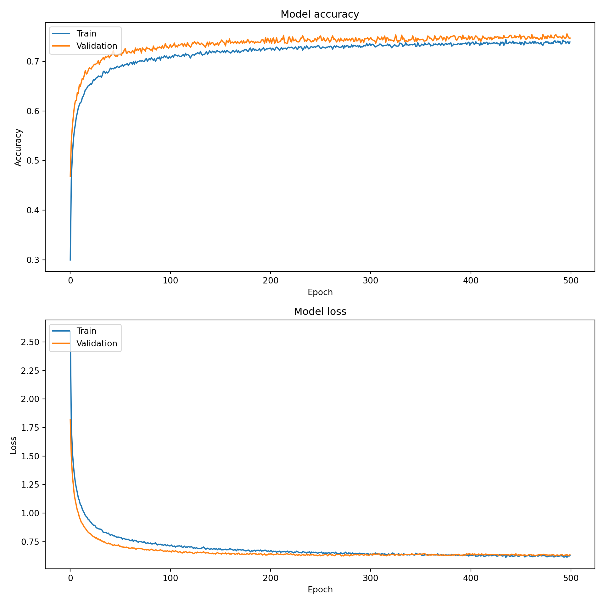

Code
import pandas as pd
import numpy as np
from pyprojroot.here import here
import matplotlib.pyplot as plt
from sklearn.model_selection import train_test_split
from sklearn.preprocessing import StandardScaler, OneHotEncoder
from sklearn.compose import ColumnTransformer
import tensorflow as tf
from tensorflow.keras.models import Sequential
from tensorflow.keras.layers import Dense, Dropout, Input
from tensorflow.keras.utils import to_categorical
# Load the data
data = pd.read_csv(here("data/data_cleaned.csv"))
# Display the structure of the data
print(data.info())<class 'pandas.core.frame.DataFrame'>
RangeIndex: 42240 entries, 0 to 42239
Data columns (total 18 columns):
# Column Non-Null Count Dtype
--- ------ -------------- -----
0 make 42240 non-null object
1 model_year 42240 non-null int64
2 vehicle_class 42240 non-null object
3 drive 42240 non-null object
4 engine_cylinders 42237 non-null object
5 engine_displacement 42238 non-null object
6 transmission 42240 non-null object
7 fuel_type_1 42240 non-null object
8 city_mpg_fuel_type_1 42240 non-null int64
9 highway_mpg_fuel_type_1 42240 non-null int64
10 fuel_type_2 42240 non-null object
11 city_mpg_fuel_type_2 42240 non-null int64
12 highway_mpg_fuel_type_2 42240 non-null int64
13 range_ev_city_fuel_type_1 42240 non-null int64
14 range_ev_highway_fuel_type_1 42240 non-null float64
15 range_ev_city_fuel_type_2 42240 non-null int64
16 range_ev_highway_fuel_type_2 42240 non-null float64
17 charge_time_240v 42240 non-null float64
dtypes: float64(3), int64(7), object(8)
memory usage: 5.8+ MB
NoneCode
# Display the first few rows of the data
print(data.head()) make model_year ... range_ev_highway_fuel_type_2 charge_time_240v
0 Alfa Romeo 1985 ... 0.0 0.0
1 Chevrolet 1985 ... 0.0 0.0
2 Chevrolet 1985 ... 0.0 0.0
3 Nissan 1985 ... 0.0 0.0
4 Nissan 1985 ... 0.0 0.0
[5 rows x 18 columns]Code
# Identify categorical and numerical columns
categorical_cols = data.select_dtypes(include=['object']).columns.tolist()
numerical_cols = data.select_dtypes(include=['int64', 'float64']).columns.tolist()
# Remove the target column 'make' from the features list
if 'make' in categorical_cols:
categorical_cols.remove('make')
if 'make' in numerical_cols:
numerical_cols.remove('make')
print(f"Categorical columns: {categorical_cols}")Categorical columns: ['vehicle_class', 'drive', 'engine_cylinders', 'engine_displacement', 'transmission', 'fuel_type_1', 'fuel_type_2']Code
print(f"Numerical columns: {numerical_cols}")Numerical columns: ['model_year', 'city_mpg_fuel_type_1', 'highway_mpg_fuel_type_1', 'city_mpg_fuel_type_2', 'highway_mpg_fuel_type_2', 'range_ev_city_fuel_type_1', 'range_ev_highway_fuel_type_1', 'range_ev_city_fuel_type_2', 'range_ev_highway_fuel_type_2', 'charge_time_240v']Code
# Define the preprocessing steps for numerical and categorical columns
preprocessor = ColumnTransformer(
transformers=[
('num', StandardScaler(), numerical_cols),
('cat', OneHotEncoder(sparse_output=False), categorical_cols) # Set sparse_output to False
])
# Split data into features and target
X = data.drop('make', axis=1)
y = data['make']
# Apply preprocessing and split data into training and testing sets
X_preprocessed = preprocessor.fit_transform(X)
# Encode the target variable
y_encoded = pd.get_dummies(y).values
# Split the data into training and testing sets
X_train, X_test, y_train, y_test = train_test_split(X_preprocessed, y_encoded, test_size=0.2, random_state=123)
# Define the neural network model
model = Sequential([
Input(shape=(X_train.shape[1],)),
Dense(128, activation='relu'),
Dropout(0.2),
Dense(64, activation='relu'),
Dropout(0.2),
Dense(y_train.shape[1], activation='softmax')
])
# Compile the model
model.compile(optimizer='adam', loss='categorical_crossentropy', metrics=['accuracy'])
# Train the model
history = model.fit(X_train, y_train, epochs=500, batch_size=32, validation_split=0.2)Epoch 1/500
[1m 1/845[0m [37m━━━━━━━━━━━━━━━━━━━━[0m [1m4:41[0m 334ms/step - accuracy: 0.0000e+00 - loss: 4.8486
[1m118/845[0m [32m━━[0m[37m━━━━━━━━━━━━━━━━━━[0m [1m0s[0m 429us/step - accuracy: 0.0836 - loss: 4.2923
[1m246/845[0m [32m━━━━━[0m[37m━━━━━━━━━━━━━━━[0m [1m0s[0m 410us/step - accuracy: 0.1160 - loss: 3.9034
[1m374/845[0m [32m━━━━━━━━[0m[37m━━━━━━━━━━━━[0m [1m0s[0m 404us/step - accuracy: 0.1405 - loss: 3.6674
[1m503/845[0m [32m━━━━━━━━━━━[0m[37m━━━━━━━━━[0m [1m0s[0m 400us/step - accuracy: 0.1609 - loss: 3.4987
[1m632/845[0m [32m━━━━━━━━━━━━━━[0m[37m━━━━━━[0m [1m0s[0m 397us/step - accuracy: 0.1792 - loss: 3.3656
[1m762/845[0m [32m━━━━━━━━━━━━━━━━━━[0m[37m━━[0m [1m0s[0m 396us/step - accuracy: 0.1955 - loss: 3.2550
[1m845/845[0m [32m━━━━━━━━━━━━━━━━━━━━[0m[37m[0m [1m1s[0m 517us/step - accuracy: 0.2051 - loss: 3.1925 - val_accuracy: 0.4683 - val_loss: 1.8210
Epoch 2/500
[1m 1/845[0m [37m━━━━━━━━━━━━━━━━━━━━[0m [1m6s[0m 8ms/step - accuracy: 0.4062 - loss: 2.0660
[1m130/845[0m [32m━━━[0m[37m━━━━━━━━━━━━━━━━━[0m [1m0s[0m 390us/step - accuracy: 0.4287 - loss: 1.9144
[1m259/845[0m [32m━━━━━━[0m[37m━━━━━━━━━━━━━━[0m [1m0s[0m 389us/step - accuracy: 0.4320 - loss: 1.9040
[1m389/845[0m [32m━━━━━━━━━[0m[37m━━━━━━━━━━━[0m [1m0s[0m 388us/step - accuracy: 0.4346 - loss: 1.8922
[1m518/845[0m [32m━━━━━━━━━━━━[0m[37m━━━━━━━━[0m [1m0s[0m 388us/step - accuracy: 0.4370 - loss: 1.8815
[1m648/845[0m [32m━━━━━━━━━━━━━━━[0m[37m━━━━━[0m [1m0s[0m 388us/step - accuracy: 0.4397 - loss: 1.8693
[1m778/845[0m [32m━━━━━━━━━━━━━━━━━━[0m[37m━━[0m [1m0s[0m 387us/step - accuracy: 0.4426 - loss: 1.8577
[1m845/845[0m [32m━━━━━━━━━━━━━━━━━━━━[0m[37m[0m [1m0s[0m 452us/step - accuracy: 0.4441 - loss: 1.8519 - val_accuracy: 0.5391 - val_loss: 1.5020
Epoch 3/500
[1m 1/845[0m [37m━━━━━━━━━━━━━━━━━━━━[0m [1m6s[0m 8ms/step - accuracy: 0.4375 - loss: 1.4311
[1m130/845[0m [32m━━━[0m[37m━━━━━━━━━━━━━━━━━[0m [1m0s[0m 389us/step - accuracy: 0.5147 - loss: 1.5657
[1m261/845[0m [32m━━━━━━[0m[37m━━━━━━━━━━━━━━[0m [1m0s[0m 386us/step - accuracy: 0.5079 - loss: 1.5826
[1m391/845[0m [32m━━━━━━━━━[0m[37m━━━━━━━━━━━[0m [1m0s[0m 385us/step - accuracy: 0.5058 - loss: 1.5873
[1m522/845[0m [32m━━━━━━━━━━━━[0m[37m━━━━━━━━[0m [1m0s[0m 385us/step - accuracy: 0.5048 - loss: 1.5871
[1m652/845[0m [32m━━━━━━━━━━━━━━━[0m[37m━━━━━[0m [1m0s[0m 385us/step - accuracy: 0.5044 - loss: 1.5858
[1m782/845[0m [32m━━━━━━━━━━━━━━━━━━[0m[37m━━[0m [1m0s[0m 385us/step - accuracy: 0.5047 - loss: 1.5823
[1m845/845[0m [32m━━━━━━━━━━━━━━━━━━━━[0m[37m[0m [1m0s[0m 451us/step - accuracy: 0.5050 - loss: 1.5803 - val_accuracy: 0.5669 - val_loss: 1.3434
Epoch 4/500
[1m 1/845[0m [37m━━━━━━━━━━━━━━━━━━━━[0m [1m6s[0m 8ms/step - accuracy: 0.4062 - loss: 1.6026
[1m130/845[0m [32m━━━[0m[37m━━━━━━━━━━━━━━━━━[0m [1m0s[0m 388us/step - accuracy: 0.5333 - loss: 1.4686
[1m260/845[0m [32m━━━━━━[0m[37m━━━━━━━━━━━━━━[0m [1m0s[0m 388us/step - accuracy: 0.5332 - loss: 1.4693
[1m390/845[0m [32m━━━━━━━━━[0m[37m━━━━━━━━━━━[0m [1m0s[0m 387us/step - accuracy: 0.5323 - loss: 1.4698
[1m519/845[0m [32m━━━━━━━━━━━━[0m[37m━━━━━━━━[0m [1m0s[0m 388us/step - accuracy: 0.5323 - loss: 1.4687
[1m650/845[0m [32m━━━━━━━━━━━━━━━[0m[37m━━━━━[0m [1m0s[0m 387us/step - accuracy: 0.5329 - loss: 1.4653
[1m780/845[0m [32m━━━━━━━━━━━━━━━━━━[0m[37m━━[0m [1m0s[0m 387us/step - accuracy: 0.5334 - loss: 1.4618
[1m845/845[0m [32m━━━━━━━━━━━━━━━━━━━━[0m[37m[0m [1m0s[0m 452us/step - accuracy: 0.5338 - loss: 1.4596 - val_accuracy: 0.5890 - val_loss: 1.2470
Epoch 5/500
[1m 1/845[0m [37m━━━━━━━━━━━━━━━━━━━━[0m [1m6s[0m 8ms/step - accuracy: 0.4688 - loss: 1.6902
[1m129/845[0m [32m━━━[0m[37m━━━━━━━━━━━━━━━━━[0m [1m0s[0m 392us/step - accuracy: 0.5620 - loss: 1.3442
[1m258/845[0m [32m━━━━━━[0m[37m━━━━━━━━━━━━━━[0m [1m0s[0m 391us/step - accuracy: 0.5565 - loss: 1.3550
[1m386/845[0m [32m━━━━━━━━━[0m[37m━━━━━━━━━━━[0m [1m0s[0m 391us/step - accuracy: 0.5566 - loss: 1.3573
[1m515/845[0m [32m━━━━━━━━━━━━[0m[37m━━━━━━━━[0m [1m0s[0m 390us/step - accuracy: 0.5561 - loss: 1.3586
[1m645/845[0m [32m━━━━━━━━━━━━━━━[0m[37m━━━━━[0m [1m0s[0m 389us/step - accuracy: 0.5560 - loss: 1.3584
[1m775/845[0m [32m━━━━━━━━━━━━━━━━━━[0m[37m━━[0m [1m0s[0m 389us/step - accuracy: 0.5562 - loss: 1.3567
[1m845/845[0m [32m━━━━━━━━━━━━━━━━━━━━[0m[37m[0m [1m0s[0m 454us/step - accuracy: 0.5564 - loss: 1.3556 - val_accuracy: 0.6075 - val_loss: 1.1581
Epoch 6/500
[1m 1/845[0m [37m━━━━━━━━━━━━━━━━━━━━[0m [1m6s[0m 8ms/step - accuracy: 0.5938 - loss: 1.3306
[1m129/845[0m [32m━━━[0m[37m━━━━━━━━━━━━━━━━━[0m [1m0s[0m 391us/step - accuracy: 0.5867 - loss: 1.2397
[1m259/845[0m [32m━━━━━━[0m[37m━━━━━━━━━━━━━━[0m [1m0s[0m 389us/step - accuracy: 0.5795 - loss: 1.2581
[1m390/845[0m [32m━━━━━━━━━[0m[37m━━━━━━━━━━━[0m [1m0s[0m 387us/step - accuracy: 0.5763 - loss: 1.2672
[1m520/845[0m [32m━━━━━━━━━━━━[0m[37m━━━━━━━━[0m [1m0s[0m 387us/step - accuracy: 0.5751 - loss: 1.2692
[1m651/845[0m [32m━━━━━━━━━━━━━━━[0m[37m━━━━━[0m [1m0s[0m 386us/step - accuracy: 0.5744 - loss: 1.2697
[1m782/845[0m [32m━━━━━━━━━━━━━━━━━━[0m[37m━━[0m [1m0s[0m 386us/step - accuracy: 0.5743 - loss: 1.2697
[1m845/845[0m [32m━━━━━━━━━━━━━━━━━━━━[0m[37m[0m [1m0s[0m 451us/step - accuracy: 0.5742 - loss: 1.2697 - val_accuracy: 0.6199 - val_loss: 1.1102
Epoch 7/500
[1m 1/845[0m [37m━━━━━━━━━━━━━━━━━━━━[0m [1m6s[0m 8ms/step - accuracy: 0.5000 - loss: 1.3855
[1m129/845[0m [32m━━━[0m[37m━━━━━━━━━━━━━━━━━[0m [1m0s[0m 392us/step - accuracy: 0.5805 - loss: 1.2064
[1m259/845[0m [32m━━━━━━[0m[37m━━━━━━━━━━━━━━[0m [1m0s[0m 389us/step - accuracy: 0.5847 - loss: 1.2093
[1m389/845[0m [32m━━━━━━━━━[0m[37m━━━━━━━━━━━[0m [1m0s[0m 388us/step - accuracy: 0.5862 - loss: 1.2132
[1m520/845[0m [32m━━━━━━━━━━━━[0m[37m━━━━━━━━[0m [1m0s[0m 387us/step - accuracy: 0.5869 - loss: 1.2143
[1m650/845[0m [32m━━━━━━━━━━━━━━━[0m[37m━━━━━[0m [1m0s[0m 386us/step - accuracy: 0.5869 - loss: 1.2154
[1m781/845[0m [32m━━━━━━━━━━━━━━━━━━[0m[37m━━[0m [1m0s[0m 386us/step - accuracy: 0.5867 - loss: 1.2162
[1m845/845[0m [32m━━━━━━━━━━━━━━━━━━━━[0m[37m[0m [1m0s[0m 450us/step - accuracy: 0.5867 - loss: 1.2165 - val_accuracy: 0.6208 - val_loss: 1.0669
Epoch 8/500
[1m 1/845[0m [37m━━━━━━━━━━━━━━━━━━━━[0m [1m6s[0m 7ms/step - accuracy: 0.7188 - loss: 1.0795
[1m129/845[0m [32m━━━[0m[37m━━━━━━━━━━━━━━━━━[0m [1m0s[0m 392us/step - accuracy: 0.6263 - loss: 1.1387
[1m260/845[0m [32m━━━━━━[0m[37m━━━━━━━━━━━━━━[0m [1m0s[0m 388us/step - accuracy: 0.6120 - loss: 1.1565
[1m390/845[0m [32m━━━━━━━━━[0m[37m━━━━━━━━━━━[0m [1m0s[0m 387us/step - accuracy: 0.6065 - loss: 1.1637
[1m519/845[0m [32m━━━━━━━━━━━━[0m[37m━━━━━━━━[0m [1m0s[0m 387us/step - accuracy: 0.6035 - loss: 1.1690
[1m651/845[0m [32m━━━━━━━━━━━━━━━[0m[37m━━━━━[0m [1m0s[0m 386us/step - accuracy: 0.6020 - loss: 1.1720
[1m781/845[0m [32m━━━━━━━━━━━━━━━━━━[0m[37m━━[0m [1m0s[0m 386us/step - accuracy: 0.6011 - loss: 1.1736
[1m845/845[0m [32m━━━━━━━━━━━━━━━━━━━━[0m[37m[0m [1m0s[0m 451us/step - accuracy: 0.6007 - loss: 1.1741 - val_accuracy: 0.6371 - val_loss: 1.0251
Epoch 9/500
[1m 1/845[0m [37m━━━━━━━━━━━━━━━━━━━━[0m [1m6s[0m 8ms/step - accuracy: 0.5625 - loss: 0.9717
[1m131/845[0m [32m━━━[0m[37m━━━━━━━━━━━━━━━━━[0m [1m0s[0m 387us/step - accuracy: 0.6145 - loss: 1.1111
[1m263/845[0m [32m━━━━━━[0m[37m━━━━━━━━━━━━━━[0m [1m0s[0m 383us/step - accuracy: 0.6119 - loss: 1.1170
[1m395/845[0m [32m━━━━━━━━━[0m[37m━━━━━━━━━━━[0m [1m0s[0m 383us/step - accuracy: 0.6112 - loss: 1.1195
[1m526/845[0m [32m━━━━━━━━━━━━[0m[37m━━━━━━━━[0m [1m0s[0m 383us/step - accuracy: 0.6104 - loss: 1.1217
[1m656/845[0m [32m━━━━━━━━━━━━━━━[0m[37m━━━━━[0m [1m0s[0m 383us/step - accuracy: 0.6096 - loss: 1.1241
[1m788/845[0m [32m━━━━━━━━━━━━━━━━━━[0m[37m━━[0m [1m0s[0m 383us/step - accuracy: 0.6093 - loss: 1.1257
[1m845/845[0m [32m━━━━━━━━━━━━━━━━━━━━[0m[37m[0m [1m0s[0m 448us/step - accuracy: 0.6091 - loss: 1.1264 - val_accuracy: 0.6356 - val_loss: 1.0030
Epoch 10/500
[1m 1/845[0m [37m━━━━━━━━━━━━━━━━━━━━[0m [1m6s[0m 7ms/step - accuracy: 0.6562 - loss: 1.3701
[1m129/845[0m [32m━━━[0m[37m━━━━━━━━━━━━━━━━━[0m [1m0s[0m 392us/step - accuracy: 0.6057 - loss: 1.1541
[1m259/845[0m [32m━━━━━━[0m[37m━━━━━━━━━━━━━━[0m [1m0s[0m 389us/step - accuracy: 0.6072 - loss: 1.1416
[1m389/845[0m [32m━━━━━━━━━[0m[37m━━━━━━━━━━━[0m [1m0s[0m 388us/step - accuracy: 0.6080 - loss: 1.1353
[1m517/845[0m [32m━━━━━━━━━━━━[0m[37m━━━━━━━━[0m [1m0s[0m 390us/step - accuracy: 0.6088 - loss: 1.1311
[1m648/845[0m [32m━━━━━━━━━━━━━━━[0m[37m━━━━━[0m [1m0s[0m 388us/step - accuracy: 0.6093 - loss: 1.1281
[1m776/845[0m [32m━━━━━━━━━━━━━━━━━━[0m[37m━━[0m [1m0s[0m 389us/step - accuracy: 0.6096 - loss: 1.1259
[1m845/845[0m [32m━━━━━━━━━━━━━━━━━━━━[0m[37m[0m [1m0s[0m 453us/step - accuracy: 0.6098 - loss: 1.1246 - val_accuracy: 0.6525 - val_loss: 0.9661
Epoch 11/500
[1m 1/845[0m [37m━━━━━━━━━━━━━━━━━━━━[0m [1m6s[0m 8ms/step - accuracy: 0.5938 - loss: 1.0704
[1m129/845[0m [32m━━━[0m[37m━━━━━━━━━━━━━━━━━[0m [1m0s[0m 391us/step - accuracy: 0.6012 - loss: 1.0875
[1m259/845[0m [32m━━━━━━[0m[37m━━━━━━━━━━━━━━[0m [1m0s[0m 389us/step - accuracy: 0.6037 - loss: 1.0897
[1m389/845[0m [32m━━━━━━━━━[0m[37m━━━━━━━━━━━[0m [1m0s[0m 388us/step - accuracy: 0.6078 - loss: 1.0866
[1m519/845[0m [32m━━━━━━━━━━━━[0m[37m━━━━━━━━[0m [1m0s[0m 388us/step - accuracy: 0.6106 - loss: 1.0820
[1m650/845[0m [32m━━━━━━━━━━━━━━━[0m[37m━━━━━[0m [1m0s[0m 387us/step - accuracy: 0.6121 - loss: 1.0787
[1m780/845[0m [32m━━━━━━━━━━━━━━━━━━[0m[37m━━[0m [1m0s[0m 386us/step - accuracy: 0.6130 - loss: 1.0771
[1m845/845[0m [32m━━━━━━━━━━━━━━━━━━━━[0m[37m[0m [1m0s[0m 451us/step - accuracy: 0.6132 - loss: 1.0768 - val_accuracy: 0.6495 - val_loss: 0.9441
Epoch 12/500
[1m 1/845[0m [37m━━━━━━━━━━━━━━━━━━━━[0m [1m6s[0m 7ms/step - accuracy: 0.5312 - loss: 1.3253
[1m130/845[0m [32m━━━[0m[37m━━━━━━━━━━━━━━━━━[0m [1m0s[0m 390us/step - accuracy: 0.6196 - loss: 1.0708
[1m261/845[0m [32m━━━━━━[0m[37m━━━━━━━━━━━━━━[0m [1m0s[0m 387us/step - accuracy: 0.6216 - loss: 1.0570
[1m392/845[0m [32m━━━━━━━━━[0m[37m━━━━━━━━━━━[0m [1m0s[0m 385us/step - accuracy: 0.6213 - loss: 1.0544
[1m523/845[0m [32m━━━━━━━━━━━━[0m[37m━━━━━━━━[0m [1m0s[0m 385us/step - accuracy: 0.6211 - loss: 1.0543
[1m654/845[0m [32m━━━━━━━━━━━━━━━[0m[37m━━━━━[0m [1m0s[0m 385us/step - accuracy: 0.6210 - loss: 1.0551
[1m785/845[0m [32m━━━━━━━━━━━━━━━━━━[0m[37m━━[0m [1m0s[0m 384us/step - accuracy: 0.6209 - loss: 1.0560
[1m845/845[0m [32m━━━━━━━━━━━━━━━━━━━━[0m[37m[0m [1m0s[0m 450us/step - accuracy: 0.6208 - loss: 1.0566 - val_accuracy: 0.6579 - val_loss: 0.9196
Epoch 13/500
[1m 1/845[0m [37m━━━━━━━━━━━━━━━━━━━━[0m [1m6s[0m 8ms/step - accuracy: 0.5312 - loss: 1.0805
[1m130/845[0m [32m━━━[0m[37m━━━━━━━━━━━━━━━━━[0m [1m0s[0m 388us/step - accuracy: 0.6388 - loss: 1.0060
[1m261/845[0m [32m━━━━━━[0m[37m━━━━━━━━━━━━━━[0m [1m0s[0m 385us/step - accuracy: 0.6346 - loss: 1.0104
[1m392/845[0m [32m━━━━━━━━━[0m[37m━━━━━━━━━━━[0m [1m0s[0m 384us/step - accuracy: 0.6334 - loss: 1.0130
[1m523/845[0m [32m━━━━━━━━━━━━[0m[37m━━━━━━━━[0m [1m0s[0m 384us/step - accuracy: 0.6325 - loss: 1.0151
[1m654/845[0m [32m━━━━━━━━━━━━━━━[0m[37m━━━━━[0m [1m0s[0m 384us/step - accuracy: 0.6315 - loss: 1.0178
[1m785/845[0m [32m━━━━━━━━━━━━━━━━━━[0m[37m━━[0m [1m0s[0m 383us/step - accuracy: 0.6305 - loss: 1.0208
[1m845/845[0m [32m━━━━━━━━━━━━━━━━━━━━[0m[37m[0m [1m0s[0m 448us/step - accuracy: 0.6302 - loss: 1.0217 - val_accuracy: 0.6658 - val_loss: 0.9093
Epoch 14/500
[1m 1/845[0m [37m━━━━━━━━━━━━━━━━━━━━[0m [1m6s[0m 7ms/step - accuracy: 0.5312 - loss: 1.2190
[1m131/845[0m [32m━━━[0m[37m━━━━━━━━━━━━━━━━━[0m [1m0s[0m 387us/step - accuracy: 0.6125 - loss: 1.0546
[1m262/845[0m [32m━━━━━━[0m[37m━━━━━━━━━━━━━━[0m [1m0s[0m 385us/step - accuracy: 0.6176 - loss: 1.0465
[1m394/845[0m [32m━━━━━━━━━[0m[37m━━━━━━━━━━━[0m [1m0s[0m 384us/step - accuracy: 0.6209 - loss: 1.0408
[1m526/845[0m [32m━━━━━━━━━━━━[0m[37m━━━━━━━━[0m [1m0s[0m 383us/step - accuracy: 0.6229 - loss: 1.0371
[1m657/845[0m [32m━━━━━━━━━━━━━━━[0m[37m━━━━━[0m [1m0s[0m 383us/step - accuracy: 0.6243 - loss: 1.0346
[1m788/845[0m [32m━━━━━━━━━━━━━━━━━━[0m[37m━━[0m [1m0s[0m 383us/step - accuracy: 0.6253 - loss: 1.0314
[1m845/845[0m [32m━━━━━━━━━━━━━━━━━━━━[0m[37m[0m [1m0s[0m 447us/step - accuracy: 0.6256 - loss: 1.0303 - val_accuracy: 0.6643 - val_loss: 0.8927
Epoch 15/500
[1m 1/845[0m [37m━━━━━━━━━━━━━━━━━━━━[0m [1m6s[0m 7ms/step - accuracy: 0.5625 - loss: 0.7583
[1m130/845[0m [32m━━━[0m[37m━━━━━━━━━━━━━━━━━[0m [1m0s[0m 388us/step - accuracy: 0.6514 - loss: 0.9644
[1m261/845[0m [32m━━━━━━[0m[37m━━━━━━━━━━━━━━[0m [1m0s[0m 386us/step - accuracy: 0.6492 - loss: 0.9738
[1m392/845[0m [32m━━━━━━━━━[0m[37m━━━━━━━━━━━[0m [1m0s[0m 385us/step - accuracy: 0.6458 - loss: 0.9822
[1m523/845[0m [32m━━━━━━━━━━━━[0m[37m━━━━━━━━[0m [1m0s[0m 384us/step - accuracy: 0.6438 - loss: 0.9862
[1m655/845[0m [32m━━━━━━━━━━━━━━━[0m[37m━━━━━[0m [1m0s[0m 384us/step - accuracy: 0.6426 - loss: 0.9882
[1m787/845[0m [32m━━━━━━━━━━━━━━━━━━[0m[37m━━[0m [1m0s[0m 383us/step - accuracy: 0.6416 - loss: 0.9903
[1m845/845[0m [32m━━━━━━━━━━━━━━━━━━━━[0m[37m[0m [1m0s[0m 447us/step - accuracy: 0.6412 - loss: 0.9911 - val_accuracy: 0.6726 - val_loss: 0.8757
Epoch 16/500
[1m 1/845[0m [37m━━━━━━━━━━━━━━━━━━━━[0m [1m6s[0m 8ms/step - accuracy: 0.6875 - loss: 0.9536
[1m130/845[0m [32m━━━[0m[37m━━━━━━━━━━━━━━━━━[0m [1m0s[0m 388us/step - accuracy: 0.6476 - loss: 0.9868
[1m261/845[0m [32m━━━━━━[0m[37m━━━━━━━━━━━━━━[0m [1m0s[0m 385us/step - accuracy: 0.6452 - loss: 0.9831
[1m392/845[0m [32m━━━━━━━━━[0m[37m━━━━━━━━━━━[0m [1m0s[0m 384us/step - accuracy: 0.6446 - loss: 0.9806
[1m524/845[0m [32m━━━━━━━━━━━━[0m[37m━━━━━━━━[0m [1m0s[0m 383us/step - accuracy: 0.6442 - loss: 0.9794
[1m656/845[0m [32m━━━━━━━━━━━━━━━[0m[37m━━━━━[0m [1m0s[0m 383us/step - accuracy: 0.6436 - loss: 0.9791
[1m788/845[0m [32m━━━━━━━━━━━━━━━━━━[0m[37m━━[0m [1m0s[0m 382us/step - accuracy: 0.6432 - loss: 0.9791
[1m845/845[0m [32m━━━━━━━━━━━━━━━━━━━━[0m[37m[0m [1m0s[0m 447us/step - accuracy: 0.6432 - loss: 0.9791 - val_accuracy: 0.6816 - val_loss: 0.8674
Epoch 17/500
[1m 1/845[0m [37m━━━━━━━━━━━━━━━━━━━━[0m [1m6s[0m 7ms/step - accuracy: 0.6562 - loss: 0.9270
[1m130/845[0m [32m━━━[0m[37m━━━━━━━━━━━━━━━━━[0m [1m0s[0m 388us/step - accuracy: 0.6523 - loss: 0.9515
[1m261/845[0m [32m━━━━━━[0m[37m━━━━━━━━━━━━━━[0m [1m0s[0m 385us/step - accuracy: 0.6538 - loss: 0.9502
[1m392/845[0m [32m━━━━━━━━━[0m[37m━━━━━━━━━━━[0m [1m0s[0m 385us/step - accuracy: 0.6523 - loss: 0.9543
[1m524/845[0m [32m━━━━━━━━━━━━[0m[37m━━━━━━━━[0m [1m0s[0m 384us/step - accuracy: 0.6508 - loss: 0.9576
[1m656/845[0m [32m━━━━━━━━━━━━━━━[0m[37m━━━━━[0m [1m0s[0m 383us/step - accuracy: 0.6493 - loss: 0.9611
[1m788/845[0m [32m━━━━━━━━━━━━━━━━━━[0m[37m━━[0m [1m0s[0m 383us/step - accuracy: 0.6483 - loss: 0.9632
[1m845/845[0m [32m━━━━━━━━━━━━━━━━━━━━[0m[37m[0m [1m0s[0m 447us/step - accuracy: 0.6480 - loss: 0.9638 - val_accuracy: 0.6744 - val_loss: 0.8539
Epoch 18/500
[1m 1/845[0m [37m━━━━━━━━━━━━━━━━━━━━[0m [1m6s[0m 7ms/step - accuracy: 0.5938 - loss: 0.9062
[1m131/845[0m [32m━━━[0m[37m━━━━━━━━━━━━━━━━━[0m [1m0s[0m 385us/step - accuracy: 0.6375 - loss: 0.9640
[1m263/845[0m [32m━━━━━━[0m[37m━━━━━━━━━━━━━━[0m [1m0s[0m 383us/step - accuracy: 0.6429 - loss: 0.9582
[1m395/845[0m [32m━━━━━━━━━[0m[37m━━━━━━━━━━━[0m [1m0s[0m 382us/step - accuracy: 0.6445 - loss: 0.9550
[1m527/845[0m [32m━━━━━━━━━━━━[0m[37m━━━━━━━━[0m [1m0s[0m 381us/step - accuracy: 0.6450 - loss: 0.9548
[1m659/845[0m [32m━━━━━━━━━━━━━━━[0m[37m━━━━━[0m [1m0s[0m 381us/step - accuracy: 0.6453 - loss: 0.9551
[1m791/845[0m [32m━━━━━━━━━━━━━━━━━━[0m[37m━━[0m [1m0s[0m 381us/step - accuracy: 0.6456 - loss: 0.9555
[1m845/845[0m [32m━━━━━━━━━━━━━━━━━━━━[0m[37m[0m [1m0s[0m 446us/step - accuracy: 0.6458 - loss: 0.9557 - val_accuracy: 0.6766 - val_loss: 0.8417
Epoch 19/500
[1m 1/845[0m [37m━━━━━━━━━━━━━━━━━━━━[0m [1m6s[0m 7ms/step - accuracy: 0.6562 - loss: 0.9681
[1m131/845[0m [32m━━━[0m[37m━━━━━━━━━━━━━━━━━[0m [1m0s[0m 386us/step - accuracy: 0.6559 - loss: 0.9331
[1m263/845[0m [32m━━━━━━[0m[37m━━━━━━━━━━━━━━[0m [1m0s[0m 383us/step - accuracy: 0.6541 - loss: 0.9325
[1m395/845[0m [32m━━━━━━━━━[0m[37m━━━━━━━━━━━[0m [1m0s[0m 382us/step - accuracy: 0.6536 - loss: 0.9303
[1m527/845[0m [32m━━━━━━━━━━━━[0m[37m━━━━━━━━[0m [1m0s[0m 382us/step - accuracy: 0.6534 - loss: 0.9297
[1m659/845[0m [32m━━━━━━━━━━━━━━━[0m[37m━━━━━[0m [1m0s[0m 382us/step - accuracy: 0.6536 - loss: 0.9296
[1m791/845[0m [32m━━━━━━━━━━━━━━━━━━[0m[37m━━[0m [1m0s[0m 382us/step - accuracy: 0.6537 - loss: 0.9302
[1m845/845[0m [32m━━━━━━━━━━━━━━━━━━━━[0m[37m[0m [1m0s[0m 448us/step - accuracy: 0.6536 - loss: 0.9309 - val_accuracy: 0.6823 - val_loss: 0.8317
Epoch 20/500
[1m 1/845[0m [37m━━━━━━━━━━━━━━━━━━━━[0m [1m6s[0m 8ms/step - accuracy: 0.6562 - loss: 0.8205
[1m130/845[0m [32m━━━[0m[37m━━━━━━━━━━━━━━━━━[0m [1m0s[0m 388us/step - accuracy: 0.6622 - loss: 0.9220
[1m261/845[0m [32m━━━━━━[0m[37m━━━━━━━━━━━━━━[0m [1m0s[0m 385us/step - accuracy: 0.6576 - loss: 0.9292
[1m392/845[0m [32m━━━━━━━━━[0m[37m━━━━━━━━━━━[0m [1m0s[0m 384us/step - accuracy: 0.6547 - loss: 0.9328
[1m523/845[0m [32m━━━━━━━━━━━━[0m[37m━━━━━━━━[0m [1m0s[0m 384us/step - accuracy: 0.6538 - loss: 0.9347
[1m654/845[0m [32m━━━━━━━━━━━━━━━[0m[37m━━━━━[0m [1m0s[0m 384us/step - accuracy: 0.6535 - loss: 0.9355
[1m785/845[0m [32m━━━━━━━━━━━━━━━━━━[0m[37m━━[0m [1m0s[0m 384us/step - accuracy: 0.6535 - loss: 0.9359
[1m845/845[0m [32m━━━━━━━━━━━━━━━━━━━━[0m[37m[0m [1m0s[0m 449us/step - accuracy: 0.6535 - loss: 0.9361 - val_accuracy: 0.6869 - val_loss: 0.8243
Epoch 21/500
[1m 1/845[0m [37m━━━━━━━━━━━━━━━━━━━━[0m [1m6s[0m 8ms/step - accuracy: 0.6562 - loss: 0.9649
[1m131/845[0m [32m━━━[0m[37m━━━━━━━━━━━━━━━━━[0m [1m0s[0m 387us/step - accuracy: 0.6595 - loss: 0.8911
[1m262/845[0m [32m━━━━━━[0m[37m━━━━━━━━━━━━━━[0m [1m0s[0m 385us/step - accuracy: 0.6618 - loss: 0.8942
[1m394/845[0m [32m━━━━━━━━━[0m[37m━━━━━━━━━━━[0m [1m0s[0m 383us/step - accuracy: 0.6614 - loss: 0.8999
[1m526/845[0m [32m━━━━━━━━━━━━[0m[37m━━━━━━━━[0m [1m0s[0m 382us/step - accuracy: 0.6598 - loss: 0.9062
[1m658/845[0m [32m━━━━━━━━━━━━━━━[0m[37m━━━━━[0m [1m0s[0m 382us/step - accuracy: 0.6585 - loss: 0.9108
[1m790/845[0m [32m━━━━━━━━━━━━━━━━━━[0m[37m━━[0m [1m0s[0m 382us/step - accuracy: 0.6580 - loss: 0.9133
[1m845/845[0m [32m━━━━━━━━━━━━━━━━━━━━[0m[37m[0m [1m0s[0m 446us/step - accuracy: 0.6577 - loss: 0.9141 - val_accuracy: 0.6855 - val_loss: 0.8204
Epoch 22/500
[1m 1/845[0m [37m━━━━━━━━━━━━━━━━━━━━[0m [1m6s[0m 7ms/step - accuracy: 0.6250 - loss: 1.0973
[1m131/845[0m [32m━━━[0m[37m━━━━━━━━━━━━━━━━━[0m [1m0s[0m 387us/step - accuracy: 0.6536 - loss: 0.9062
[1m262/845[0m [32m━━━━━━[0m[37m━━━━━━━━━━━━━━[0m [1m0s[0m 385us/step - accuracy: 0.6528 - loss: 0.9086
[1m393/845[0m [32m━━━━━━━━━[0m[37m━━━━━━━━━━━[0m [1m0s[0m 384us/step - accuracy: 0.6517 - loss: 0.9124
[1m524/845[0m [32m━━━━━━━━━━━━[0m[37m━━━━━━━━[0m [1m0s[0m 383us/step - accuracy: 0.6515 - loss: 0.9139
[1m655/845[0m [32m━━━━━━━━━━━━━━━[0m[37m━━━━━[0m [1m0s[0m 383us/step - accuracy: 0.6519 - loss: 0.9140
[1m787/845[0m [32m━━━━━━━━━━━━━━━━━━[0m[37m━━[0m [1m0s[0m 383us/step - accuracy: 0.6521 - loss: 0.9142
[1m845/845[0m [32m━━━━━━━━━━━━━━━━━━━━[0m[37m[0m [1m0s[0m 447us/step - accuracy: 0.6522 - loss: 0.9143 - val_accuracy: 0.6846 - val_loss: 0.8115
Epoch 23/500
[1m 1/845[0m [37m━━━━━━━━━━━━━━━━━━━━[0m [1m6s[0m 7ms/step - accuracy: 0.6875 - loss: 0.9211
[1m131/845[0m [32m━━━[0m[37m━━━━━━━━━━━━━━━━━[0m [1m0s[0m 387us/step - accuracy: 0.6523 - loss: 0.9067
[1m262/845[0m [32m━━━━━━[0m[37m━━━━━━━━━━━━━━[0m [1m0s[0m 385us/step - accuracy: 0.6536 - loss: 0.9084
[1m394/845[0m [32m━━━━━━━━━[0m[37m━━━━━━━━━━━[0m [1m0s[0m 384us/step - accuracy: 0.6553 - loss: 0.9063
[1m527/845[0m [32m━━━━━━━━━━━━[0m[37m━━━━━━━━[0m [1m0s[0m 382us/step - accuracy: 0.6562 - loss: 0.9048
[1m659/845[0m [32m━━━━━━━━━━━━━━━[0m[37m━━━━━[0m [1m0s[0m 382us/step - accuracy: 0.6568 - loss: 0.9040
[1m791/845[0m [32m━━━━━━━━━━━━━━━━━━[0m[37m━━[0m [1m0s[0m 382us/step - accuracy: 0.6571 - loss: 0.9036
[1m845/845[0m [32m━━━━━━━━━━━━━━━━━━━━[0m[37m[0m [1m0s[0m 446us/step - accuracy: 0.6571 - loss: 0.9035 - val_accuracy: 0.6893 - val_loss: 0.8023
Epoch 24/500
[1m 1/845[0m [37m━━━━━━━━━━━━━━━━━━━━[0m [1m5s[0m 7ms/step - accuracy: 0.6875 - loss: 0.9909
[1m132/845[0m [32m━━━[0m[37m━━━━━━━━━━━━━━━━━[0m [1m0s[0m 382us/step - accuracy: 0.6747 - loss: 0.8898
[1m266/845[0m [32m━━━━━━[0m[37m━━━━━━━━━━━━━━[0m [1m0s[0m 378us/step - accuracy: 0.6711 - loss: 0.8860
[1m399/845[0m [32m━━━━━━━━━[0m[37m━━━━━━━━━━━[0m [1m0s[0m 378us/step - accuracy: 0.6704 - loss: 0.8845
[1m531/845[0m [32m━━━━━━━━━━━━[0m[37m━━━━━━━━[0m [1m0s[0m 378us/step - accuracy: 0.6692 - loss: 0.8867
[1m663/845[0m [32m━━━━━━━━━━━━━━━[0m[37m━━━━━[0m [1m0s[0m 379us/step - accuracy: 0.6684 - loss: 0.8884
[1m795/845[0m [32m━━━━━━━━━━━━━━━━━━[0m[37m━━[0m [1m0s[0m 379us/step - accuracy: 0.6675 - loss: 0.8895
[1m845/845[0m [32m━━━━━━━━━━━━━━━━━━━━[0m[37m[0m [1m0s[0m 443us/step - accuracy: 0.6672 - loss: 0.8898 - val_accuracy: 0.6909 - val_loss: 0.7941
Epoch 25/500
[1m 1/845[0m [37m━━━━━━━━━━━━━━━━━━━━[0m [1m6s[0m 8ms/step - accuracy: 0.6875 - loss: 0.6031
[1m130/845[0m [32m━━━[0m[37m━━━━━━━━━━━━━━━━━[0m [1m0s[0m 389us/step - accuracy: 0.6901 - loss: 0.8368
[1m261/845[0m [32m━━━━━━[0m[37m━━━━━━━━━━━━━━[0m [1m0s[0m 385us/step - accuracy: 0.6820 - loss: 0.8531
[1m393/845[0m [32m━━━━━━━━━[0m[37m━━━━━━━━━━━[0m [1m0s[0m 383us/step - accuracy: 0.6787 - loss: 0.8595
[1m525/845[0m [32m━━━━━━━━━━━━[0m[37m━━━━━━━━[0m [1m0s[0m 382us/step - accuracy: 0.6765 - loss: 0.8631
[1m657/845[0m [32m━━━━━━━━━━━━━━━[0m[37m━━━━━[0m [1m0s[0m 382us/step - accuracy: 0.6746 - loss: 0.8666
[1m789/845[0m [32m━━━━━━━━━━━━━━━━━━[0m[37m━━[0m [1m0s[0m 382us/step - accuracy: 0.6727 - loss: 0.8703
[1m845/845[0m [32m━━━━━━━━━━━━━━━━━━━━[0m[37m[0m [1m0s[0m 447us/step - accuracy: 0.6720 - loss: 0.8718 - val_accuracy: 0.6940 - val_loss: 0.7905
Epoch 26/500
[1m 1/845[0m [37m━━━━━━━━━━━━━━━━━━━━[0m [1m6s[0m 7ms/step - accuracy: 0.6875 - loss: 0.6543
[1m130/845[0m [32m━━━[0m[37m━━━━━━━━━━━━━━━━━[0m [1m0s[0m 390us/step - accuracy: 0.6654 - loss: 0.8686
[1m262/845[0m [32m━━━━━━[0m[37m━━━━━━━━━━━━━━[0m [1m0s[0m 385us/step - accuracy: 0.6651 - loss: 0.8786
[1m394/845[0m [32m━━━━━━━━━[0m[37m━━━━━━━━━━━[0m [1m0s[0m 383us/step - accuracy: 0.6658 - loss: 0.8799
[1m520/845[0m [32m━━━━━━━━━━━━[0m[37m━━━━━━━━[0m [1m0s[0m 387us/step - accuracy: 0.6658 - loss: 0.8809
[1m653/845[0m [32m━━━━━━━━━━━━━━━[0m[37m━━━━━[0m [1m0s[0m 385us/step - accuracy: 0.6655 - loss: 0.8817
[1m784/845[0m [32m━━━━━━━━━━━━━━━━━━[0m[37m━━[0m [1m0s[0m 385us/step - accuracy: 0.6652 - loss: 0.8826
[1m845/845[0m [32m━━━━━━━━━━━━━━━━━━━━[0m[37m[0m [1m0s[0m 449us/step - accuracy: 0.6651 - loss: 0.8829 - val_accuracy: 0.6934 - val_loss: 0.7814
Epoch 27/500
[1m 1/845[0m [37m━━━━━━━━━━━━━━━━━━━━[0m [1m6s[0m 8ms/step - accuracy: 0.7500 - loss: 0.5777
[1m130/845[0m [32m━━━[0m[37m━━━━━━━━━━━━━━━━━[0m [1m0s[0m 390us/step - accuracy: 0.6736 - loss: 0.8356
[1m261/845[0m [32m━━━━━━[0m[37m━━━━━━━━━━━━━━[0m [1m0s[0m 387us/step - accuracy: 0.6706 - loss: 0.8448
[1m392/845[0m [32m━━━━━━━━━[0m[37m━━━━━━━━━━━[0m [1m0s[0m 385us/step - accuracy: 0.6692 - loss: 0.8491
[1m524/845[0m [32m━━━━━━━━━━━━[0m[37m━━━━━━━━[0m [1m0s[0m 384us/step - accuracy: 0.6682 - loss: 0.8536
[1m655/845[0m [32m━━━━━━━━━━━━━━━[0m[37m━━━━━[0m [1m0s[0m 384us/step - accuracy: 0.6679 - loss: 0.8569
[1m786/845[0m [32m━━━━━━━━━━━━━━━━━━[0m[37m━━[0m [1m0s[0m 384us/step - accuracy: 0.6678 - loss: 0.8587
[1m845/845[0m [32m━━━━━━━━━━━━━━━━━━━━[0m[37m[0m [1m0s[0m 449us/step - accuracy: 0.6677 - loss: 0.8595 - val_accuracy: 0.6955 - val_loss: 0.7880
Epoch 28/500
[1m 1/845[0m [37m━━━━━━━━━━━━━━━━━━━━[0m [1m6s[0m 8ms/step - accuracy: 0.5312 - loss: 0.7404
[1m130/845[0m [32m━━━[0m[37m━━━━━━━━━━━━━━━━━[0m [1m0s[0m 389us/step - accuracy: 0.6559 - loss: 0.8606
[1m262/845[0m [32m━━━━━━[0m[37m━━━━━━━━━━━━━━[0m [1m0s[0m 385us/step - accuracy: 0.6619 - loss: 0.8509
[1m394/845[0m [32m━━━━━━━━━[0m[37m━━━━━━━━━━━[0m [1m0s[0m 384us/step - accuracy: 0.6646 - loss: 0.8494
[1m525/845[0m [32m━━━━━━━━━━━━[0m[37m━━━━━━━━[0m [1m0s[0m 384us/step - accuracy: 0.6661 - loss: 0.8508
[1m656/845[0m [32m━━━━━━━━━━━━━━━[0m[37m━━━━━[0m [1m0s[0m 383us/step - accuracy: 0.6669 - loss: 0.8523
[1m787/845[0m [32m━━━━━━━━━━━━━━━━━━[0m[37m━━[0m [1m0s[0m 383us/step - accuracy: 0.6673 - loss: 0.8540
[1m845/845[0m [32m━━━━━━━━━━━━━━━━━━━━[0m[37m[0m [1m0s[0m 447us/step - accuracy: 0.6674 - loss: 0.8549 - val_accuracy: 0.6967 - val_loss: 0.7723
Epoch 29/500
[1m 1/845[0m [37m━━━━━━━━━━━━━━━━━━━━[0m [1m6s[0m 8ms/step - accuracy: 0.7500 - loss: 0.6956
[1m131/845[0m [32m━━━[0m[37m━━━━━━━━━━━━━━━━━[0m [1m0s[0m 386us/step - accuracy: 0.6861 - loss: 0.8274
[1m263/845[0m [32m━━━━━━[0m[37m━━━━━━━━━━━━━━[0m [1m0s[0m 383us/step - accuracy: 0.6807 - loss: 0.8400
[1m395/845[0m [32m━━━━━━━━━[0m[37m━━━━━━━━━━━[0m [1m0s[0m 382us/step - accuracy: 0.6788 - loss: 0.8439
[1m527/845[0m [32m━━━━━━━━━━━━[0m[37m━━━━━━━━[0m [1m0s[0m 382us/step - accuracy: 0.6778 - loss: 0.8466
[1m659/845[0m [32m━━━━━━━━━━━━━━━[0m[37m━━━━━[0m [1m0s[0m 381us/step - accuracy: 0.6766 - loss: 0.8498
[1m792/845[0m [32m━━━━━━━━━━━━━━━━━━[0m[37m━━[0m [1m0s[0m 381us/step - accuracy: 0.6755 - loss: 0.8523
[1m845/845[0m [32m━━━━━━━━━━━━━━━━━━━━[0m[37m[0m [1m0s[0m 445us/step - accuracy: 0.6752 - loss: 0.8530 - val_accuracy: 0.7016 - val_loss: 0.7737
Epoch 30/500
[1m 1/845[0m [37m━━━━━━━━━━━━━━━━━━━━[0m [1m6s[0m 8ms/step - accuracy: 0.5938 - loss: 1.0336
[1m131/845[0m [32m━━━[0m[37m━━━━━━━━━━━━━━━━━[0m [1m0s[0m 385us/step - accuracy: 0.6598 - loss: 0.8800
[1m262/845[0m [32m━━━━━━[0m[37m━━━━━━━━━━━━━━[0m [1m0s[0m 383us/step - accuracy: 0.6680 - loss: 0.8601
[1m392/845[0m [32m━━━━━━━━━[0m[37m━━━━━━━━━━━[0m [1m0s[0m 384us/step - accuracy: 0.6704 - loss: 0.8558
[1m524/845[0m [32m━━━━━━━━━━━━[0m[37m━━━━━━━━[0m [1m0s[0m 383us/step - accuracy: 0.6709 - loss: 0.8560
[1m656/845[0m [32m━━━━━━━━━━━━━━━[0m[37m━━━━━[0m [1m0s[0m 383us/step - accuracy: 0.6710 - loss: 0.8565
[1m788/845[0m [32m━━━━━━━━━━━━━━━━━━[0m[37m━━[0m [1m0s[0m 383us/step - accuracy: 0.6708 - loss: 0.8577
[1m845/845[0m [32m━━━━━━━━━━━━━━━━━━━━[0m[37m[0m [1m0s[0m 447us/step - accuracy: 0.6707 - loss: 0.8578 - val_accuracy: 0.6937 - val_loss: 0.7647
Epoch 31/500
[1m 1/845[0m [37m━━━━━━━━━━━━━━━━━━━━[0m [1m6s[0m 8ms/step - accuracy: 0.7188 - loss: 0.7053
[1m130/845[0m [32m━━━[0m[37m━━━━━━━━━━━━━━━━━[0m [1m0s[0m 389us/step - accuracy: 0.6847 - loss: 0.8123
[1m259/845[0m [32m━━━━━━[0m[37m━━━━━━━━━━━━━━[0m [1m0s[0m 389us/step - accuracy: 0.6805 - loss: 0.8240
[1m390/845[0m [32m━━━━━━━━━[0m[37m━━━━━━━━━━━[0m [1m0s[0m 387us/step - accuracy: 0.6785 - loss: 0.8305
[1m523/845[0m [32m━━━━━━━━━━━━[0m[37m━━━━━━━━[0m [1m0s[0m 385us/step - accuracy: 0.6768 - loss: 0.8365
[1m655/845[0m [32m━━━━━━━━━━━━━━━[0m[37m━━━━━[0m [1m0s[0m 384us/step - accuracy: 0.6757 - loss: 0.8408
[1m785/845[0m [32m━━━━━━━━━━━━━━━━━━[0m[37m━━[0m [1m0s[0m 384us/step - accuracy: 0.6747 - loss: 0.8439
[1m845/845[0m [32m━━━━━━━━━━━━━━━━━━━━[0m[37m[0m [1m0s[0m 449us/step - accuracy: 0.6743 - loss: 0.8451 - val_accuracy: 0.6997 - val_loss: 0.7665
Epoch 32/500
[1m 1/845[0m [37m━━━━━━━━━━━━━━━━━━━━[0m [1m6s[0m 7ms/step - accuracy: 0.5938 - loss: 0.8010
[1m130/845[0m [32m━━━[0m[37m━━━━━━━━━━━━━━━━━[0m [1m0s[0m 390us/step - accuracy: 0.6684 - loss: 0.8628
[1m261/845[0m [32m━━━━━━[0m[37m━━━━━━━━━━━━━━[0m [1m0s[0m 387us/step - accuracy: 0.6685 - loss: 0.8578
[1m393/845[0m [32m━━━━━━━━━[0m[37m━━━━━━━━━━━[0m [1m0s[0m 384us/step - accuracy: 0.6695 - loss: 0.8556
[1m526/845[0m [32m━━━━━━━━━━━━[0m[37m━━━━━━━━[0m [1m0s[0m 382us/step - accuracy: 0.6704 - loss: 0.8533
[1m659/845[0m [32m━━━━━━━━━━━━━━━[0m[37m━━━━━[0m [1m0s[0m 381us/step - accuracy: 0.6708 - loss: 0.8521
[1m791/845[0m [32m━━━━━━━━━━━━━━━━━━[0m[37m━━[0m [1m0s[0m 381us/step - accuracy: 0.6708 - loss: 0.8522
[1m845/845[0m [32m━━━━━━━━━━━━━━━━━━━━[0m[37m[0m [1m0s[0m 446us/step - accuracy: 0.6706 - loss: 0.8525 - val_accuracy: 0.7028 - val_loss: 0.7561
Epoch 33/500
[1m 1/845[0m [37m━━━━━━━━━━━━━━━━━━━━[0m [1m6s[0m 8ms/step - accuracy: 0.6875 - loss: 0.7413
[1m132/845[0m [32m━━━[0m[37m━━━━━━━━━━━━━━━━━[0m [1m0s[0m 384us/step - accuracy: 0.6780 - loss: 0.8400
[1m263/845[0m [32m━━━━━━[0m[37m━━━━━━━━━━━━━━[0m [1m0s[0m 383us/step - accuracy: 0.6741 - loss: 0.8480
[1m394/845[0m [32m━━━━━━━━━[0m[37m━━━━━━━━━━━[0m [1m0s[0m 383us/step - accuracy: 0.6735 - loss: 0.8488
[1m526/845[0m [32m━━━━━━━━━━━━[0m[37m━━━━━━━━[0m [1m0s[0m 382us/step - accuracy: 0.6737 - loss: 0.8479
[1m659/845[0m [32m━━━━━━━━━━━━━━━[0m[37m━━━━━[0m [1m0s[0m 381us/step - accuracy: 0.6736 - loss: 0.8476
[1m790/845[0m [32m━━━━━━━━━━━━━━━━━━[0m[37m━━[0m [1m0s[0m 381us/step - accuracy: 0.6733 - loss: 0.8473
[1m845/845[0m [32m━━━━━━━━━━━━━━━━━━━━[0m[37m[0m [1m0s[0m 446us/step - accuracy: 0.6732 - loss: 0.8472 - val_accuracy: 0.7051 - val_loss: 0.7550
Epoch 34/500
[1m 1/845[0m [37m━━━━━━━━━━━━━━━━━━━━[0m [1m6s[0m 8ms/step - accuracy: 0.5938 - loss: 0.9780
[1m131/845[0m [32m━━━[0m[37m━━━━━━━━━━━━━━━━━[0m [1m0s[0m 385us/step - accuracy: 0.6898 - loss: 0.8153
[1m263/845[0m [32m━━━━━━[0m[37m━━━━━━━━━━━━━━[0m [1m0s[0m 383us/step - accuracy: 0.6883 - loss: 0.8149
[1m394/845[0m [32m━━━━━━━━━[0m[37m━━━━━━━━━━━[0m [1m0s[0m 382us/step - accuracy: 0.6887 - loss: 0.8131
[1m525/845[0m [32m━━━━━━━━━━━━[0m[37m━━━━━━━━[0m [1m0s[0m 382us/step - accuracy: 0.6882 - loss: 0.8137
[1m657/845[0m [32m━━━━━━━━━━━━━━━[0m[37m━━━━━[0m [1m0s[0m 382us/step - accuracy: 0.6870 - loss: 0.8157
[1m789/845[0m [32m━━━━━━━━━━━━━━━━━━[0m[37m━━[0m [1m0s[0m 382us/step - accuracy: 0.6860 - loss: 0.8175
[1m845/845[0m [32m━━━━━━━━━━━━━━━━━━━━[0m[37m[0m [1m0s[0m 446us/step - accuracy: 0.6856 - loss: 0.8182 - val_accuracy: 0.7078 - val_loss: 0.7472
Epoch 35/500
[1m 1/845[0m [37m━━━━━━━━━━━━━━━━━━━━[0m [1m6s[0m 7ms/step - accuracy: 0.5625 - loss: 1.1618
[1m131/845[0m [32m━━━[0m[37m━━━━━━━━━━━━━━━━━[0m [1m0s[0m 387us/step - accuracy: 0.6852 - loss: 0.8245
[1m263/845[0m [32m━━━━━━[0m[37m━━━━━━━━━━━━━━[0m [1m0s[0m 383us/step - accuracy: 0.6835 - loss: 0.8276
[1m395/845[0m [32m━━━━━━━━━[0m[37m━━━━━━━━━━━[0m [1m0s[0m 382us/step - accuracy: 0.6829 - loss: 0.8263
[1m526/845[0m [32m━━━━━━━━━━━━[0m[37m━━━━━━━━[0m [1m0s[0m 382us/step - accuracy: 0.6827 - loss: 0.8255
[1m657/845[0m [32m━━━━━━━━━━━━━━━[0m[37m━━━━━[0m [1m0s[0m 382us/step - accuracy: 0.6824 - loss: 0.8253
[1m788/845[0m [32m━━━━━━━━━━━━━━━━━━[0m[37m━━[0m [1m0s[0m 382us/step - accuracy: 0.6819 - loss: 0.8258
[1m845/845[0m [32m━━━━━━━━━━━━━━━━━━━━[0m[37m[0m [1m0s[0m 446us/step - accuracy: 0.6818 - loss: 0.8261 - val_accuracy: 0.7032 - val_loss: 0.7487
Epoch 36/500
[1m 1/845[0m [37m━━━━━━━━━━━━━━━━━━━━[0m [1m6s[0m 7ms/step - accuracy: 0.8438 - loss: 0.4664
[1m130/845[0m [32m━━━[0m[37m━━━━━━━━━━━━━━━━━[0m [1m0s[0m 388us/step - accuracy: 0.6812 - loss: 0.7844
[1m261/845[0m [32m━━━━━━[0m[37m━━━━━━━━━━━━━━[0m [1m0s[0m 385us/step - accuracy: 0.6781 - loss: 0.7995
[1m392/845[0m [32m━━━━━━━━━[0m[37m━━━━━━━━━━━[0m [1m0s[0m 385us/step - accuracy: 0.6782 - loss: 0.8052
[1m523/845[0m [32m━━━━━━━━━━━━[0m[37m━━━━━━━━[0m [1m0s[0m 384us/step - accuracy: 0.6781 - loss: 0.8100
[1m654/845[0m [32m━━━━━━━━━━━━━━━[0m[37m━━━━━[0m [1m0s[0m 384us/step - accuracy: 0.6778 - loss: 0.8132
[1m786/845[0m [32m━━━━━━━━━━━━━━━━━━[0m[37m━━[0m [1m0s[0m 383us/step - accuracy: 0.6775 - loss: 0.8157
[1m845/845[0m [32m━━━━━━━━━━━━━━━━━━━━[0m[37m[0m [1m0s[0m 448us/step - accuracy: 0.6774 - loss: 0.8167 - val_accuracy: 0.7091 - val_loss: 0.7438
Epoch 37/500
[1m 1/845[0m [37m━━━━━━━━━━━━━━━━━━━━[0m [1m6s[0m 8ms/step - accuracy: 0.7500 - loss: 0.8628
[1m131/845[0m [32m━━━[0m[37m━━━━━━━━━━━━━━━━━[0m [1m0s[0m 388us/step - accuracy: 0.6789 - loss: 0.8608
[1m263/845[0m [32m━━━━━━[0m[37m━━━━━━━━━━━━━━[0m [1m0s[0m 385us/step - accuracy: 0.6762 - loss: 0.8510
[1m396/845[0m [32m━━━━━━━━━[0m[37m━━━━━━━━━━━[0m [1m0s[0m 382us/step - accuracy: 0.6762 - loss: 0.8438
[1m528/845[0m [32m━━━━━━━━━━━━[0m[37m━━━━━━━━[0m [1m0s[0m 382us/step - accuracy: 0.6771 - loss: 0.8396
[1m659/845[0m [32m━━━━━━━━━━━━━━━[0m[37m━━━━━[0m [1m0s[0m 382us/step - accuracy: 0.6778 - loss: 0.8369
[1m790/845[0m [32m━━━━━━━━━━━━━━━━━━[0m[37m━━[0m [1m0s[0m 382us/step - accuracy: 0.6781 - loss: 0.8355
[1m845/845[0m [32m━━━━━━━━━━━━━━━━━━━━[0m[37m[0m [1m0s[0m 447us/step - accuracy: 0.6782 - loss: 0.8350 - val_accuracy: 0.7082 - val_loss: 0.7352
Epoch 38/500
[1m 1/845[0m [37m━━━━━━━━━━━━━━━━━━━━[0m [1m6s[0m 7ms/step - accuracy: 0.8125 - loss: 0.5793
[1m131/845[0m [32m━━━[0m[37m━━━━━━━━━━━━━━━━━[0m [1m0s[0m 387us/step - accuracy: 0.6979 - loss: 0.7969
[1m263/845[0m [32m━━━━━━[0m[37m━━━━━━━━━━━━━━[0m [1m0s[0m 384us/step - accuracy: 0.6927 - loss: 0.7985
[1m394/845[0m [32m━━━━━━━━━[0m[37m━━━━━━━━━━━[0m [1m0s[0m 383us/step - accuracy: 0.6886 - loss: 0.8032
[1m526/845[0m [32m━━━━━━━━━━━━[0m[37m━━━━━━━━[0m [1m0s[0m 383us/step - accuracy: 0.6858 - loss: 0.8074
[1m658/845[0m [32m━━━━━━━━━━━━━━━[0m[37m━━━━━[0m [1m0s[0m 382us/step - accuracy: 0.6843 - loss: 0.8096
[1m790/845[0m [32m━━━━━━━━━━━━━━━━━━[0m[37m━━[0m [1m0s[0m 382us/step - accuracy: 0.6832 - loss: 0.8109
[1m845/845[0m [32m━━━━━━━━━━━━━━━━━━━━[0m[37m[0m [1m0s[0m 446us/step - accuracy: 0.6828 - loss: 0.8116 - val_accuracy: 0.7094 - val_loss: 0.7319
Epoch 39/500
[1m 1/845[0m [37m━━━━━━━━━━━━━━━━━━━━[0m [1m6s[0m 7ms/step - accuracy: 0.6875 - loss: 0.7078
[1m130/845[0m [32m━━━[0m[37m━━━━━━━━━━━━━━━━━[0m [1m0s[0m 388us/step - accuracy: 0.6780 - loss: 0.7965
[1m261/845[0m [32m━━━━━━[0m[37m━━━━━━━━━━━━━━[0m [1m0s[0m 385us/step - accuracy: 0.6776 - loss: 0.8075
[1m393/845[0m [32m━━━━━━━━━[0m[37m━━━━━━━━━━━[0m [1m0s[0m 384us/step - accuracy: 0.6775 - loss: 0.8122
[1m524/845[0m [32m━━━━━━━━━━━━[0m[37m━━━━━━━━[0m [1m0s[0m 383us/step - accuracy: 0.6772 - loss: 0.8146
[1m655/845[0m [32m━━━━━━━━━━━━━━━[0m[37m━━━━━[0m [1m0s[0m 383us/step - accuracy: 0.6772 - loss: 0.8165
[1m786/845[0m [32m━━━━━━━━━━━━━━━━━━[0m[37m━━[0m [1m0s[0m 383us/step - accuracy: 0.6775 - loss: 0.8179
[1m845/845[0m [32m━━━━━━━━━━━━━━━━━━━━[0m[37m[0m [1m0s[0m 447us/step - accuracy: 0.6776 - loss: 0.8184 - val_accuracy: 0.7112 - val_loss: 0.7378
Epoch 40/500
[1m 1/845[0m [37m━━━━━━━━━━━━━━━━━━━━[0m [1m6s[0m 8ms/step - accuracy: 0.5625 - loss: 0.9070
[1m131/845[0m [32m━━━[0m[37m━━━━━━━━━━━━━━━━━[0m [1m0s[0m 387us/step - accuracy: 0.6896 - loss: 0.7814
[1m262/845[0m [32m━━━━━━[0m[37m━━━━━━━━━━━━━━[0m [1m0s[0m 385us/step - accuracy: 0.6912 - loss: 0.7865
[1m394/845[0m [32m━━━━━━━━━[0m[37m━━━━━━━━━━━[0m [1m0s[0m 384us/step - accuracy: 0.6902 - loss: 0.7917
[1m526/845[0m [32m━━━━━━━━━━━━[0m[37m━━━━━━━━[0m [1m0s[0m 383us/step - accuracy: 0.6891 - loss: 0.7960
[1m658/845[0m [32m━━━━━━━━━━━━━━━[0m[37m━━━━━[0m [1m0s[0m 382us/step - accuracy: 0.6880 - loss: 0.7993
[1m789/845[0m [32m━━━━━━━━━━━━━━━━━━[0m[37m━━[0m [1m0s[0m 383us/step - accuracy: 0.6871 - loss: 0.8017
[1m845/845[0m [32m━━━━━━━━━━━━━━━━━━━━[0m[37m[0m [1m0s[0m 447us/step - accuracy: 0.6868 - loss: 0.8025 - val_accuracy: 0.7071 - val_loss: 0.7308
Epoch 41/500
[1m 1/845[0m [37m━━━━━━━━━━━━━━━━━━━━[0m [1m6s[0m 8ms/step - accuracy: 0.6875 - loss: 0.7344
[1m131/845[0m [32m━━━[0m[37m━━━━━━━━━━━━━━━━━[0m [1m0s[0m 387us/step - accuracy: 0.6957 - loss: 0.7864
[1m262/845[0m [32m━━━━━━[0m[37m━━━━━━━━━━━━━━[0m [1m0s[0m 385us/step - accuracy: 0.6933 - loss: 0.7923
[1m394/845[0m [32m━━━━━━━━━[0m[37m━━━━━━━━━━━[0m [1m0s[0m 383us/step - accuracy: 0.6936 - loss: 0.7920
[1m526/845[0m [32m━━━━━━━━━━━━[0m[37m━━━━━━━━[0m [1m0s[0m 382us/step - accuracy: 0.6930 - loss: 0.7924
[1m656/845[0m [32m━━━━━━━━━━━━━━━[0m[37m━━━━━[0m [1m0s[0m 383us/step - accuracy: 0.6920 - loss: 0.7935
[1m788/845[0m [32m━━━━━━━━━━━━━━━━━━[0m[37m━━[0m [1m0s[0m 383us/step - accuracy: 0.6912 - loss: 0.7949
[1m845/845[0m [32m━━━━━━━━━━━━━━━━━━━━[0m[37m[0m [1m0s[0m 448us/step - accuracy: 0.6909 - loss: 0.7956 - val_accuracy: 0.7111 - val_loss: 0.7333
Epoch 42/500
[1m 1/845[0m [37m━━━━━━━━━━━━━━━━━━━━[0m [1m6s[0m 7ms/step - accuracy: 0.6562 - loss: 0.8249
[1m130/845[0m [32m━━━[0m[37m━━━━━━━━━━━━━━━━━[0m [1m0s[0m 388us/step - accuracy: 0.6810 - loss: 0.8074
[1m261/845[0m [32m━━━━━━[0m[37m━━━━━━━━━━━━━━[0m [1m0s[0m 386us/step - accuracy: 0.6837 - loss: 0.8049
[1m392/845[0m [32m━━━━━━━━━[0m[37m━━━━━━━━━━━[0m [1m0s[0m 385us/step - accuracy: 0.6846 - loss: 0.8053
[1m523/845[0m [32m━━━━━━━━━━━━[0m[37m━━━━━━━━[0m [1m0s[0m 385us/step - accuracy: 0.6849 - loss: 0.8053
[1m655/845[0m [32m━━━━━━━━━━━━━━━[0m[37m━━━━━[0m [1m0s[0m 384us/step - accuracy: 0.6848 - loss: 0.8065
[1m787/845[0m [32m━━━━━━━━━━━━━━━━━━[0m[37m━━[0m [1m0s[0m 383us/step - accuracy: 0.6846 - loss: 0.8077
[1m845/845[0m [32m━━━━━━━━━━━━━━━━━━━━[0m[37m[0m [1m0s[0m 447us/step - accuracy: 0.6846 - loss: 0.8081 - val_accuracy: 0.7125 - val_loss: 0.7254
Epoch 43/500
[1m 1/845[0m [37m━━━━━━━━━━━━━━━━━━━━[0m [1m6s[0m 8ms/step - accuracy: 0.7188 - loss: 0.6672
[1m130/845[0m [32m━━━[0m[37m━━━━━━━━━━━━━━━━━[0m [1m0s[0m 390us/step - accuracy: 0.7003 - loss: 0.7775
[1m260/845[0m [32m━━━━━━[0m[37m━━━━━━━━━━━━━━[0m [1m0s[0m 388us/step - accuracy: 0.6933 - loss: 0.7869
[1m391/845[0m [32m━━━━━━━━━[0m[37m━━━━━━━━━━━[0m [1m0s[0m 386us/step - accuracy: 0.6910 - loss: 0.7900
[1m522/845[0m [32m━━━━━━━━━━━━[0m[37m━━━━━━━━[0m [1m0s[0m 385us/step - accuracy: 0.6893 - loss: 0.7930
[1m654/845[0m [32m━━━━━━━━━━━━━━━[0m[37m━━━━━[0m [1m0s[0m 384us/step - accuracy: 0.6882 - loss: 0.7958
[1m786/845[0m [32m━━━━━━━━━━━━━━━━━━[0m[37m━━[0m [1m0s[0m 384us/step - accuracy: 0.6877 - loss: 0.7975
[1m845/845[0m [32m━━━━━━━━━━━━━━━━━━━━[0m[37m[0m [1m0s[0m 449us/step - accuracy: 0.6876 - loss: 0.7981 - val_accuracy: 0.7164 - val_loss: 0.7210
Epoch 44/500
[1m 1/845[0m [37m━━━━━━━━━━━━━━━━━━━━[0m [1m6s[0m 8ms/step - accuracy: 0.7500 - loss: 0.7128
[1m130/845[0m [32m━━━[0m[37m━━━━━━━━━━━━━━━━━[0m [1m0s[0m 390us/step - accuracy: 0.6924 - loss: 0.7509
[1m262/845[0m [32m━━━━━━[0m[37m━━━━━━━━━━━━━━[0m [1m0s[0m 385us/step - accuracy: 0.6879 - loss: 0.7708
[1m395/845[0m [32m━━━━━━━━━[0m[37m━━━━━━━━━━━[0m [1m0s[0m 382us/step - accuracy: 0.6866 - loss: 0.7787
[1m527/845[0m [32m━━━━━━━━━━━━[0m[37m━━━━━━━━[0m [1m0s[0m 382us/step - accuracy: 0.6861 - loss: 0.7833
[1m659/845[0m [32m━━━━━━━━━━━━━━━[0m[37m━━━━━[0m [1m0s[0m 382us/step - accuracy: 0.6857 - loss: 0.7866
[1m792/845[0m [32m━━━━━━━━━━━━━━━━━━[0m[37m━━[0m [1m0s[0m 381us/step - accuracy: 0.6855 - loss: 0.7890
[1m845/845[0m [32m━━━━━━━━━━━━━━━━━━━━[0m[37m[0m [1m0s[0m 446us/step - accuracy: 0.6854 - loss: 0.7898 - val_accuracy: 0.7216 - val_loss: 0.7156
Epoch 45/500
[1m 1/845[0m [37m━━━━━━━━━━━━━━━━━━━━[0m [1m6s[0m 8ms/step - accuracy: 0.7188 - loss: 0.7361
[1m131/845[0m [32m━━━[0m[37m━━━━━━━━━━━━━━━━━[0m [1m0s[0m 385us/step - accuracy: 0.7124 - loss: 0.7650
[1m262/845[0m [32m━━━━━━[0m[37m━━━━━━━━━━━━━━[0m [1m0s[0m 384us/step - accuracy: 0.7039 - loss: 0.7795
[1m393/845[0m [32m━━━━━━━━━[0m[37m━━━━━━━━━━━[0m [1m0s[0m 383us/step - accuracy: 0.6997 - loss: 0.7853
[1m525/845[0m [32m━━━━━━━━━━━━[0m[37m━━━━━━━━[0m [1m0s[0m 382us/step - accuracy: 0.6971 - loss: 0.7882
[1m657/845[0m [32m━━━━━━━━━━━━━━━[0m[37m━━━━━[0m [1m0s[0m 382us/step - accuracy: 0.6952 - loss: 0.7904
[1m789/845[0m [32m━━━━━━━━━━━━━━━━━━[0m[37m━━[0m [1m0s[0m 382us/step - accuracy: 0.6940 - loss: 0.7920
[1m845/845[0m [32m━━━━━━━━━━━━━━━━━━━━[0m[37m[0m [1m0s[0m 447us/step - accuracy: 0.6935 - loss: 0.7927 - val_accuracy: 0.7134 - val_loss: 0.7238
Epoch 46/500
[1m 1/845[0m [37m━━━━━━━━━━━━━━━━━━━━[0m [1m6s[0m 8ms/step - accuracy: 0.5938 - loss: 0.7984
[1m130/845[0m [32m━━━[0m[37m━━━━━━━━━━━━━━━━━[0m [1m0s[0m 388us/step - accuracy: 0.6960 - loss: 0.7661
[1m261/845[0m [32m━━━━━━[0m[37m━━━━━━━━━━━━━━[0m [1m0s[0m 385us/step - accuracy: 0.6953 - loss: 0.7734
[1m392/845[0m [32m━━━━━━━━━[0m[37m━━━━━━━━━━━[0m [1m0s[0m 385us/step - accuracy: 0.6937 - loss: 0.7770
[1m523/845[0m [32m━━━━━━━━━━━━[0m[37m━━━━━━━━[0m [1m0s[0m 384us/step - accuracy: 0.6926 - loss: 0.7796
[1m655/845[0m [32m━━━━━━━━━━━━━━━[0m[37m━━━━━[0m [1m0s[0m 383us/step - accuracy: 0.6916 - loss: 0.7817
[1m786/845[0m [32m━━━━━━━━━━━━━━━━━━[0m[37m━━[0m [1m0s[0m 383us/step - accuracy: 0.6909 - loss: 0.7835
[1m845/845[0m [32m━━━━━━━━━━━━━━━━━━━━[0m[37m[0m [1m0s[0m 447us/step - accuracy: 0.6906 - loss: 0.7842 - val_accuracy: 0.7105 - val_loss: 0.7167
Epoch 47/500
[1m 1/845[0m [37m━━━━━━━━━━━━━━━━━━━━[0m [1m6s[0m 7ms/step - accuracy: 0.7188 - loss: 0.6382
[1m131/845[0m [32m━━━[0m[37m━━━━━━━━━━━━━━━━━[0m [1m0s[0m 387us/step - accuracy: 0.7152 - loss: 0.7437
[1m263/845[0m [32m━━━━━━[0m[37m━━━━━━━━━━━━━━[0m [1m0s[0m 384us/step - accuracy: 0.7084 - loss: 0.7496
[1m395/845[0m [32m━━━━━━━━━[0m[37m━━━━━━━━━━━[0m [1m0s[0m 383us/step - accuracy: 0.7030 - loss: 0.7578
[1m526/845[0m [32m━━━━━━━━━━━━[0m[37m━━━━━━━━[0m [1m0s[0m 383us/step - accuracy: 0.6993 - loss: 0.7638
[1m658/845[0m [32m━━━━━━━━━━━━━━━[0m[37m━━━━━[0m [1m0s[0m 382us/step - accuracy: 0.6973 - loss: 0.7680
[1m791/845[0m [32m━━━━━━━━━━━━━━━━━━[0m[37m━━[0m [1m0s[0m 382us/step - accuracy: 0.6961 - loss: 0.7714
[1m845/845[0m [32m━━━━━━━━━━━━━━━━━━━━[0m[37m[0m [1m0s[0m 447us/step - accuracy: 0.6956 - loss: 0.7727 - val_accuracy: 0.7109 - val_loss: 0.7177
Epoch 48/500
[1m 1/845[0m [37m━━━━━━━━━━━━━━━━━━━━[0m [1m6s[0m 8ms/step - accuracy: 0.7500 - loss: 0.5657
[1m131/845[0m [32m━━━[0m[37m━━━━━━━━━━━━━━━━━[0m [1m0s[0m 387us/step - accuracy: 0.7004 - loss: 0.7527
[1m262/845[0m [32m━━━━━━[0m[37m━━━━━━━━━━━━━━[0m [1m0s[0m 385us/step - accuracy: 0.6973 - loss: 0.7619
[1m393/845[0m [32m━━━━━━━━━[0m[37m━━━━━━━━━━━[0m [1m0s[0m 384us/step - accuracy: 0.6952 - loss: 0.7697
[1m498/845[0m [32m━━━━━━━━━━━[0m[37m━━━━━━━━━[0m [1m0s[0m 404us/step - accuracy: 0.6939 - loss: 0.7732
[1m628/845[0m [32m━━━━━━━━━━━━━━[0m[37m━━━━━━[0m [1m0s[0m 401us/step - accuracy: 0.6934 - loss: 0.7755
[1m759/845[0m [32m━━━━━━━━━━━━━━━━━[0m[37m━━━[0m [1m0s[0m 398us/step - accuracy: 0.6930 - loss: 0.7774
[1m845/845[0m [32m━━━━━━━━━━━━━━━━━━━━[0m[37m[0m [1m0s[0m 461us/step - accuracy: 0.6927 - loss: 0.7786 - val_accuracy: 0.7103 - val_loss: 0.7156
Epoch 49/500
[1m 1/845[0m [37m━━━━━━━━━━━━━━━━━━━━[0m [1m6s[0m 8ms/step - accuracy: 0.6875 - loss: 0.9468
[1m130/845[0m [32m━━━[0m[37m━━━━━━━━━━━━━━━━━[0m [1m0s[0m 388us/step - accuracy: 0.6899 - loss: 0.7788
[1m261/845[0m [32m━━━━━━[0m[37m━━━━━━━━━━━━━━[0m [1m0s[0m 385us/step - accuracy: 0.6903 - loss: 0.7804
[1m392/845[0m [32m━━━━━━━━━[0m[37m━━━━━━━━━━━[0m [1m0s[0m 384us/step - accuracy: 0.6895 - loss: 0.7824
[1m523/845[0m [32m━━━━━━━━━━━━[0m[37m━━━━━━━━[0m [1m0s[0m 384us/step - accuracy: 0.6893 - loss: 0.7841
[1m655/845[0m [32m━━━━━━━━━━━━━━━[0m[37m━━━━━[0m [1m0s[0m 383us/step - accuracy: 0.6887 - loss: 0.7854
[1m787/845[0m [32m━━━━━━━━━━━━━━━━━━[0m[37m━━[0m [1m0s[0m 383us/step - accuracy: 0.6884 - loss: 0.7864
[1m845/845[0m [32m━━━━━━━━━━━━━━━━━━━━[0m[37m[0m [1m0s[0m 447us/step - accuracy: 0.6884 - loss: 0.7866 - val_accuracy: 0.7143 - val_loss: 0.7216
Epoch 50/500
[1m 1/845[0m [37m━━━━━━━━━━━━━━━━━━━━[0m [1m6s[0m 8ms/step - accuracy: 0.7188 - loss: 0.6806
[1m131/845[0m [32m━━━[0m[37m━━━━━━━━━━━━━━━━━[0m [1m0s[0m 386us/step - accuracy: 0.6817 - loss: 0.7939
[1m262/845[0m [32m━━━━━━[0m[37m━━━━━━━━━━━━━━[0m [1m0s[0m 384us/step - accuracy: 0.6843 - loss: 0.7839
[1m393/845[0m [32m━━━━━━━━━[0m[37m━━━━━━━━━━━[0m [1m0s[0m 383us/step - accuracy: 0.6842 - loss: 0.7841
[1m525/845[0m [32m━━━━━━━━━━━━[0m[37m━━━━━━━━[0m [1m0s[0m 383us/step - accuracy: 0.6845 - loss: 0.7843
[1m657/845[0m [32m━━━━━━━━━━━━━━━[0m[37m━━━━━[0m [1m0s[0m 382us/step - accuracy: 0.6849 - loss: 0.7854
[1m789/845[0m [32m━━━━━━━━━━━━━━━━━━[0m[37m━━[0m [1m0s[0m 382us/step - accuracy: 0.6852 - loss: 0.7863
[1m845/845[0m [32m━━━━━━━━━━━━━━━━━━━━[0m[37m[0m [1m0s[0m 447us/step - accuracy: 0.6854 - loss: 0.7864 - val_accuracy: 0.7136 - val_loss: 0.7110
Epoch 51/500
[1m 1/845[0m [37m━━━━━━━━━━━━━━━━━━━━[0m [1m6s[0m 8ms/step - accuracy: 0.7812 - loss: 0.5713
[1m130/845[0m [32m━━━[0m[37m━━━━━━━━━━━━━━━━━[0m [1m0s[0m 388us/step - accuracy: 0.7044 - loss: 0.7581
[1m262/845[0m [32m━━━━━━[0m[37m━━━━━━━━━━━━━━[0m [1m0s[0m 384us/step - accuracy: 0.6974 - loss: 0.7721
[1m393/845[0m [32m━━━━━━━━━[0m[37m━━━━━━━━━━━[0m [1m0s[0m 384us/step - accuracy: 0.6947 - loss: 0.7766
[1m525/845[0m [32m━━━━━━━━━━━━[0m[37m━━━━━━━━[0m [1m0s[0m 383us/step - accuracy: 0.6933 - loss: 0.7778
[1m656/845[0m [32m━━━━━━━━━━━━━━━[0m[37m━━━━━[0m [1m0s[0m 383us/step - accuracy: 0.6925 - loss: 0.7793
[1m787/845[0m [32m━━━━━━━━━━━━━━━━━━[0m[37m━━[0m [1m0s[0m 383us/step - accuracy: 0.6921 - loss: 0.7800
[1m845/845[0m [32m━━━━━━━━━━━━━━━━━━━━[0m[37m[0m [1m0s[0m 448us/step - accuracy: 0.6919 - loss: 0.7802 - val_accuracy: 0.7164 - val_loss: 0.7103
Epoch 52/500
[1m 1/845[0m [37m━━━━━━━━━━━━━━━━━━━━[0m [1m6s[0m 8ms/step - accuracy: 0.7500 - loss: 0.7914
[1m131/845[0m [32m━━━[0m[37m━━━━━━━━━━━━━━━━━[0m [1m0s[0m 386us/step - accuracy: 0.6961 - loss: 0.7568
[1m262/845[0m [32m━━━━━━[0m[37m━━━━━━━━━━━━━━[0m [1m0s[0m 384us/step - accuracy: 0.6962 - loss: 0.7622
[1m394/845[0m [32m━━━━━━━━━[0m[37m━━━━━━━━━━━[0m [1m0s[0m 383us/step - accuracy: 0.6956 - loss: 0.7661
[1m521/845[0m [32m━━━━━━━━━━━━[0m[37m━━━━━━━━[0m [1m0s[0m 386us/step - accuracy: 0.6952 - loss: 0.7696
[1m652/845[0m [32m━━━━━━━━━━━━━━━[0m[37m━━━━━[0m [1m0s[0m 385us/step - accuracy: 0.6948 - loss: 0.7718
[1m783/845[0m [32m━━━━━━━━━━━━━━━━━━[0m[37m━━[0m [1m0s[0m 385us/step - accuracy: 0.6946 - loss: 0.7735
[1m845/845[0m [32m━━━━━━━━━━━━━━━━━━━━[0m[37m[0m [1m0s[0m 449us/step - accuracy: 0.6944 - loss: 0.7743 - val_accuracy: 0.7118 - val_loss: 0.7050
Epoch 53/500
[1m 1/845[0m [37m━━━━━━━━━━━━━━━━━━━━[0m [1m6s[0m 7ms/step - accuracy: 0.7500 - loss: 0.7215
[1m130/845[0m [32m━━━[0m[37m━━━━━━━━━━━━━━━━━[0m [1m0s[0m 389us/step - accuracy: 0.6976 - loss: 0.7882
[1m262/845[0m [32m━━━━━━[0m[37m━━━━━━━━━━━━━━[0m [1m0s[0m 385us/step - accuracy: 0.6941 - loss: 0.7856
[1m394/845[0m [32m━━━━━━━━━[0m[37m━━━━━━━━━━━[0m [1m0s[0m 384us/step - accuracy: 0.6929 - loss: 0.7835
[1m526/845[0m [32m━━━━━━━━━━━━[0m[37m━━━━━━━━[0m [1m0s[0m 383us/step - accuracy: 0.6923 - loss: 0.7819
[1m657/845[0m [32m━━━━━━━━━━━━━━━[0m[37m━━━━━[0m [1m0s[0m 383us/step - accuracy: 0.6920 - loss: 0.7807
[1m789/845[0m [32m━━━━━━━━━━━━━━━━━━[0m[37m━━[0m [1m0s[0m 382us/step - accuracy: 0.6922 - loss: 0.7792
[1m845/845[0m [32m━━━━━━━━━━━━━━━━━━━━[0m[37m[0m [1m0s[0m 448us/step - accuracy: 0.6923 - loss: 0.7787 - val_accuracy: 0.7174 - val_loss: 0.7036
Epoch 54/500
[1m 1/845[0m [37m━━━━━━━━━━━━━━━━━━━━[0m [1m6s[0m 8ms/step - accuracy: 0.5625 - loss: 0.9261
[1m131/845[0m [32m━━━[0m[37m━━━━━━━━━━━━━━━━━[0m [1m0s[0m 386us/step - accuracy: 0.6971 - loss: 0.7621
[1m262/845[0m [32m━━━━━━[0m[37m━━━━━━━━━━━━━━[0m [1m0s[0m 385us/step - accuracy: 0.6985 - loss: 0.7611
[1m394/845[0m [32m━━━━━━━━━[0m[37m━━━━━━━━━━━[0m [1m0s[0m 384us/step - accuracy: 0.6967 - loss: 0.7653
[1m521/845[0m [32m━━━━━━━━━━━━[0m[37m━━━━━━━━[0m [1m0s[0m 386us/step - accuracy: 0.6958 - loss: 0.7671
[1m634/845[0m [32m━━━━━━━━━━━━━━━[0m[37m━━━━━[0m [1m0s[0m 396us/step - accuracy: 0.6951 - loss: 0.7687
[1m766/845[0m [32m━━━━━━━━━━━━━━━━━━[0m[37m━━[0m [1m0s[0m 393us/step - accuracy: 0.6944 - loss: 0.7701
[1m845/845[0m [32m━━━━━━━━━━━━━━━━━━━━[0m[37m[0m [1m0s[0m 457us/step - accuracy: 0.6940 - loss: 0.7709 - val_accuracy: 0.7173 - val_loss: 0.7026
Epoch 55/500
[1m 1/845[0m [37m━━━━━━━━━━━━━━━━━━━━[0m [1m6s[0m 8ms/step - accuracy: 0.8125 - loss: 0.6562
[1m131/845[0m [32m━━━[0m[37m━━━━━━━━━━━━━━━━━[0m [1m0s[0m 386us/step - accuracy: 0.7087 - loss: 0.7497
[1m263/845[0m [32m━━━━━━[0m[37m━━━━━━━━━━━━━━[0m [1m0s[0m 383us/step - accuracy: 0.7044 - loss: 0.7560
[1m394/845[0m [32m━━━━━━━━━[0m[37m━━━━━━━━━━━[0m [1m0s[0m 383us/step - accuracy: 0.7020 - loss: 0.7584
[1m526/845[0m [32m━━━━━━━━━━━━[0m[37m━━━━━━━━[0m [1m0s[0m 382us/step - accuracy: 0.7004 - loss: 0.7609
[1m658/845[0m [32m━━━━━━━━━━━━━━━[0m[37m━━━━━[0m [1m0s[0m 382us/step - accuracy: 0.6993 - loss: 0.7632
[1m790/845[0m [32m━━━━━━━━━━━━━━━━━━[0m[37m━━[0m [1m0s[0m 382us/step - accuracy: 0.6982 - loss: 0.7656
[1m845/845[0m [32m━━━━━━━━━━━━━━━━━━━━[0m[37m[0m [1m0s[0m 447us/step - accuracy: 0.6978 - loss: 0.7663 - val_accuracy: 0.7241 - val_loss: 0.7008
Epoch 56/500
[1m 1/845[0m [37m━━━━━━━━━━━━━━━━━━━━[0m [1m6s[0m 7ms/step - accuracy: 0.5938 - loss: 0.7655
[1m131/845[0m [32m━━━[0m[37m━━━━━━━━━━━━━━━━━[0m [1m0s[0m 386us/step - accuracy: 0.7004 - loss: 0.7769
[1m261/845[0m [32m━━━━━━[0m[37m━━━━━━━━━━━━━━[0m [1m0s[0m 386us/step - accuracy: 0.6989 - loss: 0.7686
[1m393/845[0m [32m━━━━━━━━━[0m[37m━━━━━━━━━━━[0m [1m0s[0m 384us/step - accuracy: 0.6977 - loss: 0.7651
[1m525/845[0m [32m━━━━━━━━━━━━[0m[37m━━━━━━━━[0m [1m0s[0m 383us/step - accuracy: 0.6965 - loss: 0.7660
[1m657/845[0m [32m━━━━━━━━━━━━━━━[0m[37m━━━━━[0m [1m0s[0m 382us/step - accuracy: 0.6960 - loss: 0.7664
[1m789/845[0m [32m━━━━━━━━━━━━━━━━━━[0m[37m━━[0m [1m0s[0m 382us/step - accuracy: 0.6957 - loss: 0.7668
[1m845/845[0m [32m━━━━━━━━━━━━━━━━━━━━[0m[37m[0m [1m0s[0m 447us/step - accuracy: 0.6956 - loss: 0.7671 - val_accuracy: 0.7256 - val_loss: 0.6997
Epoch 57/500
[1m 1/845[0m [37m━━━━━━━━━━━━━━━━━━━━[0m [1m6s[0m 7ms/step - accuracy: 0.7812 - loss: 0.5206
[1m123/845[0m [32m━━[0m[37m━━━━━━━━━━━━━━━━━━[0m [1m0s[0m 412us/step - accuracy: 0.6983 - loss: 0.7754
[1m254/845[0m [32m━━━━━━[0m[37m━━━━━━━━━━━━━━[0m [1m0s[0m 397us/step - accuracy: 0.6983 - loss: 0.7712
[1m385/845[0m [32m━━━━━━━━━[0m[37m━━━━━━━━━━━[0m [1m0s[0m 391us/step - accuracy: 0.6977 - loss: 0.7707
[1m516/845[0m [32m━━━━━━━━━━━━[0m[37m━━━━━━━━[0m [1m0s[0m 389us/step - accuracy: 0.6976 - loss: 0.7699
[1m648/845[0m [32m━━━━━━━━━━━━━━━[0m[37m━━━━━[0m [1m0s[0m 388us/step - accuracy: 0.6974 - loss: 0.7697
[1m779/845[0m [32m━━━━━━━━━━━━━━━━━━[0m[37m━━[0m [1m0s[0m 387us/step - accuracy: 0.6968 - loss: 0.7699
[1m845/845[0m [32m━━━━━━━━━━━━━━━━━━━━[0m[37m[0m [1m0s[0m 451us/step - accuracy: 0.6966 - loss: 0.7700 - val_accuracy: 0.7165 - val_loss: 0.7021
Epoch 58/500
[1m 1/845[0m [37m━━━━━━━━━━━━━━━━━━━━[0m [1m6s[0m 8ms/step - accuracy: 0.5625 - loss: 0.7898
[1m131/845[0m [32m━━━[0m[37m━━━━━━━━━━━━━━━━━[0m [1m0s[0m 387us/step - accuracy: 0.7017 - loss: 0.7510
[1m263/845[0m [32m━━━━━━[0m[37m━━━━━━━━━━━━━━[0m [1m0s[0m 384us/step - accuracy: 0.7018 - loss: 0.7538
[1m395/845[0m [32m━━━━━━━━━[0m[37m━━━━━━━━━━━[0m [1m0s[0m 383us/step - accuracy: 0.6998 - loss: 0.7588
[1m527/845[0m [32m━━━━━━━━━━━━[0m[37m━━━━━━━━[0m [1m0s[0m 382us/step - accuracy: 0.6987 - loss: 0.7607
[1m659/845[0m [32m━━━━━━━━━━━━━━━[0m[37m━━━━━[0m [1m0s[0m 382us/step - accuracy: 0.6982 - loss: 0.7624
[1m790/845[0m [32m━━━━━━━━━━━━━━━━━━[0m[37m━━[0m [1m0s[0m 382us/step - accuracy: 0.6978 - loss: 0.7636
[1m845/845[0m [32m━━━━━━━━━━━━━━━━━━━━[0m[37m[0m [1m0s[0m 447us/step - accuracy: 0.6977 - loss: 0.7640 - val_accuracy: 0.7168 - val_loss: 0.6992
Epoch 59/500
[1m 1/845[0m [37m━━━━━━━━━━━━━━━━━━━━[0m [1m6s[0m 8ms/step - accuracy: 0.6562 - loss: 0.6506
[1m130/845[0m [32m━━━[0m[37m━━━━━━━━━━━━━━━━━[0m [1m0s[0m 389us/step - accuracy: 0.6985 - loss: 0.7305
[1m262/845[0m [32m━━━━━━[0m[37m━━━━━━━━━━━━━━[0m [1m0s[0m 385us/step - accuracy: 0.6935 - loss: 0.7478
[1m394/845[0m [32m━━━━━━━━━[0m[37m━━━━━━━━━━━[0m [1m0s[0m 384us/step - accuracy: 0.6917 - loss: 0.7548
[1m525/845[0m [32m━━━━━━━━━━━━[0m[37m━━━━━━━━[0m [1m0s[0m 384us/step - accuracy: 0.6912 - loss: 0.7582
[1m657/845[0m [32m━━━━━━━━━━━━━━━[0m[37m━━━━━[0m [1m0s[0m 383us/step - accuracy: 0.6914 - loss: 0.7597
[1m791/845[0m [32m━━━━━━━━━━━━━━━━━━[0m[37m━━[0m [1m0s[0m 382us/step - accuracy: 0.6915 - loss: 0.7610
[1m845/845[0m [32m━━━━━━━━━━━━━━━━━━━━[0m[37m[0m [1m0s[0m 445us/step - accuracy: 0.6915 - loss: 0.7615 - val_accuracy: 0.7204 - val_loss: 0.6950
Epoch 60/500
[1m 1/845[0m [37m━━━━━━━━━━━━━━━━━━━━[0m [1m6s[0m 8ms/step - accuracy: 0.7188 - loss: 1.0182
[1m132/845[0m [32m━━━[0m[37m━━━━━━━━━━━━━━━━━[0m [1m0s[0m 383us/step - accuracy: 0.6795 - loss: 0.7892
[1m265/845[0m [32m━━━━━━[0m[37m━━━━━━━━━━━━━━[0m [1m0s[0m 381us/step - accuracy: 0.6831 - loss: 0.7796
[1m398/845[0m [32m━━━━━━━━━[0m[37m━━━━━━━━━━━[0m [1m0s[0m 380us/step - accuracy: 0.6865 - loss: 0.7727
[1m530/845[0m [32m━━━━━━━━━━━━[0m[37m━━━━━━━━[0m [1m0s[0m 380us/step - accuracy: 0.6885 - loss: 0.7690
[1m662/845[0m [32m━━━━━━━━━━━━━━━[0m[37m━━━━━[0m [1m0s[0m 380us/step - accuracy: 0.6897 - loss: 0.7676
[1m793/845[0m [32m━━━━━━━━━━━━━━━━━━[0m[37m━━[0m [1m0s[0m 380us/step - accuracy: 0.6905 - loss: 0.7672
[1m845/845[0m [32m━━━━━━━━━━━━━━━━━━━━[0m[37m[0m [1m0s[0m 445us/step - accuracy: 0.6908 - loss: 0.7670 - val_accuracy: 0.7195 - val_loss: 0.6926
Epoch 61/500
[1m 1/845[0m [37m━━━━━━━━━━━━━━━━━━━━[0m [1m6s[0m 8ms/step - accuracy: 0.6250 - loss: 0.7861
[1m130/845[0m [32m━━━[0m[37m━━━━━━━━━━━━━━━━━[0m [1m0s[0m 388us/step - accuracy: 0.7113 - loss: 0.7384
[1m261/845[0m [32m━━━━━━[0m[37m━━━━━━━━━━━━━━[0m [1m0s[0m 386us/step - accuracy: 0.7098 - loss: 0.7371
[1m391/845[0m [32m━━━━━━━━━[0m[37m━━━━━━━━━━━[0m [1m0s[0m 385us/step - accuracy: 0.7090 - loss: 0.7381
[1m522/845[0m [32m━━━━━━━━━━━━[0m[37m━━━━━━━━[0m [1m0s[0m 385us/step - accuracy: 0.7077 - loss: 0.7396
[1m654/845[0m [32m━━━━━━━━━━━━━━━[0m[37m━━━━━[0m [1m0s[0m 384us/step - accuracy: 0.7065 - loss: 0.7411
[1m786/845[0m [32m━━━━━━━━━━━━━━━━━━[0m[37m━━[0m [1m0s[0m 383us/step - accuracy: 0.7052 - loss: 0.7431
[1m845/845[0m [32m━━━━━━━━━━━━━━━━━━━━[0m[37m[0m [1m0s[0m 448us/step - accuracy: 0.7048 - loss: 0.7442 - val_accuracy: 0.7173 - val_loss: 0.6909
Epoch 62/500
[1m 1/845[0m [37m━━━━━━━━━━━━━━━━━━━━[0m [1m6s[0m 8ms/step - accuracy: 0.6875 - loss: 0.6974
[1m130/845[0m [32m━━━[0m[37m━━━━━━━━━━━━━━━━━[0m [1m0s[0m 388us/step - accuracy: 0.6951 - loss: 0.7507
[1m261/845[0m [32m━━━━━━[0m[37m━━━━━━━━━━━━━━[0m [1m0s[0m 385us/step - accuracy: 0.6951 - loss: 0.7553
[1m392/845[0m [32m━━━━━━━━━[0m[37m━━━━━━━━━━━[0m [1m0s[0m 384us/step - accuracy: 0.6962 - loss: 0.7557
[1m523/845[0m [32m━━━━━━━━━━━━[0m[37m━━━━━━━━[0m [1m0s[0m 384us/step - accuracy: 0.6973 - loss: 0.7564
[1m654/845[0m [32m━━━━━━━━━━━━━━━[0m[37m━━━━━[0m [1m0s[0m 383us/step - accuracy: 0.6981 - loss: 0.7561
[1m785/845[0m [32m━━━━━━━━━━━━━━━━━━[0m[37m━━[0m [1m0s[0m 383us/step - accuracy: 0.6981 - loss: 0.7563
[1m845/845[0m [32m━━━━━━━━━━━━━━━━━━━━[0m[37m[0m [1m0s[0m 448us/step - accuracy: 0.6980 - loss: 0.7564 - val_accuracy: 0.7173 - val_loss: 0.6955
Epoch 63/500
[1m 1/845[0m [37m━━━━━━━━━━━━━━━━━━━━[0m [1m6s[0m 8ms/step - accuracy: 0.7500 - loss: 0.6906
[1m131/845[0m [32m━━━[0m[37m━━━━━━━━━━━━━━━━━[0m [1m0s[0m 387us/step - accuracy: 0.6989 - loss: 0.7901
[1m263/845[0m [32m━━━━━━[0m[37m━━━━━━━━━━━━━━[0m [1m0s[0m 384us/step - accuracy: 0.6968 - loss: 0.7826
[1m395/845[0m [32m━━━━━━━━━[0m[37m━━━━━━━━━━━[0m [1m0s[0m 383us/step - accuracy: 0.6960 - loss: 0.7782
[1m527/845[0m [32m━━━━━━━━━━━━[0m[37m━━━━━━━━[0m [1m0s[0m 382us/step - accuracy: 0.6955 - loss: 0.7748
[1m659/845[0m [32m━━━━━━━━━━━━━━━[0m[37m━━━━━[0m [1m0s[0m 382us/step - accuracy: 0.6955 - loss: 0.7725
[1m791/845[0m [32m━━━━━━━━━━━━━━━━━━[0m[37m━━[0m [1m0s[0m 382us/step - accuracy: 0.6955 - loss: 0.7710
[1m845/845[0m [32m━━━━━━━━━━━━━━━━━━━━[0m[37m[0m [1m0s[0m 448us/step - accuracy: 0.6954 - loss: 0.7708 - val_accuracy: 0.7213 - val_loss: 0.6947
Epoch 64/500
[1m 1/845[0m [37m━━━━━━━━━━━━━━━━━━━━[0m [1m6s[0m 7ms/step - accuracy: 0.7812 - loss: 0.6565
[1m130/845[0m [32m━━━[0m[37m━━━━━━━━━━━━━━━━━[0m [1m0s[0m 388us/step - accuracy: 0.7050 - loss: 0.7352
[1m261/845[0m [32m━━━━━━[0m[37m━━━━━━━━━━━━━━[0m [1m0s[0m 385us/step - accuracy: 0.7016 - loss: 0.7412
[1m392/845[0m [32m━━━━━━━━━[0m[37m━━━━━━━━━━━[0m [1m0s[0m 384us/step - accuracy: 0.6996 - loss: 0.7456
[1m524/845[0m [32m━━━━━━━━━━━━[0m[37m━━━━━━━━[0m [1m0s[0m 383us/step - accuracy: 0.6987 - loss: 0.7477
[1m656/845[0m [32m━━━━━━━━━━━━━━━[0m[37m━━━━━[0m [1m0s[0m 383us/step - accuracy: 0.6990 - loss: 0.7476
[1m787/845[0m [32m━━━━━━━━━━━━━━━━━━[0m[37m━━[0m [1m0s[0m 383us/step - accuracy: 0.6993 - loss: 0.7478
[1m845/845[0m [32m━━━━━━━━━━━━━━━━━━━━[0m[37m[0m [1m0s[0m 447us/step - accuracy: 0.6993 - loss: 0.7480 - val_accuracy: 0.7205 - val_loss: 0.6937
Epoch 65/500
[1m 1/845[0m [37m━━━━━━━━━━━━━━━━━━━━[0m [1m6s[0m 8ms/step - accuracy: 0.5625 - loss: 0.8899
[1m132/845[0m [32m━━━[0m[37m━━━━━━━━━━━━━━━━━[0m [1m0s[0m 384us/step - accuracy: 0.6904 - loss: 0.7622
[1m265/845[0m [32m━━━━━━[0m[37m━━━━━━━━━━━━━━[0m [1m0s[0m 381us/step - accuracy: 0.6935 - loss: 0.7563
[1m397/845[0m [32m━━━━━━━━━[0m[37m━━━━━━━━━━━[0m [1m0s[0m 381us/step - accuracy: 0.6944 - loss: 0.7540
[1m528/845[0m [32m━━━━━━━━━━━━[0m[37m━━━━━━━━[0m [1m0s[0m 382us/step - accuracy: 0.6945 - loss: 0.7539
[1m660/845[0m [32m━━━━━━━━━━━━━━━[0m[37m━━━━━[0m [1m0s[0m 381us/step - accuracy: 0.6944 - loss: 0.7547
[1m791/845[0m [32m━━━━━━━━━━━━━━━━━━[0m[37m━━[0m [1m0s[0m 382us/step - accuracy: 0.6942 - loss: 0.7556
[1m845/845[0m [32m━━━━━━━━━━━━━━━━━━━━[0m[37m[0m [1m0s[0m 446us/step - accuracy: 0.6942 - loss: 0.7560 - val_accuracy: 0.7158 - val_loss: 0.6933
Epoch 66/500
[1m 1/845[0m [37m━━━━━━━━━━━━━━━━━━━━[0m [1m6s[0m 7ms/step - accuracy: 0.8750 - loss: 0.4866
[1m133/845[0m [32m━━━[0m[37m━━━━━━━━━━━━━━━━━[0m [1m0s[0m 381us/step - accuracy: 0.7133 - loss: 0.7346
[1m264/845[0m [32m━━━━━━[0m[37m━━━━━━━━━━━━━━[0m [1m0s[0m 382us/step - accuracy: 0.7123 - loss: 0.7303
[1m396/845[0m [32m━━━━━━━━━[0m[37m━━━━━━━━━━━[0m [1m0s[0m 381us/step - accuracy: 0.7109 - loss: 0.7340
[1m525/845[0m [32m━━━━━━━━━━━━[0m[37m━━━━━━━━[0m [1m0s[0m 383us/step - accuracy: 0.7094 - loss: 0.7375
[1m656/845[0m [32m━━━━━━━━━━━━━━━[0m[37m━━━━━[0m [1m0s[0m 383us/step - accuracy: 0.7080 - loss: 0.7405
[1m787/845[0m [32m━━━━━━━━━━━━━━━━━━[0m[37m━━[0m [1m0s[0m 383us/step - accuracy: 0.7068 - loss: 0.7429
[1m845/845[0m [32m━━━━━━━━━━━━━━━━━━━━[0m[37m[0m [1m0s[0m 448us/step - accuracy: 0.7064 - loss: 0.7438 - val_accuracy: 0.7270 - val_loss: 0.6852
Epoch 67/500
[1m 1/845[0m [37m━━━━━━━━━━━━━━━━━━━━[0m [1m6s[0m 8ms/step - accuracy: 0.6562 - loss: 0.8351
[1m130/845[0m [32m━━━[0m[37m━━━━━━━━━━━━━━━━━[0m [1m0s[0m 389us/step - accuracy: 0.6970 - loss: 0.7642
[1m261/845[0m [32m━━━━━━[0m[37m━━━━━━━━━━━━━━[0m [1m0s[0m 387us/step - accuracy: 0.6952 - loss: 0.7684
[1m391/845[0m [32m━━━━━━━━━[0m[37m━━━━━━━━━━━[0m [1m0s[0m 386us/step - accuracy: 0.6949 - loss: 0.7664
[1m521/845[0m [32m━━━━━━━━━━━━[0m[37m━━━━━━━━[0m [1m0s[0m 386us/step - accuracy: 0.6949 - loss: 0.7649
[1m652/845[0m [32m━━━━━━━━━━━━━━━[0m[37m━━━━━[0m [1m0s[0m 385us/step - accuracy: 0.6952 - loss: 0.7638
[1m783/845[0m [32m━━━━━━━━━━━━━━━━━━[0m[37m━━[0m [1m0s[0m 385us/step - accuracy: 0.6955 - loss: 0.7630
[1m845/845[0m [32m━━━━━━━━━━━━━━━━━━━━[0m[37m[0m [1m0s[0m 449us/step - accuracy: 0.6955 - loss: 0.7627 - val_accuracy: 0.7220 - val_loss: 0.6844
Epoch 68/500
[1m 1/845[0m [37m━━━━━━━━━━━━━━━━━━━━[0m [1m6s[0m 7ms/step - accuracy: 0.8125 - loss: 0.5241
[1m131/845[0m [32m━━━[0m[37m━━━━━━━━━━━━━━━━━[0m [1m0s[0m 385us/step - accuracy: 0.7125 - loss: 0.7130
[1m263/845[0m [32m━━━━━━[0m[37m━━━━━━━━━━━━━━[0m [1m0s[0m 383us/step - accuracy: 0.7069 - loss: 0.7295
[1m395/845[0m [32m━━━━━━━━━[0m[37m━━━━━━━━━━━[0m [1m0s[0m 382us/step - accuracy: 0.7037 - loss: 0.7373
[1m527/845[0m [32m━━━━━━━━━━━━[0m[37m━━━━━━━━[0m [1m0s[0m 382us/step - accuracy: 0.7027 - loss: 0.7405
[1m659/845[0m [32m━━━━━━━━━━━━━━━[0m[37m━━━━━[0m [1m0s[0m 381us/step - accuracy: 0.7021 - loss: 0.7424
[1m790/845[0m [32m━━━━━━━━━━━━━━━━━━[0m[37m━━[0m [1m0s[0m 382us/step - accuracy: 0.7018 - loss: 0.7432
[1m845/845[0m [32m━━━━━━━━━━━━━━━━━━━━[0m[37m[0m [1m0s[0m 447us/step - accuracy: 0.7016 - loss: 0.7436 - val_accuracy: 0.7248 - val_loss: 0.6915
Epoch 69/500
[1m 1/845[0m [37m━━━━━━━━━━━━━━━━━━━━[0m [1m6s[0m 8ms/step - accuracy: 0.7500 - loss: 0.6071
[1m131/845[0m [32m━━━[0m[37m━━━━━━━━━━━━━━━━━[0m [1m0s[0m 386us/step - accuracy: 0.7074 - loss: 0.7387
[1m262/845[0m [32m━━━━━━[0m[37m━━━━━━━━━━━━━━[0m [1m0s[0m 385us/step - accuracy: 0.7055 - loss: 0.7405
[1m393/845[0m [32m━━━━━━━━━[0m[37m━━━━━━━━━━━[0m [1m0s[0m 384us/step - accuracy: 0.7053 - loss: 0.7396
[1m525/845[0m [32m━━━━━━━━━━━━[0m[37m━━━━━━━━[0m [1m0s[0m 383us/step - accuracy: 0.7048 - loss: 0.7394
[1m656/845[0m [32m━━━━━━━━━━━━━━━[0m[37m━━━━━[0m [1m0s[0m 383us/step - accuracy: 0.7044 - loss: 0.7395
[1m788/845[0m [32m━━━━━━━━━━━━━━━━━━[0m[37m━━[0m [1m0s[0m 382us/step - accuracy: 0.7037 - loss: 0.7406
[1m845/845[0m [32m━━━━━━━━━━━━━━━━━━━━[0m[37m[0m [1m0s[0m 447us/step - accuracy: 0.7034 - loss: 0.7410 - val_accuracy: 0.7217 - val_loss: 0.6919
Epoch 70/500
[1m 1/845[0m [37m━━━━━━━━━━━━━━━━━━━━[0m [1m6s[0m 8ms/step - accuracy: 0.8438 - loss: 0.8802
[1m131/845[0m [32m━━━[0m[37m━━━━━━━━━━━━━━━━━[0m [1m0s[0m 386us/step - accuracy: 0.7172 - loss: 0.7299
[1m262/845[0m [32m━━━━━━[0m[37m━━━━━━━━━━━━━━[0m [1m0s[0m 384us/step - accuracy: 0.7130 - loss: 0.7324
[1m394/845[0m [32m━━━━━━━━━[0m[37m━━━━━━━━━━━[0m [1m0s[0m 383us/step - accuracy: 0.7108 - loss: 0.7325
[1m526/845[0m [32m━━━━━━━━━━━━[0m[37m━━━━━━━━[0m [1m0s[0m 382us/step - accuracy: 0.7093 - loss: 0.7337
[1m658/845[0m [32m━━━━━━━━━━━━━━━[0m[37m━━━━━[0m [1m0s[0m 382us/step - accuracy: 0.7076 - loss: 0.7364
[1m790/845[0m [32m━━━━━━━━━━━━━━━━━━[0m[37m━━[0m [1m0s[0m 382us/step - accuracy: 0.7063 - loss: 0.7388
[1m845/845[0m [32m━━━━━━━━━━━━━━━━━━━━[0m[37m[0m [1m0s[0m 446us/step - accuracy: 0.7060 - loss: 0.7396 - val_accuracy: 0.7258 - val_loss: 0.6900
Epoch 71/500
[1m 1/845[0m [37m━━━━━━━━━━━━━━━━━━━━[0m [1m6s[0m 7ms/step - accuracy: 0.6875 - loss: 0.8496
[1m130/845[0m [32m━━━[0m[37m━━━━━━━━━━━━━━━━━[0m [1m0s[0m 388us/step - accuracy: 0.6933 - loss: 0.7669
[1m262/845[0m [32m━━━━━━[0m[37m━━━━━━━━━━━━━━[0m [1m0s[0m 384us/step - accuracy: 0.6923 - loss: 0.7636
[1m394/845[0m [32m━━━━━━━━━[0m[37m━━━━━━━━━━━[0m [1m0s[0m 383us/step - accuracy: 0.6932 - loss: 0.7621
[1m526/845[0m [32m━━━━━━━━━━━━[0m[37m━━━━━━━━[0m [1m0s[0m 382us/step - accuracy: 0.6940 - loss: 0.7609
[1m658/845[0m [32m━━━━━━━━━━━━━━━[0m[37m━━━━━[0m [1m0s[0m 382us/step - accuracy: 0.6949 - loss: 0.7597
[1m789/845[0m [32m━━━━━━━━━━━━━━━━━━[0m[37m━━[0m [1m0s[0m 382us/step - accuracy: 0.6958 - loss: 0.7582
[1m845/845[0m [32m━━━━━━━━━━━━━━━━━━━━[0m[37m[0m [1m0s[0m 446us/step - accuracy: 0.6961 - loss: 0.7576 - val_accuracy: 0.7256 - val_loss: 0.6884
Epoch 72/500
[1m 1/845[0m [37m━━━━━━━━━━━━━━━━━━━━[0m [1m6s[0m 8ms/step - accuracy: 0.7812 - loss: 0.5784
[1m131/845[0m [32m━━━[0m[37m━━━━━━━━━━━━━━━━━[0m [1m0s[0m 385us/step - accuracy: 0.7194 - loss: 0.7167
[1m263/845[0m [32m━━━━━━[0m[37m━━━━━━━━━━━━━━[0m [1m0s[0m 382us/step - accuracy: 0.7136 - loss: 0.7280
[1m394/845[0m [32m━━━━━━━━━[0m[37m━━━━━━━━━━━[0m [1m0s[0m 383us/step - accuracy: 0.7094 - loss: 0.7344
[1m525/845[0m [32m━━━━━━━━━━━━[0m[37m━━━━━━━━[0m [1m0s[0m 382us/step - accuracy: 0.7070 - loss: 0.7389
[1m655/845[0m [32m━━━━━━━━━━━━━━━[0m[37m━━━━━[0m [1m0s[0m 383us/step - accuracy: 0.7057 - loss: 0.7418
[1m786/845[0m [32m━━━━━━━━━━━━━━━━━━[0m[37m━━[0m [1m0s[0m 383us/step - accuracy: 0.7048 - loss: 0.7434
[1m845/845[0m [32m━━━━━━━━━━━━━━━━━━━━[0m[37m[0m [1m0s[0m 448us/step - accuracy: 0.7045 - loss: 0.7439 - val_accuracy: 0.7167 - val_loss: 0.6889
Epoch 73/500
[1m 1/845[0m [37m━━━━━━━━━━━━━━━━━━━━[0m [1m6s[0m 7ms/step - accuracy: 0.8438 - loss: 0.4872
[1m131/845[0m [32m━━━[0m[37m━━━━━━━━━━━━━━━━━[0m [1m0s[0m 387us/step - accuracy: 0.7089 - loss: 0.7126
[1m262/845[0m [32m━━━━━━[0m[37m━━━━━━━━━━━━━━[0m [1m0s[0m 385us/step - accuracy: 0.7107 - loss: 0.7100
[1m394/845[0m [32m━━━━━━━━━[0m[37m━━━━━━━━━━━[0m [1m0s[0m 383us/step - accuracy: 0.7100 - loss: 0.7143
[1m526/845[0m [32m━━━━━━━━━━━━[0m[37m━━━━━━━━[0m [1m0s[0m 383us/step - accuracy: 0.7089 - loss: 0.7192
[1m657/845[0m [32m━━━━━━━━━━━━━━━[0m[37m━━━━━[0m [1m0s[0m 383us/step - accuracy: 0.7080 - loss: 0.7230
[1m789/845[0m [32m━━━━━━━━━━━━━━━━━━[0m[37m━━[0m [1m0s[0m 382us/step - accuracy: 0.7071 - loss: 0.7259
[1m845/845[0m [32m━━━━━━━━━━━━━━━━━━━━[0m[37m[0m [1m0s[0m 447us/step - accuracy: 0.7068 - loss: 0.7271 - val_accuracy: 0.7272 - val_loss: 0.6851
Epoch 74/500
[1m 1/845[0m [37m━━━━━━━━━━━━━━━━━━━━[0m [1m6s[0m 8ms/step - accuracy: 0.7812 - loss: 0.5765
[1m131/845[0m [32m━━━[0m[37m━━━━━━━━━━━━━━━━━[0m [1m0s[0m 386us/step - accuracy: 0.7183 - loss: 0.7247
[1m263/845[0m [32m━━━━━━[0m[37m━━━━━━━━━━━━━━[0m [1m0s[0m 383us/step - accuracy: 0.7136 - loss: 0.7230
[1m394/845[0m [32m━━━━━━━━━[0m[37m━━━━━━━━━━━[0m [1m0s[0m 383us/step - accuracy: 0.7115 - loss: 0.7269
[1m526/845[0m [32m━━━━━━━━━━━━[0m[37m━━━━━━━━[0m [1m0s[0m 382us/step - accuracy: 0.7088 - loss: 0.7309
[1m658/845[0m [32m━━━━━━━━━━━━━━━[0m[37m━━━━━[0m [1m0s[0m 382us/step - accuracy: 0.7067 - loss: 0.7343
[1m790/845[0m [32m━━━━━━━━━━━━━━━━━━[0m[37m━━[0m [1m0s[0m 382us/step - accuracy: 0.7052 - loss: 0.7368
[1m845/845[0m [32m━━━━━━━━━━━━━━━━━━━━[0m[37m[0m [1m0s[0m 446us/step - accuracy: 0.7048 - loss: 0.7374 - val_accuracy: 0.7242 - val_loss: 0.6831
Epoch 75/500
[1m 1/845[0m [37m━━━━━━━━━━━━━━━━━━━━[0m [1m6s[0m 8ms/step - accuracy: 0.6562 - loss: 0.8156
[1m131/845[0m [32m━━━[0m[37m━━━━━━━━━━━━━━━━━[0m [1m0s[0m 386us/step - accuracy: 0.7029 - loss: 0.7351
[1m262/845[0m [32m━━━━━━[0m[37m━━━━━━━━━━━━━━[0m [1m0s[0m 384us/step - accuracy: 0.7057 - loss: 0.7348
[1m394/845[0m [32m━━━━━━━━━[0m[37m━━━━━━━━━━━[0m [1m0s[0m 383us/step - accuracy: 0.7067 - loss: 0.7343
[1m527/845[0m [32m━━━━━━━━━━━━[0m[37m━━━━━━━━[0m [1m0s[0m 382us/step - accuracy: 0.7063 - loss: 0.7360
[1m660/845[0m [32m━━━━━━━━━━━━━━━[0m[37m━━━━━[0m [1m0s[0m 381us/step - accuracy: 0.7057 - loss: 0.7384
[1m792/845[0m [32m━━━━━━━━━━━━━━━━━━[0m[37m━━[0m [1m0s[0m 381us/step - accuracy: 0.7049 - loss: 0.7400
[1m845/845[0m [32m━━━━━━━━━━━━━━━━━━━━[0m[37m[0m [1m0s[0m 445us/step - accuracy: 0.7046 - loss: 0.7405 - val_accuracy: 0.7236 - val_loss: 0.6782
Epoch 76/500
[1m 1/845[0m [37m━━━━━━━━━━━━━━━━━━━━[0m [1m6s[0m 7ms/step - accuracy: 0.7188 - loss: 0.6171
[1m131/845[0m [32m━━━[0m[37m━━━━━━━━━━━━━━━━━[0m [1m0s[0m 385us/step - accuracy: 0.7159 - loss: 0.7153
[1m263/845[0m [32m━━━━━━[0m[37m━━━━━━━━━━━━━━[0m [1m0s[0m 382us/step - accuracy: 0.7114 - loss: 0.7241
[1m396/845[0m [32m━━━━━━━━━[0m[37m━━━━━━━━━━━[0m [1m0s[0m 381us/step - accuracy: 0.7096 - loss: 0.7292
[1m528/845[0m [32m━━━━━━━━━━━━[0m[37m━━━━━━━━[0m [1m0s[0m 381us/step - accuracy: 0.7084 - loss: 0.7328
[1m660/845[0m [32m━━━━━━━━━━━━━━━[0m[37m━━━━━[0m [1m0s[0m 380us/step - accuracy: 0.7077 - loss: 0.7344
[1m792/845[0m [32m━━━━━━━━━━━━━━━━━━[0m[37m━━[0m [1m0s[0m 381us/step - accuracy: 0.7072 - loss: 0.7351
[1m845/845[0m [32m━━━━━━━━━━━━━━━━━━━━[0m[37m[0m [1m0s[0m 445us/step - accuracy: 0.7070 - loss: 0.7353 - val_accuracy: 0.7202 - val_loss: 0.6821
Epoch 77/500
[1m 1/845[0m [37m━━━━━━━━━━━━━━━━━━━━[0m [1m6s[0m 7ms/step - accuracy: 0.7188 - loss: 0.6570
[1m130/845[0m [32m━━━[0m[37m━━━━━━━━━━━━━━━━━[0m [1m0s[0m 389us/step - accuracy: 0.7116 - loss: 0.7182
[1m261/845[0m [32m━━━━━━[0m[37m━━━━━━━━━━━━━━[0m [1m0s[0m 386us/step - accuracy: 0.7075 - loss: 0.7230
[1m392/845[0m [32m━━━━━━━━━[0m[37m━━━━━━━━━━━[0m [1m0s[0m 385us/step - accuracy: 0.7067 - loss: 0.7234
[1m524/845[0m [32m━━━━━━━━━━━━[0m[37m━━━━━━━━[0m [1m0s[0m 384us/step - accuracy: 0.7064 - loss: 0.7253
[1m655/845[0m [32m━━━━━━━━━━━━━━━[0m[37m━━━━━[0m [1m0s[0m 384us/step - accuracy: 0.7066 - loss: 0.7264
[1m787/845[0m [32m━━━━━━━━━━━━━━━━━━[0m[37m━━[0m [1m0s[0m 383us/step - accuracy: 0.7066 - loss: 0.7276
[1m845/845[0m [32m━━━━━━━━━━━━━━━━━━━━[0m[37m[0m [1m0s[0m 448us/step - accuracy: 0.7065 - loss: 0.7281 - val_accuracy: 0.7285 - val_loss: 0.6774
Epoch 78/500
[1m 1/845[0m [37m━━━━━━━━━━━━━━━━━━━━[0m [1m6s[0m 8ms/step - accuracy: 0.6250 - loss: 0.8467
[1m131/845[0m [32m━━━[0m[37m━━━━━━━━━━━━━━━━━[0m [1m0s[0m 387us/step - accuracy: 0.7044 - loss: 0.7221
[1m262/845[0m [32m━━━━━━[0m[37m━━━━━━━━━━━━━━[0m [1m0s[0m 386us/step - accuracy: 0.7096 - loss: 0.7126
[1m393/845[0m [32m━━━━━━━━━[0m[37m━━━━━━━━━━━[0m [1m0s[0m 385us/step - accuracy: 0.7097 - loss: 0.7155
[1m524/845[0m [32m━━━━━━━━━━━━[0m[37m━━━━━━━━[0m [1m0s[0m 384us/step - accuracy: 0.7084 - loss: 0.7202
[1m647/845[0m [32m━━━━━━━━━━━━━━━[0m[37m━━━━━[0m [1m0s[0m 389us/step - accuracy: 0.7074 - loss: 0.7229
[1m778/845[0m [32m━━━━━━━━━━━━━━━━━━[0m[37m━━[0m [1m0s[0m 388us/step - accuracy: 0.7066 - loss: 0.7248
[1m845/845[0m [32m━━━━━━━━━━━━━━━━━━━━[0m[37m[0m [1m0s[0m 453us/step - accuracy: 0.7061 - loss: 0.7259 - val_accuracy: 0.7264 - val_loss: 0.6797
Epoch 79/500
[1m 1/845[0m [37m━━━━━━━━━━━━━━━━━━━━[0m [1m6s[0m 8ms/step - accuracy: 0.7812 - loss: 0.6041
[1m130/845[0m [32m━━━[0m[37m━━━━━━━━━━━━━━━━━[0m [1m0s[0m 389us/step - accuracy: 0.7060 - loss: 0.7117
[1m260/845[0m [32m━━━━━━[0m[37m━━━━━━━━━━━━━━[0m [1m0s[0m 387us/step - accuracy: 0.7049 - loss: 0.7175
[1m391/845[0m [32m━━━━━━━━━[0m[37m━━━━━━━━━━━[0m [1m0s[0m 385us/step - accuracy: 0.7043 - loss: 0.7210
[1m522/845[0m [32m━━━━━━━━━━━━[0m[37m━━━━━━━━[0m [1m0s[0m 384us/step - accuracy: 0.7039 - loss: 0.7238
[1m652/845[0m [32m━━━━━━━━━━━━━━━[0m[37m━━━━━[0m [1m0s[0m 385us/step - accuracy: 0.7037 - loss: 0.7260
[1m783/845[0m [32m━━━━━━━━━━━━━━━━━━[0m[37m━━[0m [1m0s[0m 384us/step - accuracy: 0.7036 - loss: 0.7280
[1m845/845[0m [32m━━━━━━━━━━━━━━━━━━━━[0m[37m[0m [1m0s[0m 450us/step - accuracy: 0.7036 - loss: 0.7287 - val_accuracy: 0.7254 - val_loss: 0.6810
Epoch 80/500
[1m 1/845[0m [37m━━━━━━━━━━━━━━━━━━━━[0m [1m6s[0m 7ms/step - accuracy: 0.7812 - loss: 0.6208
[1m131/845[0m [32m━━━[0m[37m━━━━━━━━━━━━━━━━━[0m [1m0s[0m 385us/step - accuracy: 0.7125 - loss: 0.7124
[1m262/845[0m [32m━━━━━━[0m[37m━━━━━━━━━━━━━━[0m [1m0s[0m 384us/step - accuracy: 0.7120 - loss: 0.7179
[1m393/845[0m [32m━━━━━━━━━[0m[37m━━━━━━━━━━━[0m [1m0s[0m 384us/step - accuracy: 0.7108 - loss: 0.7218
[1m524/845[0m [32m━━━━━━━━━━━━[0m[37m━━━━━━━━[0m [1m0s[0m 384us/step - accuracy: 0.7098 - loss: 0.7225
[1m656/845[0m [32m━━━━━━━━━━━━━━━[0m[37m━━━━━[0m [1m0s[0m 383us/step - accuracy: 0.7093 - loss: 0.7230
[1m787/845[0m [32m━━━━━━━━━━━━━━━━━━[0m[37m━━[0m [1m0s[0m 383us/step - accuracy: 0.7090 - loss: 0.7240
[1m845/845[0m [32m━━━━━━━━━━━━━━━━━━━━[0m[37m[0m [1m0s[0m 447us/step - accuracy: 0.7088 - loss: 0.7246 - val_accuracy: 0.7256 - val_loss: 0.6726
Epoch 81/500
[1m 1/845[0m [37m━━━━━━━━━━━━━━━━━━━━[0m [1m6s[0m 7ms/step - accuracy: 0.6250 - loss: 0.8066
[1m131/845[0m [32m━━━[0m[37m━━━━━━━━━━━━━━━━━[0m [1m0s[0m 387us/step - accuracy: 0.7029 - loss: 0.7175
[1m262/845[0m [32m━━━━━━[0m[37m━━━━━━━━━━━━━━[0m [1m0s[0m 385us/step - accuracy: 0.7036 - loss: 0.7200
[1m393/845[0m [32m━━━━━━━━━[0m[37m━━━━━━━━━━━[0m [1m0s[0m 384us/step - accuracy: 0.7037 - loss: 0.7242
[1m524/845[0m [32m━━━━━━━━━━━━[0m[37m━━━━━━━━[0m [1m0s[0m 384us/step - accuracy: 0.7036 - loss: 0.7278
[1m655/845[0m [32m━━━━━━━━━━━━━━━[0m[37m━━━━━[0m [1m0s[0m 384us/step - accuracy: 0.7036 - loss: 0.7296
[1m786/845[0m [32m━━━━━━━━━━━━━━━━━━[0m[37m━━[0m [1m0s[0m 384us/step - accuracy: 0.7035 - loss: 0.7307
[1m845/845[0m [32m━━━━━━━━━━━━━━━━━━━━[0m[37m[0m [1m0s[0m 449us/step - accuracy: 0.7035 - loss: 0.7313 - val_accuracy: 0.7229 - val_loss: 0.6805
Epoch 82/500
[1m 1/845[0m [37m━━━━━━━━━━━━━━━━━━━━[0m [1m6s[0m 7ms/step - accuracy: 0.6250 - loss: 1.0530
[1m130/845[0m [32m━━━[0m[37m━━━━━━━━━━━━━━━━━[0m [1m0s[0m 390us/step - accuracy: 0.7164 - loss: 0.7155
[1m260/845[0m [32m━━━━━━[0m[37m━━━━━━━━━━━━━━[0m [1m0s[0m 387us/step - accuracy: 0.7169 - loss: 0.7128
[1m391/845[0m [32m━━━━━━━━━[0m[37m━━━━━━━━━━━[0m [1m0s[0m 386us/step - accuracy: 0.7159 - loss: 0.7132
[1m522/845[0m [32m━━━━━━━━━━━━[0m[37m━━━━━━━━[0m [1m0s[0m 385us/step - accuracy: 0.7151 - loss: 0.7139
[1m653/845[0m [32m━━━━━━━━━━━━━━━[0m[37m━━━━━[0m [1m0s[0m 385us/step - accuracy: 0.7144 - loss: 0.7152
[1m784/845[0m [32m━━━━━━━━━━━━━━━━━━[0m[37m━━[0m [1m0s[0m 385us/step - accuracy: 0.7136 - loss: 0.7167
[1m845/845[0m [32m━━━━━━━━━━━━━━━━━━━━[0m[37m[0m [1m0s[0m 449us/step - accuracy: 0.7132 - loss: 0.7175 - val_accuracy: 0.7244 - val_loss: 0.6840
Epoch 83/500
[1m 1/845[0m [37m━━━━━━━━━━━━━━━━━━━━[0m [1m6s[0m 8ms/step - accuracy: 0.6250 - loss: 0.8039
[1m131/845[0m [32m━━━[0m[37m━━━━━━━━━━━━━━━━━[0m [1m0s[0m 387us/step - accuracy: 0.7059 - loss: 0.7154
[1m262/845[0m [32m━━━━━━[0m[37m━━━━━━━━━━━━━━[0m [1m0s[0m 385us/step - accuracy: 0.7080 - loss: 0.7134
[1m393/845[0m [32m━━━━━━━━━[0m[37m━━━━━━━━━━━[0m [1m0s[0m 384us/step - accuracy: 0.7077 - loss: 0.7153
[1m524/845[0m [32m━━━━━━━━━━━━[0m[37m━━━━━━━━[0m [1m0s[0m 384us/step - accuracy: 0.7067 - loss: 0.7173
[1m655/845[0m [32m━━━━━━━━━━━━━━━[0m[37m━━━━━[0m [1m0s[0m 383us/step - accuracy: 0.7063 - loss: 0.7188
[1m786/845[0m [32m━━━━━━━━━━━━━━━━━━[0m[37m━━[0m [1m0s[0m 383us/step - accuracy: 0.7059 - loss: 0.7206
[1m845/845[0m [32m━━━━━━━━━━━━━━━━━━━━[0m[37m[0m [1m0s[0m 448us/step - accuracy: 0.7057 - loss: 0.7212 - val_accuracy: 0.7208 - val_loss: 0.6792
Epoch 84/500
[1m 1/845[0m [37m━━━━━━━━━━━━━━━━━━━━[0m [1m6s[0m 8ms/step - accuracy: 0.6250 - loss: 0.8694
[1m131/845[0m [32m━━━[0m[37m━━━━━━━━━━━━━━━━━[0m [1m0s[0m 387us/step - accuracy: 0.7095 - loss: 0.7206
[1m262/845[0m [32m━━━━━━[0m[37m━━━━━━━━━━━━━━[0m [1m0s[0m 385us/step - accuracy: 0.7073 - loss: 0.7224
[1m393/845[0m [32m━━━━━━━━━[0m[37m━━━━━━━━━━━[0m [1m0s[0m 384us/step - accuracy: 0.7046 - loss: 0.7238
[1m524/845[0m [32m━━━━━━━━━━━━[0m[37m━━━━━━━━[0m [1m0s[0m 384us/step - accuracy: 0.7033 - loss: 0.7246
[1m656/845[0m [32m━━━━━━━━━━━━━━━[0m[37m━━━━━[0m [1m0s[0m 383us/step - accuracy: 0.7028 - loss: 0.7258
[1m786/845[0m [32m━━━━━━━━━━━━━━━━━━[0m[37m━━[0m [1m0s[0m 384us/step - accuracy: 0.7026 - loss: 0.7266
[1m845/845[0m [32m━━━━━━━━━━━━━━━━━━━━[0m[37m[0m [1m0s[0m 449us/step - accuracy: 0.7026 - loss: 0.7270 - val_accuracy: 0.7309 - val_loss: 0.6751
Epoch 85/500
[1m 1/845[0m [37m━━━━━━━━━━━━━━━━━━━━[0m [1m6s[0m 8ms/step - accuracy: 0.7188 - loss: 0.4839
[1m130/845[0m [32m━━━[0m[37m━━━━━━━━━━━━━━━━━[0m [1m0s[0m 388us/step - accuracy: 0.7060 - loss: 0.7226
[1m261/845[0m [32m━━━━━━[0m[37m━━━━━━━━━━━━━━[0m [1m0s[0m 386us/step - accuracy: 0.7051 - loss: 0.7244
[1m393/845[0m [32m━━━━━━━━━[0m[37m━━━━━━━━━━━[0m [1m0s[0m 384us/step - accuracy: 0.7053 - loss: 0.7250
[1m524/845[0m [32m━━━━━━━━━━━━[0m[37m━━━━━━━━[0m [1m0s[0m 384us/step - accuracy: 0.7062 - loss: 0.7254
[1m656/845[0m [32m━━━━━━━━━━━━━━━[0m[37m━━━━━[0m [1m0s[0m 383us/step - accuracy: 0.7069 - loss: 0.7254
[1m787/845[0m [32m━━━━━━━━━━━━━━━━━━[0m[37m━━[0m [1m0s[0m 383us/step - accuracy: 0.7069 - loss: 0.7260
[1m845/845[0m [32m━━━━━━━━━━━━━━━━━━━━[0m[37m[0m [1m0s[0m 448us/step - accuracy: 0.7068 - loss: 0.7264 - val_accuracy: 0.7251 - val_loss: 0.6716
Epoch 86/500
[1m 1/845[0m [37m━━━━━━━━━━━━━━━━━━━━[0m [1m6s[0m 8ms/step - accuracy: 0.6250 - loss: 0.7609
[1m130/845[0m [32m━━━[0m[37m━━━━━━━━━━━━━━━━━[0m [1m0s[0m 390us/step - accuracy: 0.6806 - loss: 0.7561
[1m260/845[0m [32m━━━━━━[0m[37m━━━━━━━━━━━━━━[0m [1m0s[0m 388us/step - accuracy: 0.6877 - loss: 0.7466
[1m390/845[0m [32m━━━━━━━━━[0m[37m━━━━━━━━━━━[0m [1m0s[0m 387us/step - accuracy: 0.6911 - loss: 0.7436
[1m521/845[0m [32m━━━━━━━━━━━━[0m[37m━━━━━━━━[0m [1m0s[0m 386us/step - accuracy: 0.6925 - loss: 0.7438
[1m652/845[0m [32m━━━━━━━━━━━━━━━[0m[37m━━━━━[0m [1m0s[0m 386us/step - accuracy: 0.6935 - loss: 0.7440
[1m782/845[0m [32m━━━━━━━━━━━━━━━━━━[0m[37m━━[0m [1m0s[0m 385us/step - accuracy: 0.6942 - loss: 0.7439
[1m845/845[0m [32m━━━━━━━━━━━━━━━━━━━━[0m[37m[0m [1m0s[0m 450us/step - accuracy: 0.6946 - loss: 0.7438 - val_accuracy: 0.7253 - val_loss: 0.6776
Epoch 87/500
[1m 1/845[0m [37m━━━━━━━━━━━━━━━━━━━━[0m [1m6s[0m 8ms/step - accuracy: 0.7188 - loss: 0.6192
[1m130/845[0m [32m━━━[0m[37m━━━━━━━━━━━━━━━━━[0m [1m0s[0m 388us/step - accuracy: 0.7117 - loss: 0.7082
[1m261/845[0m [32m━━━━━━[0m[37m━━━━━━━━━━━━━━[0m [1m0s[0m 386us/step - accuracy: 0.7133 - loss: 0.7092
[1m391/845[0m [32m━━━━━━━━━[0m[37m━━━━━━━━━━━[0m [1m0s[0m 386us/step - accuracy: 0.7126 - loss: 0.7128
[1m521/845[0m [32m━━━━━━━━━━━━[0m[37m━━━━━━━━[0m [1m0s[0m 386us/step - accuracy: 0.7112 - loss: 0.7165
[1m652/845[0m [32m━━━━━━━━━━━━━━━[0m[37m━━━━━[0m [1m0s[0m 385us/step - accuracy: 0.7095 - loss: 0.7192
[1m783/845[0m [32m━━━━━━━━━━━━━━━━━━[0m[37m━━[0m [1m0s[0m 385us/step - accuracy: 0.7084 - loss: 0.7207
[1m845/845[0m [32m━━━━━━━━━━━━━━━━━━━━[0m[37m[0m [1m0s[0m 451us/step - accuracy: 0.7080 - loss: 0.7212 - val_accuracy: 0.7230 - val_loss: 0.6763
Epoch 88/500
[1m 1/845[0m [37m━━━━━━━━━━━━━━━━━━━━[0m [1m6s[0m 8ms/step - accuracy: 0.7500 - loss: 0.7200
[1m130/845[0m [32m━━━[0m[37m━━━━━━━━━━━━━━━━━[0m [1m0s[0m 388us/step - accuracy: 0.7212 - loss: 0.6805
[1m258/845[0m [32m━━━━━━[0m[37m━━━━━━━━━━━━━━[0m [1m0s[0m 390us/step - accuracy: 0.7204 - loss: 0.6906
[1m389/845[0m [32m━━━━━━━━━[0m[37m━━━━━━━━━━━[0m [1m0s[0m 388us/step - accuracy: 0.7184 - loss: 0.6961
[1m519/845[0m [32m━━━━━━━━━━━━[0m[37m━━━━━━━━[0m [1m0s[0m 387us/step - accuracy: 0.7160 - loss: 0.7007
[1m650/845[0m [32m━━━━━━━━━━━━━━━[0m[37m━━━━━[0m [1m0s[0m 386us/step - accuracy: 0.7140 - loss: 0.7043
[1m780/845[0m [32m━━━━━━━━━━━━━━━━━━[0m[37m━━[0m [1m0s[0m 386us/step - accuracy: 0.7127 - loss: 0.7071
[1m845/845[0m [32m━━━━━━━━━━━━━━━━━━━━[0m[37m[0m [1m0s[0m 451us/step - accuracy: 0.7123 - loss: 0.7081 - val_accuracy: 0.7285 - val_loss: 0.6712
Epoch 89/500
[1m 1/845[0m [37m━━━━━━━━━━━━━━━━━━━━[0m [1m6s[0m 8ms/step - accuracy: 0.8438 - loss: 0.5130
[1m130/845[0m [32m━━━[0m[37m━━━━━━━━━━━━━━━━━[0m [1m0s[0m 389us/step - accuracy: 0.7308 - loss: 0.6960
[1m261/845[0m [32m━━━━━━[0m[37m━━━━━━━━━━━━━━[0m [1m0s[0m 386us/step - accuracy: 0.7215 - loss: 0.7037
[1m393/845[0m [32m━━━━━━━━━[0m[37m━━━━━━━━━━━[0m [1m0s[0m 384us/step - accuracy: 0.7176 - loss: 0.7092
[1m523/845[0m [32m━━━━━━━━━━━━[0m[37m━━━━━━━━[0m [1m0s[0m 385us/step - accuracy: 0.7157 - loss: 0.7112
[1m654/845[0m [32m━━━━━━━━━━━━━━━[0m[37m━━━━━[0m [1m0s[0m 384us/step - accuracy: 0.7142 - loss: 0.7130
[1m783/845[0m [32m━━━━━━━━━━━━━━━━━━[0m[37m━━[0m [1m0s[0m 385us/step - accuracy: 0.7130 - loss: 0.7148
[1m845/845[0m [32m━━━━━━━━━━━━━━━━━━━━[0m[37m[0m [1m0s[0m 451us/step - accuracy: 0.7125 - loss: 0.7157 - val_accuracy: 0.7273 - val_loss: 0.6726
Epoch 90/500
[1m 1/845[0m [37m━━━━━━━━━━━━━━━━━━━━[0m [1m6s[0m 8ms/step - accuracy: 0.7188 - loss: 0.5620
[1m130/845[0m [32m━━━[0m[37m━━━━━━━━━━━━━━━━━[0m [1m0s[0m 389us/step - accuracy: 0.7247 - loss: 0.6808
[1m261/845[0m [32m━━━━━━[0m[37m━━━━━━━━━━━━━━[0m [1m0s[0m 386us/step - accuracy: 0.7194 - loss: 0.6953
[1m392/845[0m [32m━━━━━━━━━[0m[37m━━━━━━━━━━━[0m [1m0s[0m 385us/step - accuracy: 0.7159 - loss: 0.7049
[1m523/845[0m [32m━━━━━━━━━━━━[0m[37m━━━━━━━━[0m [1m0s[0m 385us/step - accuracy: 0.7148 - loss: 0.7091
[1m654/845[0m [32m━━━━━━━━━━━━━━━[0m[37m━━━━━[0m [1m0s[0m 384us/step - accuracy: 0.7141 - loss: 0.7115
[1m785/845[0m [32m━━━━━━━━━━━━━━━━━━[0m[37m━━[0m [1m0s[0m 384us/step - accuracy: 0.7135 - loss: 0.7131
[1m845/845[0m [32m━━━━━━━━━━━━━━━━━━━━[0m[37m[0m [1m0s[0m 449us/step - accuracy: 0.7132 - loss: 0.7138 - val_accuracy: 0.7291 - val_loss: 0.6724
Epoch 91/500
[1m 1/845[0m [37m━━━━━━━━━━━━━━━━━━━━[0m [1m6s[0m 8ms/step - accuracy: 0.8438 - loss: 0.8485
[1m130/845[0m [32m━━━[0m[37m━━━━━━━━━━━━━━━━━[0m [1m0s[0m 388us/step - accuracy: 0.7349 - loss: 0.6689
[1m261/845[0m [32m━━━━━━[0m[37m━━━━━━━━━━━━━━[0m [1m0s[0m 385us/step - accuracy: 0.7255 - loss: 0.6833
[1m392/845[0m [32m━━━━━━━━━[0m[37m━━━━━━━━━━━[0m [1m0s[0m 384us/step - accuracy: 0.7216 - loss: 0.6899
[1m523/845[0m [32m━━━━━━━━━━━━[0m[37m━━━━━━━━[0m [1m0s[0m 384us/step - accuracy: 0.7183 - loss: 0.6950
[1m654/845[0m [32m━━━━━━━━━━━━━━━[0m[37m━━━━━[0m [1m0s[0m 383us/step - accuracy: 0.7157 - loss: 0.7000
[1m786/845[0m [32m━━━━━━━━━━━━━━━━━━[0m[37m━━[0m [1m0s[0m 383us/step - accuracy: 0.7137 - loss: 0.7041
[1m845/845[0m [32m━━━━━━━━━━━━━━━━━━━━[0m[37m[0m [1m0s[0m 448us/step - accuracy: 0.7129 - loss: 0.7058 - val_accuracy: 0.7276 - val_loss: 0.6812
Epoch 92/500
[1m 1/845[0m [37m━━━━━━━━━━━━━━━━━━━━[0m [1m6s[0m 8ms/step - accuracy: 0.6562 - loss: 0.7175
[1m130/845[0m [32m━━━[0m[37m━━━━━━━━━━━━━━━━━[0m [1m0s[0m 390us/step - accuracy: 0.6936 - loss: 0.7367
[1m261/845[0m [32m━━━━━━[0m[37m━━━━━━━━━━━━━━[0m [1m0s[0m 386us/step - accuracy: 0.6959 - loss: 0.7353
[1m392/845[0m [32m━━━━━━━━━[0m[37m━━━━━━━━━━━[0m [1m0s[0m 385us/step - accuracy: 0.6992 - loss: 0.7304
[1m522/845[0m [32m━━━━━━━━━━━━[0m[37m━━━━━━━━[0m [1m0s[0m 385us/step - accuracy: 0.7016 - loss: 0.7272
[1m654/845[0m [32m━━━━━━━━━━━━━━━[0m[37m━━━━━[0m [1m0s[0m 384us/step - accuracy: 0.7030 - loss: 0.7259
[1m785/845[0m [32m━━━━━━━━━━━━━━━━━━[0m[37m━━[0m [1m0s[0m 384us/step - accuracy: 0.7039 - loss: 0.7253
[1m845/845[0m [32m━━━━━━━━━━━━━━━━━━━━[0m[37m[0m [1m0s[0m 449us/step - accuracy: 0.7043 - loss: 0.7250 - val_accuracy: 0.7266 - val_loss: 0.6729
Epoch 93/500
[1m 1/845[0m [37m━━━━━━━━━━━━━━━━━━━━[0m [1m6s[0m 8ms/step - accuracy: 0.6875 - loss: 0.6542
[1m130/845[0m [32m━━━[0m[37m━━━━━━━━━━━━━━━━━[0m [1m0s[0m 388us/step - accuracy: 0.7144 - loss: 0.7220
[1m261/845[0m [32m━━━━━━[0m[37m━━━━━━━━━━━━━━[0m [1m0s[0m 386us/step - accuracy: 0.7115 - loss: 0.7202
[1m392/845[0m [32m━━━━━━━━━[0m[37m━━━━━━━━━━━[0m [1m0s[0m 385us/step - accuracy: 0.7108 - loss: 0.7168
[1m523/845[0m [32m━━━━━━━━━━━━[0m[37m━━━━━━━━[0m [1m0s[0m 384us/step - accuracy: 0.7105 - loss: 0.7153
[1m654/845[0m [32m━━━━━━━━━━━━━━━[0m[37m━━━━━[0m [1m0s[0m 384us/step - accuracy: 0.7101 - loss: 0.7152
[1m785/845[0m [32m━━━━━━━━━━━━━━━━━━[0m[37m━━[0m [1m0s[0m 384us/step - accuracy: 0.7099 - loss: 0.7156
[1m845/845[0m [32m━━━━━━━━━━━━━━━━━━━━[0m[37m[0m [1m0s[0m 449us/step - accuracy: 0.7097 - loss: 0.7159 - val_accuracy: 0.7321 - val_loss: 0.6737
Epoch 94/500
[1m 1/845[0m [37m━━━━━━━━━━━━━━━━━━━━[0m [1m6s[0m 8ms/step - accuracy: 0.8125 - loss: 0.5472
[1m130/845[0m [32m━━━[0m[37m━━━━━━━━━━━━━━━━━[0m [1m0s[0m 388us/step - accuracy: 0.7240 - loss: 0.7007
[1m261/845[0m [32m━━━━━━[0m[37m━━━━━━━━━━━━━━[0m [1m0s[0m 386us/step - accuracy: 0.7191 - loss: 0.7098
[1m392/845[0m [32m━━━━━━━━━[0m[37m━━━━━━━━━━━[0m [1m0s[0m 385us/step - accuracy: 0.7162 - loss: 0.7130
[1m523/845[0m [32m━━━━━━━━━━━━[0m[37m━━━━━━━━[0m [1m0s[0m 384us/step - accuracy: 0.7143 - loss: 0.7153
[1m655/845[0m [32m━━━━━━━━━━━━━━━[0m[37m━━━━━[0m [1m0s[0m 384us/step - accuracy: 0.7136 - loss: 0.7155
[1m786/845[0m [32m━━━━━━━━━━━━━━━━━━[0m[37m━━[0m [1m0s[0m 384us/step - accuracy: 0.7131 - loss: 0.7151
[1m845/845[0m [32m━━━━━━━━━━━━━━━━━━━━[0m[37m[0m [1m0s[0m 449us/step - accuracy: 0.7128 - loss: 0.7152 - val_accuracy: 0.7258 - val_loss: 0.6647
Epoch 95/500
[1m 1/845[0m [37m━━━━━━━━━━━━━━━━━━━━[0m [1m6s[0m 8ms/step - accuracy: 0.6562 - loss: 0.9554
[1m129/845[0m [32m━━━[0m[37m━━━━━━━━━━━━━━━━━[0m [1m0s[0m 392us/step - accuracy: 0.7082 - loss: 0.7309
[1m260/845[0m [32m━━━━━━[0m[37m━━━━━━━━━━━━━━[0m [1m0s[0m 388us/step - accuracy: 0.7087 - loss: 0.7271
[1m391/845[0m [32m━━━━━━━━━[0m[37m━━━━━━━━━━━[0m [1m0s[0m 386us/step - accuracy: 0.7088 - loss: 0.7254
[1m522/845[0m [32m━━━━━━━━━━━━[0m[37m━━━━━━━━[0m [1m0s[0m 386us/step - accuracy: 0.7093 - loss: 0.7250
[1m653/845[0m [32m━━━━━━━━━━━━━━━[0m[37m━━━━━[0m [1m0s[0m 385us/step - accuracy: 0.7096 - loss: 0.7244
[1m785/845[0m [32m━━━━━━━━━━━━━━━━━━[0m[37m━━[0m [1m0s[0m 384us/step - accuracy: 0.7099 - loss: 0.7242
[1m845/845[0m [32m━━━━━━━━━━━━━━━━━━━━[0m[37m[0m [1m0s[0m 450us/step - accuracy: 0.7100 - loss: 0.7242 - val_accuracy: 0.7297 - val_loss: 0.6679
Epoch 96/500
[1m 1/845[0m [37m━━━━━━━━━━━━━━━━━━━━[0m [1m6s[0m 8ms/step - accuracy: 0.7188 - loss: 0.7041
[1m130/845[0m [32m━━━[0m[37m━━━━━━━━━━━━━━━━━[0m [1m0s[0m 389us/step - accuracy: 0.7171 - loss: 0.6976
[1m261/845[0m [32m━━━━━━[0m[37m━━━━━━━━━━━━━━[0m [1m0s[0m 386us/step - accuracy: 0.7192 - loss: 0.6948
[1m391/845[0m [32m━━━━━━━━━[0m[37m━━━━━━━━━━━[0m [1m0s[0m 386us/step - accuracy: 0.7187 - loss: 0.6971
[1m522/845[0m [32m━━━━━━━━━━━━[0m[37m━━━━━━━━[0m [1m0s[0m 385us/step - accuracy: 0.7178 - loss: 0.7005
[1m653/845[0m [32m━━━━━━━━━━━━━━━[0m[37m━━━━━[0m [1m0s[0m 385us/step - accuracy: 0.7164 - loss: 0.7047
[1m784/845[0m [32m━━━━━━━━━━━━━━━━━━[0m[37m━━[0m [1m0s[0m 384us/step - accuracy: 0.7152 - loss: 0.7080
[1m845/845[0m [32m━━━━━━━━━━━━━━━━━━━━[0m[37m[0m [1m0s[0m 450us/step - accuracy: 0.7147 - loss: 0.7091 - val_accuracy: 0.7362 - val_loss: 0.6683
Epoch 97/500
[1m 1/845[0m [37m━━━━━━━━━━━━━━━━━━━━[0m [1m6s[0m 8ms/step - accuracy: 0.8125 - loss: 0.4988
[1m131/845[0m [32m━━━[0m[37m━━━━━━━━━━━━━━━━━[0m [1m0s[0m 387us/step - accuracy: 0.7033 - loss: 0.7095
[1m262/845[0m [32m━━━━━━[0m[37m━━━━━━━━━━━━━━[0m [1m0s[0m 384us/step - accuracy: 0.7060 - loss: 0.7121
[1m393/845[0m [32m━━━━━━━━━[0m[37m━━━━━━━━━━━[0m [1m0s[0m 384us/step - accuracy: 0.7073 - loss: 0.7120
[1m525/845[0m [32m━━━━━━━━━━━━[0m[37m━━━━━━━━[0m [1m0s[0m 383us/step - accuracy: 0.7082 - loss: 0.7108
[1m655/845[0m [32m━━━━━━━━━━━━━━━[0m[37m━━━━━[0m [1m0s[0m 384us/step - accuracy: 0.7085 - loss: 0.7112
[1m787/845[0m [32m━━━━━━━━━━━━━━━━━━[0m[37m━━[0m [1m0s[0m 383us/step - accuracy: 0.7087 - loss: 0.7117
[1m845/845[0m [32m━━━━━━━━━━━━━━━━━━━━[0m[37m[0m [1m0s[0m 449us/step - accuracy: 0.7088 - loss: 0.7119 - val_accuracy: 0.7290 - val_loss: 0.6640
Epoch 98/500
[1m 1/845[0m [37m━━━━━━━━━━━━━━━━━━━━[0m [1m6s[0m 8ms/step - accuracy: 0.6562 - loss: 0.7161
[1m131/845[0m [32m━━━[0m[37m━━━━━━━━━━━━━━━━━[0m [1m0s[0m 387us/step - accuracy: 0.7116 - loss: 0.7470
[1m261/845[0m [32m━━━━━━[0m[37m━━━━━━━━━━━━━━[0m [1m0s[0m 386us/step - accuracy: 0.7121 - loss: 0.7328
[1m392/845[0m [32m━━━━━━━━━[0m[37m━━━━━━━━━━━[0m [1m0s[0m 385us/step - accuracy: 0.7114 - loss: 0.7281
[1m523/845[0m [32m━━━━━━━━━━━━[0m[37m━━━━━━━━[0m [1m0s[0m 384us/step - accuracy: 0.7099 - loss: 0.7278
[1m654/845[0m [32m━━━━━━━━━━━━━━━[0m[37m━━━━━[0m [1m0s[0m 383us/step - accuracy: 0.7088 - loss: 0.7279
[1m785/845[0m [32m━━━━━━━━━━━━━━━━━━[0m[37m━━[0m [1m0s[0m 383us/step - accuracy: 0.7083 - loss: 0.7276
[1m845/845[0m [32m━━━━━━━━━━━━━━━━━━━━[0m[37m[0m [1m0s[0m 448us/step - accuracy: 0.7082 - loss: 0.7273 - val_accuracy: 0.7292 - val_loss: 0.6725
Epoch 99/500
[1m 1/845[0m [37m━━━━━━━━━━━━━━━━━━━━[0m [1m6s[0m 8ms/step - accuracy: 0.8125 - loss: 0.5953
[1m130/845[0m [32m━━━[0m[37m━━━━━━━━━━━━━━━━━[0m [1m0s[0m 389us/step - accuracy: 0.7164 - loss: 0.7103
[1m261/845[0m [32m━━━━━━[0m[37m━━━━━━━━━━━━━━[0m [1m0s[0m 385us/step - accuracy: 0.7146 - loss: 0.7086
[1m393/845[0m [32m━━━━━━━━━[0m[37m━━━━━━━━━━━[0m [1m0s[0m 384us/step - accuracy: 0.7131 - loss: 0.7089
[1m524/845[0m [32m━━━━━━━━━━━━[0m[37m━━━━━━━━[0m [1m0s[0m 384us/step - accuracy: 0.7120 - loss: 0.7099
[1m655/845[0m [32m━━━━━━━━━━━━━━━[0m[37m━━━━━[0m [1m0s[0m 383us/step - accuracy: 0.7105 - loss: 0.7120
[1m786/845[0m [32m━━━━━━━━━━━━━━━━━━[0m[37m━━[0m [1m0s[0m 383us/step - accuracy: 0.7098 - loss: 0.7130
[1m845/845[0m [32m━━━━━━━━━━━━━━━━━━━━[0m[37m[0m [1m0s[0m 448us/step - accuracy: 0.7095 - loss: 0.7132 - val_accuracy: 0.7266 - val_loss: 0.6630
Epoch 100/500
[1m 1/845[0m [37m━━━━━━━━━━━━━━━━━━━━[0m [1m6s[0m 8ms/step - accuracy: 0.8125 - loss: 0.4147
[1m130/845[0m [32m━━━[0m[37m━━━━━━━━━━━━━━━━━[0m [1m0s[0m 390us/step - accuracy: 0.7130 - loss: 0.6983
[1m259/845[0m [32m━━━━━━[0m[37m━━━━━━━━━━━━━━[0m [1m0s[0m 389us/step - accuracy: 0.7119 - loss: 0.7037
[1m390/845[0m [32m━━━━━━━━━[0m[37m━━━━━━━━━━━[0m [1m0s[0m 387us/step - accuracy: 0.7129 - loss: 0.7036
[1m521/845[0m [32m━━━━━━━━━━━━[0m[37m━━━━━━━━[0m [1m0s[0m 387us/step - accuracy: 0.7130 - loss: 0.7041
[1m652/845[0m [32m━━━━━━━━━━━━━━━[0m[37m━━━━━[0m [1m0s[0m 386us/step - accuracy: 0.7129 - loss: 0.7049
[1m784/845[0m [32m━━━━━━━━━━━━━━━━━━[0m[37m━━[0m [1m0s[0m 385us/step - accuracy: 0.7125 - loss: 0.7060
[1m845/845[0m [32m━━━━━━━━━━━━━━━━━━━━[0m[37m[0m [1m0s[0m 450us/step - accuracy: 0.7124 - loss: 0.7064 - val_accuracy: 0.7294 - val_loss: 0.6673
Epoch 101/500
[1m 1/845[0m [37m━━━━━━━━━━━━━━━━━━━━[0m [1m6s[0m 8ms/step - accuracy: 0.7500 - loss: 0.6549
[1m130/845[0m [32m━━━[0m[37m━━━━━━━━━━━━━━━━━[0m [1m0s[0m 388us/step - accuracy: 0.7245 - loss: 0.6799
[1m261/845[0m [32m━━━━━━[0m[37m━━━━━━━━━━━━━━[0m [1m0s[0m 386us/step - accuracy: 0.7181 - loss: 0.6894
[1m392/845[0m [32m━━━━━━━━━[0m[37m━━━━━━━━━━━[0m [1m0s[0m 385us/step - accuracy: 0.7168 - loss: 0.6919
[1m522/845[0m [32m━━━━━━━━━━━━[0m[37m━━━━━━━━[0m [1m0s[0m 385us/step - accuracy: 0.7152 - loss: 0.6955
[1m653/845[0m [32m━━━━━━━━━━━━━━━[0m[37m━━━━━[0m [1m0s[0m 385us/step - accuracy: 0.7138 - loss: 0.6989
[1m784/845[0m [32m━━━━━━━━━━━━━━━━━━[0m[37m━━[0m [1m0s[0m 385us/step - accuracy: 0.7127 - loss: 0.7015
[1m845/845[0m [32m━━━━━━━━━━━━━━━━━━━━[0m[37m[0m [1m0s[0m 450us/step - accuracy: 0.7122 - loss: 0.7025 - val_accuracy: 0.7343 - val_loss: 0.6644
Epoch 102/500
[1m 1/845[0m [37m━━━━━━━━━━━━━━━━━━━━[0m [1m6s[0m 8ms/step - accuracy: 0.6250 - loss: 0.8107
[1m131/845[0m [32m━━━[0m[37m━━━━━━━━━━━━━━━━━[0m [1m0s[0m 388us/step - accuracy: 0.7129 - loss: 0.6951
[1m262/845[0m [32m━━━━━━[0m[37m━━━━━━━━━━━━━━[0m [1m0s[0m 385us/step - accuracy: 0.7148 - loss: 0.6995
[1m393/845[0m [32m━━━━━━━━━[0m[37m━━━━━━━━━━━[0m [1m0s[0m 385us/step - accuracy: 0.7134 - loss: 0.7061
[1m523/845[0m [32m━━━━━━━━━━━━[0m[37m━━━━━━━━[0m [1m0s[0m 385us/step - accuracy: 0.7119 - loss: 0.7106
[1m654/845[0m [32m━━━━━━━━━━━━━━━[0m[37m━━━━━[0m [1m0s[0m 384us/step - accuracy: 0.7116 - loss: 0.7124
[1m785/845[0m [32m━━━━━━━━━━━━━━━━━━[0m[37m━━[0m [1m0s[0m 384us/step - accuracy: 0.7113 - loss: 0.7134
[1m845/845[0m [32m━━━━━━━━━━━━━━━━━━━━[0m[37m[0m [1m0s[0m 450us/step - accuracy: 0.7112 - loss: 0.7138 - val_accuracy: 0.7281 - val_loss: 0.6592
Epoch 103/500
[1m 1/845[0m [37m━━━━━━━━━━━━━━━━━━━━[0m [1m6s[0m 8ms/step - accuracy: 0.8125 - loss: 0.5092
[1m131/845[0m [32m━━━[0m[37m━━━━━━━━━━━━━━━━━[0m [1m0s[0m 387us/step - accuracy: 0.7256 - loss: 0.6662
[1m262/845[0m [32m━━━━━━[0m[37m━━━━━━━━━━━━━━[0m [1m0s[0m 385us/step - accuracy: 0.7205 - loss: 0.6801
[1m393/845[0m [32m━━━━━━━━━[0m[37m━━━━━━━━━━━[0m [1m0s[0m 384us/step - accuracy: 0.7184 - loss: 0.6888
[1m524/845[0m [32m━━━━━━━━━━━━[0m[37m━━━━━━━━[0m [1m0s[0m 384us/step - accuracy: 0.7171 - loss: 0.6936
[1m654/845[0m [32m━━━━━━━━━━━━━━━[0m[37m━━━━━[0m [1m0s[0m 384us/step - accuracy: 0.7162 - loss: 0.6967
[1m784/845[0m [32m━━━━━━━━━━━━━━━━━━[0m[37m━━[0m [1m0s[0m 385us/step - accuracy: 0.7156 - loss: 0.6986
[1m845/845[0m [32m━━━━━━━━━━━━━━━━━━━━[0m[37m[0m [1m0s[0m 451us/step - accuracy: 0.7152 - loss: 0.6994 - val_accuracy: 0.7306 - val_loss: 0.6726
Epoch 104/500
[1m 1/845[0m [37m━━━━━━━━━━━━━━━━━━━━[0m [1m6s[0m 8ms/step - accuracy: 0.8125 - loss: 0.5223
[1m130/845[0m [32m━━━[0m[37m━━━━━━━━━━━━━━━━━[0m [1m0s[0m 388us/step - accuracy: 0.7077 - loss: 0.6919
[1m261/845[0m [32m━━━━━━[0m[37m━━━━━━━━━━━━━━[0m [1m0s[0m 385us/step - accuracy: 0.7049 - loss: 0.6998
[1m391/845[0m [32m━━━━━━━━━[0m[37m━━━━━━━━━━━[0m [1m0s[0m 385us/step - accuracy: 0.7039 - loss: 0.7023
[1m521/845[0m [32m━━━━━━━━━━━━[0m[37m━━━━━━━━[0m [1m0s[0m 385us/step - accuracy: 0.7042 - loss: 0.7031
[1m646/845[0m [32m━━━━━━━━━━━━━━━[0m[37m━━━━━[0m [1m0s[0m 388us/step - accuracy: 0.7046 - loss: 0.7038
[1m773/845[0m [32m━━━━━━━━━━━━━━━━━━[0m[37m━━[0m [1m0s[0m 389us/step - accuracy: 0.7052 - loss: 0.7041
[1m845/845[0m [32m━━━━━━━━━━━━━━━━━━━━[0m[37m[0m [1m0s[0m 461us/step - accuracy: 0.7055 - loss: 0.7043 - val_accuracy: 0.7329 - val_loss: 0.6661
Epoch 105/500
[1m 1/845[0m [37m━━━━━━━━━━━━━━━━━━━━[0m [1m6s[0m 8ms/step - accuracy: 0.7812 - loss: 0.7937
[1m125/845[0m [32m━━[0m[37m━━━━━━━━━━━━━━━━━━[0m [1m0s[0m 406us/step - accuracy: 0.7230 - loss: 0.6727
[1m254/845[0m [32m━━━━━━[0m[37m━━━━━━━━━━━━━━[0m [1m0s[0m 397us/step - accuracy: 0.7229 - loss: 0.6776
[1m385/845[0m [32m━━━━━━━━━[0m[37m━━━━━━━━━━━[0m [1m0s[0m 393us/step - accuracy: 0.7207 - loss: 0.6844
[1m517/845[0m [32m━━━━━━━━━━━━[0m[37m━━━━━━━━[0m [1m0s[0m 390us/step - accuracy: 0.7195 - loss: 0.6878
[1m647/845[0m [32m━━━━━━━━━━━━━━━[0m[37m━━━━━[0m [1m0s[0m 389us/step - accuracy: 0.7186 - loss: 0.6907
[1m776/845[0m [32m━━━━━━━━━━━━━━━━━━[0m[37m━━[0m [1m0s[0m 389us/step - accuracy: 0.7179 - loss: 0.6933
[1m845/845[0m [32m━━━━━━━━━━━━━━━━━━━━[0m[37m[0m [1m0s[0m 455us/step - accuracy: 0.7175 - loss: 0.6947 - val_accuracy: 0.7369 - val_loss: 0.6620
Epoch 106/500
[1m 1/845[0m [37m━━━━━━━━━━━━━━━━━━━━[0m [1m6s[0m 8ms/step - accuracy: 0.9062 - loss: 0.4075
[1m129/845[0m [32m━━━[0m[37m━━━━━━━━━━━━━━━━━[0m [1m0s[0m 394us/step - accuracy: 0.7276 - loss: 0.6924
[1m259/845[0m [32m━━━━━━[0m[37m━━━━━━━━━━━━━━[0m [1m0s[0m 390us/step - accuracy: 0.7236 - loss: 0.6928
[1m390/845[0m [32m━━━━━━━━━[0m[37m━━━━━━━━━━━[0m [1m0s[0m 388us/step - accuracy: 0.7205 - loss: 0.6942
[1m520/845[0m [32m━━━━━━━━━━━━[0m[37m━━━━━━━━[0m [1m0s[0m 388us/step - accuracy: 0.7194 - loss: 0.6940
[1m650/845[0m [32m━━━━━━━━━━━━━━━[0m[37m━━━━━[0m [1m0s[0m 387us/step - accuracy: 0.7183 - loss: 0.6947
[1m781/845[0m [32m━━━━━━━━━━━━━━━━━━[0m[37m━━[0m [1m0s[0m 387us/step - accuracy: 0.7173 - loss: 0.6958
[1m845/845[0m [32m━━━━━━━━━━━━━━━━━━━━[0m[37m[0m [1m0s[0m 452us/step - accuracy: 0.7169 - loss: 0.6964 - val_accuracy: 0.7290 - val_loss: 0.6717
Epoch 107/500
[1m 1/845[0m [37m━━━━━━━━━━━━━━━━━━━━[0m [1m6s[0m 8ms/step - accuracy: 0.7500 - loss: 0.7210
[1m129/845[0m [32m━━━[0m[37m━━━━━━━━━━━━━━━━━[0m [1m0s[0m 391us/step - accuracy: 0.7306 - loss: 0.6607
[1m260/845[0m [32m━━━━━━[0m[37m━━━━━━━━━━━━━━[0m [1m0s[0m 387us/step - accuracy: 0.7267 - loss: 0.6705
[1m389/845[0m [32m━━━━━━━━━[0m[37m━━━━━━━━━━━[0m [1m0s[0m 388us/step - accuracy: 0.7244 - loss: 0.6756
[1m517/845[0m [32m━━━━━━━━━━━━[0m[37m━━━━━━━━[0m [1m0s[0m 389us/step - accuracy: 0.7231 - loss: 0.6797
[1m647/845[0m [32m━━━━━━━━━━━━━━━[0m[37m━━━━━[0m [1m0s[0m 388us/step - accuracy: 0.7216 - loss: 0.6835
[1m778/845[0m [32m━━━━━━━━━━━━━━━━━━[0m[37m━━[0m [1m0s[0m 388us/step - accuracy: 0.7202 - loss: 0.6868
[1m845/845[0m [32m━━━━━━━━━━━━━━━━━━━━[0m[37m[0m [1m0s[0m 453us/step - accuracy: 0.7196 - loss: 0.6886 - val_accuracy: 0.7310 - val_loss: 0.6642
Epoch 108/500
[1m 1/845[0m [37m━━━━━━━━━━━━━━━━━━━━[0m [1m6s[0m 8ms/step - accuracy: 0.5938 - loss: 1.0296
[1m129/845[0m [32m━━━[0m[37m━━━━━━━━━━━━━━━━━[0m [1m0s[0m 391us/step - accuracy: 0.7080 - loss: 0.7003
[1m260/845[0m [32m━━━━━━[0m[37m━━━━━━━━━━━━━━[0m [1m0s[0m 387us/step - accuracy: 0.7097 - loss: 0.6944
[1m391/845[0m [32m━━━━━━━━━[0m[37m━━━━━━━━━━━[0m [1m0s[0m 386us/step - accuracy: 0.7114 - loss: 0.6932
[1m521/845[0m [32m━━━━━━━━━━━━[0m[37m━━━━━━━━[0m [1m0s[0m 386us/step - accuracy: 0.7119 - loss: 0.6938
[1m650/845[0m [32m━━━━━━━━━━━━━━━[0m[37m━━━━━[0m [1m0s[0m 386us/step - accuracy: 0.7120 - loss: 0.6959
[1m777/845[0m [32m━━━━━━━━━━━━━━━━━━[0m[37m━━[0m [1m0s[0m 388us/step - accuracy: 0.7119 - loss: 0.6980
[1m845/845[0m [32m━━━━━━━━━━━━━━━━━━━━[0m[37m[0m [1m0s[0m 456us/step - accuracy: 0.7119 - loss: 0.6989 - val_accuracy: 0.7290 - val_loss: 0.6632
Epoch 109/500
[1m 1/845[0m [37m━━━━━━━━━━━━━━━━━━━━[0m [1m6s[0m 8ms/step - accuracy: 0.7500 - loss: 0.6479
[1m128/845[0m [32m━━━[0m[37m━━━━━━━━━━━━━━━━━[0m [1m0s[0m 394us/step - accuracy: 0.7332 - loss: 0.6670
[1m258/845[0m [32m━━━━━━[0m[37m━━━━━━━━━━━━━━[0m [1m0s[0m 390us/step - accuracy: 0.7283 - loss: 0.6735
[1m389/845[0m [32m━━━━━━━━━[0m[37m━━━━━━━━━━━[0m [1m0s[0m 388us/step - accuracy: 0.7252 - loss: 0.6792
[1m520/845[0m [32m━━━━━━━━━━━━[0m[37m━━━━━━━━[0m [1m0s[0m 386us/step - accuracy: 0.7233 - loss: 0.6837
[1m651/845[0m [32m━━━━━━━━━━━━━━━[0m[37m━━━━━[0m [1m0s[0m 386us/step - accuracy: 0.7213 - loss: 0.6883
[1m781/845[0m [32m━━━━━━━━━━━━━━━━━━[0m[37m━━[0m [1m0s[0m 386us/step - accuracy: 0.7197 - loss: 0.6918
[1m845/845[0m [32m━━━━━━━━━━━━━━━━━━━━[0m[37m[0m [1m0s[0m 452us/step - accuracy: 0.7191 - loss: 0.6933 - val_accuracy: 0.7332 - val_loss: 0.6535
Epoch 110/500
[1m 1/845[0m [37m━━━━━━━━━━━━━━━━━━━━[0m [1m7s[0m 9ms/step - accuracy: 0.7812 - loss: 0.6491
[1m118/845[0m [32m━━[0m[37m━━━━━━━━━━━━━━━━━━[0m [1m0s[0m 429us/step - accuracy: 0.7262 - loss: 0.6883
[1m239/845[0m [32m━━━━━[0m[37m━━━━━━━━━━━━━━━[0m [1m0s[0m 422us/step - accuracy: 0.7207 - loss: 0.7016
[1m363/845[0m [32m━━━━━━━━[0m[37m━━━━━━━━━━━━[0m [1m0s[0m 415us/step - accuracy: 0.7169 - loss: 0.7067
[1m487/845[0m [32m━━━━━━━━━━━[0m[37m━━━━━━━━━[0m [1m0s[0m 413us/step - accuracy: 0.7146 - loss: 0.7094
[1m615/845[0m [32m━━━━━━━━━━━━━━[0m[37m━━━━━━[0m [1m0s[0m 408us/step - accuracy: 0.7133 - loss: 0.7111
[1m744/845[0m [32m━━━━━━━━━━━━━━━━━[0m[37m━━━[0m [1m0s[0m 405us/step - accuracy: 0.7127 - loss: 0.7117
[1m845/845[0m [32m━━━━━━━━━━━━━━━━━━━━[0m[37m[0m [1m0s[0m 470us/step - accuracy: 0.7124 - loss: 0.7118 - val_accuracy: 0.7318 - val_loss: 0.6630
Epoch 111/500
[1m 1/845[0m [37m━━━━━━━━━━━━━━━━━━━━[0m [1m7s[0m 8ms/step - accuracy: 0.6562 - loss: 0.7760
[1m126/845[0m [32m━━[0m[37m━━━━━━━━━━━━━━━━━━[0m [1m0s[0m 402us/step - accuracy: 0.7175 - loss: 0.6912
[1m246/845[0m [32m━━━━━[0m[37m━━━━━━━━━━━━━━━[0m [1m0s[0m 409us/step - accuracy: 0.7156 - loss: 0.6916
[1m372/845[0m [32m━━━━━━━━[0m[37m━━━━━━━━━━━━[0m [1m0s[0m 405us/step - accuracy: 0.7153 - loss: 0.6921
[1m501/845[0m [32m━━━━━━━━━━━[0m[37m━━━━━━━━━[0m [1m0s[0m 401us/step - accuracy: 0.7146 - loss: 0.6932
[1m630/845[0m [32m━━━━━━━━━━━━━━[0m[37m━━━━━━[0m [1m0s[0m 398us/step - accuracy: 0.7139 - loss: 0.6948
[1m759/845[0m [32m━━━━━━━━━━━━━━━━━[0m[37m━━━[0m [1m0s[0m 397us/step - accuracy: 0.7133 - loss: 0.6961
[1m845/845[0m [32m━━━━━━━━━━━━━━━━━━━━[0m[37m[0m [1m0s[0m 461us/step - accuracy: 0.7129 - loss: 0.6972 - val_accuracy: 0.7340 - val_loss: 0.6605
Epoch 112/500
[1m 1/845[0m [37m━━━━━━━━━━━━━━━━━━━━[0m [1m6s[0m 8ms/step - accuracy: 0.7812 - loss: 0.5315
[1m129/845[0m [32m━━━[0m[37m━━━━━━━━━━━━━━━━━[0m [1m0s[0m 392us/step - accuracy: 0.7192 - loss: 0.6740
[1m260/845[0m [32m━━━━━━[0m[37m━━━━━━━━━━━━━━[0m [1m0s[0m 388us/step - accuracy: 0.7148 - loss: 0.6860
[1m391/845[0m [32m━━━━━━━━━[0m[37m━━━━━━━━━━━[0m [1m0s[0m 387us/step - accuracy: 0.7128 - loss: 0.6931
[1m521/845[0m [32m━━━━━━━━━━━━[0m[37m━━━━━━━━[0m [1m0s[0m 386us/step - accuracy: 0.7124 - loss: 0.6971
[1m651/845[0m [32m━━━━━━━━━━━━━━━[0m[37m━━━━━[0m [1m0s[0m 386us/step - accuracy: 0.7119 - loss: 0.7000
[1m782/845[0m [32m━━━━━━━━━━━━━━━━━━[0m[37m━━[0m [1m0s[0m 386us/step - accuracy: 0.7116 - loss: 0.7021
[1m845/845[0m [32m━━━━━━━━━━━━━━━━━━━━[0m[37m[0m [1m0s[0m 452us/step - accuracy: 0.7115 - loss: 0.7028 - val_accuracy: 0.7353 - val_loss: 0.6526
Epoch 113/500
[1m 1/845[0m [37m━━━━━━━━━━━━━━━━━━━━[0m [1m6s[0m 8ms/step - accuracy: 0.7188 - loss: 0.7233
[1m129/845[0m [32m━━━[0m[37m━━━━━━━━━━━━━━━━━[0m [1m0s[0m 394us/step - accuracy: 0.7013 - loss: 0.7248
[1m258/845[0m [32m━━━━━━[0m[37m━━━━━━━━━━━━━━[0m [1m0s[0m 391us/step - accuracy: 0.7077 - loss: 0.7079
[1m388/845[0m [32m━━━━━━━━━[0m[37m━━━━━━━━━━━[0m [1m0s[0m 389us/step - accuracy: 0.7096 - loss: 0.7024
[1m518/845[0m [32m━━━━━━━━━━━━[0m[37m━━━━━━━━[0m [1m0s[0m 389us/step - accuracy: 0.7107 - loss: 0.6995
[1m649/845[0m [32m━━━━━━━━━━━━━━━[0m[37m━━━━━[0m [1m0s[0m 388us/step - accuracy: 0.7110 - loss: 0.6987
[1m778/845[0m [32m━━━━━━━━━━━━━━━━━━[0m[37m━━[0m [1m0s[0m 388us/step - accuracy: 0.7112 - loss: 0.6981
[1m845/845[0m [32m━━━━━━━━━━━━━━━━━━━━[0m[37m[0m [1m0s[0m 453us/step - accuracy: 0.7113 - loss: 0.6979 - val_accuracy: 0.7350 - val_loss: 0.6509
Epoch 114/500
[1m 1/845[0m [37m━━━━━━━━━━━━━━━━━━━━[0m [1m6s[0m 8ms/step - accuracy: 0.8750 - loss: 0.3239
[1m129/845[0m [32m━━━[0m[37m━━━━━━━━━━━━━━━━━[0m [1m0s[0m 391us/step - accuracy: 0.7379 - loss: 0.6498
[1m260/845[0m [32m━━━━━━[0m[37m━━━━━━━━━━━━━━[0m [1m0s[0m 388us/step - accuracy: 0.7270 - loss: 0.6740
[1m390/845[0m [32m━━━━━━━━━[0m[37m━━━━━━━━━━━[0m [1m0s[0m 387us/step - accuracy: 0.7229 - loss: 0.6831
[1m521/845[0m [32m━━━━━━━━━━━━[0m[37m━━━━━━━━[0m [1m0s[0m 386us/step - accuracy: 0.7203 - loss: 0.6888
[1m651/845[0m [32m━━━━━━━━━━━━━━━[0m[37m━━━━━[0m [1m0s[0m 386us/step - accuracy: 0.7194 - loss: 0.6909
[1m781/845[0m [32m━━━━━━━━━━━━━━━━━━[0m[37m━━[0m [1m0s[0m 386us/step - accuracy: 0.7186 - loss: 0.6924
[1m845/845[0m [32m━━━━━━━━━━━━━━━━━━━━[0m[37m[0m [1m0s[0m 451us/step - accuracy: 0.7183 - loss: 0.6932 - val_accuracy: 0.7297 - val_loss: 0.6597
Epoch 115/500
[1m 1/845[0m [37m━━━━━━━━━━━━━━━━━━━━[0m [1m6s[0m 8ms/step - accuracy: 0.7500 - loss: 0.7659
[1m130/845[0m [32m━━━[0m[37m━━━━━━━━━━━━━━━━━[0m [1m0s[0m 389us/step - accuracy: 0.7350 - loss: 0.6807
[1m261/845[0m [32m━━━━━━[0m[37m━━━━━━━━━━━━━━[0m [1m0s[0m 387us/step - accuracy: 0.7280 - loss: 0.6839
[1m391/845[0m [32m━━━━━━━━━[0m[37m━━━━━━━━━━━[0m [1m0s[0m 386us/step - accuracy: 0.7236 - loss: 0.6889
[1m522/845[0m [32m━━━━━━━━━━━━[0m[37m━━━━━━━━[0m [1m0s[0m 386us/step - accuracy: 0.7206 - loss: 0.6927
[1m653/845[0m [32m━━━━━━━━━━━━━━━[0m[37m━━━━━[0m [1m0s[0m 385us/step - accuracy: 0.7187 - loss: 0.6950
[1m784/845[0m [32m━━━━━━━━━━━━━━━━━━[0m[37m━━[0m [1m0s[0m 385us/step - accuracy: 0.7173 - loss: 0.6968
[1m845/845[0m [32m━━━━━━━━━━━━━━━━━━━━[0m[37m[0m [1m0s[0m 450us/step - accuracy: 0.7167 - loss: 0.6978 - val_accuracy: 0.7364 - val_loss: 0.6573
Epoch 116/500
[1m 1/845[0m [37m━━━━━━━━━━━━━━━━━━━━[0m [1m6s[0m 8ms/step - accuracy: 0.6250 - loss: 1.0577
[1m130/845[0m [32m━━━[0m[37m━━━━━━━━━━━━━━━━━[0m [1m0s[0m 391us/step - accuracy: 0.7187 - loss: 0.7014
[1m260/845[0m [32m━━━━━━[0m[37m━━━━━━━━━━━━━━[0m [1m0s[0m 389us/step - accuracy: 0.7176 - loss: 0.7016
[1m391/845[0m [32m━━━━━━━━━[0m[37m━━━━━━━━━━━[0m [1m0s[0m 387us/step - accuracy: 0.7176 - loss: 0.7012
[1m521/845[0m [32m━━━━━━━━━━━━[0m[37m━━━━━━━━[0m [1m0s[0m 387us/step - accuracy: 0.7181 - loss: 0.6991
[1m651/845[0m [32m━━━━━━━━━━━━━━━[0m[37m━━━━━[0m [1m0s[0m 386us/step - accuracy: 0.7182 - loss: 0.6985
[1m781/845[0m [32m━━━━━━━━━━━━━━━━━━[0m[37m━━[0m [1m0s[0m 387us/step - accuracy: 0.7179 - loss: 0.6991
[1m845/845[0m [32m━━━━━━━━━━━━━━━━━━━━[0m[37m[0m [1m0s[0m 452us/step - accuracy: 0.7178 - loss: 0.6993 - val_accuracy: 0.7315 - val_loss: 0.6626
Epoch 117/500
[1m 1/845[0m [37m━━━━━━━━━━━━━━━━━━━━[0m [1m6s[0m 8ms/step - accuracy: 0.7500 - loss: 0.6051
[1m129/845[0m [32m━━━[0m[37m━━━━━━━━━━━━━━━━━[0m [1m0s[0m 391us/step - accuracy: 0.7333 - loss: 0.6436
[1m259/845[0m [32m━━━━━━[0m[37m━━━━━━━━━━━━━━[0m [1m0s[0m 389us/step - accuracy: 0.7304 - loss: 0.6559
[1m389/845[0m [32m━━━━━━━━━[0m[37m━━━━━━━━━━━[0m [1m0s[0m 388us/step - accuracy: 0.7272 - loss: 0.6652
[1m518/845[0m [32m━━━━━━━━━━━━[0m[37m━━━━━━━━[0m [1m0s[0m 388us/step - accuracy: 0.7248 - loss: 0.6713
[1m649/845[0m [32m━━━━━━━━━━━━━━━[0m[37m━━━━━[0m [1m0s[0m 387us/step - accuracy: 0.7230 - loss: 0.6763
[1m779/845[0m [32m━━━━━━━━━━━━━━━━━━[0m[37m━━[0m [1m0s[0m 387us/step - accuracy: 0.7217 - loss: 0.6800
[1m845/845[0m [32m━━━━━━━━━━━━━━━━━━━━[0m[37m[0m [1m0s[0m 452us/step - accuracy: 0.7211 - loss: 0.6817 - val_accuracy: 0.7303 - val_loss: 0.6594
Epoch 118/500
[1m 1/845[0m [37m━━━━━━━━━━━━━━━━━━━━[0m [1m6s[0m 8ms/step - accuracy: 0.6875 - loss: 0.5494
[1m129/845[0m [32m━━━[0m[37m━━━━━━━━━━━━━━━━━[0m [1m0s[0m 391us/step - accuracy: 0.7095 - loss: 0.6960
[1m259/845[0m [32m━━━━━━[0m[37m━━━━━━━━━━━━━━[0m [1m0s[0m 389us/step - accuracy: 0.7110 - loss: 0.6987
[1m389/845[0m [32m━━━━━━━━━[0m[37m━━━━━━━━━━━[0m [1m0s[0m 388us/step - accuracy: 0.7118 - loss: 0.7009
[1m519/845[0m [32m━━━━━━━━━━━━[0m[37m━━━━━━━━[0m [1m0s[0m 388us/step - accuracy: 0.7125 - loss: 0.7015
[1m649/845[0m [32m━━━━━━━━━━━━━━━[0m[37m━━━━━[0m [1m0s[0m 387us/step - accuracy: 0.7133 - loss: 0.7012
[1m779/845[0m [32m━━━━━━━━━━━━━━━━━━[0m[37m━━[0m [1m0s[0m 387us/step - accuracy: 0.7137 - loss: 0.7011
[1m845/845[0m [32m━━━━━━━━━━━━━━━━━━━━[0m[37m[0m [1m0s[0m 454us/step - accuracy: 0.7138 - loss: 0.7012 - val_accuracy: 0.7380 - val_loss: 0.6521
Epoch 119/500
[1m 1/845[0m [37m━━━━━━━━━━━━━━━━━━━━[0m [1m6s[0m 8ms/step - accuracy: 0.7812 - loss: 0.4832
[1m129/845[0m [32m━━━[0m[37m━━━━━━━━━━━━━━━━━[0m [1m0s[0m 392us/step - accuracy: 0.7117 - loss: 0.7155
[1m259/845[0m [32m━━━━━━[0m[37m━━━━━━━━━━━━━━[0m [1m0s[0m 389us/step - accuracy: 0.7135 - loss: 0.7083
[1m390/845[0m [32m━━━━━━━━━[0m[37m━━━━━━━━━━━[0m [1m0s[0m 387us/step - accuracy: 0.7142 - loss: 0.7042
[1m519/845[0m [32m━━━━━━━━━━━━[0m[37m━━━━━━━━[0m [1m0s[0m 388us/step - accuracy: 0.7145 - loss: 0.7031
[1m650/845[0m [32m━━━━━━━━━━━━━━━[0m[37m━━━━━[0m [1m0s[0m 387us/step - accuracy: 0.7144 - loss: 0.7034
[1m781/845[0m [32m━━━━━━━━━━━━━━━━━━[0m[37m━━[0m [1m0s[0m 386us/step - accuracy: 0.7142 - loss: 0.7038
[1m845/845[0m [32m━━━━━━━━━━━━━━━━━━━━[0m[37m[0m [1m0s[0m 451us/step - accuracy: 0.7141 - loss: 0.7040 - val_accuracy: 0.7331 - val_loss: 0.6565
Epoch 120/500
[1m 1/845[0m [37m━━━━━━━━━━━━━━━━━━━━[0m [1m6s[0m 8ms/step - accuracy: 0.7812 - loss: 0.5260
[1m130/845[0m [32m━━━[0m[37m━━━━━━━━━━━━━━━━━[0m [1m0s[0m 389us/step - accuracy: 0.7113 - loss: 0.7031
[1m259/845[0m [32m━━━━━━[0m[37m━━━━━━━━━━━━━━[0m [1m0s[0m 389us/step - accuracy: 0.7155 - loss: 0.6959
[1m388/845[0m [32m━━━━━━━━━[0m[37m━━━━━━━━━━━[0m [1m0s[0m 389us/step - accuracy: 0.7161 - loss: 0.6947
[1m518/845[0m [32m━━━━━━━━━━━━[0m[37m━━━━━━━━[0m [1m0s[0m 389us/step - accuracy: 0.7156 - loss: 0.6957
[1m648/845[0m [32m━━━━━━━━━━━━━━━[0m[37m━━━━━[0m [1m0s[0m 388us/step - accuracy: 0.7149 - loss: 0.6968
[1m778/845[0m [32m━━━━━━━━━━━━━━━━━━[0m[37m━━[0m [1m0s[0m 388us/step - accuracy: 0.7143 - loss: 0.6979
[1m845/845[0m [32m━━━━━━━━━━━━━━━━━━━━[0m[37m[0m [1m0s[0m 454us/step - accuracy: 0.7139 - loss: 0.6982 - val_accuracy: 0.7312 - val_loss: 0.6586
Epoch 121/500
[1m 1/845[0m [37m━━━━━━━━━━━━━━━━━━━━[0m [1m6s[0m 8ms/step - accuracy: 0.7812 - loss: 0.6969
[1m130/845[0m [32m━━━[0m[37m━━━━━━━━━━━━━━━━━[0m [1m0s[0m 388us/step - accuracy: 0.7027 - loss: 0.7206
[1m261/845[0m [32m━━━━━━[0m[37m━━━━━━━━━━━━━━[0m [1m0s[0m 386us/step - accuracy: 0.7071 - loss: 0.7078
[1m390/845[0m [32m━━━━━━━━━[0m[37m━━━━━━━━━━━[0m [1m0s[0m 387us/step - accuracy: 0.7075 - loss: 0.7042
[1m521/845[0m [32m━━━━━━━━━━━━[0m[37m━━━━━━━━[0m [1m0s[0m 386us/step - accuracy: 0.7084 - loss: 0.7019
[1m651/845[0m [32m━━━━━━━━━━━━━━━[0m[37m━━━━━[0m [1m0s[0m 386us/step - accuracy: 0.7085 - loss: 0.7002
[1m781/845[0m [32m━━━━━━━━━━━━━━━━━━[0m[37m━━[0m [1m0s[0m 386us/step - accuracy: 0.7084 - loss: 0.7000
[1m845/845[0m [32m━━━━━━━━━━━━━━━━━━━━[0m[37m[0m [1m0s[0m 452us/step - accuracy: 0.7083 - loss: 0.7003 - val_accuracy: 0.7284 - val_loss: 0.6566
Epoch 122/500
[1m 1/845[0m [37m━━━━━━━━━━━━━━━━━━━━[0m [1m6s[0m 8ms/step - accuracy: 0.8438 - loss: 0.5537
[1m129/845[0m [32m━━━[0m[37m━━━━━━━━━━━━━━━━━[0m [1m0s[0m 391us/step - accuracy: 0.7303 - loss: 0.6912
[1m258/845[0m [32m━━━━━━[0m[37m━━━━━━━━━━━━━━[0m [1m0s[0m 390us/step - accuracy: 0.7229 - loss: 0.7010
[1m388/845[0m [32m━━━━━━━━━[0m[37m━━━━━━━━━━━[0m [1m0s[0m 389us/step - accuracy: 0.7202 - loss: 0.7032
[1m518/845[0m [32m━━━━━━━━━━━━[0m[37m━━━━━━━━[0m [1m0s[0m 388us/step - accuracy: 0.7181 - loss: 0.7052
[1m649/845[0m [32m━━━━━━━━━━━━━━━[0m[37m━━━━━[0m [1m0s[0m 387us/step - accuracy: 0.7166 - loss: 0.7061
[1m779/845[0m [32m━━━━━━━━━━━━━━━━━━[0m[37m━━[0m [1m0s[0m 387us/step - accuracy: 0.7157 - loss: 0.7062
[1m845/845[0m [32m━━━━━━━━━━━━━━━━━━━━[0m[37m[0m [1m0s[0m 453us/step - accuracy: 0.7154 - loss: 0.7061 - val_accuracy: 0.7318 - val_loss: 0.6547
Epoch 123/500
[1m 1/845[0m [37m━━━━━━━━━━━━━━━━━━━━[0m [1m6s[0m 8ms/step - accuracy: 0.8125 - loss: 0.4966
[1m130/845[0m [32m━━━[0m[37m━━━━━━━━━━━━━━━━━[0m [1m0s[0m 388us/step - accuracy: 0.7288 - loss: 0.6437
[1m261/845[0m [32m━━━━━━[0m[37m━━━━━━━━━━━━━━[0m [1m0s[0m 386us/step - accuracy: 0.7243 - loss: 0.6604
[1m393/845[0m [32m━━━━━━━━━[0m[37m━━━━━━━━━━━[0m [1m0s[0m 385us/step - accuracy: 0.7223 - loss: 0.6688
[1m525/845[0m [32m━━━━━━━━━━━━[0m[37m━━━━━━━━[0m [1m0s[0m 383us/step - accuracy: 0.7202 - loss: 0.6751
[1m657/845[0m [32m━━━━━━━━━━━━━━━[0m[37m━━━━━[0m [1m0s[0m 382us/step - accuracy: 0.7189 - loss: 0.6797
[1m789/845[0m [32m━━━━━━━━━━━━━━━━━━[0m[37m━━[0m [1m0s[0m 382us/step - accuracy: 0.7180 - loss: 0.6835
[1m845/845[0m [32m━━━━━━━━━━━━━━━━━━━━[0m[37m[0m [1m0s[0m 449us/step - accuracy: 0.7177 - loss: 0.6846 - val_accuracy: 0.7374 - val_loss: 0.6524
Epoch 124/500
[1m 1/845[0m [37m━━━━━━━━━━━━━━━━━━━━[0m [1m6s[0m 8ms/step - accuracy: 0.7188 - loss: 0.6042
[1m122/845[0m [32m━━[0m[37m━━━━━━━━━━━━━━━━━━[0m [1m0s[0m 415us/step - accuracy: 0.7282 - loss: 0.6761
[1m246/845[0m [32m━━━━━[0m[37m━━━━━━━━━━━━━━━[0m [1m0s[0m 410us/step - accuracy: 0.7247 - loss: 0.6817
[1m371/845[0m [32m━━━━━━━━[0m[37m━━━━━━━━━━━━[0m [1m0s[0m 407us/step - accuracy: 0.7224 - loss: 0.6858
[1m499/845[0m [32m━━━━━━━━━━━[0m[37m━━━━━━━━━[0m [1m0s[0m 403us/step - accuracy: 0.7207 - loss: 0.6872
[1m628/845[0m [32m━━━━━━━━━━━━━━[0m[37m━━━━━━[0m [1m0s[0m 400us/step - accuracy: 0.7196 - loss: 0.6876
[1m758/845[0m [32m━━━━━━━━━━━━━━━━━[0m[37m━━━[0m [1m0s[0m 398us/step - accuracy: 0.7187 - loss: 0.6876
[1m845/845[0m [32m━━━━━━━━━━━━━━━━━━━━[0m[37m[0m [1m0s[0m 463us/step - accuracy: 0.7181 - loss: 0.6878 - val_accuracy: 0.7361 - val_loss: 0.6442
Epoch 125/500
[1m 1/845[0m [37m━━━━━━━━━━━━━━━━━━━━[0m [1m6s[0m 8ms/step - accuracy: 0.6875 - loss: 0.7460
[1m129/845[0m [32m━━━[0m[37m━━━━━━━━━━━━━━━━━[0m [1m0s[0m 392us/step - accuracy: 0.6967 - loss: 0.7400
[1m259/845[0m [32m━━━━━━[0m[37m━━━━━━━━━━━━━━[0m [1m0s[0m 389us/step - accuracy: 0.7008 - loss: 0.7276
[1m389/845[0m [32m━━━━━━━━━[0m[37m━━━━━━━━━━━[0m [1m0s[0m 388us/step - accuracy: 0.7039 - loss: 0.7195
[1m519/845[0m [32m━━━━━━━━━━━━[0m[37m━━━━━━━━[0m [1m0s[0m 388us/step - accuracy: 0.7055 - loss: 0.7162
[1m649/845[0m [32m━━━━━━━━━━━━━━━[0m[37m━━━━━[0m [1m0s[0m 388us/step - accuracy: 0.7068 - loss: 0.7139
[1m779/845[0m [32m━━━━━━━━━━━━━━━━━━[0m[37m━━[0m [1m0s[0m 388us/step - accuracy: 0.7078 - loss: 0.7117
[1m845/845[0m [32m━━━━━━━━━━━━━━━━━━━━[0m[37m[0m [1m0s[0m 454us/step - accuracy: 0.7082 - loss: 0.7107 - val_accuracy: 0.7399 - val_loss: 0.6464
Epoch 126/500
[1m 1/845[0m [37m━━━━━━━━━━━━━━━━━━━━[0m [1m6s[0m 7ms/step - accuracy: 0.6875 - loss: 0.6185
[1m129/845[0m [32m━━━[0m[37m━━━━━━━━━━━━━━━━━[0m [1m0s[0m 393us/step - accuracy: 0.7093 - loss: 0.6879
[1m259/845[0m [32m━━━━━━[0m[37m━━━━━━━━━━━━━━[0m [1m0s[0m 390us/step - accuracy: 0.7112 - loss: 0.6856
[1m389/845[0m [32m━━━━━━━━━[0m[37m━━━━━━━━━━━[0m [1m0s[0m 389us/step - accuracy: 0.7126 - loss: 0.6852
[1m518/845[0m [32m━━━━━━━━━━━━[0m[37m━━━━━━━━[0m [1m0s[0m 388us/step - accuracy: 0.7134 - loss: 0.6846
[1m649/845[0m [32m━━━━━━━━━━━━━━━[0m[37m━━━━━[0m [1m0s[0m 387us/step - accuracy: 0.7139 - loss: 0.6850
[1m779/845[0m [32m━━━━━━━━━━━━━━━━━━[0m[37m━━[0m [1m0s[0m 387us/step - accuracy: 0.7142 - loss: 0.6855
[1m845/845[0m [32m━━━━━━━━━━━━━━━━━━━━[0m[37m[0m [1m0s[0m 453us/step - accuracy: 0.7144 - loss: 0.6858 - val_accuracy: 0.7372 - val_loss: 0.6562
Epoch 127/500
[1m 1/845[0m [37m━━━━━━━━━━━━━━━━━━━━[0m [1m6s[0m 8ms/step - accuracy: 0.6562 - loss: 0.6656
[1m128/845[0m [32m━━━[0m[37m━━━━━━━━━━━━━━━━━[0m [1m0s[0m 395us/step - accuracy: 0.7010 - loss: 0.6979
[1m257/845[0m [32m━━━━━━[0m[37m━━━━━━━━━━━━━━[0m [1m0s[0m 392us/step - accuracy: 0.7068 - loss: 0.6914
[1m385/845[0m [32m━━━━━━━━━[0m[37m━━━━━━━━━━━[0m [1m0s[0m 392us/step - accuracy: 0.7081 - loss: 0.6919
[1m515/845[0m [32m━━━━━━━━━━━━[0m[37m━━━━━━━━[0m [1m0s[0m 391us/step - accuracy: 0.7094 - loss: 0.6933
[1m644/845[0m [32m━━━━━━━━━━━━━━━[0m[37m━━━━━[0m [1m0s[0m 391us/step - accuracy: 0.7101 - loss: 0.6946
[1m774/845[0m [32m━━━━━━━━━━━━━━━━━━[0m[37m━━[0m [1m0s[0m 390us/step - accuracy: 0.7108 - loss: 0.6952
[1m845/845[0m [32m━━━━━━━━━━━━━━━━━━━━[0m[37m[0m [1m0s[0m 456us/step - accuracy: 0.7112 - loss: 0.6955 - val_accuracy: 0.7350 - val_loss: 0.6511
Epoch 128/500
[1m 1/845[0m [37m━━━━━━━━━━━━━━━━━━━━[0m [1m6s[0m 8ms/step - accuracy: 0.7812 - loss: 0.6546
[1m129/845[0m [32m━━━[0m[37m━━━━━━━━━━━━━━━━━[0m [1m0s[0m 393us/step - accuracy: 0.7095 - loss: 0.7250
[1m257/845[0m [32m━━━━━━[0m[37m━━━━━━━━━━━━━━[0m [1m0s[0m 392us/step - accuracy: 0.7141 - loss: 0.7091
[1m386/845[0m [32m━━━━━━━━━[0m[37m━━━━━━━━━━━[0m [1m0s[0m 392us/step - accuracy: 0.7167 - loss: 0.7005
[1m515/845[0m [32m━━━━━━━━━━━━[0m[37m━━━━━━━━[0m [1m0s[0m 391us/step - accuracy: 0.7173 - loss: 0.6963
[1m644/845[0m [32m━━━━━━━━━━━━━━━[0m[37m━━━━━[0m [1m0s[0m 390us/step - accuracy: 0.7174 - loss: 0.6945
[1m774/845[0m [32m━━━━━━━━━━━━━━━━━━[0m[37m━━[0m [1m0s[0m 389us/step - accuracy: 0.7173 - loss: 0.6936
[1m845/845[0m [32m━━━━━━━━━━━━━━━━━━━━[0m[37m[0m [1m0s[0m 456us/step - accuracy: 0.7173 - loss: 0.6934 - val_accuracy: 0.7387 - val_loss: 0.6585
Epoch 129/500
[1m 1/845[0m [37m━━━━━━━━━━━━━━━━━━━━[0m [1m6s[0m 8ms/step - accuracy: 0.6875 - loss: 0.6946
[1m129/845[0m [32m━━━[0m[37m━━━━━━━━━━━━━━━━━[0m [1m0s[0m 392us/step - accuracy: 0.7271 - loss: 0.6575
[1m257/845[0m [32m━━━━━━[0m[37m━━━━━━━━━━━━━━[0m [1m0s[0m 392us/step - accuracy: 0.7267 - loss: 0.6593
[1m385/845[0m [32m━━━━━━━━━[0m[37m━━━━━━━━━━━[0m [1m0s[0m 391us/step - accuracy: 0.7242 - loss: 0.6656
[1m514/845[0m [32m━━━━━━━━━━━━[0m[37m━━━━━━━━[0m [1m0s[0m 391us/step - accuracy: 0.7231 - loss: 0.6688
[1m643/845[0m [32m━━━━━━━━━━━━━━━[0m[37m━━━━━[0m [1m0s[0m 391us/step - accuracy: 0.7228 - loss: 0.6703
[1m772/845[0m [32m━━━━━━━━━━━━━━━━━━[0m[37m━━[0m [1m0s[0m 390us/step - accuracy: 0.7221 - loss: 0.6721
[1m845/845[0m [32m━━━━━━━━━━━━━━━━━━━━[0m[37m[0m [1m0s[0m 458us/step - accuracy: 0.7217 - loss: 0.6733 - val_accuracy: 0.7378 - val_loss: 0.6533
Epoch 130/500
[1m 1/845[0m [37m━━━━━━━━━━━━━━━━━━━━[0m [1m6s[0m 8ms/step - accuracy: 0.7812 - loss: 0.4974
[1m128/845[0m [32m━━━[0m[37m━━━━━━━━━━━━━━━━━[0m [1m0s[0m 394us/step - accuracy: 0.7205 - loss: 0.6898
[1m250/845[0m [32m━━━━━[0m[37m━━━━━━━━━━━━━━━[0m [1m0s[0m 402us/step - accuracy: 0.7192 - loss: 0.6910
[1m379/845[0m [32m━━━━━━━━[0m[37m━━━━━━━━━━━━[0m [1m0s[0m 397us/step - accuracy: 0.7185 - loss: 0.6897
[1m508/845[0m [32m━━━━━━━━━━━━[0m[37m━━━━━━━━[0m [1m0s[0m 395us/step - accuracy: 0.7186 - loss: 0.6889
[1m636/845[0m [32m━━━━━━━━━━━━━━━[0m[37m━━━━━[0m [1m0s[0m 395us/step - accuracy: 0.7184 - loss: 0.6883
[1m761/845[0m [32m━━━━━━━━━━━━━━━━━━[0m[37m━━[0m [1m0s[0m 396us/step - accuracy: 0.7181 - loss: 0.6885
[1m845/845[0m [32m━━━━━━━━━━━━━━━━━━━━[0m[37m[0m [1m0s[0m 468us/step - accuracy: 0.7179 - loss: 0.6887 - val_accuracy: 0.7341 - val_loss: 0.6545
Epoch 131/500
[1m 1/845[0m [37m━━━━━━━━━━━━━━━━━━━━[0m [1m6s[0m 8ms/step - accuracy: 0.6875 - loss: 0.8160
[1m123/845[0m [32m━━[0m[37m━━━━━━━━━━━━━━━━━━[0m [1m0s[0m 413us/step - accuracy: 0.7374 - loss: 0.6596
[1m251/845[0m [32m━━━━━[0m[37m━━━━━━━━━━━━━━━[0m [1m0s[0m 402us/step - accuracy: 0.7324 - loss: 0.6715
[1m380/845[0m [32m━━━━━━━━[0m[37m━━━━━━━━━━━━[0m [1m0s[0m 397us/step - accuracy: 0.7313 - loss: 0.6745
[1m509/845[0m [32m━━━━━━━━━━━━[0m[37m━━━━━━━━[0m [1m0s[0m 395us/step - accuracy: 0.7299 - loss: 0.6769
[1m639/845[0m [32m━━━━━━━━━━━━━━━[0m[37m━━━━━[0m [1m0s[0m 393us/step - accuracy: 0.7284 - loss: 0.6788
[1m769/845[0m [32m━━━━━━━━━━━━━━━━━━[0m[37m━━[0m [1m0s[0m 392us/step - accuracy: 0.7272 - loss: 0.6801
[1m845/845[0m [32m━━━━━━━━━━━━━━━━━━━━[0m[37m[0m [1m0s[0m 457us/step - accuracy: 0.7266 - loss: 0.6808 - val_accuracy: 0.7335 - val_loss: 0.6568
Epoch 132/500
[1m 1/845[0m [37m━━━━━━━━━━━━━━━━━━━━[0m [1m6s[0m 8ms/step - accuracy: 0.7188 - loss: 0.7329
[1m129/845[0m [32m━━━[0m[37m━━━━━━━━━━━━━━━━━[0m [1m0s[0m 392us/step - accuracy: 0.7065 - loss: 0.6998
[1m258/845[0m [32m━━━━━━[0m[37m━━━━━━━━━━━━━━[0m [1m0s[0m 390us/step - accuracy: 0.7103 - loss: 0.6978
[1m388/845[0m [32m━━━━━━━━━[0m[37m━━━━━━━━━━━[0m [1m0s[0m 389us/step - accuracy: 0.7122 - loss: 0.6961
[1m518/845[0m [32m━━━━━━━━━━━━[0m[37m━━━━━━━━[0m [1m0s[0m 388us/step - accuracy: 0.7132 - loss: 0.6946
[1m647/845[0m [32m━━━━━━━━━━━━━━━[0m[37m━━━━━[0m [1m0s[0m 388us/step - accuracy: 0.7139 - loss: 0.6935
[1m777/845[0m [32m━━━━━━━━━━━━━━━━━━[0m[37m━━[0m [1m0s[0m 388us/step - accuracy: 0.7143 - loss: 0.6928
[1m845/845[0m [32m━━━━━━━━━━━━━━━━━━━━[0m[37m[0m [1m0s[0m 454us/step - accuracy: 0.7143 - loss: 0.6927 - val_accuracy: 0.7366 - val_loss: 0.6523
Epoch 133/500
[1m 1/845[0m [37m━━━━━━━━━━━━━━━━━━━━[0m [1m6s[0m 8ms/step - accuracy: 0.7188 - loss: 0.5438
[1m129/845[0m [32m━━━[0m[37m━━━━━━━━━━━━━━━━━[0m [1m0s[0m 391us/step - accuracy: 0.7065 - loss: 0.7175
[1m258/845[0m [32m━━━━━━[0m[37m━━━━━━━━━━━━━━[0m [1m0s[0m 389us/step - accuracy: 0.7118 - loss: 0.7061
[1m388/845[0m [32m━━━━━━━━━[0m[37m━━━━━━━━━━━[0m [1m0s[0m 388us/step - accuracy: 0.7130 - loss: 0.6996
[1m519/845[0m [32m━━━━━━━━━━━━[0m[37m━━━━━━━━[0m [1m0s[0m 387us/step - accuracy: 0.7135 - loss: 0.6970
[1m649/845[0m [32m━━━━━━━━━━━━━━━[0m[37m━━━━━[0m [1m0s[0m 387us/step - accuracy: 0.7133 - loss: 0.6966
[1m779/845[0m [32m━━━━━━━━━━━━━━━━━━[0m[37m━━[0m [1m0s[0m 386us/step - accuracy: 0.7132 - loss: 0.6966
[1m845/845[0m [32m━━━━━━━━━━━━━━━━━━━━[0m[37m[0m [1m0s[0m 453us/step - accuracy: 0.7132 - loss: 0.6966 - val_accuracy: 0.7343 - val_loss: 0.6538
Epoch 134/500
[1m 1/845[0m [37m━━━━━━━━━━━━━━━━━━━━[0m [1m6s[0m 7ms/step - accuracy: 0.7812 - loss: 0.7605
[1m129/845[0m [32m━━━[0m[37m━━━━━━━━━━━━━━━━━[0m [1m0s[0m 391us/step - accuracy: 0.7248 - loss: 0.6787
[1m257/845[0m [32m━━━━━━[0m[37m━━━━━━━━━━━━━━[0m [1m0s[0m 392us/step - accuracy: 0.7266 - loss: 0.6774
[1m387/845[0m [32m━━━━━━━━━[0m[37m━━━━━━━━━━━[0m [1m0s[0m 390us/step - accuracy: 0.7249 - loss: 0.6828
[1m516/845[0m [32m━━━━━━━━━━━━[0m[37m━━━━━━━━[0m [1m0s[0m 390us/step - accuracy: 0.7230 - loss: 0.6864
[1m646/845[0m [32m━━━━━━━━━━━━━━━[0m[37m━━━━━[0m [1m0s[0m 389us/step - accuracy: 0.7215 - loss: 0.6889
[1m776/845[0m [32m━━━━━━━━━━━━━━━━━━[0m[37m━━[0m [1m0s[0m 389us/step - accuracy: 0.7205 - loss: 0.6912
[1m845/845[0m [32m━━━━━━━━━━━━━━━━━━━━[0m[37m[0m [1m0s[0m 455us/step - accuracy: 0.7200 - loss: 0.6923 - val_accuracy: 0.7329 - val_loss: 0.6627
Epoch 135/500
[1m 1/845[0m [37m━━━━━━━━━━━━━━━━━━━━[0m [1m6s[0m 8ms/step - accuracy: 0.6875 - loss: 0.9938
[1m128/845[0m [32m━━━[0m[37m━━━━━━━━━━━━━━━━━[0m [1m0s[0m 394us/step - accuracy: 0.7347 - loss: 0.6665
[1m257/845[0m [32m━━━━━━[0m[37m━━━━━━━━━━━━━━[0m [1m0s[0m 392us/step - accuracy: 0.7296 - loss: 0.6729
[1m386/845[0m [32m━━━━━━━━━[0m[37m━━━━━━━━━━━[0m [1m0s[0m 391us/step - accuracy: 0.7260 - loss: 0.6776
[1m516/845[0m [32m━━━━━━━━━━━━[0m[37m━━━━━━━━[0m [1m0s[0m 390us/step - accuracy: 0.7237 - loss: 0.6811
[1m646/845[0m [32m━━━━━━━━━━━━━━━[0m[37m━━━━━[0m [1m0s[0m 389us/step - accuracy: 0.7220 - loss: 0.6841
[1m776/845[0m [32m━━━━━━━━━━━━━━━━━━[0m[37m━━[0m [1m0s[0m 388us/step - accuracy: 0.7208 - loss: 0.6861
[1m845/845[0m [32m━━━━━━━━━━━━━━━━━━━━[0m[37m[0m [1m0s[0m 455us/step - accuracy: 0.7202 - loss: 0.6868 - val_accuracy: 0.7306 - val_loss: 0.6536
Epoch 136/500
[1m 1/845[0m [37m━━━━━━━━━━━━━━━━━━━━[0m [1m6s[0m 8ms/step - accuracy: 0.7500 - loss: 0.5739
[1m129/845[0m [32m━━━[0m[37m━━━━━━━━━━━━━━━━━[0m [1m0s[0m 392us/step - accuracy: 0.7189 - loss: 0.6717
[1m259/845[0m [32m━━━━━━[0m[37m━━━━━━━━━━━━━━[0m [1m0s[0m 389us/step - accuracy: 0.7189 - loss: 0.6750
[1m388/845[0m [32m━━━━━━━━━[0m[37m━━━━━━━━━━━[0m [1m0s[0m 389us/step - accuracy: 0.7180 - loss: 0.6792
[1m518/845[0m [32m━━━━━━━━━━━━[0m[37m━━━━━━━━[0m [1m0s[0m 388us/step - accuracy: 0.7176 - loss: 0.6811
[1m648/845[0m [32m━━━━━━━━━━━━━━━[0m[37m━━━━━[0m [1m0s[0m 388us/step - accuracy: 0.7170 - loss: 0.6826
[1m778/845[0m [32m━━━━━━━━━━━━━━━━━━[0m[37m━━[0m [1m0s[0m 388us/step - accuracy: 0.7169 - loss: 0.6828
[1m845/845[0m [32m━━━━━━━━━━━━━━━━━━━━[0m[37m[0m [1m0s[0m 454us/step - accuracy: 0.7169 - loss: 0.6829 - val_accuracy: 0.7284 - val_loss: 0.6505
Epoch 137/500
[1m 1/845[0m [37m━━━━━━━━━━━━━━━━━━━━[0m [1m6s[0m 7ms/step - accuracy: 0.7500 - loss: 0.6675
[1m129/845[0m [32m━━━[0m[37m━━━━━━━━━━━━━━━━━[0m [1m0s[0m 391us/step - accuracy: 0.7361 - loss: 0.6530
[1m259/845[0m [32m━━━━━━[0m[37m━━━━━━━━━━━━━━[0m [1m0s[0m 389us/step - accuracy: 0.7332 - loss: 0.6596
[1m388/845[0m [32m━━━━━━━━━[0m[37m━━━━━━━━━━━[0m [1m0s[0m 388us/step - accuracy: 0.7312 - loss: 0.6641
[1m517/845[0m [32m━━━━━━━━━━━━[0m[37m━━━━━━━━[0m [1m0s[0m 389us/step - accuracy: 0.7290 - loss: 0.6684
[1m647/845[0m [32m━━━━━━━━━━━━━━━[0m[37m━━━━━[0m [1m0s[0m 388us/step - accuracy: 0.7274 - loss: 0.6713
[1m777/845[0m [32m━━━━━━━━━━━━━━━━━━[0m[37m━━[0m [1m0s[0m 387us/step - accuracy: 0.7261 - loss: 0.6739
[1m845/845[0m [32m━━━━━━━━━━━━━━━━━━━━[0m[37m[0m [1m0s[0m 456us/step - accuracy: 0.7256 - loss: 0.6749 - val_accuracy: 0.7347 - val_loss: 0.6523
Epoch 138/500
[1m 1/845[0m [37m━━━━━━━━━━━━━━━━━━━━[0m [1m6s[0m 8ms/step - accuracy: 0.5312 - loss: 1.0087
[1m127/845[0m [32m━━━[0m[37m━━━━━━━━━━━━━━━━━[0m [1m0s[0m 397us/step - accuracy: 0.7021 - loss: 0.7162
[1m257/845[0m [32m━━━━━━[0m[37m━━━━━━━━━━━━━━[0m [1m0s[0m 391us/step - accuracy: 0.7082 - loss: 0.7074
[1m387/845[0m [32m━━━━━━━━━[0m[37m━━━━━━━━━━━[0m [1m0s[0m 390us/step - accuracy: 0.7110 - loss: 0.7012
[1m516/845[0m [32m━━━━━━━━━━━━[0m[37m━━━━━━━━[0m [1m0s[0m 390us/step - accuracy: 0.7121 - loss: 0.6979
[1m645/845[0m [32m━━━━━━━━━━━━━━━[0m[37m━━━━━[0m [1m0s[0m 389us/step - accuracy: 0.7127 - loss: 0.6963
[1m774/845[0m [32m━━━━━━━━━━━━━━━━━━[0m[37m━━[0m [1m0s[0m 389us/step - accuracy: 0.7129 - loss: 0.6958
[1m845/845[0m [32m━━━━━━━━━━━━━━━━━━━━[0m[37m[0m [1m0s[0m 455us/step - accuracy: 0.7130 - loss: 0.6955 - val_accuracy: 0.7387 - val_loss: 0.6523
Epoch 139/500
[1m 1/845[0m [37m━━━━━━━━━━━━━━━━━━━━[0m [1m6s[0m 8ms/step - accuracy: 0.7812 - loss: 0.4619
[1m130/845[0m [32m━━━[0m[37m━━━━━━━━━━━━━━━━━[0m [1m0s[0m 390us/step - accuracy: 0.7297 - loss: 0.6750
[1m254/845[0m [32m━━━━━━[0m[37m━━━━━━━━━━━━━━[0m [1m0s[0m 397us/step - accuracy: 0.7252 - loss: 0.6823
[1m381/845[0m [32m━━━━━━━━━[0m[37m━━━━━━━━━━━[0m [1m0s[0m 396us/step - accuracy: 0.7227 - loss: 0.6853
[1m510/845[0m [32m━━━━━━━━━━━━[0m[37m━━━━━━━━[0m [1m0s[0m 394us/step - accuracy: 0.7213 - loss: 0.6869
[1m640/845[0m [32m━━━━━━━━━━━━━━━[0m[37m━━━━━[0m [1m0s[0m 393us/step - accuracy: 0.7204 - loss: 0.6873
[1m770/845[0m [32m━━━━━━━━━━━━━━━━━━[0m[37m━━[0m [1m0s[0m 391us/step - accuracy: 0.7197 - loss: 0.6877
[1m845/845[0m [32m━━━━━━━━━━━━━━━━━━━━[0m[37m[0m [1m0s[0m 458us/step - accuracy: 0.7194 - loss: 0.6878 - val_accuracy: 0.7310 - val_loss: 0.6528
Epoch 140/500
[1m 1/845[0m [37m━━━━━━━━━━━━━━━━━━━━[0m [1m6s[0m 8ms/step - accuracy: 0.6875 - loss: 0.8483
[1m129/845[0m [32m━━━[0m[37m━━━━━━━━━━━━━━━━━[0m [1m0s[0m 391us/step - accuracy: 0.7387 - loss: 0.6608
[1m259/845[0m [32m━━━━━━[0m[37m━━━━━━━━━━━━━━[0m [1m0s[0m 389us/step - accuracy: 0.7320 - loss: 0.6664
[1m389/845[0m [32m━━━━━━━━━[0m[37m━━━━━━━━━━━[0m [1m0s[0m 388us/step - accuracy: 0.7294 - loss: 0.6687
[1m519/845[0m [32m━━━━━━━━━━━━[0m[37m━━━━━━━━[0m [1m0s[0m 388us/step - accuracy: 0.7277 - loss: 0.6708
[1m649/845[0m [32m━━━━━━━━━━━━━━━[0m[37m━━━━━[0m [1m0s[0m 388us/step - accuracy: 0.7263 - loss: 0.6732
[1m779/845[0m [32m━━━━━━━━━━━━━━━━━━[0m[37m━━[0m [1m0s[0m 387us/step - accuracy: 0.7255 - loss: 0.6746
[1m845/845[0m [32m━━━━━━━━━━━━━━━━━━━━[0m[37m[0m [1m0s[0m 453us/step - accuracy: 0.7251 - loss: 0.6753 - val_accuracy: 0.7390 - val_loss: 0.6447
Epoch 141/500
[1m 1/845[0m [37m━━━━━━━━━━━━━━━━━━━━[0m [1m6s[0m 8ms/step - accuracy: 0.5625 - loss: 0.9555
[1m129/845[0m [32m━━━[0m[37m━━━━━━━━━━━━━━━━━[0m [1m0s[0m 392us/step - accuracy: 0.7372 - loss: 0.6408
[1m258/845[0m [32m━━━━━━[0m[37m━━━━━━━━━━━━━━[0m [1m0s[0m 391us/step - accuracy: 0.7367 - loss: 0.6526
[1m388/845[0m [32m━━━━━━━━━[0m[37m━━━━━━━━━━━[0m [1m0s[0m 389us/step - accuracy: 0.7341 - loss: 0.6601
[1m518/845[0m [32m━━━━━━━━━━━━[0m[37m━━━━━━━━[0m [1m0s[0m 388us/step - accuracy: 0.7320 - loss: 0.6640
[1m648/845[0m [32m━━━━━━━━━━━━━━━[0m[37m━━━━━[0m [1m0s[0m 388us/step - accuracy: 0.7298 - loss: 0.6679
[1m778/845[0m [32m━━━━━━━━━━━━━━━━━━[0m[37m━━[0m [1m0s[0m 387us/step - accuracy: 0.7280 - loss: 0.6708
[1m845/845[0m [32m━━━━━━━━━━━━━━━━━━━━[0m[37m[0m [1m0s[0m 453us/step - accuracy: 0.7273 - loss: 0.6718 - val_accuracy: 0.7346 - val_loss: 0.6463
Epoch 142/500
[1m 1/845[0m [37m━━━━━━━━━━━━━━━━━━━━[0m [1m6s[0m 8ms/step - accuracy: 0.6562 - loss: 0.9039
[1m129/845[0m [32m━━━[0m[37m━━━━━━━━━━━━━━━━━[0m [1m0s[0m 391us/step - accuracy: 0.7294 - loss: 0.6690
[1m259/845[0m [32m━━━━━━[0m[37m━━━━━━━━━━━━━━[0m [1m0s[0m 388us/step - accuracy: 0.7231 - loss: 0.6809
[1m389/845[0m [32m━━━━━━━━━[0m[37m━━━━━━━━━━━[0m [1m0s[0m 388us/step - accuracy: 0.7212 - loss: 0.6857
[1m519/845[0m [32m━━━━━━━━━━━━[0m[37m━━━━━━━━[0m [1m0s[0m 388us/step - accuracy: 0.7203 - loss: 0.6876
[1m649/845[0m [32m━━━━━━━━━━━━━━━[0m[37m━━━━━[0m [1m0s[0m 387us/step - accuracy: 0.7195 - loss: 0.6883
[1m780/845[0m [32m━━━━━━━━━━━━━━━━━━[0m[37m━━[0m [1m0s[0m 387us/step - accuracy: 0.7188 - loss: 0.6888
[1m845/845[0m [32m━━━━━━━━━━━━━━━━━━━━[0m[37m[0m [1m0s[0m 452us/step - accuracy: 0.7186 - loss: 0.6889 - val_accuracy: 0.7371 - val_loss: 0.6443
Epoch 143/500
[1m 1/845[0m [37m━━━━━━━━━━━━━━━━━━━━[0m [1m6s[0m 8ms/step - accuracy: 0.8125 - loss: 0.4011
[1m130/845[0m [32m━━━[0m[37m━━━━━━━━━━━━━━━━━[0m [1m0s[0m 390us/step - accuracy: 0.7278 - loss: 0.6756
[1m259/845[0m [32m━━━━━━[0m[37m━━━━━━━━━━━━━━[0m [1m0s[0m 390us/step - accuracy: 0.7279 - loss: 0.6718
[1m389/845[0m [32m━━━━━━━━━[0m[37m━━━━━━━━━━━[0m [1m0s[0m 389us/step - accuracy: 0.7270 - loss: 0.6700
[1m519/845[0m [32m━━━━━━━━━━━━[0m[37m━━━━━━━━[0m [1m0s[0m 388us/step - accuracy: 0.7261 - loss: 0.6704
[1m647/845[0m [32m━━━━━━━━━━━━━━━[0m[37m━━━━━[0m [1m0s[0m 389us/step - accuracy: 0.7253 - loss: 0.6711
[1m777/845[0m [32m━━━━━━━━━━━━━━━━━━[0m[37m━━[0m [1m0s[0m 388us/step - accuracy: 0.7245 - loss: 0.6721
[1m845/845[0m [32m━━━━━━━━━━━━━━━━━━━━[0m[37m[0m [1m0s[0m 454us/step - accuracy: 0.7242 - loss: 0.6727 - val_accuracy: 0.7375 - val_loss: 0.6489
Epoch 144/500
[1m 1/845[0m [37m━━━━━━━━━━━━━━━━━━━━[0m [1m6s[0m 8ms/step - accuracy: 0.6875 - loss: 0.5846
[1m131/845[0m [32m━━━[0m[37m━━━━━━━━━━━━━━━━━[0m [1m0s[0m 386us/step - accuracy: 0.7212 - loss: 0.6676
[1m261/845[0m [32m━━━━━━[0m[37m━━━━━━━━━━━━━━[0m [1m0s[0m 385us/step - accuracy: 0.7226 - loss: 0.6651
[1m391/845[0m [32m━━━━━━━━━[0m[37m━━━━━━━━━━━[0m [1m0s[0m 386us/step - accuracy: 0.7221 - loss: 0.6674
[1m521/845[0m [32m━━━━━━━━━━━━[0m[37m━━━━━━━━[0m [1m0s[0m 386us/step - accuracy: 0.7215 - loss: 0.6699
[1m650/845[0m [32m━━━━━━━━━━━━━━━[0m[37m━━━━━[0m [1m0s[0m 387us/step - accuracy: 0.7211 - loss: 0.6725
[1m780/845[0m [32m━━━━━━━━━━━━━━━━━━[0m[37m━━[0m [1m0s[0m 387us/step - accuracy: 0.7206 - loss: 0.6749
[1m845/845[0m [32m━━━━━━━━━━━━━━━━━━━━[0m[37m[0m [1m0s[0m 453us/step - accuracy: 0.7205 - loss: 0.6759 - val_accuracy: 0.7364 - val_loss: 0.6437
Epoch 145/500
[1m 1/845[0m [37m━━━━━━━━━━━━━━━━━━━━[0m [1m6s[0m 8ms/step - accuracy: 0.6562 - loss: 0.9723
[1m129/845[0m [32m━━━[0m[37m━━━━━━━━━━━━━━━━━[0m [1m0s[0m 393us/step - accuracy: 0.7022 - loss: 0.7167
[1m259/845[0m [32m━━━━━━[0m[37m━━━━━━━━━━━━━━[0m [1m0s[0m 390us/step - accuracy: 0.7083 - loss: 0.7000
[1m388/845[0m [32m━━━━━━━━━[0m[37m━━━━━━━━━━━[0m [1m0s[0m 389us/step - accuracy: 0.7114 - loss: 0.6940
[1m517/845[0m [32m━━━━━━━━━━━━[0m[37m━━━━━━━━[0m [1m0s[0m 389us/step - accuracy: 0.7135 - loss: 0.6911
[1m647/845[0m [32m━━━━━━━━━━━━━━━[0m[37m━━━━━[0m [1m0s[0m 388us/step - accuracy: 0.7149 - loss: 0.6892
[1m777/845[0m [32m━━━━━━━━━━━━━━━━━━[0m[37m━━[0m [1m0s[0m 388us/step - accuracy: 0.7158 - loss: 0.6885
[1m845/845[0m [32m━━━━━━━━━━━━━━━━━━━━[0m[37m[0m [1m0s[0m 454us/step - accuracy: 0.7161 - loss: 0.6883 - val_accuracy: 0.7316 - val_loss: 0.6452
Epoch 146/500
[1m 1/845[0m [37m━━━━━━━━━━━━━━━━━━━━[0m [1m6s[0m 8ms/step - accuracy: 0.8750 - loss: 0.4269
[1m128/845[0m [32m━━━[0m[37m━━━━━━━━━━━━━━━━━[0m [1m0s[0m 394us/step - accuracy: 0.7289 - loss: 0.6404
[1m258/845[0m [32m━━━━━━[0m[37m━━━━━━━━━━━━━━[0m [1m0s[0m 391us/step - accuracy: 0.7222 - loss: 0.6503
[1m388/845[0m [32m━━━━━━━━━[0m[37m━━━━━━━━━━━[0m [1m0s[0m 389us/step - accuracy: 0.7208 - loss: 0.6562
[1m516/845[0m [32m━━━━━━━━━━━━[0m[37m━━━━━━━━[0m [1m0s[0m 390us/step - accuracy: 0.7205 - loss: 0.6600
[1m646/845[0m [32m━━━━━━━━━━━━━━━[0m[37m━━━━━[0m [1m0s[0m 389us/step - accuracy: 0.7202 - loss: 0.6639
[1m776/845[0m [32m━━━━━━━━━━━━━━━━━━[0m[37m━━[0m [1m0s[0m 389us/step - accuracy: 0.7198 - loss: 0.6666
[1m845/845[0m [32m━━━━━━━━━━━━━━━━━━━━[0m[37m[0m [1m0s[0m 454us/step - accuracy: 0.7196 - loss: 0.6678 - val_accuracy: 0.7350 - val_loss: 0.6418
Epoch 147/500
[1m 1/845[0m [37m━━━━━━━━━━━━━━━━━━━━[0m [1m6s[0m 8ms/step - accuracy: 0.7812 - loss: 0.7044
[1m131/845[0m [32m━━━[0m[37m━━━━━━━━━━━━━━━━━[0m [1m0s[0m 387us/step - accuracy: 0.7359 - loss: 0.6689
[1m261/845[0m [32m━━━━━━[0m[37m━━━━━━━━━━━━━━[0m [1m0s[0m 387us/step - accuracy: 0.7315 - loss: 0.6709
[1m391/845[0m [32m━━━━━━━━━[0m[37m━━━━━━━━━━━[0m [1m0s[0m 387us/step - accuracy: 0.7291 - loss: 0.6739
[1m521/845[0m [32m━━━━━━━━━━━━[0m[37m━━━━━━━━[0m [1m0s[0m 387us/step - accuracy: 0.7272 - loss: 0.6763
[1m652/845[0m [32m━━━━━━━━━━━━━━━[0m[37m━━━━━[0m [1m0s[0m 386us/step - accuracy: 0.7258 - loss: 0.6785
[1m782/845[0m [32m━━━━━━━━━━━━━━━━━━[0m[37m━━[0m [1m0s[0m 386us/step - accuracy: 0.7249 - loss: 0.6803
[1m845/845[0m [32m━━━━━━━━━━━━━━━━━━━━[0m[37m[0m [1m0s[0m 452us/step - accuracy: 0.7246 - loss: 0.6809 - val_accuracy: 0.7343 - val_loss: 0.6484
Epoch 148/500
[1m 1/845[0m [37m━━━━━━━━━━━━━━━━━━━━[0m [1m6s[0m 8ms/step - accuracy: 0.7188 - loss: 0.9212
[1m130/845[0m [32m━━━[0m[37m━━━━━━━━━━━━━━━━━[0m [1m0s[0m 390us/step - accuracy: 0.7387 - loss: 0.6728
[1m260/845[0m [32m━━━━━━[0m[37m━━━━━━━━━━━━━━[0m [1m0s[0m 388us/step - accuracy: 0.7360 - loss: 0.6628
[1m390/845[0m [32m━━━━━━━━━[0m[37m━━━━━━━━━━━[0m [1m0s[0m 388us/step - accuracy: 0.7331 - loss: 0.6634
[1m520/845[0m [32m━━━━━━━━━━━━[0m[37m━━━━━━━━[0m [1m0s[0m 388us/step - accuracy: 0.7312 - loss: 0.6639
[1m650/845[0m [32m━━━━━━━━━━━━━━━[0m[37m━━━━━[0m [1m0s[0m 387us/step - accuracy: 0.7299 - loss: 0.6650
[1m779/845[0m [32m━━━━━━━━━━━━━━━━━━[0m[37m━━[0m [1m0s[0m 388us/step - accuracy: 0.7287 - loss: 0.6667
[1m845/845[0m [32m━━━━━━━━━━━━━━━━━━━━[0m[37m[0m [1m0s[0m 454us/step - accuracy: 0.7281 - loss: 0.6677 - val_accuracy: 0.7374 - val_loss: 0.6545
Epoch 149/500
[1m 1/845[0m [37m━━━━━━━━━━━━━━━━━━━━[0m [1m6s[0m 8ms/step - accuracy: 0.7500 - loss: 0.9755
[1m129/845[0m [32m━━━[0m[37m━━━━━━━━━━━━━━━━━[0m [1m0s[0m 392us/step - accuracy: 0.7413 - loss: 0.6668
[1m259/845[0m [32m━━━━━━[0m[37m━━━━━━━━━━━━━━[0m [1m0s[0m 389us/step - accuracy: 0.7357 - loss: 0.6675
[1m390/845[0m [32m━━━━━━━━━[0m[37m━━━━━━━━━━━[0m [1m0s[0m 387us/step - accuracy: 0.7322 - loss: 0.6714
[1m519/845[0m [32m━━━━━━━━━━━━[0m[37m━━━━━━━━[0m [1m0s[0m 388us/step - accuracy: 0.7296 - loss: 0.6745
[1m647/845[0m [32m━━━━━━━━━━━━━━━[0m[37m━━━━━[0m [1m0s[0m 388us/step - accuracy: 0.7279 - loss: 0.6767
[1m777/845[0m [32m━━━━━━━━━━━━━━━━━━[0m[37m━━[0m [1m0s[0m 388us/step - accuracy: 0.7269 - loss: 0.6782
[1m845/845[0m [32m━━━━━━━━━━━━━━━━━━━━[0m[37m[0m [1m0s[0m 454us/step - accuracy: 0.7264 - loss: 0.6792 - val_accuracy: 0.7322 - val_loss: 0.6474
Epoch 150/500
[1m 1/845[0m [37m━━━━━━━━━━━━━━━━━━━━[0m [1m6s[0m 7ms/step - accuracy: 0.6562 - loss: 0.7012
[1m129/845[0m [32m━━━[0m[37m━━━━━━━━━━━━━━━━━[0m [1m0s[0m 392us/step - accuracy: 0.7130 - loss: 0.6801
[1m258/845[0m [32m━━━━━━[0m[37m━━━━━━━━━━━━━━[0m [1m0s[0m 390us/step - accuracy: 0.7148 - loss: 0.6797
[1m388/845[0m [32m━━━━━━━━━[0m[37m━━━━━━━━━━━[0m [1m0s[0m 388us/step - accuracy: 0.7162 - loss: 0.6801
[1m518/845[0m [32m━━━━━━━━━━━━[0m[37m━━━━━━━━[0m [1m0s[0m 388us/step - accuracy: 0.7165 - loss: 0.6830
[1m648/845[0m [32m━━━━━━━━━━━━━━━[0m[37m━━━━━[0m [1m0s[0m 388us/step - accuracy: 0.7168 - loss: 0.6844
[1m778/845[0m [32m━━━━━━━━━━━━━━━━━━[0m[37m━━[0m [1m0s[0m 388us/step - accuracy: 0.7173 - loss: 0.6843
[1m845/845[0m [32m━━━━━━━━━━━━━━━━━━━━[0m[37m[0m [1m0s[0m 454us/step - accuracy: 0.7175 - loss: 0.6844 - val_accuracy: 0.7372 - val_loss: 0.6449
Epoch 151/500
[1m 1/845[0m [37m━━━━━━━━━━━━━━━━━━━━[0m [1m6s[0m 8ms/step - accuracy: 0.7812 - loss: 0.5781
[1m129/845[0m [32m━━━[0m[37m━━━━━━━━━━━━━━━━━[0m [1m0s[0m 393us/step - accuracy: 0.7336 - loss: 0.6397
[1m258/845[0m [32m━━━━━━[0m[37m━━━━━━━━━━━━━━[0m [1m0s[0m 392us/step - accuracy: 0.7299 - loss: 0.6490
[1m387/845[0m [32m━━━━━━━━━[0m[37m━━━━━━━━━━━[0m [1m0s[0m 390us/step - accuracy: 0.7283 - loss: 0.6530
[1m516/845[0m [32m━━━━━━━━━━━━[0m[37m━━━━━━━━[0m [1m0s[0m 390us/step - accuracy: 0.7267 - loss: 0.6568
[1m645/845[0m [32m━━━━━━━━━━━━━━━[0m[37m━━━━━[0m [1m0s[0m 390us/step - accuracy: 0.7254 - loss: 0.6602
[1m775/845[0m [32m━━━━━━━━━━━━━━━━━━[0m[37m━━[0m [1m0s[0m 389us/step - accuracy: 0.7241 - loss: 0.6636
[1m845/845[0m [32m━━━━━━━━━━━━━━━━━━━━[0m[37m[0m [1m0s[0m 455us/step - accuracy: 0.7236 - loss: 0.6654 - val_accuracy: 0.7384 - val_loss: 0.6449
Epoch 152/500
[1m 1/845[0m [37m━━━━━━━━━━━━━━━━━━━━[0m [1m6s[0m 8ms/step - accuracy: 0.7812 - loss: 0.5583
[1m128/845[0m [32m━━━[0m[37m━━━━━━━━━━━━━━━━━[0m [1m0s[0m 394us/step - accuracy: 0.7360 - loss: 0.6367
[1m257/845[0m [32m━━━━━━[0m[37m━━━━━━━━━━━━━━[0m [1m0s[0m 391us/step - accuracy: 0.7309 - loss: 0.6479
[1m385/845[0m [32m━━━━━━━━━[0m[37m━━━━━━━━━━━[0m [1m0s[0m 391us/step - accuracy: 0.7289 - loss: 0.6537
[1m514/845[0m [32m━━━━━━━━━━━━[0m[37m━━━━━━━━[0m [1m0s[0m 391us/step - accuracy: 0.7267 - loss: 0.6596
[1m643/845[0m [32m━━━━━━━━━━━━━━━[0m[37m━━━━━[0m [1m0s[0m 391us/step - accuracy: 0.7251 - loss: 0.6638
[1m772/845[0m [32m━━━━━━━━━━━━━━━━━━[0m[37m━━[0m [1m0s[0m 390us/step - accuracy: 0.7240 - loss: 0.6665
[1m845/845[0m [32m━━━━━━━━━━━━━━━━━━━━[0m[37m[0m [1m0s[0m 456us/step - accuracy: 0.7236 - loss: 0.6677 - val_accuracy: 0.7430 - val_loss: 0.6413
Epoch 153/500
[1m 1/845[0m [37m━━━━━━━━━━━━━━━━━━━━[0m [1m6s[0m 8ms/step - accuracy: 0.6562 - loss: 0.6013
[1m130/845[0m [32m━━━[0m[37m━━━━━━━━━━━━━━━━━[0m [1m0s[0m 389us/step - accuracy: 0.7404 - loss: 0.6365
[1m260/845[0m [32m━━━━━━[0m[37m━━━━━━━━━━━━━━[0m [1m0s[0m 388us/step - accuracy: 0.7327 - loss: 0.6487
[1m391/845[0m [32m━━━━━━━━━[0m[37m━━━━━━━━━━━[0m [1m0s[0m 386us/step - accuracy: 0.7282 - loss: 0.6569
[1m521/845[0m [32m━━━━━━━━━━━━[0m[37m━━━━━━━━[0m [1m0s[0m 386us/step - accuracy: 0.7267 - loss: 0.6603
[1m649/845[0m [32m━━━━━━━━━━━━━━━[0m[37m━━━━━[0m [1m0s[0m 387us/step - accuracy: 0.7259 - loss: 0.6630
[1m775/845[0m [32m━━━━━━━━━━━━━━━━━━[0m[37m━━[0m [1m0s[0m 389us/step - accuracy: 0.7252 - loss: 0.6651
[1m845/845[0m [32m━━━━━━━━━━━━━━━━━━━━[0m[37m[0m [1m0s[0m 455us/step - accuracy: 0.7249 - loss: 0.6662 - val_accuracy: 0.7406 - val_loss: 0.6489
Epoch 154/500
[1m 1/845[0m [37m━━━━━━━━━━━━━━━━━━━━[0m [1m6s[0m 8ms/step - accuracy: 0.7188 - loss: 0.8134
[1m129/845[0m [32m━━━[0m[37m━━━━━━━━━━━━━━━━━[0m [1m0s[0m 391us/step - accuracy: 0.7289 - loss: 0.6597
[1m260/845[0m [32m━━━━━━[0m[37m━━━━━━━━━━━━━━[0m [1m0s[0m 388us/step - accuracy: 0.7285 - loss: 0.6674
[1m391/845[0m [32m━━━━━━━━━[0m[37m━━━━━━━━━━━[0m [1m0s[0m 386us/step - accuracy: 0.7275 - loss: 0.6700
[1m521/845[0m [32m━━━━━━━━━━━━[0m[37m━━━━━━━━[0m [1m0s[0m 386us/step - accuracy: 0.7259 - loss: 0.6722
[1m651/845[0m [32m━━━━━━━━━━━━━━━[0m[37m━━━━━[0m [1m0s[0m 386us/step - accuracy: 0.7248 - loss: 0.6733
[1m781/845[0m [32m━━━━━━━━━━━━━━━━━━[0m[37m━━[0m [1m0s[0m 386us/step - accuracy: 0.7239 - loss: 0.6740
[1m845/845[0m [32m━━━━━━━━━━━━━━━━━━━━[0m[37m[0m [1m0s[0m 451us/step - accuracy: 0.7235 - loss: 0.6743 - val_accuracy: 0.7381 - val_loss: 0.6476
Epoch 155/500
[1m 1/845[0m [37m━━━━━━━━━━━━━━━━━━━━[0m [1m6s[0m 8ms/step - accuracy: 0.6875 - loss: 0.7127
[1m130/845[0m [32m━━━[0m[37m━━━━━━━━━━━━━━━━━[0m [1m0s[0m 388us/step - accuracy: 0.7192 - loss: 0.6997
[1m261/845[0m [32m━━━━━━[0m[37m━━━━━━━━━━━━━━[0m [1m0s[0m 385us/step - accuracy: 0.7187 - loss: 0.6871
[1m392/845[0m [32m━━━━━━━━━[0m[37m━━━━━━━━━━━[0m [1m0s[0m 385us/step - accuracy: 0.7194 - loss: 0.6827
[1m523/845[0m [32m━━━━━━━━━━━━[0m[37m━━━━━━━━[0m [1m0s[0m 384us/step - accuracy: 0.7197 - loss: 0.6814
[1m654/845[0m [32m━━━━━━━━━━━━━━━[0m[37m━━━━━[0m [1m0s[0m 384us/step - accuracy: 0.7201 - loss: 0.6806
[1m785/845[0m [32m━━━━━━━━━━━━━━━━━━[0m[37m━━[0m [1m0s[0m 384us/step - accuracy: 0.7201 - loss: 0.6809
[1m845/845[0m [32m━━━━━━━━━━━━━━━━━━━━[0m[37m[0m [1m0s[0m 453us/step - accuracy: 0.7201 - loss: 0.6810 - val_accuracy: 0.7368 - val_loss: 0.6441
Epoch 156/500
[1m 1/845[0m [37m━━━━━━━━━━━━━━━━━━━━[0m [1m6s[0m 8ms/step - accuracy: 0.8438 - loss: 0.4761
[1m129/845[0m [32m━━━[0m[37m━━━━━━━━━━━━━━━━━[0m [1m0s[0m 391us/step - accuracy: 0.7266 - loss: 0.6424
[1m260/845[0m [32m━━━━━━[0m[37m━━━━━━━━━━━━━━[0m [1m0s[0m 387us/step - accuracy: 0.7226 - loss: 0.6574
[1m391/845[0m [32m━━━━━━━━━[0m[37m━━━━━━━━━━━[0m [1m0s[0m 386us/step - accuracy: 0.7205 - loss: 0.6660
[1m522/845[0m [32m━━━━━━━━━━━━[0m[37m━━━━━━━━[0m [1m0s[0m 385us/step - accuracy: 0.7190 - loss: 0.6707
[1m652/845[0m [32m━━━━━━━━━━━━━━━[0m[37m━━━━━[0m [1m0s[0m 385us/step - accuracy: 0.7185 - loss: 0.6731
[1m782/845[0m [32m━━━━━━━━━━━━━━━━━━[0m[37m━━[0m [1m0s[0m 385us/step - accuracy: 0.7183 - loss: 0.6748
[1m845/845[0m [32m━━━━━━━━━━━━━━━━━━━━[0m[37m[0m [1m0s[0m 450us/step - accuracy: 0.7182 - loss: 0.6754 - val_accuracy: 0.7312 - val_loss: 0.6513
Epoch 157/500
[1m 1/845[0m [37m━━━━━━━━━━━━━━━━━━━━[0m [1m6s[0m 8ms/step - accuracy: 0.7500 - loss: 0.5510
[1m130/845[0m [32m━━━[0m[37m━━━━━━━━━━━━━━━━━[0m [1m0s[0m 388us/step - accuracy: 0.7279 - loss: 0.6536
[1m260/845[0m [32m━━━━━━[0m[37m━━━━━━━━━━━━━━[0m [1m0s[0m 387us/step - accuracy: 0.7247 - loss: 0.6633
[1m391/845[0m [32m━━━━━━━━━[0m[37m━━━━━━━━━━━[0m [1m0s[0m 386us/step - accuracy: 0.7243 - loss: 0.6634
[1m522/845[0m [32m━━━━━━━━━━━━[0m[37m━━━━━━━━[0m [1m0s[0m 385us/step - accuracy: 0.7239 - loss: 0.6652
[1m654/845[0m [32m━━━━━━━━━━━━━━━[0m[37m━━━━━[0m [1m0s[0m 384us/step - accuracy: 0.7236 - loss: 0.6674
[1m786/845[0m [32m━━━━━━━━━━━━━━━━━━[0m[37m━━[0m [1m0s[0m 384us/step - accuracy: 0.7232 - loss: 0.6693
[1m845/845[0m [32m━━━━━━━━━━━━━━━━━━━━[0m[37m[0m [1m0s[0m 449us/step - accuracy: 0.7231 - loss: 0.6700 - val_accuracy: 0.7426 - val_loss: 0.6420
Epoch 158/500
[1m 1/845[0m [37m━━━━━━━━━━━━━━━━━━━━[0m [1m6s[0m 7ms/step - accuracy: 0.7188 - loss: 0.5601
[1m130/845[0m [32m━━━[0m[37m━━━━━━━━━━━━━━━━━[0m [1m0s[0m 389us/step - accuracy: 0.7200 - loss: 0.6631
[1m261/845[0m [32m━━━━━━[0m[37m━━━━━━━━━━━━━━[0m [1m0s[0m 387us/step - accuracy: 0.7227 - loss: 0.6633
[1m392/845[0m [32m━━━━━━━━━[0m[37m━━━━━━━━━━━[0m [1m0s[0m 386us/step - accuracy: 0.7224 - loss: 0.6670
[1m523/845[0m [32m━━━━━━━━━━━━[0m[37m━━━━━━━━[0m [1m0s[0m 385us/step - accuracy: 0.7223 - loss: 0.6685
[1m654/845[0m [32m━━━━━━━━━━━━━━━[0m[37m━━━━━[0m [1m0s[0m 385us/step - accuracy: 0.7221 - loss: 0.6698
[1m785/845[0m [32m━━━━━━━━━━━━━━━━━━[0m[37m━━[0m [1m0s[0m 384us/step - accuracy: 0.7220 - loss: 0.6710
[1m845/845[0m [32m━━━━━━━━━━━━━━━━━━━━[0m[37m[0m [1m0s[0m 450us/step - accuracy: 0.7220 - loss: 0.6716 - val_accuracy: 0.7395 - val_loss: 0.6469
Epoch 159/500
[1m 1/845[0m [37m━━━━━━━━━━━━━━━━━━━━[0m [1m6s[0m 8ms/step - accuracy: 0.7812 - loss: 0.5486
[1m130/845[0m [32m━━━[0m[37m━━━━━━━━━━━━━━━━━[0m [1m0s[0m 388us/step - accuracy: 0.7277 - loss: 0.6588
[1m261/845[0m [32m━━━━━━[0m[37m━━━━━━━━━━━━━━[0m [1m0s[0m 386us/step - accuracy: 0.7271 - loss: 0.6614
[1m392/845[0m [32m━━━━━━━━━[0m[37m━━━━━━━━━━━[0m [1m0s[0m 385us/step - accuracy: 0.7262 - loss: 0.6646
[1m521/845[0m [32m━━━━━━━━━━━━[0m[37m━━━━━━━━[0m [1m0s[0m 386us/step - accuracy: 0.7249 - loss: 0.6676
[1m652/845[0m [32m━━━━━━━━━━━━━━━[0m[37m━━━━━[0m [1m0s[0m 385us/step - accuracy: 0.7236 - loss: 0.6699
[1m784/845[0m [32m━━━━━━━━━━━━━━━━━━[0m[37m━━[0m [1m0s[0m 385us/step - accuracy: 0.7228 - loss: 0.6718
[1m845/845[0m [32m━━━━━━━━━━━━━━━━━━━━[0m[37m[0m [1m0s[0m 450us/step - accuracy: 0.7226 - loss: 0.6723 - val_accuracy: 0.7383 - val_loss: 0.6489
Epoch 160/500
[1m 1/845[0m [37m━━━━━━━━━━━━━━━━━━━━[0m [1m6s[0m 8ms/step - accuracy: 0.7500 - loss: 0.5774
[1m130/845[0m [32m━━━[0m[37m━━━━━━━━━━━━━━━━━[0m [1m0s[0m 388us/step - accuracy: 0.7305 - loss: 0.6582
[1m259/845[0m [32m━━━━━━[0m[37m━━━━━━━━━━━━━━[0m [1m0s[0m 389us/step - accuracy: 0.7297 - loss: 0.6649
[1m389/845[0m [32m━━━━━━━━━[0m[37m━━━━━━━━━━━[0m [1m0s[0m 387us/step - accuracy: 0.7284 - loss: 0.6682
[1m520/845[0m [32m━━━━━━━━━━━━[0m[37m━━━━━━━━[0m [1m0s[0m 387us/step - accuracy: 0.7276 - loss: 0.6694
[1m651/845[0m [32m━━━━━━━━━━━━━━━[0m[37m━━━━━[0m [1m0s[0m 386us/step - accuracy: 0.7268 - loss: 0.6710
[1m782/845[0m [32m━━━━━━━━━━━━━━━━━━[0m[37m━━[0m [1m0s[0m 385us/step - accuracy: 0.7259 - loss: 0.6726
[1m845/845[0m [32m━━━━━━━━━━━━━━━━━━━━[0m[37m[0m [1m0s[0m 450us/step - accuracy: 0.7253 - loss: 0.6738 - val_accuracy: 0.7452 - val_loss: 0.6422
Epoch 161/500
[1m 1/845[0m [37m━━━━━━━━━━━━━━━━━━━━[0m [1m6s[0m 8ms/step - accuracy: 0.6875 - loss: 0.8133
[1m129/845[0m [32m━━━[0m[37m━━━━━━━━━━━━━━━━━[0m [1m0s[0m 391us/step - accuracy: 0.7180 - loss: 0.6771
[1m259/845[0m [32m━━━━━━[0m[37m━━━━━━━━━━━━━━[0m [1m0s[0m 388us/step - accuracy: 0.7212 - loss: 0.6674
[1m389/845[0m [32m━━━━━━━━━[0m[37m━━━━━━━━━━━[0m [1m0s[0m 387us/step - accuracy: 0.7222 - loss: 0.6658
[1m518/845[0m [32m━━━━━━━━━━━━[0m[37m━━━━━━━━[0m [1m0s[0m 387us/step - accuracy: 0.7220 - loss: 0.6680
[1m648/845[0m [32m━━━━━━━━━━━━━━━[0m[37m━━━━━[0m [1m0s[0m 387us/step - accuracy: 0.7211 - loss: 0.6709
[1m779/845[0m [32m━━━━━━━━━━━━━━━━━━[0m[37m━━[0m [1m0s[0m 386us/step - accuracy: 0.7205 - loss: 0.6731
[1m845/845[0m [32m━━━━━━━━━━━━━━━━━━━━[0m[37m[0m [1m0s[0m 451us/step - accuracy: 0.7202 - loss: 0.6742 - val_accuracy: 0.7366 - val_loss: 0.6418
Epoch 162/500
[1m 1/845[0m [37m━━━━━━━━━━━━━━━━━━━━[0m [1m6s[0m 8ms/step - accuracy: 0.5625 - loss: 0.8975
[1m130/845[0m [32m━━━[0m[37m━━━━━━━━━━━━━━━━━[0m [1m0s[0m 390us/step - accuracy: 0.7070 - loss: 0.6768
[1m260/845[0m [32m━━━━━━[0m[37m━━━━━━━━━━━━━━[0m [1m0s[0m 388us/step - accuracy: 0.7117 - loss: 0.6717
[1m391/845[0m [32m━━━━━━━━━[0m[37m━━━━━━━━━━━[0m [1m0s[0m 387us/step - accuracy: 0.7149 - loss: 0.6700
[1m522/845[0m [32m━━━━━━━━━━━━[0m[37m━━━━━━━━[0m [1m0s[0m 386us/step - accuracy: 0.7164 - loss: 0.6709
[1m652/845[0m [32m━━━━━━━━━━━━━━━[0m[37m━━━━━[0m [1m0s[0m 386us/step - accuracy: 0.7171 - loss: 0.6720
[1m782/845[0m [32m━━━━━━━━━━━━━━━━━━[0m[37m━━[0m [1m0s[0m 386us/step - accuracy: 0.7174 - loss: 0.6733
[1m845/845[0m [32m━━━━━━━━━━━━━━━━━━━━[0m[37m[0m [1m0s[0m 451us/step - accuracy: 0.7175 - loss: 0.6740 - val_accuracy: 0.7383 - val_loss: 0.6418
Epoch 163/500
[1m 1/845[0m [37m━━━━━━━━━━━━━━━━━━━━[0m [1m6s[0m 7ms/step - accuracy: 0.7812 - loss: 0.5262
[1m130/845[0m [32m━━━[0m[37m━━━━━━━━━━━━━━━━━[0m [1m0s[0m 390us/step - accuracy: 0.7167 - loss: 0.6734
[1m260/845[0m [32m━━━━━━[0m[37m━━━━━━━━━━━━━━[0m [1m0s[0m 388us/step - accuracy: 0.7195 - loss: 0.6677
[1m390/845[0m [32m━━━━━━━━━[0m[37m━━━━━━━━━━━[0m [1m0s[0m 387us/step - accuracy: 0.7212 - loss: 0.6669
[1m521/845[0m [32m━━━━━━━━━━━━[0m[37m━━━━━━━━[0m [1m0s[0m 386us/step - accuracy: 0.7222 - loss: 0.6669
[1m651/845[0m [32m━━━━━━━━━━━━━━━[0m[37m━━━━━[0m [1m0s[0m 386us/step - accuracy: 0.7223 - loss: 0.6679
[1m781/845[0m [32m━━━━━━━━━━━━━━━━━━[0m[37m━━[0m [1m0s[0m 386us/step - accuracy: 0.7220 - loss: 0.6697
[1m845/845[0m [32m━━━━━━━━━━━━━━━━━━━━[0m[37m[0m [1m0s[0m 452us/step - accuracy: 0.7219 - loss: 0.6705 - val_accuracy: 0.7390 - val_loss: 0.6457
Epoch 164/500
[1m 1/845[0m [37m━━━━━━━━━━━━━━━━━━━━[0m [1m6s[0m 8ms/step - accuracy: 0.8125 - loss: 0.5747
[1m129/845[0m [32m━━━[0m[37m━━━━━━━━━━━━━━━━━[0m [1m0s[0m 392us/step - accuracy: 0.7382 - loss: 0.6490
[1m259/845[0m [32m━━━━━━[0m[37m━━━━━━━━━━━━━━[0m [1m0s[0m 389us/step - accuracy: 0.7318 - loss: 0.6544
[1m390/845[0m [32m━━━━━━━━━[0m[37m━━━━━━━━━━━[0m [1m0s[0m 387us/step - accuracy: 0.7291 - loss: 0.6563
[1m520/845[0m [32m━━━━━━━━━━━━[0m[37m━━━━━━━━[0m [1m0s[0m 386us/step - accuracy: 0.7275 - loss: 0.6579
[1m651/845[0m [32m━━━━━━━━━━━━━━━[0m[37m━━━━━[0m [1m0s[0m 386us/step - accuracy: 0.7268 - loss: 0.6592
[1m782/845[0m [32m━━━━━━━━━━━━━━━━━━[0m[37m━━[0m [1m0s[0m 385us/step - accuracy: 0.7262 - loss: 0.6612
[1m845/845[0m [32m━━━━━━━━━━━━━━━━━━━━[0m[37m[0m [1m0s[0m 451us/step - accuracy: 0.7259 - loss: 0.6622 - val_accuracy: 0.7369 - val_loss: 0.6454
Epoch 165/500
[1m 1/845[0m [37m━━━━━━━━━━━━━━━━━━━━[0m [1m6s[0m 8ms/step - accuracy: 0.6875 - loss: 0.7858
[1m130/845[0m [32m━━━[0m[37m━━━━━━━━━━━━━━━━━[0m [1m0s[0m 388us/step - accuracy: 0.7278 - loss: 0.6670
[1m260/845[0m [32m━━━━━━[0m[37m━━━━━━━━━━━━━━[0m [1m0s[0m 387us/step - accuracy: 0.7239 - loss: 0.6720
[1m391/845[0m [32m━━━━━━━━━[0m[37m━━━━━━━━━━━[0m [1m0s[0m 386us/step - accuracy: 0.7223 - loss: 0.6736
[1m521/845[0m [32m━━━━━━━━━━━━[0m[37m━━━━━━━━[0m [1m0s[0m 386us/step - accuracy: 0.7217 - loss: 0.6734
[1m651/845[0m [32m━━━━━━━━━━━━━━━[0m[37m━━━━━[0m [1m0s[0m 386us/step - accuracy: 0.7214 - loss: 0.6734
[1m782/845[0m [32m━━━━━━━━━━━━━━━━━━[0m[37m━━[0m [1m0s[0m 386us/step - accuracy: 0.7210 - loss: 0.6743
[1m845/845[0m [32m━━━━━━━━━━━━━━━━━━━━[0m[37m[0m [1m0s[0m 452us/step - accuracy: 0.7208 - loss: 0.6747 - val_accuracy: 0.7387 - val_loss: 0.6426
Epoch 166/500
[1m 1/845[0m [37m━━━━━━━━━━━━━━━━━━━━[0m [1m6s[0m 8ms/step - accuracy: 0.7812 - loss: 0.5033
[1m130/845[0m [32m━━━[0m[37m━━━━━━━━━━━━━━━━━[0m [1m0s[0m 388us/step - accuracy: 0.7311 - loss: 0.6313
[1m260/845[0m [32m━━━━━━[0m[37m━━━━━━━━━━━━━━[0m [1m0s[0m 386us/step - accuracy: 0.7285 - loss: 0.6421
[1m391/845[0m [32m━━━━━━━━━[0m[37m━━━━━━━━━━━[0m [1m0s[0m 386us/step - accuracy: 0.7282 - loss: 0.6468
[1m522/845[0m [32m━━━━━━━━━━━━[0m[37m━━━━━━━━[0m [1m0s[0m 385us/step - accuracy: 0.7273 - loss: 0.6511
[1m653/845[0m [32m━━━━━━━━━━━━━━━[0m[37m━━━━━[0m [1m0s[0m 385us/step - accuracy: 0.7262 - loss: 0.6547
[1m784/845[0m [32m━━━━━━━━━━━━━━━━━━[0m[37m━━[0m [1m0s[0m 385us/step - accuracy: 0.7252 - loss: 0.6578
[1m845/845[0m [32m━━━━━━━━━━━━━━━━━━━━[0m[37m[0m [1m0s[0m 451us/step - accuracy: 0.7248 - loss: 0.6593 - val_accuracy: 0.7402 - val_loss: 0.6380
Epoch 167/500
[1m 1/845[0m [37m━━━━━━━━━━━━━━━━━━━━[0m [1m6s[0m 8ms/step - accuracy: 0.7500 - loss: 0.5309
[1m130/845[0m [32m━━━[0m[37m━━━━━━━━━━━━━━━━━[0m [1m0s[0m 389us/step - accuracy: 0.7216 - loss: 0.6247
[1m261/845[0m [32m━━━━━━[0m[37m━━━━━━━━━━━━━━[0m [1m0s[0m 386us/step - accuracy: 0.7249 - loss: 0.6341
[1m391/845[0m [32m━━━━━━━━━[0m[37m━━━━━━━━━━━[0m [1m0s[0m 386us/step - accuracy: 0.7248 - loss: 0.6436
[1m521/845[0m [32m━━━━━━━━━━━━[0m[37m━━━━━━━━[0m [1m0s[0m 386us/step - accuracy: 0.7246 - loss: 0.6491
[1m651/845[0m [32m━━━━━━━━━━━━━━━[0m[37m━━━━━[0m [1m0s[0m 386us/step - accuracy: 0.7247 - loss: 0.6529
[1m781/845[0m [32m━━━━━━━━━━━━━━━━━━[0m[37m━━[0m [1m0s[0m 386us/step - accuracy: 0.7248 - loss: 0.6554
[1m845/845[0m [32m━━━━━━━━━━━━━━━━━━━━[0m[37m[0m [1m0s[0m 452us/step - accuracy: 0.7247 - loss: 0.6564 - val_accuracy: 0.7356 - val_loss: 0.6470
Epoch 168/500
[1m 1/845[0m [37m━━━━━━━━━━━━━━━━━━━━[0m [1m6s[0m 8ms/step - accuracy: 0.7500 - loss: 0.6880
[1m130/845[0m [32m━━━[0m[37m━━━━━━━━━━━━━━━━━[0m [1m0s[0m 389us/step - accuracy: 0.7133 - loss: 0.6861
[1m261/845[0m [32m━━━━━━[0m[37m━━━━━━━━━━━━━━[0m [1m0s[0m 386us/step - accuracy: 0.7143 - loss: 0.6828
[1m392/845[0m [32m━━━━━━━━━[0m[37m━━━━━━━━━━━[0m [1m0s[0m 385us/step - accuracy: 0.7154 - loss: 0.6824
[1m523/845[0m [32m━━━━━━━━━━━━[0m[37m━━━━━━━━[0m [1m0s[0m 384us/step - accuracy: 0.7162 - loss: 0.6825
[1m653/845[0m [32m━━━━━━━━━━━━━━━[0m[37m━━━━━[0m [1m0s[0m 385us/step - accuracy: 0.7168 - loss: 0.6818
[1m784/845[0m [32m━━━━━━━━━━━━━━━━━━[0m[37m━━[0m [1m0s[0m 384us/step - accuracy: 0.7172 - loss: 0.6815
[1m845/845[0m [32m━━━━━━━━━━━━━━━━━━━━[0m[37m[0m [1m0s[0m 450us/step - accuracy: 0.7172 - loss: 0.6816 - val_accuracy: 0.7396 - val_loss: 0.6413
Epoch 169/500
[1m 1/845[0m [37m━━━━━━━━━━━━━━━━━━━━[0m [1m6s[0m 8ms/step - accuracy: 0.7188 - loss: 0.6786
[1m130/845[0m [32m━━━[0m[37m━━━━━━━━━━━━━━━━━[0m [1m0s[0m 389us/step - accuracy: 0.7409 - loss: 0.6286
[1m259/845[0m [32m━━━━━━[0m[37m━━━━━━━━━━━━━━[0m [1m0s[0m 388us/step - accuracy: 0.7353 - loss: 0.6397
[1m389/845[0m [32m━━━━━━━━━[0m[37m━━━━━━━━━━━[0m [1m0s[0m 388us/step - accuracy: 0.7329 - loss: 0.6446
[1m519/845[0m [32m━━━━━━━━━━━━[0m[37m━━━━━━━━[0m [1m0s[0m 387us/step - accuracy: 0.7316 - loss: 0.6482
[1m650/845[0m [32m━━━━━━━━━━━━━━━[0m[37m━━━━━[0m [1m0s[0m 386us/step - accuracy: 0.7303 - loss: 0.6516
[1m780/845[0m [32m━━━━━━━━━━━━━━━━━━[0m[37m━━[0m [1m0s[0m 386us/step - accuracy: 0.7289 - loss: 0.6553
[1m845/845[0m [32m━━━━━━━━━━━━━━━━━━━━[0m[37m[0m [1m0s[0m 452us/step - accuracy: 0.7282 - loss: 0.6571 - val_accuracy: 0.7380 - val_loss: 0.6492
Epoch 170/500
[1m 1/845[0m [37m━━━━━━━━━━━━━━━━━━━━[0m [1m6s[0m 8ms/step - accuracy: 0.5625 - loss: 0.9683
[1m130/845[0m [32m━━━[0m[37m━━━━━━━━━━━━━━━━━[0m [1m0s[0m 388us/step - accuracy: 0.7198 - loss: 0.6634
[1m261/845[0m [32m━━━━━━[0m[37m━━━━━━━━━━━━━━[0m [1m0s[0m 386us/step - accuracy: 0.7231 - loss: 0.6596
[1m392/845[0m [32m━━━━━━━━━[0m[37m━━━━━━━━━━━[0m [1m0s[0m 385us/step - accuracy: 0.7232 - loss: 0.6642
[1m523/845[0m [32m━━━━━━━━━━━━[0m[37m━━━━━━━━[0m [1m0s[0m 385us/step - accuracy: 0.7232 - loss: 0.6672
[1m654/845[0m [32m━━━━━━━━━━━━━━━[0m[37m━━━━━[0m [1m0s[0m 385us/step - accuracy: 0.7228 - loss: 0.6696
[1m785/845[0m [32m━━━━━━━━━━━━━━━━━━[0m[37m━━[0m [1m0s[0m 385us/step - accuracy: 0.7222 - loss: 0.6714
[1m845/845[0m [32m━━━━━━━━━━━━━━━━━━━━[0m[37m[0m [1m0s[0m 450us/step - accuracy: 0.7219 - loss: 0.6720 - val_accuracy: 0.7358 - val_loss: 0.6416
Epoch 171/500
[1m 1/845[0m [37m━━━━━━━━━━━━━━━━━━━━[0m [1m6s[0m 8ms/step - accuracy: 0.8438 - loss: 0.3380
[1m130/845[0m [32m━━━[0m[37m━━━━━━━━━━━━━━━━━[0m [1m0s[0m 390us/step - accuracy: 0.7233 - loss: 0.6516
[1m260/845[0m [32m━━━━━━[0m[37m━━━━━━━━━━━━━━[0m [1m0s[0m 388us/step - accuracy: 0.7200 - loss: 0.6649
[1m391/845[0m [32m━━━━━━━━━[0m[37m━━━━━━━━━━━[0m [1m0s[0m 386us/step - accuracy: 0.7192 - loss: 0.6690
[1m522/845[0m [32m━━━━━━━━━━━━[0m[37m━━━━━━━━[0m [1m0s[0m 385us/step - accuracy: 0.7194 - loss: 0.6706
[1m654/845[0m [32m━━━━━━━━━━━━━━━[0m[37m━━━━━[0m [1m0s[0m 385us/step - accuracy: 0.7196 - loss: 0.6724
[1m784/845[0m [32m━━━━━━━━━━━━━━━━━━[0m[37m━━[0m [1m0s[0m 385us/step - accuracy: 0.7195 - loss: 0.6735
[1m845/845[0m [32m━━━━━━━━━━━━━━━━━━━━[0m[37m[0m [1m0s[0m 451us/step - accuracy: 0.7195 - loss: 0.6739 - val_accuracy: 0.7395 - val_loss: 0.6368
Epoch 172/500
[1m 1/845[0m [37m━━━━━━━━━━━━━━━━━━━━[0m [1m6s[0m 8ms/step - accuracy: 0.7812 - loss: 0.5990
[1m130/845[0m [32m━━━[0m[37m━━━━━━━━━━━━━━━━━[0m [1m0s[0m 390us/step - accuracy: 0.7295 - loss: 0.6668
[1m261/845[0m [32m━━━━━━[0m[37m━━━━━━━━━━━━━━[0m [1m0s[0m 387us/step - accuracy: 0.7270 - loss: 0.6663
[1m392/845[0m [32m━━━━━━━━━[0m[37m━━━━━━━━━━━[0m [1m0s[0m 386us/step - accuracy: 0.7263 - loss: 0.6659
[1m523/845[0m [32m━━━━━━━━━━━━[0m[37m━━━━━━━━[0m [1m0s[0m 385us/step - accuracy: 0.7260 - loss: 0.6660
[1m653/845[0m [32m━━━━━━━━━━━━━━━[0m[37m━━━━━[0m [1m0s[0m 385us/step - accuracy: 0.7254 - loss: 0.6666
[1m783/845[0m [32m━━━━━━━━━━━━━━━━━━[0m[37m━━[0m [1m0s[0m 385us/step - accuracy: 0.7249 - loss: 0.6674
[1m845/845[0m [32m━━━━━━━━━━━━━━━━━━━━[0m[37m[0m [1m0s[0m 451us/step - accuracy: 0.7246 - loss: 0.6680 - val_accuracy: 0.7411 - val_loss: 0.6414
Epoch 173/500
[1m 1/845[0m [37m━━━━━━━━━━━━━━━━━━━━[0m [1m6s[0m 7ms/step - accuracy: 0.8125 - loss: 0.5098
[1m129/845[0m [32m━━━[0m[37m━━━━━━━━━━━━━━━━━[0m [1m0s[0m 393us/step - accuracy: 0.7222 - loss: 0.6432
[1m259/845[0m [32m━━━━━━[0m[37m━━━━━━━━━━━━━━[0m [1m0s[0m 389us/step - accuracy: 0.7264 - loss: 0.6447
[1m390/845[0m [32m━━━━━━━━━[0m[37m━━━━━━━━━━━[0m [1m0s[0m 387us/step - accuracy: 0.7269 - loss: 0.6483
[1m520/845[0m [32m━━━━━━━━━━━━[0m[37m━━━━━━━━[0m [1m0s[0m 387us/step - accuracy: 0.7266 - loss: 0.6524
[1m651/845[0m [32m━━━━━━━━━━━━━━━[0m[37m━━━━━[0m [1m0s[0m 387us/step - accuracy: 0.7261 - loss: 0.6563
[1m782/845[0m [32m━━━━━━━━━━━━━━━━━━[0m[37m━━[0m [1m0s[0m 386us/step - accuracy: 0.7257 - loss: 0.6592
[1m845/845[0m [32m━━━━━━━━━━━━━━━━━━━━[0m[37m[0m [1m0s[0m 451us/step - accuracy: 0.7255 - loss: 0.6606 - val_accuracy: 0.7359 - val_loss: 0.6411
Epoch 174/500
[1m 1/845[0m [37m━━━━━━━━━━━━━━━━━━━━[0m [1m6s[0m 8ms/step - accuracy: 0.6875 - loss: 1.0707
[1m129/845[0m [32m━━━[0m[37m━━━━━━━━━━━━━━━━━[0m [1m0s[0m 391us/step - accuracy: 0.7219 - loss: 0.6808
[1m259/845[0m [32m━━━━━━[0m[37m━━━━━━━━━━━━━━[0m [1m0s[0m 389us/step - accuracy: 0.7235 - loss: 0.6764
[1m389/845[0m [32m━━━━━━━━━[0m[37m━━━━━━━━━━━[0m [1m0s[0m 388us/step - accuracy: 0.7240 - loss: 0.6759
[1m521/845[0m [32m━━━━━━━━━━━━[0m[37m━━━━━━━━[0m [1m0s[0m 386us/step - accuracy: 0.7237 - loss: 0.6762
[1m650/845[0m [32m━━━━━━━━━━━━━━━[0m[37m━━━━━[0m [1m0s[0m 386us/step - accuracy: 0.7232 - loss: 0.6764
[1m780/845[0m [32m━━━━━━━━━━━━━━━━━━[0m[37m━━[0m [1m0s[0m 386us/step - accuracy: 0.7227 - loss: 0.6768
[1m845/845[0m [32m━━━━━━━━━━━━━━━━━━━━[0m[37m[0m [1m0s[0m 451us/step - accuracy: 0.7225 - loss: 0.6768 - val_accuracy: 0.7415 - val_loss: 0.6393
Epoch 175/500
[1m 1/845[0m [37m━━━━━━━━━━━━━━━━━━━━[0m [1m6s[0m 8ms/step - accuracy: 0.7188 - loss: 0.5092
[1m130/845[0m [32m━━━[0m[37m━━━━━━━━━━━━━━━━━[0m [1m0s[0m 389us/step - accuracy: 0.7143 - loss: 0.6606
[1m260/845[0m [32m━━━━━━[0m[37m━━━━━━━━━━━━━━[0m [1m0s[0m 387us/step - accuracy: 0.7166 - loss: 0.6684
[1m390/845[0m [32m━━━━━━━━━[0m[37m━━━━━━━━━━━[0m [1m0s[0m 387us/step - accuracy: 0.7188 - loss: 0.6680
[1m521/845[0m [32m━━━━━━━━━━━━[0m[37m━━━━━━━━[0m [1m0s[0m 386us/step - accuracy: 0.7197 - loss: 0.6672
[1m651/845[0m [32m━━━━━━━━━━━━━━━[0m[37m━━━━━[0m [1m0s[0m 386us/step - accuracy: 0.7201 - loss: 0.6673
[1m782/845[0m [32m━━━━━━━━━━━━━━━━━━[0m[37m━━[0m [1m0s[0m 385us/step - accuracy: 0.7206 - loss: 0.6677
[1m845/845[0m [32m━━━━━━━━━━━━━━━━━━━━[0m[37m[0m [1m0s[0m 451us/step - accuracy: 0.7208 - loss: 0.6680 - val_accuracy: 0.7371 - val_loss: 0.6408
Epoch 176/500
[1m 1/845[0m [37m━━━━━━━━━━━━━━━━━━━━[0m [1m6s[0m 8ms/step - accuracy: 0.6875 - loss: 0.7319
[1m130/845[0m [32m━━━[0m[37m━━━━━━━━━━━━━━━━━[0m [1m0s[0m 388us/step - accuracy: 0.7320 - loss: 0.6533
[1m260/845[0m [32m━━━━━━[0m[37m━━━━━━━━━━━━━━[0m [1m0s[0m 387us/step - accuracy: 0.7263 - loss: 0.6631
[1m390/845[0m [32m━━━━━━━━━[0m[37m━━━━━━━━━━━[0m [1m0s[0m 387us/step - accuracy: 0.7247 - loss: 0.6665
[1m520/845[0m [32m━━━━━━━━━━━━[0m[37m━━━━━━━━[0m [1m0s[0m 386us/step - accuracy: 0.7243 - loss: 0.6681
[1m651/845[0m [32m━━━━━━━━━━━━━━━[0m[37m━━━━━[0m [1m0s[0m 386us/step - accuracy: 0.7239 - loss: 0.6687
[1m782/845[0m [32m━━━━━━━━━━━━━━━━━━[0m[37m━━[0m [1m0s[0m 385us/step - accuracy: 0.7238 - loss: 0.6688
[1m845/845[0m [32m━━━━━━━━━━━━━━━━━━━━[0m[37m[0m [1m0s[0m 450us/step - accuracy: 0.7237 - loss: 0.6689 - val_accuracy: 0.7390 - val_loss: 0.6374
Epoch 177/500
[1m 1/845[0m [37m━━━━━━━━━━━━━━━━━━━━[0m [1m6s[0m 8ms/step - accuracy: 0.4688 - loss: 0.9983
[1m130/845[0m [32m━━━[0m[37m━━━━━━━━━━━━━━━━━[0m [1m0s[0m 388us/step - accuracy: 0.7209 - loss: 0.6703
[1m260/845[0m [32m━━━━━━[0m[37m━━━━━━━━━━━━━━[0m [1m0s[0m 387us/step - accuracy: 0.7255 - loss: 0.6592
[1m390/845[0m [32m━━━━━━━━━[0m[37m━━━━━━━━━━━[0m [1m0s[0m 387us/step - accuracy: 0.7275 - loss: 0.6562
[1m520/845[0m [32m━━━━━━━━━━━━[0m[37m━━━━━━━━[0m [1m0s[0m 387us/step - accuracy: 0.7272 - loss: 0.6574
[1m650/845[0m [32m━━━━━━━━━━━━━━━[0m[37m━━━━━[0m [1m0s[0m 386us/step - accuracy: 0.7266 - loss: 0.6587
[1m780/845[0m [32m━━━━━━━━━━━━━━━━━━[0m[37m━━[0m [1m0s[0m 386us/step - accuracy: 0.7263 - loss: 0.6599
[1m845/845[0m [32m━━━━━━━━━━━━━━━━━━━━[0m[37m[0m [1m0s[0m 451us/step - accuracy: 0.7260 - loss: 0.6607 - val_accuracy: 0.7378 - val_loss: 0.6436
Epoch 178/500
[1m 1/845[0m [37m━━━━━━━━━━━━━━━━━━━━[0m [1m6s[0m 7ms/step - accuracy: 0.7500 - loss: 0.4492
[1m130/845[0m [32m━━━[0m[37m━━━━━━━━━━━━━━━━━[0m [1m0s[0m 389us/step - accuracy: 0.7360 - loss: 0.6362
[1m261/845[0m [32m━━━━━━[0m[37m━━━━━━━━━━━━━━[0m [1m0s[0m 386us/step - accuracy: 0.7338 - loss: 0.6452
[1m391/845[0m [32m━━━━━━━━━[0m[37m━━━━━━━━━━━[0m [1m0s[0m 386us/step - accuracy: 0.7320 - loss: 0.6488
[1m521/845[0m [32m━━━━━━━━━━━━[0m[37m━━━━━━━━[0m [1m0s[0m 386us/step - accuracy: 0.7298 - loss: 0.6530
[1m652/845[0m [32m━━━━━━━━━━━━━━━[0m[37m━━━━━[0m [1m0s[0m 385us/step - accuracy: 0.7281 - loss: 0.6564
[1m783/845[0m [32m━━━━━━━━━━━━━━━━━━[0m[37m━━[0m [1m0s[0m 385us/step - accuracy: 0.7271 - loss: 0.6591
[1m845/845[0m [32m━━━━━━━━━━━━━━━━━━━━[0m[37m[0m [1m0s[0m 449us/step - accuracy: 0.7265 - loss: 0.6602 - val_accuracy: 0.7445 - val_loss: 0.6442
Epoch 179/500
[1m 1/845[0m [37m━━━━━━━━━━━━━━━━━━━━[0m [1m6s[0m 8ms/step - accuracy: 0.7500 - loss: 0.5154
[1m130/845[0m [32m━━━[0m[37m━━━━━━━━━━━━━━━━━[0m [1m0s[0m 388us/step - accuracy: 0.7214 - loss: 0.6618
[1m260/845[0m [32m━━━━━━[0m[37m━━━━━━━━━━━━━━[0m [1m0s[0m 387us/step - accuracy: 0.7236 - loss: 0.6661
[1m390/845[0m [32m━━━━━━━━━[0m[37m━━━━━━━━━━━[0m [1m0s[0m 386us/step - accuracy: 0.7234 - loss: 0.6691
[1m519/845[0m [32m━━━━━━━━━━━━[0m[37m━━━━━━━━[0m [1m0s[0m 387us/step - accuracy: 0.7232 - loss: 0.6713
[1m650/845[0m [32m━━━━━━━━━━━━━━━[0m[37m━━━━━[0m [1m0s[0m 386us/step - accuracy: 0.7232 - loss: 0.6721
[1m780/845[0m [32m━━━━━━━━━━━━━━━━━━[0m[37m━━[0m [1m0s[0m 386us/step - accuracy: 0.7229 - loss: 0.6728
[1m845/845[0m [32m━━━━━━━━━━━━━━━━━━━━[0m[37m[0m [1m0s[0m 452us/step - accuracy: 0.7227 - loss: 0.6731 - val_accuracy: 0.7421 - val_loss: 0.6381
Epoch 180/500
[1m 1/845[0m [37m━━━━━━━━━━━━━━━━━━━━[0m [1m6s[0m 7ms/step - accuracy: 0.7500 - loss: 0.5375
[1m132/845[0m [32m━━━[0m[37m━━━━━━━━━━━━━━━━━[0m [1m0s[0m 384us/step - accuracy: 0.7289 - loss: 0.6494
[1m262/845[0m [32m━━━━━━[0m[37m━━━━━━━━━━━━━━[0m [1m0s[0m 385us/step - accuracy: 0.7281 - loss: 0.6530
[1m391/845[0m [32m━━━━━━━━━[0m[37m━━━━━━━━━━━[0m [1m0s[0m 387us/step - accuracy: 0.7282 - loss: 0.6553
[1m521/845[0m [32m━━━━━━━━━━━━[0m[37m━━━━━━━━[0m [1m0s[0m 386us/step - accuracy: 0.7280 - loss: 0.6574
[1m652/845[0m [32m━━━━━━━━━━━━━━━[0m[37m━━━━━[0m [1m0s[0m 386us/step - accuracy: 0.7277 - loss: 0.6587
[1m783/845[0m [32m━━━━━━━━━━━━━━━━━━[0m[37m━━[0m [1m0s[0m 385us/step - accuracy: 0.7275 - loss: 0.6597
[1m845/845[0m [32m━━━━━━━━━━━━━━━━━━━━[0m[37m[0m [1m0s[0m 450us/step - accuracy: 0.7274 - loss: 0.6604 - val_accuracy: 0.7369 - val_loss: 0.6428
Epoch 181/500
[1m 1/845[0m [37m━━━━━━━━━━━━━━━━━━━━[0m [1m6s[0m 7ms/step - accuracy: 0.8750 - loss: 0.4999
[1m130/845[0m [32m━━━[0m[37m━━━━━━━━━━━━━━━━━[0m [1m0s[0m 390us/step - accuracy: 0.7445 - loss: 0.6348
[1m260/845[0m [32m━━━━━━[0m[37m━━━━━━━━━━━━━━[0m [1m0s[0m 388us/step - accuracy: 0.7411 - loss: 0.6402
[1m391/845[0m [32m━━━━━━━━━[0m[37m━━━━━━━━━━━[0m [1m0s[0m 386us/step - accuracy: 0.7392 - loss: 0.6441
[1m521/845[0m [32m━━━━━━━━━━━━[0m[37m━━━━━━━━[0m [1m0s[0m 386us/step - accuracy: 0.7376 - loss: 0.6473
[1m652/845[0m [32m━━━━━━━━━━━━━━━[0m[37m━━━━━[0m [1m0s[0m 385us/step - accuracy: 0.7360 - loss: 0.6496
[1m775/845[0m [32m━━━━━━━━━━━━━━━━━━[0m[37m━━[0m [1m0s[0m 389us/step - accuracy: 0.7348 - loss: 0.6511
[1m845/845[0m [32m━━━━━━━━━━━━━━━━━━━━[0m[37m[0m [1m0s[0m 454us/step - accuracy: 0.7342 - loss: 0.6518 - val_accuracy: 0.7390 - val_loss: 0.6467
Epoch 182/500
[1m 1/845[0m [37m━━━━━━━━━━━━━━━━━━━━[0m [1m6s[0m 8ms/step - accuracy: 0.7188 - loss: 0.5636
[1m129/845[0m [32m━━━[0m[37m━━━━━━━━━━━━━━━━━[0m [1m0s[0m 392us/step - accuracy: 0.7233 - loss: 0.6786
[1m260/845[0m [32m━━━━━━[0m[37m━━━━━━━━━━━━━━[0m [1m0s[0m 388us/step - accuracy: 0.7243 - loss: 0.6716
[1m390/845[0m [32m━━━━━━━━━[0m[37m━━━━━━━━━━━[0m [1m0s[0m 387us/step - accuracy: 0.7239 - loss: 0.6702
[1m520/845[0m [32m━━━━━━━━━━━━[0m[37m━━━━━━━━[0m [1m0s[0m 387us/step - accuracy: 0.7230 - loss: 0.6703
[1m652/845[0m [32m━━━━━━━━━━━━━━━[0m[37m━━━━━[0m [1m0s[0m 386us/step - accuracy: 0.7225 - loss: 0.6701
[1m783/845[0m [32m━━━━━━━━━━━━━━━━━━[0m[37m━━[0m [1m0s[0m 386us/step - accuracy: 0.7221 - loss: 0.6701
[1m845/845[0m [32m━━━━━━━━━━━━━━━━━━━━[0m[37m[0m [1m0s[0m 452us/step - accuracy: 0.7219 - loss: 0.6702 - val_accuracy: 0.7408 - val_loss: 0.6383
Epoch 183/500
[1m 1/845[0m [37m━━━━━━━━━━━━━━━━━━━━[0m [1m6s[0m 8ms/step - accuracy: 0.6562 - loss: 0.8703
[1m129/845[0m [32m━━━[0m[37m━━━━━━━━━━━━━━━━━[0m [1m0s[0m 391us/step - accuracy: 0.7341 - loss: 0.6414
[1m259/845[0m [32m━━━━━━[0m[37m━━━━━━━━━━━━━━[0m [1m0s[0m 389us/step - accuracy: 0.7315 - loss: 0.6429
[1m391/845[0m [32m━━━━━━━━━[0m[37m━━━━━━━━━━━[0m [1m0s[0m 386us/step - accuracy: 0.7290 - loss: 0.6492
[1m522/845[0m [32m━━━━━━━━━━━━[0m[37m━━━━━━━━[0m [1m0s[0m 386us/step - accuracy: 0.7273 - loss: 0.6540
[1m652/845[0m [32m━━━━━━━━━━━━━━━[0m[37m━━━━━[0m [1m0s[0m 386us/step - accuracy: 0.7267 - loss: 0.6559
[1m781/845[0m [32m━━━━━━━━━━━━━━━━━━[0m[37m━━[0m [1m0s[0m 386us/step - accuracy: 0.7264 - loss: 0.6571
[1m845/845[0m [32m━━━━━━━━━━━━━━━━━━━━[0m[37m[0m [1m0s[0m 452us/step - accuracy: 0.7263 - loss: 0.6577 - val_accuracy: 0.7389 - val_loss: 0.6442
Epoch 184/500
[1m 1/845[0m [37m━━━━━━━━━━━━━━━━━━━━[0m [1m6s[0m 8ms/step - accuracy: 0.6250 - loss: 0.8651
[1m130/845[0m [32m━━━[0m[37m━━━━━━━━━━━━━━━━━[0m [1m0s[0m 390us/step - accuracy: 0.7265 - loss: 0.6849
[1m260/845[0m [32m━━━━━━[0m[37m━━━━━━━━━━━━━━[0m [1m0s[0m 388us/step - accuracy: 0.7319 - loss: 0.6704
[1m391/845[0m [32m━━━━━━━━━[0m[37m━━━━━━━━━━━[0m [1m0s[0m 387us/step - accuracy: 0.7327 - loss: 0.6659
[1m521/845[0m [32m━━━━━━━━━━━━[0m[37m━━━━━━━━[0m [1m0s[0m 386us/step - accuracy: 0.7321 - loss: 0.6641
[1m650/845[0m [32m━━━━━━━━━━━━━━━[0m[37m━━━━━[0m [1m0s[0m 387us/step - accuracy: 0.7312 - loss: 0.6639
[1m780/845[0m [32m━━━━━━━━━━━━━━━━━━[0m[37m━━[0m [1m0s[0m 387us/step - accuracy: 0.7305 - loss: 0.6642
[1m845/845[0m [32m━━━━━━━━━━━━━━━━━━━━[0m[37m[0m [1m0s[0m 452us/step - accuracy: 0.7301 - loss: 0.6646 - val_accuracy: 0.7402 - val_loss: 0.6445
Epoch 185/500
[1m 1/845[0m [37m━━━━━━━━━━━━━━━━━━━━[0m [1m6s[0m 8ms/step - accuracy: 0.6562 - loss: 0.8010
[1m131/845[0m [32m━━━[0m[37m━━━━━━━━━━━━━━━━━[0m [1m0s[0m 387us/step - accuracy: 0.7271 - loss: 0.6517
[1m261/845[0m [32m━━━━━━[0m[37m━━━━━━━━━━━━━━[0m [1m0s[0m 387us/step - accuracy: 0.7263 - loss: 0.6575
[1m391/845[0m [32m━━━━━━━━━[0m[37m━━━━━━━━━━━[0m [1m0s[0m 386us/step - accuracy: 0.7259 - loss: 0.6614
[1m521/845[0m [32m━━━━━━━━━━━━[0m[37m━━━━━━━━[0m [1m0s[0m 386us/step - accuracy: 0.7257 - loss: 0.6631
[1m651/845[0m [32m━━━━━━━━━━━━━━━[0m[37m━━━━━[0m [1m0s[0m 386us/step - accuracy: 0.7254 - loss: 0.6642
[1m782/845[0m [32m━━━━━━━━━━━━━━━━━━[0m[37m━━[0m [1m0s[0m 386us/step - accuracy: 0.7250 - loss: 0.6654
[1m845/845[0m [32m━━━━━━━━━━━━━━━━━━━━[0m[37m[0m [1m0s[0m 451us/step - accuracy: 0.7248 - loss: 0.6660 - val_accuracy: 0.7365 - val_loss: 0.6446
Epoch 186/500
[1m 1/845[0m [37m━━━━━━━━━━━━━━━━━━━━[0m [1m6s[0m 8ms/step - accuracy: 0.6562 - loss: 1.1194
[1m129/845[0m [32m━━━[0m[37m━━━━━━━━━━━━━━━━━[0m [1m0s[0m 394us/step - accuracy: 0.7420 - loss: 0.6572
[1m260/845[0m [32m━━━━━━[0m[37m━━━━━━━━━━━━━━[0m [1m0s[0m 389us/step - accuracy: 0.7414 - loss: 0.6456
[1m390/845[0m [32m━━━━━━━━━[0m[37m━━━━━━━━━━━[0m [1m0s[0m 388us/step - accuracy: 0.7385 - loss: 0.6474
[1m520/845[0m [32m━━━━━━━━━━━━[0m[37m━━━━━━━━[0m [1m0s[0m 388us/step - accuracy: 0.7360 - loss: 0.6505
[1m651/845[0m [32m━━━━━━━━━━━━━━━[0m[37m━━━━━[0m [1m0s[0m 386us/step - accuracy: 0.7342 - loss: 0.6530
[1m781/845[0m [32m━━━━━━━━━━━━━━━━━━[0m[37m━━[0m [1m0s[0m 386us/step - accuracy: 0.7327 - loss: 0.6552
[1m845/845[0m [32m━━━━━━━━━━━━━━━━━━━━[0m[37m[0m [1m0s[0m 452us/step - accuracy: 0.7320 - loss: 0.6561 - val_accuracy: 0.7392 - val_loss: 0.6417
Epoch 187/500
[1m 1/845[0m [37m━━━━━━━━━━━━━━━━━━━━[0m [1m6s[0m 8ms/step - accuracy: 0.5625 - loss: 0.8035
[1m130/845[0m [32m━━━[0m[37m━━━━━━━━━━━━━━━━━[0m [1m0s[0m 390us/step - accuracy: 0.7126 - loss: 0.6730
[1m259/845[0m [32m━━━━━━[0m[37m━━━━━━━━━━━━━━[0m [1m0s[0m 389us/step - accuracy: 0.7188 - loss: 0.6680
[1m389/845[0m [32m━━━━━━━━━[0m[37m━━━━━━━━━━━[0m [1m0s[0m 389us/step - accuracy: 0.7194 - loss: 0.6698
[1m519/845[0m [32m━━━━━━━━━━━━[0m[37m━━━━━━━━[0m [1m0s[0m 388us/step - accuracy: 0.7198 - loss: 0.6706
[1m649/845[0m [32m━━━━━━━━━━━━━━━[0m[37m━━━━━[0m [1m0s[0m 388us/step - accuracy: 0.7203 - loss: 0.6706
[1m779/845[0m [32m━━━━━━━━━━━━━━━━━━[0m[37m━━[0m [1m0s[0m 387us/step - accuracy: 0.7206 - loss: 0.6706
[1m845/845[0m [32m━━━━━━━━━━━━━━━━━━━━[0m[37m[0m [1m0s[0m 453us/step - accuracy: 0.7207 - loss: 0.6708 - val_accuracy: 0.7383 - val_loss: 0.6413
Epoch 188/500
[1m 1/845[0m [37m━━━━━━━━━━━━━━━━━━━━[0m [1m6s[0m 8ms/step - accuracy: 0.6875 - loss: 0.6887
[1m130/845[0m [32m━━━[0m[37m━━━━━━━━━━━━━━━━━[0m [1m0s[0m 389us/step - accuracy: 0.7094 - loss: 0.6801
[1m260/845[0m [32m━━━━━━[0m[37m━━━━━━━━━━━━━━[0m [1m0s[0m 387us/step - accuracy: 0.7112 - loss: 0.6812
[1m390/845[0m [32m━━━━━━━━━[0m[37m━━━━━━━━━━━[0m [1m0s[0m 387us/step - accuracy: 0.7136 - loss: 0.6809
[1m522/845[0m [32m━━━━━━━━━━━━[0m[37m━━━━━━━━[0m [1m0s[0m 385us/step - accuracy: 0.7153 - loss: 0.6805
[1m653/845[0m [32m━━━━━━━━━━━━━━━[0m[37m━━━━━[0m [1m0s[0m 385us/step - accuracy: 0.7165 - loss: 0.6797
[1m784/845[0m [32m━━━━━━━━━━━━━━━━━━[0m[37m━━[0m [1m0s[0m 385us/step - accuracy: 0.7175 - loss: 0.6785
[1m845/845[0m [32m━━━━━━━━━━━━━━━━━━━━[0m[37m[0m [1m0s[0m 450us/step - accuracy: 0.7179 - loss: 0.6781 - val_accuracy: 0.7392 - val_loss: 0.6360
Epoch 189/500
[1m 1/845[0m [37m━━━━━━━━━━━━━━━━━━━━[0m [1m6s[0m 8ms/step - accuracy: 0.5938 - loss: 0.8069
[1m131/845[0m [32m━━━[0m[37m━━━━━━━━━━━━━━━━━[0m [1m0s[0m 387us/step - accuracy: 0.7353 - loss: 0.6571
[1m261/845[0m [32m━━━━━━[0m[37m━━━━━━━━━━━━━━[0m [1m0s[0m 387us/step - accuracy: 0.7341 - loss: 0.6505
[1m392/845[0m [32m━━━━━━━━━[0m[37m━━━━━━━━━━━[0m [1m0s[0m 386us/step - accuracy: 0.7335 - loss: 0.6516
[1m524/845[0m [32m━━━━━━━━━━━━[0m[37m━━━━━━━━[0m [1m0s[0m 384us/step - accuracy: 0.7328 - loss: 0.6538
[1m654/845[0m [32m━━━━━━━━━━━━━━━[0m[37m━━━━━[0m [1m0s[0m 384us/step - accuracy: 0.7320 - loss: 0.6560
[1m785/845[0m [32m━━━━━━━━━━━━━━━━━━[0m[37m━━[0m [1m0s[0m 384us/step - accuracy: 0.7307 - loss: 0.6588
[1m845/845[0m [32m━━━━━━━━━━━━━━━━━━━━[0m[37m[0m [1m0s[0m 450us/step - accuracy: 0.7301 - loss: 0.6600 - val_accuracy: 0.7387 - val_loss: 0.6417
Epoch 190/500
[1m 1/845[0m [37m━━━━━━━━━━━━━━━━━━━━[0m [1m6s[0m 8ms/step - accuracy: 0.8125 - loss: 0.4824
[1m131/845[0m [32m━━━[0m[37m━━━━━━━━━━━━━━━━━[0m [1m0s[0m 387us/step - accuracy: 0.7281 - loss: 0.6815
[1m262/845[0m [32m━━━━━━[0m[37m━━━━━━━━━━━━━━[0m [1m0s[0m 385us/step - accuracy: 0.7273 - loss: 0.6766
[1m393/845[0m [32m━━━━━━━━━[0m[37m━━━━━━━━━━━[0m [1m0s[0m 385us/step - accuracy: 0.7269 - loss: 0.6740
[1m524/845[0m [32m━━━━━━━━━━━━[0m[37m━━━━━━━━[0m [1m0s[0m 384us/step - accuracy: 0.7266 - loss: 0.6725
[1m655/845[0m [32m━━━━━━━━━━━━━━━[0m[37m━━━━━[0m [1m0s[0m 384us/step - accuracy: 0.7266 - loss: 0.6715
[1m787/845[0m [32m━━━━━━━━━━━━━━━━━━[0m[37m━━[0m [1m0s[0m 384us/step - accuracy: 0.7266 - loss: 0.6710
[1m845/845[0m [32m━━━━━━━━━━━━━━━━━━━━[0m[37m[0m [1m0s[0m 449us/step - accuracy: 0.7266 - loss: 0.6707 - val_accuracy: 0.7380 - val_loss: 0.6399
Epoch 191/500
[1m 1/845[0m [37m━━━━━━━━━━━━━━━━━━━━[0m [1m6s[0m 7ms/step - accuracy: 0.6250 - loss: 0.9725
[1m130/845[0m [32m━━━[0m[37m━━━━━━━━━━━━━━━━━[0m [1m0s[0m 389us/step - accuracy: 0.7303 - loss: 0.6663
[1m259/845[0m [32m━━━━━━[0m[37m━━━━━━━━━━━━━━[0m [1m0s[0m 388us/step - accuracy: 0.7290 - loss: 0.6677
[1m389/845[0m [32m━━━━━━━━━[0m[37m━━━━━━━━━━━[0m [1m0s[0m 388us/step - accuracy: 0.7279 - loss: 0.6672
[1m519/845[0m [32m━━━━━━━━━━━━[0m[37m━━━━━━━━[0m [1m0s[0m 387us/step - accuracy: 0.7273 - loss: 0.6670
[1m649/845[0m [32m━━━━━━━━━━━━━━━[0m[37m━━━━━[0m [1m0s[0m 387us/step - accuracy: 0.7267 - loss: 0.6670
[1m780/845[0m [32m━━━━━━━━━━━━━━━━━━[0m[37m━━[0m [1m0s[0m 386us/step - accuracy: 0.7261 - loss: 0.6674
[1m845/845[0m [32m━━━━━━━━━━━━━━━━━━━━[0m[37m[0m [1m0s[0m 453us/step - accuracy: 0.7257 - loss: 0.6680 - val_accuracy: 0.7387 - val_loss: 0.6454
Epoch 192/500
[1m 1/845[0m [37m━━━━━━━━━━━━━━━━━━━━[0m [1m6s[0m 8ms/step - accuracy: 0.8125 - loss: 0.6040
[1m131/845[0m [32m━━━[0m[37m━━━━━━━━━━━━━━━━━[0m [1m0s[0m 387us/step - accuracy: 0.7295 - loss: 0.6545
[1m261/845[0m [32m━━━━━━[0m[37m━━━━━━━━━━━━━━[0m [1m0s[0m 387us/step - accuracy: 0.7272 - loss: 0.6569
[1m391/845[0m [32m━━━━━━━━━[0m[37m━━━━━━━━━━━[0m [1m0s[0m 387us/step - accuracy: 0.7261 - loss: 0.6593
[1m522/845[0m [32m━━━━━━━━━━━━[0m[37m━━━━━━━━[0m [1m0s[0m 386us/step - accuracy: 0.7260 - loss: 0.6605
[1m652/845[0m [32m━━━━━━━━━━━━━━━[0m[37m━━━━━[0m [1m0s[0m 386us/step - accuracy: 0.7259 - loss: 0.6607
[1m784/845[0m [32m━━━━━━━━━━━━━━━━━━[0m[37m━━[0m [1m0s[0m 385us/step - accuracy: 0.7257 - loss: 0.6613
[1m845/845[0m [32m━━━━━━━━━━━━━━━━━━━━[0m[37m[0m [1m0s[0m 452us/step - accuracy: 0.7255 - loss: 0.6618 - val_accuracy: 0.7430 - val_loss: 0.6403
Epoch 193/500
[1m 1/845[0m [37m━━━━━━━━━━━━━━━━━━━━[0m [1m6s[0m 8ms/step - accuracy: 0.7188 - loss: 0.5539
[1m129/845[0m [32m━━━[0m[37m━━━━━━━━━━━━━━━━━[0m [1m0s[0m 392us/step - accuracy: 0.7235 - loss: 0.6464
[1m259/845[0m [32m━━━━━━[0m[37m━━━━━━━━━━━━━━[0m [1m0s[0m 390us/step - accuracy: 0.7222 - loss: 0.6548
[1m389/845[0m [32m━━━━━━━━━[0m[37m━━━━━━━━━━━[0m [1m0s[0m 388us/step - accuracy: 0.7224 - loss: 0.6597
[1m520/845[0m [32m━━━━━━━━━━━━[0m[37m━━━━━━━━[0m [1m0s[0m 387us/step - accuracy: 0.7225 - loss: 0.6634
[1m650/845[0m [32m━━━━━━━━━━━━━━━[0m[37m━━━━━[0m [1m0s[0m 387us/step - accuracy: 0.7228 - loss: 0.6648
[1m780/845[0m [32m━━━━━━━━━━━━━━━━━━[0m[37m━━[0m [1m0s[0m 387us/step - accuracy: 0.7231 - loss: 0.6660
[1m845/845[0m [32m━━━━━━━━━━━━━━━━━━━━[0m[37m[0m [1m0s[0m 453us/step - accuracy: 0.7233 - loss: 0.6663 - val_accuracy: 0.7433 - val_loss: 0.6330
Epoch 194/500
[1m 1/845[0m [37m━━━━━━━━━━━━━━━━━━━━[0m [1m6s[0m 8ms/step - accuracy: 0.6875 - loss: 0.6497
[1m130/845[0m [32m━━━[0m[37m━━━━━━━━━━━━━━━━━[0m [1m0s[0m 390us/step - accuracy: 0.7463 - loss: 0.6210
[1m260/845[0m [32m━━━━━━[0m[37m━━━━━━━━━━━━━━[0m [1m0s[0m 388us/step - accuracy: 0.7453 - loss: 0.6329
[1m390/845[0m [32m━━━━━━━━━[0m[37m━━━━━━━━━━━[0m [1m0s[0m 387us/step - accuracy: 0.7434 - loss: 0.6403
[1m520/845[0m [32m━━━━━━━━━━━━[0m[37m━━━━━━━━[0m [1m0s[0m 387us/step - accuracy: 0.7412 - loss: 0.6453
[1m650/845[0m [32m━━━━━━━━━━━━━━━[0m[37m━━━━━[0m [1m0s[0m 387us/step - accuracy: 0.7397 - loss: 0.6482
[1m781/845[0m [32m━━━━━━━━━━━━━━━━━━[0m[37m━━[0m [1m0s[0m 387us/step - accuracy: 0.7382 - loss: 0.6509
[1m845/845[0m [32m━━━━━━━━━━━━━━━━━━━━[0m[37m[0m [1m0s[0m 453us/step - accuracy: 0.7375 - loss: 0.6523 - val_accuracy: 0.7429 - val_loss: 0.6367
Epoch 195/500
[1m 1/845[0m [37m━━━━━━━━━━━━━━━━━━━━[0m [1m6s[0m 8ms/step - accuracy: 0.7188 - loss: 0.5268
[1m129/845[0m [32m━━━[0m[37m━━━━━━━━━━━━━━━━━[0m [1m0s[0m 393us/step - accuracy: 0.7247 - loss: 0.6407
[1m259/845[0m [32m━━━━━━[0m[37m━━━━━━━━━━━━━━[0m [1m0s[0m 390us/step - accuracy: 0.7220 - loss: 0.6548
[1m389/845[0m [32m━━━━━━━━━[0m[37m━━━━━━━━━━━[0m [1m0s[0m 389us/step - accuracy: 0.7225 - loss: 0.6587
[1m519/845[0m [32m━━━━━━━━━━━━[0m[37m━━━━━━━━[0m [1m0s[0m 388us/step - accuracy: 0.7227 - loss: 0.6615
[1m649/845[0m [32m━━━━━━━━━━━━━━━[0m[37m━━━━━[0m [1m0s[0m 388us/step - accuracy: 0.7229 - loss: 0.6637
[1m779/845[0m [32m━━━━━━━━━━━━━━━━━━[0m[37m━━[0m [1m0s[0m 388us/step - accuracy: 0.7229 - loss: 0.6654
[1m845/845[0m [32m━━━━━━━━━━━━━━━━━━━━[0m[37m[0m [1m0s[0m 453us/step - accuracy: 0.7229 - loss: 0.6661 - val_accuracy: 0.7358 - val_loss: 0.6437
Epoch 196/500
[1m 1/845[0m [37m━━━━━━━━━━━━━━━━━━━━[0m [1m6s[0m 8ms/step - accuracy: 0.5938 - loss: 0.9069
[1m129/845[0m [32m━━━[0m[37m━━━━━━━━━━━━━━━━━[0m [1m0s[0m 392us/step - accuracy: 0.7175 - loss: 0.6594
[1m259/845[0m [32m━━━━━━[0m[37m━━━━━━━━━━━━━━[0m [1m0s[0m 389us/step - accuracy: 0.7222 - loss: 0.6534
[1m389/845[0m [32m━━━━━━━━━[0m[37m━━━━━━━━━━━[0m [1m0s[0m 389us/step - accuracy: 0.7236 - loss: 0.6524
[1m518/845[0m [32m━━━━━━━━━━━━[0m[37m━━━━━━━━[0m [1m0s[0m 388us/step - accuracy: 0.7239 - loss: 0.6542
[1m648/845[0m [32m━━━━━━━━━━━━━━━[0m[37m━━━━━[0m [1m0s[0m 388us/step - accuracy: 0.7240 - loss: 0.6575
[1m779/845[0m [32m━━━━━━━━━━━━━━━━━━[0m[37m━━[0m [1m0s[0m 387us/step - accuracy: 0.7241 - loss: 0.6600
[1m845/845[0m [32m━━━━━━━━━━━━━━━━━━━━[0m[37m[0m [1m0s[0m 452us/step - accuracy: 0.7240 - loss: 0.6612 - val_accuracy: 0.7480 - val_loss: 0.6332
Epoch 197/500
[1m 1/845[0m [37m━━━━━━━━━━━━━━━━━━━━[0m [1m6s[0m 7ms/step - accuracy: 0.7500 - loss: 0.7211
[1m129/845[0m [32m━━━[0m[37m━━━━━━━━━━━━━━━━━[0m [1m0s[0m 392us/step - accuracy: 0.7248 - loss: 0.6831
[1m258/845[0m [32m━━━━━━[0m[37m━━━━━━━━━━━━━━[0m [1m0s[0m 391us/step - accuracy: 0.7254 - loss: 0.6796
[1m388/845[0m [32m━━━━━━━━━[0m[37m━━━━━━━━━━━[0m [1m0s[0m 390us/step - accuracy: 0.7258 - loss: 0.6769
[1m517/845[0m [32m━━━━━━━━━━━━[0m[37m━━━━━━━━[0m [1m0s[0m 390us/step - accuracy: 0.7261 - loss: 0.6739
[1m647/845[0m [32m━━━━━━━━━━━━━━━[0m[37m━━━━━[0m [1m0s[0m 389us/step - accuracy: 0.7264 - loss: 0.6711
[1m778/845[0m [32m━━━━━━━━━━━━━━━━━━[0m[37m━━[0m [1m0s[0m 388us/step - accuracy: 0.7262 - loss: 0.6700
[1m845/845[0m [32m━━━━━━━━━━━━━━━━━━━━[0m[37m[0m [1m0s[0m 454us/step - accuracy: 0.7262 - loss: 0.6697 - val_accuracy: 0.7384 - val_loss: 0.6333
Epoch 198/500
[1m 1/845[0m [37m━━━━━━━━━━━━━━━━━━━━[0m [1m6s[0m 8ms/step - accuracy: 0.7500 - loss: 0.6659
[1m130/845[0m [32m━━━[0m[37m━━━━━━━━━━━━━━━━━[0m [1m0s[0m 390us/step - accuracy: 0.7463 - loss: 0.6226
[1m260/845[0m [32m━━━━━━[0m[37m━━━━━━━━━━━━━━[0m [1m0s[0m 388us/step - accuracy: 0.7387 - loss: 0.6358
[1m390/845[0m [32m━━━━━━━━━[0m[37m━━━━━━━━━━━[0m [1m0s[0m 387us/step - accuracy: 0.7357 - loss: 0.6411
[1m520/845[0m [32m━━━━━━━━━━━━[0m[37m━━━━━━━━[0m [1m0s[0m 386us/step - accuracy: 0.7337 - loss: 0.6454
[1m650/845[0m [32m━━━━━━━━━━━━━━━[0m[37m━━━━━[0m [1m0s[0m 386us/step - accuracy: 0.7324 - loss: 0.6486
[1m780/845[0m [32m━━━━━━━━━━━━━━━━━━[0m[37m━━[0m [1m0s[0m 386us/step - accuracy: 0.7311 - loss: 0.6516
[1m845/845[0m [32m━━━━━━━━━━━━━━━━━━━━[0m[37m[0m [1m0s[0m 452us/step - accuracy: 0.7305 - loss: 0.6528 - val_accuracy: 0.7466 - val_loss: 0.6349
Epoch 199/500
[1m 1/845[0m [37m━━━━━━━━━━━━━━━━━━━━[0m [1m6s[0m 8ms/step - accuracy: 0.8125 - loss: 0.5780
[1m129/845[0m [32m━━━[0m[37m━━━━━━━━━━━━━━━━━[0m [1m0s[0m 392us/step - accuracy: 0.7216 - loss: 0.6669
[1m258/845[0m [32m━━━━━━[0m[37m━━━━━━━━━━━━━━[0m [1m0s[0m 390us/step - accuracy: 0.7252 - loss: 0.6685
[1m388/845[0m [32m━━━━━━━━━[0m[37m━━━━━━━━━━━[0m [1m0s[0m 389us/step - accuracy: 0.7271 - loss: 0.6666
[1m517/845[0m [32m━━━━━━━━━━━━[0m[37m━━━━━━━━[0m [1m0s[0m 389us/step - accuracy: 0.7276 - loss: 0.6650
[1m647/845[0m [32m━━━━━━━━━━━━━━━[0m[37m━━━━━[0m [1m0s[0m 388us/step - accuracy: 0.7276 - loss: 0.6646
[1m777/845[0m [32m━━━━━━━━━━━━━━━━━━[0m[37m━━[0m [1m0s[0m 388us/step - accuracy: 0.7276 - loss: 0.6643
[1m845/845[0m [32m━━━━━━━━━━━━━━━━━━━━[0m[37m[0m [1m0s[0m 453us/step - accuracy: 0.7274 - loss: 0.6647 - val_accuracy: 0.7440 - val_loss: 0.6414
Epoch 200/500
[1m 1/845[0m [37m━━━━━━━━━━━━━━━━━━━━[0m [1m6s[0m 8ms/step - accuracy: 0.7500 - loss: 0.5550
[1m128/845[0m [32m━━━[0m[37m━━━━━━━━━━━━━━━━━[0m [1m0s[0m 395us/step - accuracy: 0.7435 - loss: 0.6371
[1m258/845[0m [32m━━━━━━[0m[37m━━━━━━━━━━━━━━[0m [1m0s[0m 390us/step - accuracy: 0.7393 - loss: 0.6463
[1m388/845[0m [32m━━━━━━━━━[0m[37m━━━━━━━━━━━[0m [1m0s[0m 389us/step - accuracy: 0.7362 - loss: 0.6504
[1m518/845[0m [32m━━━━━━━━━━━━[0m[37m━━━━━━━━[0m [1m0s[0m 389us/step - accuracy: 0.7343 - loss: 0.6528
[1m648/845[0m [32m━━━━━━━━━━━━━━━[0m[37m━━━━━[0m [1m0s[0m 388us/step - accuracy: 0.7326 - loss: 0.6558
[1m779/845[0m [32m━━━━━━━━━━━━━━━━━━[0m[37m━━[0m [1m0s[0m 387us/step - accuracy: 0.7315 - loss: 0.6575
[1m845/845[0m [32m━━━━━━━━━━━━━━━━━━━━[0m[37m[0m [1m0s[0m 453us/step - accuracy: 0.7310 - loss: 0.6581 - val_accuracy: 0.7374 - val_loss: 0.6408
Epoch 201/500
[1m 1/845[0m [37m━━━━━━━━━━━━━━━━━━━━[0m [1m6s[0m 8ms/step - accuracy: 0.5938 - loss: 0.8327
[1m130/845[0m [32m━━━[0m[37m━━━━━━━━━━━━━━━━━[0m [1m0s[0m 388us/step - accuracy: 0.7415 - loss: 0.6471
[1m260/845[0m [32m━━━━━━[0m[37m━━━━━━━━━━━━━━[0m [1m0s[0m 387us/step - accuracy: 0.7386 - loss: 0.6559
[1m391/845[0m [32m━━━━━━━━━[0m[37m━━━━━━━━━━━[0m [1m0s[0m 386us/step - accuracy: 0.7369 - loss: 0.6590
[1m521/845[0m [32m━━━━━━━━━━━━[0m[37m━━━━━━━━[0m [1m0s[0m 386us/step - accuracy: 0.7353 - loss: 0.6619
[1m652/845[0m [32m━━━━━━━━━━━━━━━[0m[37m━━━━━[0m [1m0s[0m 386us/step - accuracy: 0.7340 - loss: 0.6634
[1m782/845[0m [32m━━━━━━━━━━━━━━━━━━[0m[37m━━[0m [1m0s[0m 386us/step - accuracy: 0.7330 - loss: 0.6644
[1m845/845[0m [32m━━━━━━━━━━━━━━━━━━━━[0m[37m[0m [1m0s[0m 452us/step - accuracy: 0.7325 - loss: 0.6648 - val_accuracy: 0.7460 - val_loss: 0.6426
Epoch 202/500
[1m 1/845[0m [37m━━━━━━━━━━━━━━━━━━━━[0m [1m6s[0m 7ms/step - accuracy: 0.6562 - loss: 0.7304
[1m129/845[0m [32m━━━[0m[37m━━━━━━━━━━━━━━━━━[0m [1m0s[0m 393us/step - accuracy: 0.7154 - loss: 0.6677
[1m258/845[0m [32m━━━━━━[0m[37m━━━━━━━━━━━━━━[0m [1m0s[0m 391us/step - accuracy: 0.7206 - loss: 0.6598
[1m387/845[0m [32m━━━━━━━━━[0m[37m━━━━━━━━━━━[0m [1m0s[0m 390us/step - accuracy: 0.7218 - loss: 0.6588
[1m516/845[0m [32m━━━━━━━━━━━━[0m[37m━━━━━━━━[0m [1m0s[0m 390us/step - accuracy: 0.7226 - loss: 0.6582
[1m644/845[0m [32m━━━━━━━━━━━━━━━[0m[37m━━━━━[0m [1m0s[0m 390us/step - accuracy: 0.7227 - loss: 0.6595
[1m773/845[0m [32m━━━━━━━━━━━━━━━━━━[0m[37m━━[0m [1m0s[0m 390us/step - accuracy: 0.7228 - loss: 0.6606
[1m845/845[0m [32m━━━━━━━━━━━━━━━━━━━━[0m[37m[0m [1m0s[0m 456us/step - accuracy: 0.7229 - loss: 0.6612 - val_accuracy: 0.7364 - val_loss: 0.6419
Epoch 203/500
[1m 1/845[0m [37m━━━━━━━━━━━━━━━━━━━━[0m [1m6s[0m 8ms/step - accuracy: 0.6250 - loss: 0.7866
[1m129/845[0m [32m━━━[0m[37m━━━━━━━━━━━━━━━━━[0m [1m0s[0m 391us/step - accuracy: 0.7364 - loss: 0.6343
[1m259/845[0m [32m━━━━━━[0m[37m━━━━━━━━━━━━━━[0m [1m0s[0m 388us/step - accuracy: 0.7338 - loss: 0.6423
[1m389/845[0m [32m━━━━━━━━━[0m[37m━━━━━━━━━━━[0m [1m0s[0m 387us/step - accuracy: 0.7325 - loss: 0.6441
[1m519/845[0m [32m━━━━━━━━━━━━[0m[37m━━━━━━━━[0m [1m0s[0m 387us/step - accuracy: 0.7314 - loss: 0.6455
[1m650/845[0m [32m━━━━━━━━━━━━━━━[0m[37m━━━━━[0m [1m0s[0m 386us/step - accuracy: 0.7309 - loss: 0.6473
[1m781/845[0m [32m━━━━━━━━━━━━━━━━━━[0m[37m━━[0m [1m0s[0m 386us/step - accuracy: 0.7303 - loss: 0.6493
[1m845/845[0m [32m━━━━━━━━━━━━━━━━━━━━[0m[37m[0m [1m0s[0m 451us/step - accuracy: 0.7300 - loss: 0.6501 - val_accuracy: 0.7446 - val_loss: 0.6394
Epoch 204/500
[1m 1/845[0m [37m━━━━━━━━━━━━━━━━━━━━[0m [1m6s[0m 7ms/step - accuracy: 0.7500 - loss: 0.5050
[1m129/845[0m [32m━━━[0m[37m━━━━━━━━━━━━━━━━━[0m [1m0s[0m 392us/step - accuracy: 0.7286 - loss: 0.6528
[1m258/845[0m [32m━━━━━━[0m[37m━━━━━━━━━━━━━━[0m [1m0s[0m 390us/step - accuracy: 0.7270 - loss: 0.6590
[1m388/845[0m [32m━━━━━━━━━[0m[37m━━━━━━━━━━━[0m [1m0s[0m 389us/step - accuracy: 0.7267 - loss: 0.6579
[1m517/845[0m [32m━━━━━━━━━━━━[0m[37m━━━━━━━━[0m [1m0s[0m 389us/step - accuracy: 0.7266 - loss: 0.6579
[1m646/845[0m [32m━━━━━━━━━━━━━━━[0m[37m━━━━━[0m [1m0s[0m 389us/step - accuracy: 0.7263 - loss: 0.6587
[1m776/845[0m [32m━━━━━━━━━━━━━━━━━━[0m[37m━━[0m [1m0s[0m 388us/step - accuracy: 0.7261 - loss: 0.6593
[1m845/845[0m [32m━━━━━━━━━━━━━━━━━━━━[0m[37m[0m [1m0s[0m 454us/step - accuracy: 0.7260 - loss: 0.6597 - val_accuracy: 0.7473 - val_loss: 0.6347
Epoch 205/500
[1m 1/845[0m [37m━━━━━━━━━━━━━━━━━━━━[0m [1m6s[0m 8ms/step - accuracy: 0.8750 - loss: 0.2730
[1m130/845[0m [32m━━━[0m[37m━━━━━━━━━━━━━━━━━[0m [1m0s[0m 388us/step - accuracy: 0.7403 - loss: 0.6241
[1m260/845[0m [32m━━━━━━[0m[37m━━━━━━━━━━━━━━[0m [1m0s[0m 388us/step - accuracy: 0.7344 - loss: 0.6381
[1m390/845[0m [32m━━━━━━━━━[0m[37m━━━━━━━━━━━[0m [1m0s[0m 387us/step - accuracy: 0.7310 - loss: 0.6467
[1m521/845[0m [32m━━━━━━━━━━━━[0m[37m━━━━━━━━[0m [1m0s[0m 386us/step - accuracy: 0.7300 - loss: 0.6491
[1m652/845[0m [32m━━━━━━━━━━━━━━━[0m[37m━━━━━[0m [1m0s[0m 385us/step - accuracy: 0.7292 - loss: 0.6503
[1m782/845[0m [32m━━━━━━━━━━━━━━━━━━[0m[37m━━[0m [1m0s[0m 385us/step - accuracy: 0.7284 - loss: 0.6519
[1m845/845[0m [32m━━━━━━━━━━━━━━━━━━━━[0m[37m[0m [1m0s[0m 450us/step - accuracy: 0.7279 - loss: 0.6528 - val_accuracy: 0.7362 - val_loss: 0.6394
Epoch 206/500
[1m 1/845[0m [37m━━━━━━━━━━━━━━━━━━━━[0m [1m6s[0m 7ms/step - accuracy: 0.7812 - loss: 0.4654
[1m130/845[0m [32m━━━[0m[37m━━━━━━━━━━━━━━━━━[0m [1m0s[0m 390us/step - accuracy: 0.7206 - loss: 0.6658
[1m260/845[0m [32m━━━━━━[0m[37m━━━━━━━━━━━━━━[0m [1m0s[0m 388us/step - accuracy: 0.7196 - loss: 0.6717
[1m390/845[0m [32m━━━━━━━━━[0m[37m━━━━━━━━━━━[0m [1m0s[0m 388us/step - accuracy: 0.7200 - loss: 0.6731
[1m521/845[0m [32m━━━━━━━━━━━━[0m[37m━━━━━━━━[0m [1m0s[0m 387us/step - accuracy: 0.7217 - loss: 0.6717
[1m652/845[0m [32m━━━━━━━━━━━━━━━[0m[37m━━━━━[0m [1m0s[0m 386us/step - accuracy: 0.7230 - loss: 0.6708
[1m783/845[0m [32m━━━━━━━━━━━━━━━━━━[0m[37m━━[0m [1m0s[0m 386us/step - accuracy: 0.7238 - loss: 0.6701
[1m845/845[0m [32m━━━━━━━━━━━━━━━━━━━━[0m[37m[0m [1m0s[0m 451us/step - accuracy: 0.7241 - loss: 0.6697 - val_accuracy: 0.7387 - val_loss: 0.6374
Epoch 207/500
[1m 1/845[0m [37m━━━━━━━━━━━━━━━━━━━━[0m [1m6s[0m 8ms/step - accuracy: 0.7812 - loss: 0.4850
[1m126/845[0m [32m━━[0m[37m━━━━━━━━━━━━━━━━━━[0m [1m0s[0m 402us/step - accuracy: 0.7358 - loss: 0.6210
[1m256/845[0m [32m━━━━━━[0m[37m━━━━━━━━━━━━━━[0m [1m0s[0m 394us/step - accuracy: 0.7377 - loss: 0.6261
[1m386/845[0m [32m━━━━━━━━━[0m[37m━━━━━━━━━━━[0m [1m0s[0m 391us/step - accuracy: 0.7368 - loss: 0.6298
[1m512/845[0m [32m━━━━━━━━━━━━[0m[37m━━━━━━━━[0m [1m0s[0m 394us/step - accuracy: 0.7360 - loss: 0.6324
[1m638/845[0m [32m━━━━━━━━━━━━━━━[0m[37m━━━━━[0m [1m0s[0m 395us/step - accuracy: 0.7350 - loss: 0.6353
[1m767/845[0m [32m━━━━━━━━━━━━━━━━━━[0m[37m━━[0m [1m0s[0m 394us/step - accuracy: 0.7340 - loss: 0.6380
[1m845/845[0m [32m━━━━━━━━━━━━━━━━━━━━[0m[37m[0m [1m0s[0m 459us/step - accuracy: 0.7335 - loss: 0.6396 - val_accuracy: 0.7476 - val_loss: 0.6420
Epoch 208/500
[1m 1/845[0m [37m━━━━━━━━━━━━━━━━━━━━[0m [1m6s[0m 8ms/step - accuracy: 0.7500 - loss: 0.7280
[1m128/845[0m [32m━━━[0m[37m━━━━━━━━━━━━━━━━━[0m [1m0s[0m 394us/step - accuracy: 0.7376 - loss: 0.6749
[1m257/845[0m [32m━━━━━━[0m[37m━━━━━━━━━━━━━━[0m [1m0s[0m 392us/step - accuracy: 0.7328 - loss: 0.6716
[1m387/845[0m [32m━━━━━━━━━[0m[37m━━━━━━━━━━━[0m [1m0s[0m 390us/step - accuracy: 0.7312 - loss: 0.6708
[1m517/845[0m [32m━━━━━━━━━━━━[0m[37m━━━━━━━━[0m [1m0s[0m 389us/step - accuracy: 0.7310 - loss: 0.6688
[1m647/845[0m [32m━━━━━━━━━━━━━━━[0m[37m━━━━━[0m [1m0s[0m 389us/step - accuracy: 0.7306 - loss: 0.6679
[1m777/845[0m [32m━━━━━━━━━━━━━━━━━━[0m[37m━━[0m [1m0s[0m 388us/step - accuracy: 0.7300 - loss: 0.6677
[1m845/845[0m [32m━━━━━━━━━━━━━━━━━━━━[0m[37m[0m [1m0s[0m 454us/step - accuracy: 0.7298 - loss: 0.6675 - val_accuracy: 0.7380 - val_loss: 0.6445
Epoch 209/500
[1m 1/845[0m [37m━━━━━━━━━━━━━━━━━━━━[0m [1m6s[0m 8ms/step - accuracy: 0.7500 - loss: 0.6368
[1m131/845[0m [32m━━━[0m[37m━━━━━━━━━━━━━━━━━[0m [1m0s[0m 386us/step - accuracy: 0.7343 - loss: 0.6515
[1m263/845[0m [32m━━━━━━[0m[37m━━━━━━━━━━━━━━[0m [1m0s[0m 383us/step - accuracy: 0.7334 - loss: 0.6457
[1m395/845[0m [32m━━━━━━━━━[0m[37m━━━━━━━━━━━[0m [1m0s[0m 382us/step - accuracy: 0.7325 - loss: 0.6460
[1m525/845[0m [32m━━━━━━━━━━━━[0m[37m━━━━━━━━[0m [1m0s[0m 383us/step - accuracy: 0.7317 - loss: 0.6469
[1m656/845[0m [32m━━━━━━━━━━━━━━━[0m[37m━━━━━[0m [1m0s[0m 383us/step - accuracy: 0.7305 - loss: 0.6486
[1m788/845[0m [32m━━━━━━━━━━━━━━━━━━[0m[37m━━[0m [1m0s[0m 382us/step - accuracy: 0.7298 - loss: 0.6503
[1m845/845[0m [32m━━━━━━━━━━━━━━━━━━━━[0m[37m[0m [1m0s[0m 448us/step - accuracy: 0.7295 - loss: 0.6510 - val_accuracy: 0.7381 - val_loss: 0.6386
Epoch 210/500
[1m 1/845[0m [37m━━━━━━━━━━━━━━━━━━━━[0m [1m6s[0m 8ms/step - accuracy: 0.7188 - loss: 0.5576
[1m129/845[0m [32m━━━[0m[37m━━━━━━━━━━━━━━━━━[0m [1m0s[0m 392us/step - accuracy: 0.7240 - loss: 0.6409
[1m259/845[0m [32m━━━━━━[0m[37m━━━━━━━━━━━━━━[0m [1m0s[0m 389us/step - accuracy: 0.7253 - loss: 0.6487
[1m387/845[0m [32m━━━━━━━━━[0m[37m━━━━━━━━━━━[0m [1m0s[0m 390us/step - accuracy: 0.7249 - loss: 0.6541
[1m517/845[0m [32m━━━━━━━━━━━━[0m[37m━━━━━━━━[0m [1m0s[0m 389us/step - accuracy: 0.7241 - loss: 0.6574
[1m646/845[0m [32m━━━━━━━━━━━━━━━[0m[37m━━━━━[0m [1m0s[0m 389us/step - accuracy: 0.7240 - loss: 0.6587
[1m776/845[0m [32m━━━━━━━━━━━━━━━━━━[0m[37m━━[0m [1m0s[0m 389us/step - accuracy: 0.7237 - loss: 0.6600
[1m845/845[0m [32m━━━━━━━━━━━━━━━━━━━━[0m[37m[0m [1m0s[0m 454us/step - accuracy: 0.7235 - loss: 0.6605 - val_accuracy: 0.7402 - val_loss: 0.6367
Epoch 211/500
[1m 1/845[0m [37m━━━━━━━━━━━━━━━━━━━━[0m [1m6s[0m 8ms/step - accuracy: 0.5312 - loss: 0.8985
[1m130/845[0m [32m━━━[0m[37m━━━━━━━━━━━━━━━━━[0m [1m0s[0m 389us/step - accuracy: 0.7134 - loss: 0.6761
[1m257/845[0m [32m━━━━━━[0m[37m━━━━━━━━━━━━━━[0m [1m0s[0m 392us/step - accuracy: 0.7223 - loss: 0.6615
[1m388/845[0m [32m━━━━━━━━━[0m[37m━━━━━━━━━━━[0m [1m0s[0m 389us/step - accuracy: 0.7254 - loss: 0.6570
[1m518/845[0m [32m━━━━━━━━━━━━[0m[37m━━━━━━━━[0m [1m0s[0m 388us/step - accuracy: 0.7261 - loss: 0.6558
[1m648/845[0m [32m━━━━━━━━━━━━━━━[0m[37m━━━━━[0m [1m0s[0m 388us/step - accuracy: 0.7268 - loss: 0.6546
[1m777/845[0m [32m━━━━━━━━━━━━━━━━━━[0m[37m━━[0m [1m0s[0m 388us/step - accuracy: 0.7267 - loss: 0.6548
[1m845/845[0m [32m━━━━━━━━━━━━━━━━━━━━[0m[37m[0m [1m0s[0m 454us/step - accuracy: 0.7266 - loss: 0.6550 - val_accuracy: 0.7406 - val_loss: 0.6417
Epoch 212/500
[1m 1/845[0m [37m━━━━━━━━━━━━━━━━━━━━[0m [1m6s[0m 8ms/step - accuracy: 0.8750 - loss: 0.4715
[1m130/845[0m [32m━━━[0m[37m━━━━━━━━━━━━━━━━━[0m [1m0s[0m 390us/step - accuracy: 0.7427 - loss: 0.6195
[1m261/845[0m [32m━━━━━━[0m[37m━━━━━━━━━━━━━━[0m [1m0s[0m 387us/step - accuracy: 0.7384 - loss: 0.6279
[1m390/845[0m [32m━━━━━━━━━[0m[37m━━━━━━━━━━━[0m [1m0s[0m 387us/step - accuracy: 0.7344 - loss: 0.6343
[1m520/845[0m [32m━━━━━━━━━━━━[0m[37m━━━━━━━━[0m [1m0s[0m 387us/step - accuracy: 0.7324 - loss: 0.6398
[1m650/845[0m [32m━━━━━━━━━━━━━━━[0m[37m━━━━━[0m [1m0s[0m 387us/step - accuracy: 0.7313 - loss: 0.6441
[1m780/845[0m [32m━━━━━━━━━━━━━━━━━━[0m[37m━━[0m [1m0s[0m 387us/step - accuracy: 0.7305 - loss: 0.6470
[1m845/845[0m [32m━━━━━━━━━━━━━━━━━━━━[0m[37m[0m [1m0s[0m 453us/step - accuracy: 0.7303 - loss: 0.6480 - val_accuracy: 0.7461 - val_loss: 0.6386
Epoch 213/500
[1m 1/845[0m [37m━━━━━━━━━━━━━━━━━━━━[0m [1m6s[0m 8ms/step - accuracy: 0.7500 - loss: 0.6030
[1m129/845[0m [32m━━━[0m[37m━━━━━━━━━━━━━━━━━[0m [1m0s[0m 392us/step - accuracy: 0.7205 - loss: 0.6561
[1m259/845[0m [32m━━━━━━[0m[37m━━━━━━━━━━━━━━[0m [1m0s[0m 389us/step - accuracy: 0.7193 - loss: 0.6568
[1m388/845[0m [32m━━━━━━━━━[0m[37m━━━━━━━━━━━[0m [1m0s[0m 389us/step - accuracy: 0.7205 - loss: 0.6570
[1m518/845[0m [32m━━━━━━━━━━━━[0m[37m━━━━━━━━[0m [1m0s[0m 389us/step - accuracy: 0.7214 - loss: 0.6572
[1m648/845[0m [32m━━━━━━━━━━━━━━━[0m[37m━━━━━[0m [1m0s[0m 388us/step - accuracy: 0.7222 - loss: 0.6577
[1m778/845[0m [32m━━━━━━━━━━━━━━━━━━[0m[37m━━[0m [1m0s[0m 388us/step - accuracy: 0.7225 - loss: 0.6583
[1m845/845[0m [32m━━━━━━━━━━━━━━━━━━━━[0m[37m[0m [1m0s[0m 453us/step - accuracy: 0.7226 - loss: 0.6586 - val_accuracy: 0.7443 - val_loss: 0.6365
Epoch 214/500
[1m 1/845[0m [37m━━━━━━━━━━━━━━━━━━━━[0m [1m6s[0m 8ms/step - accuracy: 0.6875 - loss: 0.7867
[1m129/845[0m [32m━━━[0m[37m━━━━━━━━━━━━━━━━━[0m [1m0s[0m 393us/step - accuracy: 0.7281 - loss: 0.6616
[1m259/845[0m [32m━━━━━━[0m[37m━━━━━━━━━━━━━━[0m [1m0s[0m 389us/step - accuracy: 0.7307 - loss: 0.6523
[1m388/845[0m [32m━━━━━━━━━[0m[37m━━━━━━━━━━━[0m [1m0s[0m 389us/step - accuracy: 0.7304 - loss: 0.6525
[1m517/845[0m [32m━━━━━━━━━━━━[0m[37m━━━━━━━━[0m [1m0s[0m 389us/step - accuracy: 0.7298 - loss: 0.6530
[1m647/845[0m [32m━━━━━━━━━━━━━━━[0m[37m━━━━━[0m [1m0s[0m 388us/step - accuracy: 0.7293 - loss: 0.6540
[1m776/845[0m [32m━━━━━━━━━━━━━━━━━━[0m[37m━━[0m [1m0s[0m 389us/step - accuracy: 0.7289 - loss: 0.6550
[1m845/845[0m [32m━━━━━━━━━━━━━━━━━━━━[0m[37m[0m [1m0s[0m 455us/step - accuracy: 0.7287 - loss: 0.6554 - val_accuracy: 0.7525 - val_loss: 0.6357
Epoch 215/500
[1m 1/845[0m [37m━━━━━━━━━━━━━━━━━━━━[0m [1m6s[0m 8ms/step - accuracy: 0.6250 - loss: 0.6509
[1m129/845[0m [32m━━━[0m[37m━━━━━━━━━━━━━━━━━[0m [1m0s[0m 391us/step - accuracy: 0.7290 - loss: 0.6520
[1m258/845[0m [32m━━━━━━[0m[37m━━━━━━━━━━━━━━[0m [1m0s[0m 390us/step - accuracy: 0.7303 - loss: 0.6527
[1m388/845[0m [32m━━━━━━━━━[0m[37m━━━━━━━━━━━[0m [1m0s[0m 389us/step - accuracy: 0.7292 - loss: 0.6558
[1m517/845[0m [32m━━━━━━━━━━━━[0m[37m━━━━━━━━[0m [1m0s[0m 389us/step - accuracy: 0.7286 - loss: 0.6565
[1m647/845[0m [32m━━━━━━━━━━━━━━━[0m[37m━━━━━[0m [1m0s[0m 388us/step - accuracy: 0.7284 - loss: 0.6572
[1m776/845[0m [32m━━━━━━━━━━━━━━━━━━[0m[37m━━[0m [1m0s[0m 388us/step - accuracy: 0.7281 - loss: 0.6580
[1m845/845[0m [32m━━━━━━━━━━━━━━━━━━━━[0m[37m[0m [1m0s[0m 454us/step - accuracy: 0.7280 - loss: 0.6585 - val_accuracy: 0.7371 - val_loss: 0.6404
Epoch 216/500
[1m 1/845[0m [37m━━━━━━━━━━━━━━━━━━━━[0m [1m6s[0m 8ms/step - accuracy: 0.6562 - loss: 0.9326
[1m130/845[0m [32m━━━[0m[37m━━━━━━━━━━━━━━━━━[0m [1m0s[0m 390us/step - accuracy: 0.7205 - loss: 0.6989
[1m259/845[0m [32m━━━━━━[0m[37m━━━━━━━━━━━━━━[0m [1m0s[0m 389us/step - accuracy: 0.7214 - loss: 0.6818
[1m389/845[0m [32m━━━━━━━━━[0m[37m━━━━━━━━━━━[0m [1m0s[0m 388us/step - accuracy: 0.7225 - loss: 0.6725
[1m519/845[0m [32m━━━━━━━━━━━━[0m[37m━━━━━━━━[0m [1m0s[0m 388us/step - accuracy: 0.7234 - loss: 0.6679
[1m649/845[0m [32m━━━━━━━━━━━━━━━[0m[37m━━━━━[0m [1m0s[0m 388us/step - accuracy: 0.7239 - loss: 0.6657
[1m779/845[0m [32m━━━━━━━━━━━━━━━━━━[0m[37m━━[0m [1m0s[0m 388us/step - accuracy: 0.7243 - loss: 0.6646
[1m845/845[0m [32m━━━━━━━━━━━━━━━━━━━━[0m[37m[0m [1m0s[0m 453us/step - accuracy: 0.7245 - loss: 0.6642 - val_accuracy: 0.7378 - val_loss: 0.6399
Epoch 217/500
[1m 1/845[0m [37m━━━━━━━━━━━━━━━━━━━━[0m [1m6s[0m 8ms/step - accuracy: 0.6562 - loss: 0.9081
[1m129/845[0m [32m━━━[0m[37m━━━━━━━━━━━━━━━━━[0m [1m0s[0m 393us/step - accuracy: 0.7333 - loss: 0.6698
[1m259/845[0m [32m━━━━━━[0m[37m━━━━━━━━━━━━━━[0m [1m0s[0m 390us/step - accuracy: 0.7313 - loss: 0.6619
[1m388/845[0m [32m━━━━━━━━━[0m[37m━━━━━━━━━━━[0m [1m0s[0m 390us/step - accuracy: 0.7299 - loss: 0.6575
[1m517/845[0m [32m━━━━━━━━━━━━[0m[37m━━━━━━━━[0m [1m0s[0m 389us/step - accuracy: 0.7289 - loss: 0.6568
[1m647/845[0m [32m━━━━━━━━━━━━━━━[0m[37m━━━━━[0m [1m0s[0m 389us/step - accuracy: 0.7285 - loss: 0.6562
[1m777/845[0m [32m━━━━━━━━━━━━━━━━━━[0m[37m━━[0m [1m0s[0m 389us/step - accuracy: 0.7280 - loss: 0.6561
[1m845/845[0m [32m━━━━━━━━━━━━━━━━━━━━[0m[37m[0m [1m0s[0m 455us/step - accuracy: 0.7277 - loss: 0.6564 - val_accuracy: 0.7356 - val_loss: 0.6447
Epoch 218/500
[1m 1/845[0m [37m━━━━━━━━━━━━━━━━━━━━[0m [1m6s[0m 8ms/step - accuracy: 0.6562 - loss: 0.7918
[1m130/845[0m [32m━━━[0m[37m━━━━━━━━━━━━━━━━━[0m [1m0s[0m 388us/step - accuracy: 0.7198 - loss: 0.6893
[1m259/845[0m [32m━━━━━━[0m[37m━━━━━━━━━━━━━━[0m [1m0s[0m 388us/step - accuracy: 0.7230 - loss: 0.6862
[1m388/845[0m [32m━━━━━━━━━[0m[37m━━━━━━━━━━━[0m [1m0s[0m 388us/step - accuracy: 0.7245 - loss: 0.6826
[1m518/845[0m [32m━━━━━━━━━━━━[0m[37m━━━━━━━━[0m [1m0s[0m 387us/step - accuracy: 0.7261 - loss: 0.6784
[1m648/845[0m [32m━━━━━━━━━━━━━━━[0m[37m━━━━━[0m [1m0s[0m 387us/step - accuracy: 0.7270 - loss: 0.6758
[1m778/845[0m [32m━━━━━━━━━━━━━━━━━━[0m[37m━━[0m [1m0s[0m 387us/step - accuracy: 0.7274 - loss: 0.6738
[1m845/845[0m [32m━━━━━━━━━━━━━━━━━━━━[0m[37m[0m [1m0s[0m 453us/step - accuracy: 0.7274 - loss: 0.6733 - val_accuracy: 0.7371 - val_loss: 0.6427
Epoch 219/500
[1m 1/845[0m [37m━━━━━━━━━━━━━━━━━━━━[0m [1m6s[0m 8ms/step - accuracy: 0.6875 - loss: 0.6310
[1m129/845[0m [32m━━━[0m[37m━━━━━━━━━━━━━━━━━[0m [1m0s[0m 393us/step - accuracy: 0.7269 - loss: 0.6110
[1m258/845[0m [32m━━━━━━[0m[37m━━━━━━━━━━━━━━[0m [1m0s[0m 391us/step - accuracy: 0.7323 - loss: 0.6169
[1m388/845[0m [32m━━━━━━━━━[0m[37m━━━━━━━━━━━[0m [1m0s[0m 390us/step - accuracy: 0.7335 - loss: 0.6227
[1m518/845[0m [32m━━━━━━━━━━━━[0m[37m━━━━━━━━[0m [1m0s[0m 389us/step - accuracy: 0.7333 - loss: 0.6284
[1m648/845[0m [32m━━━━━━━━━━━━━━━[0m[37m━━━━━[0m [1m0s[0m 389us/step - accuracy: 0.7329 - loss: 0.6327
[1m777/845[0m [32m━━━━━━━━━━━━━━━━━━[0m[37m━━[0m [1m0s[0m 389us/step - accuracy: 0.7324 - loss: 0.6360
[1m845/845[0m [32m━━━━━━━━━━━━━━━━━━━━[0m[37m[0m [1m0s[0m 454us/step - accuracy: 0.7321 - loss: 0.6376 - val_accuracy: 0.7485 - val_loss: 0.6390
Epoch 220/500
[1m 1/845[0m [37m━━━━━━━━━━━━━━━━━━━━[0m [1m6s[0m 8ms/step - accuracy: 0.8438 - loss: 0.3430
[1m129/845[0m [32m━━━[0m[37m━━━━━━━━━━━━━━━━━[0m [1m0s[0m 392us/step - accuracy: 0.7454 - loss: 0.6099
[1m259/845[0m [32m━━━━━━[0m[37m━━━━━━━━━━━━━━[0m [1m0s[0m 390us/step - accuracy: 0.7407 - loss: 0.6240
[1m389/845[0m [32m━━━━━━━━━[0m[37m━━━━━━━━━━━[0m [1m0s[0m 389us/step - accuracy: 0.7377 - loss: 0.6335
[1m518/845[0m [32m━━━━━━━━━━━━[0m[37m━━━━━━━━[0m [1m0s[0m 389us/step - accuracy: 0.7357 - loss: 0.6389
[1m648/845[0m [32m━━━━━━━━━━━━━━━[0m[37m━━━━━[0m [1m0s[0m 388us/step - accuracy: 0.7342 - loss: 0.6424
[1m778/845[0m [32m━━━━━━━━━━━━━━━━━━[0m[37m━━[0m [1m0s[0m 388us/step - accuracy: 0.7332 - loss: 0.6450
[1m845/845[0m [32m━━━━━━━━━━━━━━━━━━━━[0m[37m[0m [1m0s[0m 453us/step - accuracy: 0.7326 - loss: 0.6463 - val_accuracy: 0.7492 - val_loss: 0.6376
Epoch 221/500
[1m 1/845[0m [37m━━━━━━━━━━━━━━━━━━━━[0m [1m6s[0m 8ms/step - accuracy: 0.7500 - loss: 0.5321
[1m129/845[0m [32m━━━[0m[37m━━━━━━━━━━━━━━━━━[0m [1m0s[0m 392us/step - accuracy: 0.7182 - loss: 0.6541
[1m258/845[0m [32m━━━━━━[0m[37m━━━━━━━━━━━━━━[0m [1m0s[0m 390us/step - accuracy: 0.7198 - loss: 0.6571
[1m387/845[0m [32m━━━━━━━━━[0m[37m━━━━━━━━━━━[0m [1m0s[0m 389us/step - accuracy: 0.7222 - loss: 0.6568
[1m516/845[0m [32m━━━━━━━━━━━━[0m[37m━━━━━━━━[0m [1m0s[0m 389us/step - accuracy: 0.7240 - loss: 0.6568
[1m645/845[0m [32m━━━━━━━━━━━━━━━[0m[37m━━━━━[0m [1m0s[0m 389us/step - accuracy: 0.7246 - loss: 0.6579
[1m774/845[0m [32m━━━━━━━━━━━━━━━━━━[0m[37m━━[0m [1m0s[0m 389us/step - accuracy: 0.7249 - loss: 0.6592
[1m845/845[0m [32m━━━━━━━━━━━━━━━━━━━━[0m[37m[0m [1m0s[0m 455us/step - accuracy: 0.7251 - loss: 0.6596 - val_accuracy: 0.7406 - val_loss: 0.6455
Epoch 222/500
[1m 1/845[0m [37m━━━━━━━━━━━━━━━━━━━━[0m [1m6s[0m 8ms/step - accuracy: 0.7188 - loss: 0.5268
[1m128/845[0m [32m━━━[0m[37m━━━━━━━━━━━━━━━━━[0m [1m0s[0m 396us/step - accuracy: 0.7418 - loss: 0.6264
[1m257/845[0m [32m━━━━━━[0m[37m━━━━━━━━━━━━━━[0m [1m0s[0m 392us/step - accuracy: 0.7374 - loss: 0.6370
[1m388/845[0m [32m━━━━━━━━━[0m[37m━━━━━━━━━━━[0m [1m0s[0m 389us/step - accuracy: 0.7350 - loss: 0.6408
[1m518/845[0m [32m━━━━━━━━━━━━[0m[37m━━━━━━━━[0m [1m0s[0m 388us/step - accuracy: 0.7335 - loss: 0.6440
[1m647/845[0m [32m━━━━━━━━━━━━━━━[0m[37m━━━━━[0m [1m0s[0m 389us/step - accuracy: 0.7324 - loss: 0.6469
[1m775/845[0m [32m━━━━━━━━━━━━━━━━━━[0m[37m━━[0m [1m0s[0m 389us/step - accuracy: 0.7316 - loss: 0.6491
[1m845/845[0m [32m━━━━━━━━━━━━━━━━━━━━[0m[37m[0m [1m0s[0m 455us/step - accuracy: 0.7313 - loss: 0.6500 - val_accuracy: 0.7390 - val_loss: 0.6378
Epoch 223/500
[1m 1/845[0m [37m━━━━━━━━━━━━━━━━━━━━[0m [1m6s[0m 8ms/step - accuracy: 0.8750 - loss: 0.3790
[1m128/845[0m [32m━━━[0m[37m━━━━━━━━━━━━━━━━━[0m [1m0s[0m 397us/step - accuracy: 0.7414 - loss: 0.6327
[1m256/845[0m [32m━━━━━━[0m[37m━━━━━━━━━━━━━━[0m [1m0s[0m 394us/step - accuracy: 0.7352 - loss: 0.6396
[1m381/845[0m [32m━━━━━━━━━[0m[37m━━━━━━━━━━━[0m [1m0s[0m 397us/step - accuracy: 0.7334 - loss: 0.6439
[1m504/845[0m [32m━━━━━━━━━━━[0m[37m━━━━━━━━━[0m [1m0s[0m 400us/step - accuracy: 0.7324 - loss: 0.6462
[1m624/845[0m [32m━━━━━━━━━━━━━━[0m[37m━━━━━━[0m [1m0s[0m 404us/step - accuracy: 0.7321 - loss: 0.6474
[1m743/845[0m [32m━━━━━━━━━━━━━━━━━[0m[37m━━━[0m [1m0s[0m 406us/step - accuracy: 0.7317 - loss: 0.6484
[1m845/845[0m [32m━━━━━━━━━━━━━━━━━━━━[0m[37m[0m [1m0s[0m 473us/step - accuracy: 0.7313 - loss: 0.6493 - val_accuracy: 0.7494 - val_loss: 0.6354
Epoch 224/500
[1m 1/845[0m [37m━━━━━━━━━━━━━━━━━━━━[0m [1m6s[0m 8ms/step - accuracy: 0.6562 - loss: 0.7439
[1m126/845[0m [32m━━[0m[37m━━━━━━━━━━━━━━━━━━[0m [1m0s[0m 401us/step - accuracy: 0.7219 - loss: 0.6707
[1m253/845[0m [32m━━━━━[0m[37m━━━━━━━━━━━━━━━[0m [1m0s[0m 397us/step - accuracy: 0.7209 - loss: 0.6650
[1m380/845[0m [32m━━━━━━━━[0m[37m━━━━━━━━━━━━[0m [1m0s[0m 397us/step - accuracy: 0.7216 - loss: 0.6586
[1m508/845[0m [32m━━━━━━━━━━━━[0m[37m━━━━━━━━[0m [1m0s[0m 396us/step - accuracy: 0.7226 - loss: 0.6543
[1m637/845[0m [32m━━━━━━━━━━━━━━━[0m[37m━━━━━[0m [1m0s[0m 395us/step - accuracy: 0.7233 - loss: 0.6522
[1m766/845[0m [32m━━━━━━━━━━━━━━━━━━[0m[37m━━[0m [1m0s[0m 394us/step - accuracy: 0.7238 - loss: 0.6512
[1m845/845[0m [32m━━━━━━━━━━━━━━━━━━━━[0m[37m[0m [1m0s[0m 460us/step - accuracy: 0.7239 - loss: 0.6511 - val_accuracy: 0.7415 - val_loss: 0.6406
Epoch 225/500
[1m 1/845[0m [37m━━━━━━━━━━━━━━━━━━━━[0m [1m6s[0m 8ms/step - accuracy: 0.7812 - loss: 0.6065
[1m127/845[0m [32m━━━[0m[37m━━━━━━━━━━━━━━━━━[0m [1m0s[0m 398us/step - accuracy: 0.7310 - loss: 0.6483
[1m254/845[0m [32m━━━━━━[0m[37m━━━━━━━━━━━━━━[0m [1m0s[0m 396us/step - accuracy: 0.7335 - loss: 0.6435
[1m381/845[0m [32m━━━━━━━━━[0m[37m━━━━━━━━━━━[0m [1m0s[0m 396us/step - accuracy: 0.7331 - loss: 0.6452
[1m508/845[0m [32m━━━━━━━━━━━━[0m[37m━━━━━━━━[0m [1m0s[0m 396us/step - accuracy: 0.7323 - loss: 0.6474
[1m635/845[0m [32m━━━━━━━━━━━━━━━[0m[37m━━━━━[0m [1m0s[0m 396us/step - accuracy: 0.7317 - loss: 0.6492
[1m762/845[0m [32m━━━━━━━━━━━━━━━━━━[0m[37m━━[0m [1m0s[0m 396us/step - accuracy: 0.7310 - loss: 0.6506
[1m845/845[0m [32m━━━━━━━━━━━━━━━━━━━━[0m[37m[0m [1m0s[0m 464us/step - accuracy: 0.7306 - loss: 0.6515 - val_accuracy: 0.7420 - val_loss: 0.6343
Epoch 226/500
[1m 1/845[0m [37m━━━━━━━━━━━━━━━━━━━━[0m [1m6s[0m 8ms/step - accuracy: 0.7188 - loss: 0.6224
[1m125/845[0m [32m━━[0m[37m━━━━━━━━━━━━━━━━━━[0m [1m0s[0m 404us/step - accuracy: 0.7469 - loss: 0.6311
[1m253/845[0m [32m━━━━━[0m[37m━━━━━━━━━━━━━━━[0m [1m0s[0m 399us/step - accuracy: 0.7415 - loss: 0.6368
[1m380/845[0m [32m━━━━━━━━[0m[37m━━━━━━━━━━━━[0m [1m0s[0m 398us/step - accuracy: 0.7394 - loss: 0.6394
[1m506/845[0m [32m━━━━━━━━━━━[0m[37m━━━━━━━━━[0m [1m0s[0m 398us/step - accuracy: 0.7375 - loss: 0.6418
[1m633/845[0m [32m━━━━━━━━━━━━━━[0m[37m━━━━━━[0m [1m0s[0m 398us/step - accuracy: 0.7363 - loss: 0.6433
[1m760/845[0m [32m━━━━━━━━━━━━━━━━━[0m[37m━━━[0m [1m0s[0m 397us/step - accuracy: 0.7353 - loss: 0.6450
[1m845/845[0m [32m━━━━━━━━━━━━━━━━━━━━[0m[37m[0m [1m0s[0m 465us/step - accuracy: 0.7347 - loss: 0.6459 - val_accuracy: 0.7446 - val_loss: 0.6297
Epoch 227/500
[1m 1/845[0m [37m━━━━━━━━━━━━━━━━━━━━[0m [1m6s[0m 8ms/step - accuracy: 0.7500 - loss: 0.5287
[1m127/845[0m [32m━━━[0m[37m━━━━━━━━━━━━━━━━━[0m [1m0s[0m 398us/step - accuracy: 0.7336 - loss: 0.6403
[1m256/845[0m [32m━━━━━━[0m[37m━━━━━━━━━━━━━━[0m [1m0s[0m 393us/step - accuracy: 0.7353 - loss: 0.6416
[1m379/845[0m [32m━━━━━━━━[0m[37m━━━━━━━━━━━━[0m [1m0s[0m 398us/step - accuracy: 0.7343 - loss: 0.6454
[1m503/845[0m [32m━━━━━━━━━━━[0m[37m━━━━━━━━━[0m [1m0s[0m 400us/step - accuracy: 0.7330 - loss: 0.6492
[1m631/845[0m [32m━━━━━━━━━━━━━━[0m[37m━━━━━━[0m [1m0s[0m 398us/step - accuracy: 0.7318 - loss: 0.6522
[1m760/845[0m [32m━━━━━━━━━━━━━━━━━[0m[37m━━━[0m [1m0s[0m 397us/step - accuracy: 0.7309 - loss: 0.6540
[1m845/845[0m [32m━━━━━━━━━━━━━━━━━━━━[0m[37m[0m [1m0s[0m 464us/step - accuracy: 0.7303 - loss: 0.6553 - val_accuracy: 0.7401 - val_loss: 0.6383
Epoch 228/500
[1m 1/845[0m [37m━━━━━━━━━━━━━━━━━━━━[0m [1m6s[0m 8ms/step - accuracy: 0.8125 - loss: 0.5210
[1m127/845[0m [32m━━━[0m[37m━━━━━━━━━━━━━━━━━[0m [1m0s[0m 400us/step - accuracy: 0.7277 - loss: 0.6328
[1m254/845[0m [32m━━━━━━[0m[37m━━━━━━━━━━━━━━[0m [1m0s[0m 397us/step - accuracy: 0.7298 - loss: 0.6436
[1m380/845[0m [32m━━━━━━━━[0m[37m━━━━━━━━━━━━[0m [1m0s[0m 397us/step - accuracy: 0.7292 - loss: 0.6472
[1m509/845[0m [32m━━━━━━━━━━━━[0m[37m━━━━━━━━[0m [1m0s[0m 396us/step - accuracy: 0.7290 - loss: 0.6490
[1m638/845[0m [32m━━━━━━━━━━━━━━━[0m[37m━━━━━[0m [1m0s[0m 394us/step - accuracy: 0.7287 - loss: 0.6500
[1m767/845[0m [32m━━━━━━━━━━━━━━━━━━[0m[37m━━[0m [1m0s[0m 393us/step - accuracy: 0.7283 - loss: 0.6511
[1m845/845[0m [32m━━━━━━━━━━━━━━━━━━━━[0m[37m[0m [1m0s[0m 459us/step - accuracy: 0.7279 - loss: 0.6520 - val_accuracy: 0.7395 - val_loss: 0.6285
Epoch 229/500
[1m 1/845[0m [37m━━━━━━━━━━━━━━━━━━━━[0m [1m6s[0m 8ms/step - accuracy: 0.7500 - loss: 0.6468
[1m127/845[0m [32m━━━[0m[37m━━━━━━━━━━━━━━━━━[0m [1m0s[0m 400us/step - accuracy: 0.7503 - loss: 0.6119
[1m254/845[0m [32m━━━━━━[0m[37m━━━━━━━━━━━━━━[0m [1m0s[0m 397us/step - accuracy: 0.7437 - loss: 0.6253
[1m380/845[0m [32m━━━━━━━━[0m[37m━━━━━━━━━━━━[0m [1m0s[0m 397us/step - accuracy: 0.7413 - loss: 0.6322
[1m507/845[0m [32m━━━━━━━━━━━━[0m[37m━━━━━━━━[0m [1m0s[0m 397us/step - accuracy: 0.7392 - loss: 0.6378
[1m634/845[0m [32m━━━━━━━━━━━━━━━[0m[37m━━━━━[0m [1m0s[0m 396us/step - accuracy: 0.7378 - loss: 0.6409
[1m763/845[0m [32m━━━━━━━━━━━━━━━━━━[0m[37m━━[0m [1m0s[0m 395us/step - accuracy: 0.7367 - loss: 0.6431
[1m845/845[0m [32m━━━━━━━━━━━━━━━━━━━━[0m[37m[0m [1m0s[0m 462us/step - accuracy: 0.7360 - loss: 0.6444 - val_accuracy: 0.7392 - val_loss: 0.6344
Epoch 230/500
[1m 1/845[0m [37m━━━━━━━━━━━━━━━━━━━━[0m [1m6s[0m 8ms/step - accuracy: 0.6875 - loss: 0.5341
[1m127/845[0m [32m━━━[0m[37m━━━━━━━━━━━━━━━━━[0m [1m0s[0m 400us/step - accuracy: 0.7090 - loss: 0.6790
[1m254/845[0m [32m━━━━━━[0m[37m━━━━━━━━━━━━━━[0m [1m0s[0m 398us/step - accuracy: 0.7185 - loss: 0.6703
[1m382/845[0m [32m━━━━━━━━━[0m[37m━━━━━━━━━━━[0m [1m0s[0m 396us/step - accuracy: 0.7224 - loss: 0.6639
[1m510/845[0m [32m━━━━━━━━━━━━[0m[37m━━━━━━━━[0m [1m0s[0m 395us/step - accuracy: 0.7234 - loss: 0.6626
[1m638/845[0m [32m━━━━━━━━━━━━━━━[0m[37m━━━━━[0m [1m0s[0m 395us/step - accuracy: 0.7237 - loss: 0.6622
[1m743/845[0m [32m━━━━━━━━━━━━━━━━━[0m[37m━━━[0m [1m0s[0m 407us/step - accuracy: 0.7240 - loss: 0.6615
[1m845/845[0m [32m━━━━━━━━━━━━━━━━━━━━[0m[37m[0m [1m0s[0m 474us/step - accuracy: 0.7244 - loss: 0.6607 - val_accuracy: 0.7406 - val_loss: 0.6370
Epoch 231/500
[1m 1/845[0m [37m━━━━━━━━━━━━━━━━━━━━[0m [1m6s[0m 8ms/step - accuracy: 0.6875 - loss: 0.8267
[1m124/845[0m [32m━━[0m[37m━━━━━━━━━━━━━━━━━━[0m [1m0s[0m 407us/step - accuracy: 0.7362 - loss: 0.6337
[1m249/845[0m [32m━━━━━[0m[37m━━━━━━━━━━━━━━━[0m [1m0s[0m 404us/step - accuracy: 0.7363 - loss: 0.6297
[1m376/845[0m [32m━━━━━━━━[0m[37m━━━━━━━━━━━━[0m [1m0s[0m 401us/step - accuracy: 0.7354 - loss: 0.6330
[1m502/845[0m [32m━━━━━━━━━━━[0m[37m━━━━━━━━━[0m [1m0s[0m 401us/step - accuracy: 0.7340 - loss: 0.6371
[1m625/845[0m [32m━━━━━━━━━━━━━━[0m[37m━━━━━━[0m [1m0s[0m 402us/step - accuracy: 0.7333 - loss: 0.6400
[1m753/845[0m [32m━━━━━━━━━━━━━━━━━[0m[37m━━━[0m [1m0s[0m 400us/step - accuracy: 0.7327 - loss: 0.6421
[1m845/845[0m [32m━━━━━━━━━━━━━━━━━━━━[0m[37m[0m [1m0s[0m 465us/step - accuracy: 0.7323 - loss: 0.6434 - val_accuracy: 0.7467 - val_loss: 0.6272
Epoch 232/500
[1m 1/845[0m [37m━━━━━━━━━━━━━━━━━━━━[0m [1m6s[0m 7ms/step - accuracy: 0.8125 - loss: 0.5052
[1m128/845[0m [32m━━━[0m[37m━━━━━━━━━━━━━━━━━[0m [1m0s[0m 396us/step - accuracy: 0.7536 - loss: 0.6121
[1m257/845[0m [32m━━━━━━[0m[37m━━━━━━━━━━━━━━[0m [1m0s[0m 393us/step - accuracy: 0.7435 - loss: 0.6246
[1m386/845[0m [32m━━━━━━━━━[0m[37m━━━━━━━━━━━[0m [1m0s[0m 392us/step - accuracy: 0.7393 - loss: 0.6299
[1m514/845[0m [32m━━━━━━━━━━━━[0m[37m━━━━━━━━[0m [1m0s[0m 392us/step - accuracy: 0.7369 - loss: 0.6345
[1m642/845[0m [32m━━━━━━━━━━━━━━━[0m[37m━━━━━[0m [1m0s[0m 392us/step - accuracy: 0.7354 - loss: 0.6379
[1m771/845[0m [32m━━━━━━━━━━━━━━━━━━[0m[37m━━[0m [1m0s[0m 392us/step - accuracy: 0.7342 - loss: 0.6407
[1m845/845[0m [32m━━━━━━━━━━━━━━━━━━━━[0m[37m[0m [1m0s[0m 458us/step - accuracy: 0.7337 - loss: 0.6418 - val_accuracy: 0.7461 - val_loss: 0.6313
Epoch 233/500
[1m 1/845[0m [37m━━━━━━━━━━━━━━━━━━━━[0m [1m7s[0m 9ms/step - accuracy: 0.8125 - loss: 0.4075
[1m111/845[0m [32m━━[0m[37m━━━━━━━━━━━━━━━━━━[0m [1m0s[0m 457us/step - accuracy: 0.7325 - loss: 0.6246
[1m234/845[0m [32m━━━━━[0m[37m━━━━━━━━━━━━━━━[0m [1m0s[0m 432us/step - accuracy: 0.7268 - loss: 0.6368
[1m332/845[0m [32m━━━━━━━[0m[37m━━━━━━━━━━━━━[0m [1m0s[0m 456us/step - accuracy: 0.7260 - loss: 0.6404
[1m457/845[0m [32m━━━━━━━━━━[0m[37m━━━━━━━━━━[0m [1m0s[0m 441us/step - accuracy: 0.7256 - loss: 0.6440
[1m583/845[0m [32m━━━━━━━━━━━━━[0m[37m━━━━━━━[0m [1m0s[0m 432us/step - accuracy: 0.7251 - loss: 0.6471
[1m709/845[0m [32m━━━━━━━━━━━━━━━━[0m[37m━━━━[0m [1m0s[0m 426us/step - accuracy: 0.7248 - loss: 0.6491
[1m836/845[0m [32m━━━━━━━━━━━━━━━━━━━[0m[37m━[0m [1m0s[0m 421us/step - accuracy: 0.7246 - loss: 0.6505
[1m845/845[0m [32m━━━━━━━━━━━━━━━━━━━━[0m[37m[0m [1m0s[0m 488us/step - accuracy: 0.7245 - loss: 0.6506 - val_accuracy: 0.7519 - val_loss: 0.6373
Epoch 234/500
[1m 1/845[0m [37m━━━━━━━━━━━━━━━━━━━━[0m [1m6s[0m 8ms/step - accuracy: 0.8438 - loss: 0.5541
[1m127/845[0m [32m━━━[0m[37m━━━━━━━━━━━━━━━━━[0m [1m0s[0m 400us/step - accuracy: 0.7219 - loss: 0.6596
[1m254/845[0m [32m━━━━━━[0m[37m━━━━━━━━━━━━━━[0m [1m0s[0m 398us/step - accuracy: 0.7232 - loss: 0.6647
[1m382/845[0m [32m━━━━━━━━━[0m[37m━━━━━━━━━━━[0m [1m0s[0m 396us/step - accuracy: 0.7235 - loss: 0.6638
[1m510/845[0m [32m━━━━━━━━━━━━[0m[37m━━━━━━━━[0m [1m0s[0m 396us/step - accuracy: 0.7242 - loss: 0.6624
[1m638/845[0m [32m━━━━━━━━━━━━━━━[0m[37m━━━━━[0m [1m0s[0m 395us/step - accuracy: 0.7250 - loss: 0.6614
[1m758/845[0m [32m━━━━━━━━━━━━━━━━━[0m[37m━━━[0m [1m0s[0m 398us/step - accuracy: 0.7252 - loss: 0.6609
[1m845/845[0m [32m━━━━━━━━━━━━━━━━━━━━[0m[37m[0m [1m0s[0m 466us/step - accuracy: 0.7252 - loss: 0.6609 - val_accuracy: 0.7476 - val_loss: 0.6332
Epoch 235/500
[1m 1/845[0m [37m━━━━━━━━━━━━━━━━━━━━[0m [1m6s[0m 7ms/step - accuracy: 0.6250 - loss: 0.7375
[1m126/845[0m [32m━━[0m[37m━━━━━━━━━━━━━━━━━━[0m [1m0s[0m 402us/step - accuracy: 0.7252 - loss: 0.6421
[1m253/845[0m [32m━━━━━[0m[37m━━━━━━━━━━━━━━━[0m [1m0s[0m 399us/step - accuracy: 0.7296 - loss: 0.6362
[1m380/845[0m [32m━━━━━━━━[0m[37m━━━━━━━━━━━━[0m [1m0s[0m 398us/step - accuracy: 0.7304 - loss: 0.6368
[1m507/845[0m [32m━━━━━━━━━━━━[0m[37m━━━━━━━━[0m [1m0s[0m 397us/step - accuracy: 0.7305 - loss: 0.6387
[1m635/845[0m [32m━━━━━━━━━━━━━━━[0m[37m━━━━━[0m [1m0s[0m 396us/step - accuracy: 0.7302 - loss: 0.6409
[1m763/845[0m [32m━━━━━━━━━━━━━━━━━━[0m[37m━━[0m [1m0s[0m 395us/step - accuracy: 0.7300 - loss: 0.6431
[1m845/845[0m [32m━━━━━━━━━━━━━━━━━━━━[0m[37m[0m [1m0s[0m 462us/step - accuracy: 0.7299 - loss: 0.6443 - val_accuracy: 0.7405 - val_loss: 0.6325
Epoch 236/500
[1m 1/845[0m [37m━━━━━━━━━━━━━━━━━━━━[0m [1m6s[0m 8ms/step - accuracy: 0.8125 - loss: 0.3915
[1m128/845[0m [32m━━━[0m[37m━━━━━━━━━━━━━━━━━[0m [1m0s[0m 394us/step - accuracy: 0.7280 - loss: 0.6343
[1m256/845[0m [32m━━━━━━[0m[37m━━━━━━━━━━━━━━[0m [1m0s[0m 393us/step - accuracy: 0.7295 - loss: 0.6383
[1m385/845[0m [32m━━━━━━━━━[0m[37m━━━━━━━━━━━[0m [1m0s[0m 392us/step - accuracy: 0.7301 - loss: 0.6438
[1m514/845[0m [32m━━━━━━━━━━━━[0m[37m━━━━━━━━[0m [1m0s[0m 391us/step - accuracy: 0.7300 - loss: 0.6467
[1m642/845[0m [32m━━━━━━━━━━━━━━━[0m[37m━━━━━[0m [1m0s[0m 391us/step - accuracy: 0.7298 - loss: 0.6489
[1m769/845[0m [32m━━━━━━━━━━━━━━━━━━[0m[37m━━[0m [1m0s[0m 392us/step - accuracy: 0.7294 - loss: 0.6505
[1m845/845[0m [32m━━━━━━━━━━━━━━━━━━━━[0m[37m[0m [1m0s[0m 459us/step - accuracy: 0.7292 - loss: 0.6510 - val_accuracy: 0.7429 - val_loss: 0.6289
Epoch 237/500
[1m 1/845[0m [37m━━━━━━━━━━━━━━━━━━━━[0m [1m6s[0m 7ms/step - accuracy: 0.8125 - loss: 0.5025
[1m126/845[0m [32m━━[0m[37m━━━━━━━━━━━━━━━━━━[0m [1m0s[0m 400us/step - accuracy: 0.7421 - loss: 0.6253
[1m253/845[0m [32m━━━━━[0m[37m━━━━━━━━━━━━━━━[0m [1m0s[0m 398us/step - accuracy: 0.7405 - loss: 0.6308
[1m376/845[0m [32m━━━━━━━━[0m[37m━━━━━━━━━━━━[0m [1m0s[0m 401us/step - accuracy: 0.7391 - loss: 0.6348
[1m503/845[0m [32m━━━━━━━━━━━[0m[37m━━━━━━━━━[0m [1m0s[0m 399us/step - accuracy: 0.7375 - loss: 0.6378
[1m630/845[0m [32m━━━━━━━━━━━━━━[0m[37m━━━━━━[0m [1m0s[0m 398us/step - accuracy: 0.7365 - loss: 0.6397
[1m757/845[0m [32m━━━━━━━━━━━━━━━━━[0m[37m━━━[0m [1m0s[0m 397us/step - accuracy: 0.7359 - loss: 0.6408
[1m845/845[0m [32m━━━━━━━━━━━━━━━━━━━━[0m[37m[0m [1m0s[0m 465us/step - accuracy: 0.7354 - loss: 0.6414 - val_accuracy: 0.7401 - val_loss: 0.6408
Epoch 238/500
[1m 1/845[0m [37m━━━━━━━━━━━━━━━━━━━━[0m [1m6s[0m 8ms/step - accuracy: 0.7500 - loss: 0.4959
[1m125/845[0m [32m━━[0m[37m━━━━━━━━━━━━━━━━━━[0m [1m0s[0m 404us/step - accuracy: 0.7368 - loss: 0.6355
[1m252/845[0m [32m━━━━━[0m[37m━━━━━━━━━━━━━━━[0m [1m0s[0m 399us/step - accuracy: 0.7338 - loss: 0.6458
[1m381/845[0m [32m━━━━━━━━━[0m[37m━━━━━━━━━━━[0m [1m0s[0m 396us/step - accuracy: 0.7327 - loss: 0.6474
[1m511/845[0m [32m━━━━━━━━━━━━[0m[37m━━━━━━━━[0m [1m0s[0m 394us/step - accuracy: 0.7319 - loss: 0.6497
[1m640/845[0m [32m━━━━━━━━━━━━━━━[0m[37m━━━━━[0m [1m0s[0m 393us/step - accuracy: 0.7313 - loss: 0.6514
[1m769/845[0m [32m━━━━━━━━━━━━━━━━━━[0m[37m━━[0m [1m0s[0m 393us/step - accuracy: 0.7309 - loss: 0.6523
[1m845/845[0m [32m━━━━━━━━━━━━━━━━━━━━[0m[37m[0m [1m0s[0m 459us/step - accuracy: 0.7307 - loss: 0.6527 - val_accuracy: 0.7458 - val_loss: 0.6323
Epoch 239/500
[1m 1/845[0m [37m━━━━━━━━━━━━━━━━━━━━[0m [1m6s[0m 7ms/step - accuracy: 0.6562 - loss: 0.7506
[1m127/845[0m [32m━━━[0m[37m━━━━━━━━━━━━━━━━━[0m [1m0s[0m 399us/step - accuracy: 0.7264 - loss: 0.6561
[1m253/845[0m [32m━━━━━[0m[37m━━━━━━━━━━━━━━━[0m [1m0s[0m 398us/step - accuracy: 0.7286 - loss: 0.6481
[1m380/845[0m [32m━━━━━━━━[0m[37m━━━━━━━━━━━━[0m [1m0s[0m 397us/step - accuracy: 0.7295 - loss: 0.6468
[1m508/845[0m [32m━━━━━━━━━━━━[0m[37m━━━━━━━━[0m [1m0s[0m 396us/step - accuracy: 0.7295 - loss: 0.6470
[1m636/845[0m [32m━━━━━━━━━━━━━━━[0m[37m━━━━━[0m [1m0s[0m 395us/step - accuracy: 0.7287 - loss: 0.6487
[1m764/845[0m [32m━━━━━━━━━━━━━━━━━━[0m[37m━━[0m [1m0s[0m 395us/step - accuracy: 0.7280 - loss: 0.6503
[1m845/845[0m [32m━━━━━━━━━━━━━━━━━━━━[0m[37m[0m [1m0s[0m 461us/step - accuracy: 0.7277 - loss: 0.6510 - val_accuracy: 0.7437 - val_loss: 0.6363
Epoch 240/500
[1m 1/845[0m [37m━━━━━━━━━━━━━━━━━━━━[0m [1m6s[0m 8ms/step - accuracy: 0.5312 - loss: 0.8223
[1m127/845[0m [32m━━━[0m[37m━━━━━━━━━━━━━━━━━[0m [1m0s[0m 398us/step - accuracy: 0.7312 - loss: 0.6329
[1m253/845[0m [32m━━━━━[0m[37m━━━━━━━━━━━━━━━[0m [1m0s[0m 398us/step - accuracy: 0.7298 - loss: 0.6388
[1m381/845[0m [32m━━━━━━━━━[0m[37m━━━━━━━━━━━[0m [1m0s[0m 396us/step - accuracy: 0.7293 - loss: 0.6434
[1m509/845[0m [32m━━━━━━━━━━━━[0m[37m━━━━━━━━[0m [1m0s[0m 395us/step - accuracy: 0.7288 - loss: 0.6468
[1m636/845[0m [32m━━━━━━━━━━━━━━━[0m[37m━━━━━[0m [1m0s[0m 395us/step - accuracy: 0.7288 - loss: 0.6484
[1m762/845[0m [32m━━━━━━━━━━━━━━━━━━[0m[37m━━[0m [1m0s[0m 396us/step - accuracy: 0.7288 - loss: 0.6495
[1m845/845[0m [32m━━━━━━━━━━━━━━━━━━━━[0m[37m[0m [1m0s[0m 463us/step - accuracy: 0.7287 - loss: 0.6503 - val_accuracy: 0.7439 - val_loss: 0.6305
Epoch 241/500
[1m 1/845[0m [37m━━━━━━━━━━━━━━━━━━━━[0m [1m6s[0m 8ms/step - accuracy: 0.5938 - loss: 0.9071
[1m127/845[0m [32m━━━[0m[37m━━━━━━━━━━━━━━━━━[0m [1m0s[0m 400us/step - accuracy: 0.7278 - loss: 0.6625
[1m254/845[0m [32m━━━━━━[0m[37m━━━━━━━━━━━━━━[0m [1m0s[0m 397us/step - accuracy: 0.7284 - loss: 0.6529
[1m380/845[0m [32m━━━━━━━━[0m[37m━━━━━━━━━━━━[0m [1m0s[0m 397us/step - accuracy: 0.7282 - loss: 0.6501
[1m509/845[0m [32m━━━━━━━━━━━━[0m[37m━━━━━━━━[0m [1m0s[0m 395us/step - accuracy: 0.7283 - loss: 0.6487
[1m636/845[0m [32m━━━━━━━━━━━━━━━[0m[37m━━━━━[0m [1m0s[0m 395us/step - accuracy: 0.7284 - loss: 0.6476
[1m762/845[0m [32m━━━━━━━━━━━━━━━━━━[0m[37m━━[0m [1m0s[0m 396us/step - accuracy: 0.7286 - loss: 0.6469
[1m845/845[0m [32m━━━━━━━━━━━━━━━━━━━━[0m[37m[0m [1m0s[0m 463us/step - accuracy: 0.7287 - loss: 0.6468 - val_accuracy: 0.7399 - val_loss: 0.6360
Epoch 242/500
[1m 1/845[0m [37m━━━━━━━━━━━━━━━━━━━━[0m [1m6s[0m 8ms/step - accuracy: 0.7188 - loss: 0.6637
[1m126/845[0m [32m━━[0m[37m━━━━━━━━━━━━━━━━━━[0m [1m0s[0m 402us/step - accuracy: 0.7302 - loss: 0.6501
[1m254/845[0m [32m━━━━━━[0m[37m━━━━━━━━━━━━━━[0m [1m0s[0m 397us/step - accuracy: 0.7268 - loss: 0.6602
[1m382/845[0m [32m━━━━━━━━━[0m[37m━━━━━━━━━━━[0m [1m0s[0m 396us/step - accuracy: 0.7260 - loss: 0.6629
[1m509/845[0m [32m━━━━━━━━━━━━[0m[37m━━━━━━━━[0m [1m0s[0m 395us/step - accuracy: 0.7271 - loss: 0.6621
[1m636/845[0m [32m━━━━━━━━━━━━━━━[0m[37m━━━━━[0m [1m0s[0m 395us/step - accuracy: 0.7277 - loss: 0.6613
[1m764/845[0m [32m━━━━━━━━━━━━━━━━━━[0m[37m━━[0m [1m0s[0m 395us/step - accuracy: 0.7280 - loss: 0.6609
[1m845/845[0m [32m━━━━━━━━━━━━━━━━━━━━[0m[37m[0m [1m0s[0m 461us/step - accuracy: 0.7283 - loss: 0.6606 - val_accuracy: 0.7392 - val_loss: 0.6338
Epoch 243/500
[1m 1/845[0m [37m━━━━━━━━━━━━━━━━━━━━[0m [1m6s[0m 8ms/step - accuracy: 0.7188 - loss: 0.6476
[1m126/845[0m [32m━━[0m[37m━━━━━━━━━━━━━━━━━━[0m [1m0s[0m 402us/step - accuracy: 0.7275 - loss: 0.6441
[1m253/845[0m [32m━━━━━[0m[37m━━━━━━━━━━━━━━━[0m [1m0s[0m 399us/step - accuracy: 0.7293 - loss: 0.6389
[1m379/845[0m [32m━━━━━━━━[0m[37m━━━━━━━━━━━━[0m [1m0s[0m 398us/step - accuracy: 0.7294 - loss: 0.6406
[1m507/845[0m [32m━━━━━━━━━━━━[0m[37m━━━━━━━━[0m [1m0s[0m 397us/step - accuracy: 0.7293 - loss: 0.6416
[1m635/845[0m [32m━━━━━━━━━━━━━━━[0m[37m━━━━━[0m [1m0s[0m 396us/step - accuracy: 0.7294 - loss: 0.6428
[1m763/845[0m [32m━━━━━━━━━━━━━━━━━━[0m[37m━━[0m [1m0s[0m 396us/step - accuracy: 0.7292 - loss: 0.6443
[1m845/845[0m [32m━━━━━━━━━━━━━━━━━━━━[0m[37m[0m [1m0s[0m 462us/step - accuracy: 0.7291 - loss: 0.6451 - val_accuracy: 0.7414 - val_loss: 0.6363
Epoch 244/500
[1m 1/845[0m [37m━━━━━━━━━━━━━━━━━━━━[0m [1m6s[0m 8ms/step - accuracy: 0.5312 - loss: 0.7258
[1m127/845[0m [32m━━━[0m[37m━━━━━━━━━━━━━━━━━[0m [1m0s[0m 398us/step - accuracy: 0.7396 - loss: 0.6288
[1m254/845[0m [32m━━━━━━[0m[37m━━━━━━━━━━━━━━[0m [1m0s[0m 397us/step - accuracy: 0.7394 - loss: 0.6303
[1m382/845[0m [32m━━━━━━━━━[0m[37m━━━━━━━━━━━[0m [1m0s[0m 396us/step - accuracy: 0.7392 - loss: 0.6311
[1m511/845[0m [32m━━━━━━━━━━━━[0m[37m━━━━━━━━[0m [1m0s[0m 394us/step - accuracy: 0.7379 - loss: 0.6341
[1m639/845[0m [32m━━━━━━━━━━━━━━━[0m[37m━━━━━[0m [1m0s[0m 394us/step - accuracy: 0.7364 - loss: 0.6375
[1m768/845[0m [32m━━━━━━━━━━━━━━━━━━[0m[37m━━[0m [1m0s[0m 393us/step - accuracy: 0.7351 - loss: 0.6404
[1m845/845[0m [32m━━━━━━━━━━━━━━━━━━━━[0m[37m[0m [1m0s[0m 459us/step - accuracy: 0.7345 - loss: 0.6420 - val_accuracy: 0.7405 - val_loss: 0.6331
Epoch 245/500
[1m 1/845[0m [37m━━━━━━━━━━━━━━━━━━━━[0m [1m6s[0m 8ms/step - accuracy: 0.8125 - loss: 0.4990
[1m127/845[0m [32m━━━[0m[37m━━━━━━━━━━━━━━━━━[0m [1m0s[0m 398us/step - accuracy: 0.7399 - loss: 0.6368
[1m254/845[0m [32m━━━━━━[0m[37m━━━━━━━━━━━━━━[0m [1m0s[0m 397us/step - accuracy: 0.7387 - loss: 0.6352
[1m382/845[0m [32m━━━━━━━━━[0m[37m━━━━━━━━━━━[0m [1m0s[0m 395us/step - accuracy: 0.7367 - loss: 0.6393
[1m510/845[0m [32m━━━━━━━━━━━━[0m[37m━━━━━━━━[0m [1m0s[0m 395us/step - accuracy: 0.7351 - loss: 0.6431
[1m637/845[0m [32m━━━━━━━━━━━━━━━[0m[37m━━━━━[0m [1m0s[0m 395us/step - accuracy: 0.7343 - loss: 0.6445
[1m765/845[0m [32m━━━━━━━━━━━━━━━━━━[0m[37m━━[0m [1m0s[0m 394us/step - accuracy: 0.7337 - loss: 0.6455
[1m845/845[0m [32m━━━━━━━━━━━━━━━━━━━━[0m[37m[0m [1m0s[0m 462us/step - accuracy: 0.7334 - loss: 0.6463 - val_accuracy: 0.7451 - val_loss: 0.6313
Epoch 246/500
[1m 1/845[0m [37m━━━━━━━━━━━━━━━━━━━━[0m [1m6s[0m 8ms/step - accuracy: 0.7812 - loss: 0.5030
[1m126/845[0m [32m━━[0m[37m━━━━━━━━━━━━━━━━━━[0m [1m0s[0m 403us/step - accuracy: 0.7351 - loss: 0.5987
[1m253/845[0m [32m━━━━━[0m[37m━━━━━━━━━━━━━━━[0m [1m0s[0m 399us/step - accuracy: 0.7352 - loss: 0.6093
[1m381/845[0m [32m━━━━━━━━━[0m[37m━━━━━━━━━━━[0m [1m0s[0m 397us/step - accuracy: 0.7349 - loss: 0.6176
[1m508/845[0m [32m━━━━━━━━━━━━[0m[37m━━━━━━━━[0m [1m0s[0m 396us/step - accuracy: 0.7347 - loss: 0.6235
[1m634/845[0m [32m━━━━━━━━━━━━━━━[0m[37m━━━━━[0m [1m0s[0m 397us/step - accuracy: 0.7341 - loss: 0.6283
[1m761/845[0m [32m━━━━━━━━━━━━━━━━━━[0m[37m━━[0m [1m0s[0m 397us/step - accuracy: 0.7333 - loss: 0.6324
[1m845/845[0m [32m━━━━━━━━━━━━━━━━━━━━[0m[37m[0m [1m0s[0m 465us/step - accuracy: 0.7328 - loss: 0.6348 - val_accuracy: 0.7454 - val_loss: 0.6317
Epoch 247/500
[1m 1/845[0m [37m━━━━━━━━━━━━━━━━━━━━[0m [1m6s[0m 7ms/step - accuracy: 0.7500 - loss: 0.6254
[1m126/845[0m [32m━━[0m[37m━━━━━━━━━━━━━━━━━━[0m [1m0s[0m 401us/step - accuracy: 0.7205 - loss: 0.6632
[1m253/845[0m [32m━━━━━[0m[37m━━━━━━━━━━━━━━━[0m [1m0s[0m 398us/step - accuracy: 0.7249 - loss: 0.6572
[1m380/845[0m [32m━━━━━━━━[0m[37m━━━━━━━━━━━━[0m [1m0s[0m 397us/step - accuracy: 0.7263 - loss: 0.6544
[1m508/845[0m [32m━━━━━━━━━━━━[0m[37m━━━━━━━━[0m [1m0s[0m 396us/step - accuracy: 0.7273 - loss: 0.6528
[1m635/845[0m [32m━━━━━━━━━━━━━━━[0m[37m━━━━━[0m [1m0s[0m 396us/step - accuracy: 0.7280 - loss: 0.6519
[1m761/845[0m [32m━━━━━━━━━━━━━━━━━━[0m[37m━━[0m [1m0s[0m 396us/step - accuracy: 0.7284 - loss: 0.6519
[1m845/845[0m [32m━━━━━━━━━━━━━━━━━━━━[0m[37m[0m [1m0s[0m 462us/step - accuracy: 0.7285 - loss: 0.6520 - val_accuracy: 0.7406 - val_loss: 0.6319
Epoch 248/500
[1m 1/845[0m [37m━━━━━━━━━━━━━━━━━━━━[0m [1m6s[0m 8ms/step - accuracy: 0.6875 - loss: 0.9549
[1m126/845[0m [32m━━[0m[37m━━━━━━━━━━━━━━━━━━[0m [1m0s[0m 400us/step - accuracy: 0.7340 - loss: 0.6549
[1m253/845[0m [32m━━━━━[0m[37m━━━━━━━━━━━━━━━[0m [1m0s[0m 398us/step - accuracy: 0.7376 - loss: 0.6416
[1m381/845[0m [32m━━━━━━━━━[0m[37m━━━━━━━━━━━[0m [1m0s[0m 396us/step - accuracy: 0.7367 - loss: 0.6410
[1m507/845[0m [32m━━━━━━━━━━━━[0m[37m━━━━━━━━[0m [1m0s[0m 397us/step - accuracy: 0.7355 - loss: 0.6418
[1m632/845[0m [32m━━━━━━━━━━━━━━[0m[37m━━━━━━[0m [1m0s[0m 398us/step - accuracy: 0.7344 - loss: 0.6431
[1m759/845[0m [32m━━━━━━━━━━━━━━━━━[0m[37m━━━[0m [1m0s[0m 397us/step - accuracy: 0.7337 - loss: 0.6443
[1m845/845[0m [32m━━━━━━━━━━━━━━━━━━━━[0m[37m[0m [1m0s[0m 463us/step - accuracy: 0.7333 - loss: 0.6449 - val_accuracy: 0.7476 - val_loss: 0.6269
Epoch 249/500
[1m 1/845[0m [37m━━━━━━━━━━━━━━━━━━━━[0m [1m6s[0m 8ms/step - accuracy: 0.7188 - loss: 0.4633
[1m126/845[0m [32m━━[0m[37m━━━━━━━━━━━━━━━━━━[0m [1m0s[0m 400us/step - accuracy: 0.7467 - loss: 0.6174
[1m251/845[0m [32m━━━━━[0m[37m━━━━━━━━━━━━━━━[0m [1m0s[0m 400us/step - accuracy: 0.7419 - loss: 0.6282
[1m376/845[0m [32m━━━━━━━━[0m[37m━━━━━━━━━━━━[0m [1m0s[0m 401us/step - accuracy: 0.7398 - loss: 0.6332
[1m503/845[0m [32m━━━━━━━━━━━[0m[37m━━━━━━━━━[0m [1m0s[0m 400us/step - accuracy: 0.7389 - loss: 0.6353
[1m631/845[0m [32m━━━━━━━━━━━━━━[0m[37m━━━━━━[0m [1m0s[0m 398us/step - accuracy: 0.7382 - loss: 0.6372
[1m759/845[0m [32m━━━━━━━━━━━━━━━━━[0m[37m━━━[0m [1m0s[0m 397us/step - accuracy: 0.7374 - loss: 0.6390
[1m845/845[0m [32m━━━━━━━━━━━━━━━━━━━━[0m[37m[0m [1m0s[0m 463us/step - accuracy: 0.7369 - loss: 0.6403 - val_accuracy: 0.7454 - val_loss: 0.6294
Epoch 250/500
[1m 1/845[0m [37m━━━━━━━━━━━━━━━━━━━━[0m [1m6s[0m 8ms/step - accuracy: 0.6875 - loss: 0.6595
[1m128/845[0m [32m━━━[0m[37m━━━━━━━━━━━━━━━━━[0m [1m0s[0m 394us/step - accuracy: 0.7185 - loss: 0.6527
[1m254/845[0m [32m━━━━━━[0m[37m━━━━━━━━━━━━━━[0m [1m0s[0m 397us/step - accuracy: 0.7216 - loss: 0.6516
[1m380/845[0m [32m━━━━━━━━[0m[37m━━━━━━━━━━━━[0m [1m0s[0m 397us/step - accuracy: 0.7231 - loss: 0.6501
[1m507/845[0m [32m━━━━━━━━━━━━[0m[37m━━━━━━━━[0m [1m0s[0m 397us/step - accuracy: 0.7242 - loss: 0.6498
[1m634/845[0m [32m━━━━━━━━━━━━━━━[0m[37m━━━━━[0m [1m0s[0m 397us/step - accuracy: 0.7250 - loss: 0.6501
[1m762/845[0m [32m━━━━━━━━━━━━━━━━━━[0m[37m━━[0m [1m0s[0m 396us/step - accuracy: 0.7254 - loss: 0.6508
[1m845/845[0m [32m━━━━━━━━━━━━━━━━━━━━[0m[37m[0m [1m0s[0m 464us/step - accuracy: 0.7257 - loss: 0.6513 - val_accuracy: 0.7494 - val_loss: 0.6366
Epoch 251/500
[1m 1/845[0m [37m━━━━━━━━━━━━━━━━━━━━[0m [1m6s[0m 8ms/step - accuracy: 0.6562 - loss: 0.7205
[1m126/845[0m [32m━━[0m[37m━━━━━━━━━━━━━━━━━━[0m [1m0s[0m 401us/step - accuracy: 0.7332 - loss: 0.6345
[1m253/845[0m [32m━━━━━[0m[37m━━━━━━━━━━━━━━━[0m [1m0s[0m 398us/step - accuracy: 0.7302 - loss: 0.6412
[1m380/845[0m [32m━━━━━━━━[0m[37m━━━━━━━━━━━━[0m [1m0s[0m 397us/step - accuracy: 0.7280 - loss: 0.6467
[1m506/845[0m [32m━━━━━━━━━━━[0m[37m━━━━━━━━━[0m [1m0s[0m 397us/step - accuracy: 0.7268 - loss: 0.6492
[1m633/845[0m [32m━━━━━━━━━━━━━━[0m[37m━━━━━━[0m [1m0s[0m 397us/step - accuracy: 0.7265 - loss: 0.6503
[1m759/845[0m [32m━━━━━━━━━━━━━━━━━[0m[37m━━━[0m [1m0s[0m 397us/step - accuracy: 0.7263 - loss: 0.6510
[1m845/845[0m [32m━━━━━━━━━━━━━━━━━━━━[0m[37m[0m [1m0s[0m 464us/step - accuracy: 0.7263 - loss: 0.6512 - val_accuracy: 0.7513 - val_loss: 0.6264
Epoch 252/500
[1m 1/845[0m [37m━━━━━━━━━━━━━━━━━━━━[0m [1m6s[0m 8ms/step - accuracy: 0.8125 - loss: 0.5118
[1m127/845[0m [32m━━━[0m[37m━━━━━━━━━━━━━━━━━[0m [1m0s[0m 399us/step - accuracy: 0.7336 - loss: 0.6292
[1m253/845[0m [32m━━━━━[0m[37m━━━━━━━━━━━━━━━[0m [1m0s[0m 399us/step - accuracy: 0.7318 - loss: 0.6433
[1m379/845[0m [32m━━━━━━━━[0m[37m━━━━━━━━━━━━[0m [1m0s[0m 399us/step - accuracy: 0.7294 - loss: 0.6486
[1m506/845[0m [32m━━━━━━━━━━━[0m[37m━━━━━━━━━[0m [1m0s[0m 399us/step - accuracy: 0.7281 - loss: 0.6514
[1m633/845[0m [32m━━━━━━━━━━━━━━[0m[37m━━━━━━[0m [1m0s[0m 398us/step - accuracy: 0.7275 - loss: 0.6529
[1m760/845[0m [32m━━━━━━━━━━━━━━━━━[0m[37m━━━[0m [1m0s[0m 398us/step - accuracy: 0.7272 - loss: 0.6540
[1m845/845[0m [32m━━━━━━━━━━━━━━━━━━━━[0m[37m[0m [1m0s[0m 465us/step - accuracy: 0.7271 - loss: 0.6544 - val_accuracy: 0.7426 - val_loss: 0.6296
Epoch 253/500
[1m 1/845[0m [37m━━━━━━━━━━━━━━━━━━━━[0m [1m6s[0m 8ms/step - accuracy: 0.8125 - loss: 0.5126
[1m125/845[0m [32m━━[0m[37m━━━━━━━━━━━━━━━━━━[0m [1m0s[0m 406us/step - accuracy: 0.7240 - loss: 0.6513
[1m252/845[0m [32m━━━━━[0m[37m━━━━━━━━━━━━━━━[0m [1m0s[0m 400us/step - accuracy: 0.7259 - loss: 0.6447
[1m378/845[0m [32m━━━━━━━━[0m[37m━━━━━━━━━━━━[0m [1m0s[0m 399us/step - accuracy: 0.7280 - loss: 0.6424
[1m506/845[0m [32m━━━━━━━━━━━[0m[37m━━━━━━━━━[0m [1m0s[0m 397us/step - accuracy: 0.7288 - loss: 0.6424
[1m633/845[0m [32m━━━━━━━━━━━━━━[0m[37m━━━━━━[0m [1m0s[0m 397us/step - accuracy: 0.7289 - loss: 0.6428
[1m759/845[0m [32m━━━━━━━━━━━━━━━━━[0m[37m━━━[0m [1m0s[0m 397us/step - accuracy: 0.7292 - loss: 0.6426
[1m845/845[0m [32m━━━━━━━━━━━━━━━━━━━━[0m[37m[0m [1m0s[0m 464us/step - accuracy: 0.7293 - loss: 0.6427 - val_accuracy: 0.7423 - val_loss: 0.6323
Epoch 254/500
[1m 1/845[0m [37m━━━━━━━━━━━━━━━━━━━━[0m [1m6s[0m 8ms/step - accuracy: 0.7500 - loss: 0.6342
[1m127/845[0m [32m━━━[0m[37m━━━━━━━━━━━━━━━━━[0m [1m0s[0m 397us/step - accuracy: 0.7369 - loss: 0.6633
[1m254/845[0m [32m━━━━━━[0m[37m━━━━━━━━━━━━━━[0m [1m0s[0m 396us/step - accuracy: 0.7350 - loss: 0.6573
[1m380/845[0m [32m━━━━━━━━[0m[37m━━━━━━━━━━━━[0m [1m0s[0m 397us/step - accuracy: 0.7332 - loss: 0.6552
[1m507/845[0m [32m━━━━━━━━━━━━[0m[37m━━━━━━━━[0m [1m0s[0m 397us/step - accuracy: 0.7317 - loss: 0.6550
[1m634/845[0m [32m━━━━━━━━━━━━━━━[0m[37m━━━━━[0m [1m0s[0m 396us/step - accuracy: 0.7310 - loss: 0.6551
[1m761/845[0m [32m━━━━━━━━━━━━━━━━━━[0m[37m━━[0m [1m0s[0m 396us/step - accuracy: 0.7306 - loss: 0.6556
[1m845/845[0m [32m━━━━━━━━━━━━━━━━━━━━[0m[37m[0m [1m0s[0m 463us/step - accuracy: 0.7304 - loss: 0.6555 - val_accuracy: 0.7480 - val_loss: 0.6320
Epoch 255/500
[1m 1/845[0m [37m━━━━━━━━━━━━━━━━━━━━[0m [1m6s[0m 8ms/step - accuracy: 0.8125 - loss: 0.5039
[1m127/845[0m [32m━━━[0m[37m━━━━━━━━━━━━━━━━━[0m [1m0s[0m 399us/step - accuracy: 0.7272 - loss: 0.6467
[1m254/845[0m [32m━━━━━━[0m[37m━━━━━━━━━━━━━━[0m [1m0s[0m 398us/step - accuracy: 0.7276 - loss: 0.6452
[1m382/845[0m [32m━━━━━━━━━[0m[37m━━━━━━━━━━━[0m [1m0s[0m 396us/step - accuracy: 0.7287 - loss: 0.6429
[1m509/845[0m [32m━━━━━━━━━━━━[0m[37m━━━━━━━━[0m [1m0s[0m 396us/step - accuracy: 0.7293 - loss: 0.6421
[1m637/845[0m [32m━━━━━━━━━━━━━━━[0m[37m━━━━━[0m [1m0s[0m 395us/step - accuracy: 0.7294 - loss: 0.6427
[1m763/845[0m [32m━━━━━━━━━━━━━━━━━━[0m[37m━━[0m [1m0s[0m 396us/step - accuracy: 0.7295 - loss: 0.6429
[1m845/845[0m [32m━━━━━━━━━━━━━━━━━━━━[0m[37m[0m [1m0s[0m 463us/step - accuracy: 0.7293 - loss: 0.6433 - val_accuracy: 0.7420 - val_loss: 0.6371
Epoch 256/500
[1m 1/845[0m [37m━━━━━━━━━━━━━━━━━━━━[0m [1m6s[0m 8ms/step - accuracy: 0.6875 - loss: 0.5738
[1m126/845[0m [32m━━[0m[37m━━━━━━━━━━━━━━━━━━[0m [1m0s[0m 400us/step - accuracy: 0.7289 - loss: 0.6267
[1m253/845[0m [32m━━━━━[0m[37m━━━━━━━━━━━━━━━[0m [1m0s[0m 398us/step - accuracy: 0.7266 - loss: 0.6413
[1m380/845[0m [32m━━━━━━━━[0m[37m━━━━━━━━━━━━[0m [1m0s[0m 397us/step - accuracy: 0.7256 - loss: 0.6460
[1m504/845[0m [32m━━━━━━━━━━━[0m[37m━━━━━━━━━[0m [1m0s[0m 399us/step - accuracy: 0.7256 - loss: 0.6473
[1m630/845[0m [32m━━━━━━━━━━━━━━[0m[37m━━━━━━[0m [1m0s[0m 398us/step - accuracy: 0.7264 - loss: 0.6467
[1m758/845[0m [32m━━━━━━━━━━━━━━━━━[0m[37m━━━[0m [1m0s[0m 398us/step - accuracy: 0.7267 - loss: 0.6470
[1m845/845[0m [32m━━━━━━━━━━━━━━━━━━━━[0m[37m[0m [1m0s[0m 465us/step - accuracy: 0.7267 - loss: 0.6475 - val_accuracy: 0.7408 - val_loss: 0.6378
Epoch 257/500
[1m 1/845[0m [37m━━━━━━━━━━━━━━━━━━━━[0m [1m6s[0m 8ms/step - accuracy: 0.8125 - loss: 0.4591
[1m127/845[0m [32m━━━[0m[37m━━━━━━━━━━━━━━━━━[0m [1m0s[0m 398us/step - accuracy: 0.7409 - loss: 0.6330
[1m255/845[0m [32m━━━━━━[0m[37m━━━━━━━━━━━━━━[0m [1m0s[0m 394us/step - accuracy: 0.7410 - loss: 0.6350
[1m382/845[0m [32m━━━━━━━━━[0m[37m━━━━━━━━━━━[0m [1m0s[0m 394us/step - accuracy: 0.7391 - loss: 0.6348
[1m509/845[0m [32m━━━━━━━━━━━━[0m[37m━━━━━━━━[0m [1m0s[0m 395us/step - accuracy: 0.7374 - loss: 0.6350
[1m636/845[0m [32m━━━━━━━━━━━━━━━[0m[37m━━━━━[0m [1m0s[0m 395us/step - accuracy: 0.7362 - loss: 0.6358
[1m763/845[0m [32m━━━━━━━━━━━━━━━━━━[0m[37m━━[0m [1m0s[0m 395us/step - accuracy: 0.7350 - loss: 0.6377
[1m845/845[0m [32m━━━━━━━━━━━━━━━━━━━━[0m[37m[0m [1m0s[0m 462us/step - accuracy: 0.7344 - loss: 0.6386 - val_accuracy: 0.7436 - val_loss: 0.6363
Epoch 258/500
[1m 1/845[0m [37m━━━━━━━━━━━━━━━━━━━━[0m [1m6s[0m 8ms/step - accuracy: 0.7188 - loss: 0.7388
[1m126/845[0m [32m━━[0m[37m━━━━━━━━━━━━━━━━━━[0m [1m0s[0m 403us/step - accuracy: 0.7306 - loss: 0.6492
[1m247/845[0m [32m━━━━━[0m[37m━━━━━━━━━━━━━━━[0m [1m0s[0m 409us/step - accuracy: 0.7318 - loss: 0.6380
[1m372/845[0m [32m━━━━━━━━[0m[37m━━━━━━━━━━━━[0m [1m0s[0m 406us/step - accuracy: 0.7311 - loss: 0.6353
[1m498/845[0m [32m━━━━━━━━━━━[0m[37m━━━━━━━━━[0m [1m0s[0m 404us/step - accuracy: 0.7311 - loss: 0.6351
[1m625/845[0m [32m━━━━━━━━━━━━━━[0m[37m━━━━━━[0m [1m0s[0m 402us/step - accuracy: 0.7308 - loss: 0.6361
[1m753/845[0m [32m━━━━━━━━━━━━━━━━━[0m[37m━━━[0m [1m0s[0m 401us/step - accuracy: 0.7304 - loss: 0.6379
[1m845/845[0m [32m━━━━━━━━━━━━━━━━━━━━[0m[37m[0m [1m0s[0m 467us/step - accuracy: 0.7302 - loss: 0.6391 - val_accuracy: 0.7472 - val_loss: 0.6258
Epoch 259/500
[1m 1/845[0m [37m━━━━━━━━━━━━━━━━━━━━[0m [1m6s[0m 8ms/step - accuracy: 0.8750 - loss: 0.4903
[1m126/845[0m [32m━━[0m[37m━━━━━━━━━━━━━━━━━━[0m [1m0s[0m 401us/step - accuracy: 0.7518 - loss: 0.6180
[1m254/845[0m [32m━━━━━━[0m[37m━━━━━━━━━━━━━━[0m [1m0s[0m 397us/step - accuracy: 0.7455 - loss: 0.6220
[1m380/845[0m [32m━━━━━━━━[0m[37m━━━━━━━━━━━━[0m [1m0s[0m 398us/step - accuracy: 0.7423 - loss: 0.6246
[1m507/845[0m [32m━━━━━━━━━━━━[0m[37m━━━━━━━━[0m [1m0s[0m 397us/step - accuracy: 0.7402 - loss: 0.6278
[1m634/845[0m [32m━━━━━━━━━━━━━━━[0m[37m━━━━━[0m [1m0s[0m 397us/step - accuracy: 0.7384 - loss: 0.6311
[1m761/845[0m [32m━━━━━━━━━━━━━━━━━━[0m[37m━━[0m [1m0s[0m 396us/step - accuracy: 0.7370 - loss: 0.6345
[1m845/845[0m [32m━━━━━━━━━━━━━━━━━━━━[0m[37m[0m [1m0s[0m 463us/step - accuracy: 0.7363 - loss: 0.6364 - val_accuracy: 0.7439 - val_loss: 0.6357
Epoch 260/500
[1m 1/845[0m [37m━━━━━━━━━━━━━━━━━━━━[0m [1m6s[0m 8ms/step - accuracy: 0.8125 - loss: 0.3712
[1m126/845[0m [32m━━[0m[37m━━━━━━━━━━━━━━━━━━[0m [1m0s[0m 402us/step - accuracy: 0.7511 - loss: 0.6108
[1m253/845[0m [32m━━━━━[0m[37m━━━━━━━━━━━━━━━[0m [1m0s[0m 398us/step - accuracy: 0.7456 - loss: 0.6201
[1m380/845[0m [32m━━━━━━━━[0m[37m━━━━━━━━━━━━[0m [1m0s[0m 397us/step - accuracy: 0.7424 - loss: 0.6250
[1m508/845[0m [32m━━━━━━━━━━━━[0m[37m━━━━━━━━[0m [1m0s[0m 396us/step - accuracy: 0.7399 - loss: 0.6299
[1m634/845[0m [32m━━━━━━━━━━━━━━━[0m[37m━━━━━[0m [1m0s[0m 396us/step - accuracy: 0.7382 - loss: 0.6329
[1m761/845[0m [32m━━━━━━━━━━━━━━━━━━[0m[37m━━[0m [1m0s[0m 396us/step - accuracy: 0.7370 - loss: 0.6348
[1m845/845[0m [32m━━━━━━━━━━━━━━━━━━━━[0m[37m[0m [1m0s[0m 464us/step - accuracy: 0.7363 - loss: 0.6362 - val_accuracy: 0.7387 - val_loss: 0.6360
Epoch 261/500
[1m 1/845[0m [37m━━━━━━━━━━━━━━━━━━━━[0m [1m6s[0m 8ms/step - accuracy: 0.8438 - loss: 0.6156
[1m127/845[0m [32m━━━[0m[37m━━━━━━━━━━━━━━━━━[0m [1m0s[0m 400us/step - accuracy: 0.7477 - loss: 0.6068
[1m254/845[0m [32m━━━━━━[0m[37m━━━━━━━━━━━━━━[0m [1m0s[0m 398us/step - accuracy: 0.7391 - loss: 0.6219
[1m381/845[0m [32m━━━━━━━━━[0m[37m━━━━━━━━━━━[0m [1m0s[0m 397us/step - accuracy: 0.7370 - loss: 0.6263
[1m509/845[0m [32m━━━━━━━━━━━━[0m[37m━━━━━━━━[0m [1m0s[0m 396us/step - accuracy: 0.7358 - loss: 0.6297
[1m635/845[0m [32m━━━━━━━━━━━━━━━[0m[37m━━━━━[0m [1m0s[0m 396us/step - accuracy: 0.7349 - loss: 0.6326
[1m761/845[0m [32m━━━━━━━━━━━━━━━━━━[0m[37m━━[0m [1m0s[0m 397us/step - accuracy: 0.7342 - loss: 0.6350
[1m845/845[0m [32m━━━━━━━━━━━━━━━━━━━━[0m[37m[0m [1m0s[0m 464us/step - accuracy: 0.7339 - loss: 0.6362 - val_accuracy: 0.7408 - val_loss: 0.6362
Epoch 262/500
[1m 1/845[0m [37m━━━━━━━━━━━━━━━━━━━━[0m [1m6s[0m 8ms/step - accuracy: 0.6875 - loss: 0.7279
[1m125/845[0m [32m━━[0m[37m━━━━━━━━━━━━━━━━━━[0m [1m0s[0m 403us/step - accuracy: 0.7314 - loss: 0.6807
[1m251/845[0m [32m━━━━━[0m[37m━━━━━━━━━━━━━━━[0m [1m0s[0m 401us/step - accuracy: 0.7296 - loss: 0.6725
[1m376/845[0m [32m━━━━━━━━[0m[37m━━━━━━━━━━━━[0m [1m0s[0m 401us/step - accuracy: 0.7287 - loss: 0.6663
[1m498/845[0m [32m━━━━━━━━━━━[0m[37m━━━━━━━━━[0m [1m0s[0m 404us/step - accuracy: 0.7284 - loss: 0.6637
[1m625/845[0m [32m━━━━━━━━━━━━━━[0m[37m━━━━━━[0m [1m0s[0m 402us/step - accuracy: 0.7283 - loss: 0.6615
[1m752/845[0m [32m━━━━━━━━━━━━━━━━━[0m[37m━━━[0m [1m0s[0m 401us/step - accuracy: 0.7284 - loss: 0.6596
[1m845/845[0m [32m━━━━━━━━━━━━━━━━━━━━[0m[37m[0m [1m0s[0m 468us/step - accuracy: 0.7285 - loss: 0.6589 - val_accuracy: 0.7470 - val_loss: 0.6315
Epoch 263/500
[1m 1/845[0m [37m━━━━━━━━━━━━━━━━━━━━[0m [1m6s[0m 8ms/step - accuracy: 0.7812 - loss: 0.5606
[1m127/845[0m [32m━━━[0m[37m━━━━━━━━━━━━━━━━━[0m [1m0s[0m 399us/step - accuracy: 0.7281 - loss: 0.6513
[1m255/845[0m [32m━━━━━━[0m[37m━━━━━━━━━━━━━━[0m [1m0s[0m 396us/step - accuracy: 0.7277 - loss: 0.6550
[1m383/845[0m [32m━━━━━━━━━[0m[37m━━━━━━━━━━━[0m [1m0s[0m 394us/step - accuracy: 0.7280 - loss: 0.6549
[1m512/845[0m [32m━━━━━━━━━━━━[0m[37m━━━━━━━━[0m [1m0s[0m 393us/step - accuracy: 0.7276 - loss: 0.6544
[1m642/845[0m [32m━━━━━━━━━━━━━━━[0m[37m━━━━━[0m [1m0s[0m 392us/step - accuracy: 0.7270 - loss: 0.6546
[1m770/845[0m [32m━━━━━━━━━━━━━━━━━━[0m[37m━━[0m [1m0s[0m 392us/step - accuracy: 0.7267 - loss: 0.6548
[1m845/845[0m [32m━━━━━━━━━━━━━━━━━━━━[0m[37m[0m [1m0s[0m 457us/step - accuracy: 0.7264 - loss: 0.6550 - val_accuracy: 0.7514 - val_loss: 0.6345
Epoch 264/500
[1m 1/845[0m [37m━━━━━━━━━━━━━━━━━━━━[0m [1m6s[0m 8ms/step - accuracy: 0.6875 - loss: 0.4754
[1m127/845[0m [32m━━━[0m[37m━━━━━━━━━━━━━━━━━[0m [1m0s[0m 398us/step - accuracy: 0.7403 - loss: 0.6086
[1m255/845[0m [32m━━━━━━[0m[37m━━━━━━━━━━━━━━[0m [1m0s[0m 395us/step - accuracy: 0.7411 - loss: 0.6157
[1m384/845[0m [32m━━━━━━━━━[0m[37m━━━━━━━━━━━[0m [1m0s[0m 393us/step - accuracy: 0.7389 - loss: 0.6216
[1m512/845[0m [32m━━━━━━━━━━━━[0m[37m━━━━━━━━[0m [1m0s[0m 393us/step - accuracy: 0.7373 - loss: 0.6275
[1m640/845[0m [32m━━━━━━━━━━━━━━━[0m[37m━━━━━[0m [1m0s[0m 393us/step - accuracy: 0.7364 - loss: 0.6314
[1m769/845[0m [32m━━━━━━━━━━━━━━━━━━[0m[37m━━[0m [1m0s[0m 392us/step - accuracy: 0.7356 - loss: 0.6345
[1m845/845[0m [32m━━━━━━━━━━━━━━━━━━━━[0m[37m[0m [1m0s[0m 458us/step - accuracy: 0.7351 - loss: 0.6362 - val_accuracy: 0.7445 - val_loss: 0.6288
Epoch 265/500
[1m 1/845[0m [37m━━━━━━━━━━━━━━━━━━━━[0m [1m6s[0m 8ms/step - accuracy: 0.6250 - loss: 0.8366
[1m128/845[0m [32m━━━[0m[37m━━━━━━━━━━━━━━━━━[0m [1m0s[0m 396us/step - accuracy: 0.7226 - loss: 0.6480
[1m258/845[0m [32m━━━━━━[0m[37m━━━━━━━━━━━━━━[0m [1m0s[0m 391us/step - accuracy: 0.7265 - loss: 0.6507
[1m387/845[0m [32m━━━━━━━━━[0m[37m━━━━━━━━━━━[0m [1m0s[0m 391us/step - accuracy: 0.7287 - loss: 0.6470
[1m516/845[0m [32m━━━━━━━━━━━━[0m[37m━━━━━━━━[0m [1m0s[0m 390us/step - accuracy: 0.7296 - loss: 0.6443
[1m645/845[0m [32m━━━━━━━━━━━━━━━[0m[37m━━━━━[0m [1m0s[0m 390us/step - accuracy: 0.7299 - loss: 0.6433
[1m774/845[0m [32m━━━━━━━━━━━━━━━━━━[0m[37m━━[0m [1m0s[0m 390us/step - accuracy: 0.7300 - loss: 0.6434
[1m845/845[0m [32m━━━━━━━━━━━━━━━━━━━━[0m[37m[0m [1m0s[0m 456us/step - accuracy: 0.7300 - loss: 0.6437 - val_accuracy: 0.7458 - val_loss: 0.6272
Epoch 266/500
[1m 1/845[0m [37m━━━━━━━━━━━━━━━━━━━━[0m [1m6s[0m 8ms/step - accuracy: 0.7500 - loss: 0.5803
[1m127/845[0m [32m━━━[0m[37m━━━━━━━━━━━━━━━━━[0m [1m0s[0m 398us/step - accuracy: 0.7292 - loss: 0.6382
[1m254/845[0m [32m━━━━━━[0m[37m━━━━━━━━━━━━━━[0m [1m0s[0m 396us/step - accuracy: 0.7283 - loss: 0.6427
[1m382/845[0m [32m━━━━━━━━━[0m[37m━━━━━━━━━━━[0m [1m0s[0m 395us/step - accuracy: 0.7267 - loss: 0.6464
[1m510/845[0m [32m━━━━━━━━━━━━[0m[37m━━━━━━━━[0m [1m0s[0m 394us/step - accuracy: 0.7259 - loss: 0.6498
[1m638/845[0m [32m━━━━━━━━━━━━━━━[0m[37m━━━━━[0m [1m0s[0m 394us/step - accuracy: 0.7257 - loss: 0.6517
[1m766/845[0m [32m━━━━━━━━━━━━━━━━━━[0m[37m━━[0m [1m0s[0m 394us/step - accuracy: 0.7256 - loss: 0.6530
[1m845/845[0m [32m━━━━━━━━━━━━━━━━━━━━[0m[37m[0m [1m0s[0m 458us/step - accuracy: 0.7258 - loss: 0.6534 - val_accuracy: 0.7423 - val_loss: 0.6336
Epoch 267/500
[1m 1/845[0m [37m━━━━━━━━━━━━━━━━━━━━[0m [1m6s[0m 8ms/step - accuracy: 0.6250 - loss: 0.8706
[1m128/845[0m [32m━━━[0m[37m━━━━━━━━━━━━━━━━━[0m [1m0s[0m 396us/step - accuracy: 0.7306 - loss: 0.6262
[1m256/845[0m [32m━━━━━━[0m[37m━━━━━━━━━━━━━━[0m [1m0s[0m 394us/step - accuracy: 0.7329 - loss: 0.6313
[1m385/845[0m [32m━━━━━━━━━[0m[37m━━━━━━━━━━━[0m [1m0s[0m 392us/step - accuracy: 0.7340 - loss: 0.6328
[1m514/845[0m [32m━━━━━━━━━━━━[0m[37m━━━━━━━━[0m [1m0s[0m 391us/step - accuracy: 0.7336 - loss: 0.6354
[1m643/845[0m [32m━━━━━━━━━━━━━━━[0m[37m━━━━━[0m [1m0s[0m 391us/step - accuracy: 0.7334 - loss: 0.6375
[1m772/845[0m [32m━━━━━━━━━━━━━━━━━━[0m[37m━━[0m [1m0s[0m 391us/step - accuracy: 0.7333 - loss: 0.6389
[1m845/845[0m [32m━━━━━━━━━━━━━━━━━━━━[0m[37m[0m [1m0s[0m 457us/step - accuracy: 0.7331 - loss: 0.6395 - val_accuracy: 0.7390 - val_loss: 0.6379
Epoch 268/500
[1m 1/845[0m [37m━━━━━━━━━━━━━━━━━━━━[0m [1m6s[0m 8ms/step - accuracy: 0.6562 - loss: 0.6974
[1m128/845[0m [32m━━━[0m[37m━━━━━━━━━━━━━━━━━[0m [1m0s[0m 396us/step - accuracy: 0.7287 - loss: 0.6222
[1m254/845[0m [32m━━━━━━[0m[37m━━━━━━━━━━━━━━[0m [1m0s[0m 396us/step - accuracy: 0.7278 - loss: 0.6327
[1m381/845[0m [32m━━━━━━━━━[0m[37m━━━━━━━━━━━[0m [1m0s[0m 396us/step - accuracy: 0.7278 - loss: 0.6363
[1m509/845[0m [32m━━━━━━━━━━━━[0m[37m━━━━━━━━[0m [1m0s[0m 394us/step - accuracy: 0.7280 - loss: 0.6380
[1m637/845[0m [32m━━━━━━━━━━━━━━━[0m[37m━━━━━[0m [1m0s[0m 394us/step - accuracy: 0.7282 - loss: 0.6395
[1m765/845[0m [32m━━━━━━━━━━━━━━━━━━[0m[37m━━[0m [1m0s[0m 394us/step - accuracy: 0.7282 - loss: 0.6410
[1m845/845[0m [32m━━━━━━━━━━━━━━━━━━━━[0m[37m[0m [1m0s[0m 460us/step - accuracy: 0.7284 - loss: 0.6417 - val_accuracy: 0.7427 - val_loss: 0.6359
Epoch 269/500
[1m 1/845[0m [37m━━━━━━━━━━━━━━━━━━━━[0m [1m6s[0m 7ms/step - accuracy: 0.7500 - loss: 0.5592
[1m130/845[0m [32m━━━[0m[37m━━━━━━━━━━━━━━━━━[0m [1m0s[0m 390us/step - accuracy: 0.7320 - loss: 0.6213
[1m258/845[0m [32m━━━━━━[0m[37m━━━━━━━━━━━━━━[0m [1m0s[0m 391us/step - accuracy: 0.7298 - loss: 0.6328
[1m387/845[0m [32m━━━━━━━━━[0m[37m━━━━━━━━━━━[0m [1m0s[0m 390us/step - accuracy: 0.7291 - loss: 0.6370
[1m515/845[0m [32m━━━━━━━━━━━━[0m[37m━━━━━━━━[0m [1m0s[0m 391us/step - accuracy: 0.7288 - loss: 0.6392
[1m645/845[0m [32m━━━━━━━━━━━━━━━[0m[37m━━━━━[0m [1m0s[0m 390us/step - accuracy: 0.7290 - loss: 0.6400
[1m773/845[0m [32m━━━━━━━━━━━━━━━━━━[0m[37m━━[0m [1m0s[0m 391us/step - accuracy: 0.7291 - loss: 0.6406
[1m845/845[0m [32m━━━━━━━━━━━━━━━━━━━━[0m[37m[0m [1m0s[0m 457us/step - accuracy: 0.7291 - loss: 0.6410 - val_accuracy: 0.7452 - val_loss: 0.6366
Epoch 270/500
[1m 1/845[0m [37m━━━━━━━━━━━━━━━━━━━━[0m [1m6s[0m 7ms/step - accuracy: 0.8750 - loss: 0.4344
[1m129/845[0m [32m━━━[0m[37m━━━━━━━━━━━━━━━━━[0m [1m0s[0m 392us/step - accuracy: 0.7323 - loss: 0.6203
[1m258/845[0m [32m━━━━━━[0m[37m━━━━━━━━━━━━━━[0m [1m0s[0m 391us/step - accuracy: 0.7317 - loss: 0.6213
[1m387/845[0m [32m━━━━━━━━━[0m[37m━━━━━━━━━━━[0m [1m0s[0m 391us/step - accuracy: 0.7317 - loss: 0.6237
[1m516/845[0m [32m━━━━━━━━━━━━[0m[37m━━━━━━━━[0m [1m0s[0m 390us/step - accuracy: 0.7317 - loss: 0.6264
[1m645/845[0m [32m━━━━━━━━━━━━━━━[0m[37m━━━━━[0m [1m0s[0m 390us/step - accuracy: 0.7316 - loss: 0.6286
[1m773/845[0m [32m━━━━━━━━━━━━━━━━━━[0m[37m━━[0m [1m0s[0m 390us/step - accuracy: 0.7313 - loss: 0.6307
[1m845/845[0m [32m━━━━━━━━━━━━━━━━━━━━[0m[37m[0m [1m0s[0m 457us/step - accuracy: 0.7310 - loss: 0.6320 - val_accuracy: 0.7396 - val_loss: 0.6383
Epoch 271/500
[1m 1/845[0m [37m━━━━━━━━━━━━━━━━━━━━[0m [1m6s[0m 7ms/step - accuracy: 0.8438 - loss: 0.4416
[1m128/845[0m [32m━━━[0m[37m━━━━━━━━━━━━━━━━━[0m [1m0s[0m 395us/step - accuracy: 0.7449 - loss: 0.6251
[1m256/845[0m [32m━━━━━━[0m[37m━━━━━━━━━━━━━━[0m [1m0s[0m 393us/step - accuracy: 0.7382 - loss: 0.6298
[1m383/845[0m [32m━━━━━━━━━[0m[37m━━━━━━━━━━━[0m [1m0s[0m 394us/step - accuracy: 0.7370 - loss: 0.6329
[1m511/845[0m [32m━━━━━━━━━━━━[0m[37m━━━━━━━━[0m [1m0s[0m 393us/step - accuracy: 0.7358 - loss: 0.6360
[1m637/845[0m [32m━━━━━━━━━━━━━━━[0m[37m━━━━━[0m [1m0s[0m 394us/step - accuracy: 0.7343 - loss: 0.6394
[1m765/845[0m [32m━━━━━━━━━━━━━━━━━━[0m[37m━━[0m [1m0s[0m 393us/step - accuracy: 0.7331 - loss: 0.6422
[1m845/845[0m [32m━━━━━━━━━━━━━━━━━━━━[0m[37m[0m [1m0s[0m 460us/step - accuracy: 0.7327 - loss: 0.6433 - val_accuracy: 0.7467 - val_loss: 0.6318
Epoch 272/500
[1m 1/845[0m [37m━━━━━━━━━━━━━━━━━━━━[0m [1m6s[0m 8ms/step - accuracy: 0.7188 - loss: 0.5097
[1m128/845[0m [32m━━━[0m[37m━━━━━━━━━━━━━━━━━[0m [1m0s[0m 396us/step - accuracy: 0.7393 - loss: 0.6163
[1m244/845[0m [32m━━━━━[0m[37m━━━━━━━━━━━━━━━[0m [1m0s[0m 414us/step - accuracy: 0.7380 - loss: 0.6241
[1m372/845[0m [32m━━━━━━━━[0m[37m━━━━━━━━━━━━[0m [1m0s[0m 406us/step - accuracy: 0.7358 - loss: 0.6299
[1m500/845[0m [32m━━━━━━━━━━━[0m[37m━━━━━━━━━[0m [1m0s[0m 402us/step - accuracy: 0.7341 - loss: 0.6332
[1m627/845[0m [32m━━━━━━━━━━━━━━[0m[37m━━━━━━[0m [1m0s[0m 401us/step - accuracy: 0.7327 - loss: 0.6364
[1m755/845[0m [32m━━━━━━━━━━━━━━━━━[0m[37m━━━[0m [1m0s[0m 399us/step - accuracy: 0.7319 - loss: 0.6387
[1m845/845[0m [32m━━━━━━━━━━━━━━━━━━━━[0m[37m[0m [1m0s[0m 465us/step - accuracy: 0.7315 - loss: 0.6400 - val_accuracy: 0.7429 - val_loss: 0.6245
Epoch 273/500
[1m 1/845[0m [37m━━━━━━━━━━━━━━━━━━━━[0m [1m6s[0m 8ms/step - accuracy: 0.7188 - loss: 0.6501
[1m128/845[0m [32m━━━[0m[37m━━━━━━━━━━━━━━━━━[0m [1m0s[0m 394us/step - accuracy: 0.7389 - loss: 0.5937
[1m256/845[0m [32m━━━━━━[0m[37m━━━━━━━━━━━━━━[0m [1m0s[0m 393us/step - accuracy: 0.7365 - loss: 0.6104
[1m384/845[0m [32m━━━━━━━━━[0m[37m━━━━━━━━━━━[0m [1m0s[0m 392us/step - accuracy: 0.7363 - loss: 0.6181
[1m513/845[0m [32m━━━━━━━━━━━━[0m[37m━━━━━━━━[0m [1m0s[0m 392us/step - accuracy: 0.7358 - loss: 0.6215
[1m641/845[0m [32m━━━━━━━━━━━━━━━[0m[37m━━━━━[0m [1m0s[0m 392us/step - accuracy: 0.7352 - loss: 0.6240
[1m769/845[0m [32m━━━━━━━━━━━━━━━━━━[0m[37m━━[0m [1m0s[0m 392us/step - accuracy: 0.7347 - loss: 0.6266
[1m845/845[0m [32m━━━━━━━━━━━━━━━━━━━━[0m[37m[0m [1m0s[0m 458us/step - accuracy: 0.7344 - loss: 0.6281 - val_accuracy: 0.7426 - val_loss: 0.6304
Epoch 274/500
[1m 1/845[0m [37m━━━━━━━━━━━━━━━━━━━━[0m [1m6s[0m 7ms/step - accuracy: 0.8125 - loss: 0.5891
[1m128/845[0m [32m━━━[0m[37m━━━━━━━━━━━━━━━━━[0m [1m0s[0m 396us/step - accuracy: 0.7453 - loss: 0.6261
[1m256/845[0m [32m━━━━━━[0m[37m━━━━━━━━━━━━━━[0m [1m0s[0m 394us/step - accuracy: 0.7415 - loss: 0.6338
[1m384/845[0m [32m━━━━━━━━━[0m[37m━━━━━━━━━━━[0m [1m0s[0m 393us/step - accuracy: 0.7387 - loss: 0.6363
[1m513/845[0m [32m━━━━━━━━━━━━[0m[37m━━━━━━━━[0m [1m0s[0m 392us/step - accuracy: 0.7366 - loss: 0.6377
[1m642/845[0m [32m━━━━━━━━━━━━━━━[0m[37m━━━━━[0m [1m0s[0m 391us/step - accuracy: 0.7350 - loss: 0.6390
[1m760/845[0m [32m━━━━━━━━━━━━━━━━━[0m[37m━━━[0m [1m0s[0m 397us/step - accuracy: 0.7336 - loss: 0.6402
[1m845/845[0m [32m━━━━━━━━━━━━━━━━━━━━[0m[37m[0m [1m0s[0m 463us/step - accuracy: 0.7328 - loss: 0.6412 - val_accuracy: 0.7406 - val_loss: 0.6249
Epoch 275/500
[1m 1/845[0m [37m━━━━━━━━━━━━━━━━━━━━[0m [1m6s[0m 8ms/step - accuracy: 0.7188 - loss: 0.5365
[1m127/845[0m [32m━━━[0m[37m━━━━━━━━━━━━━━━━━[0m [1m0s[0m 399us/step - accuracy: 0.7187 - loss: 0.6296
[1m255/845[0m [32m━━━━━━[0m[37m━━━━━━━━━━━━━━[0m [1m0s[0m 396us/step - accuracy: 0.7243 - loss: 0.6309
[1m383/845[0m [32m━━━━━━━━━[0m[37m━━━━━━━━━━━[0m [1m0s[0m 394us/step - accuracy: 0.7273 - loss: 0.6339
[1m511/845[0m [32m━━━━━━━━━━━━[0m[37m━━━━━━━━[0m [1m0s[0m 394us/step - accuracy: 0.7286 - loss: 0.6361
[1m638/845[0m [32m━━━━━━━━━━━━━━━[0m[37m━━━━━[0m [1m0s[0m 394us/step - accuracy: 0.7293 - loss: 0.6380
[1m765/845[0m [32m━━━━━━━━━━━━━━━━━━[0m[37m━━[0m [1m0s[0m 394us/step - accuracy: 0.7295 - loss: 0.6398
[1m845/845[0m [32m━━━━━━━━━━━━━━━━━━━━[0m[37m[0m [1m0s[0m 461us/step - accuracy: 0.7296 - loss: 0.6407 - val_accuracy: 0.7463 - val_loss: 0.6349
Epoch 276/500
[1m 1/845[0m [37m━━━━━━━━━━━━━━━━━━━━[0m [1m6s[0m 7ms/step - accuracy: 0.6875 - loss: 0.5851
[1m128/845[0m [32m━━━[0m[37m━━━━━━━━━━━━━━━━━[0m [1m0s[0m 395us/step - accuracy: 0.7453 - loss: 0.6193
[1m255/845[0m [32m━━━━━━[0m[37m━━━━━━━━━━━━━━[0m [1m0s[0m 395us/step - accuracy: 0.7401 - loss: 0.6331
[1m382/845[0m [32m━━━━━━━━━[0m[37m━━━━━━━━━━━[0m [1m0s[0m 395us/step - accuracy: 0.7380 - loss: 0.6393
[1m510/845[0m [32m━━━━━━━━━━━━[0m[37m━━━━━━━━[0m [1m0s[0m 394us/step - accuracy: 0.7360 - loss: 0.6432
[1m638/845[0m [32m━━━━━━━━━━━━━━━[0m[37m━━━━━[0m [1m0s[0m 393us/step - accuracy: 0.7348 - loss: 0.6452
[1m766/845[0m [32m━━━━━━━━━━━━━━━━━━[0m[37m━━[0m [1m0s[0m 393us/step - accuracy: 0.7341 - loss: 0.6466
[1m845/845[0m [32m━━━━━━━━━━━━━━━━━━━━[0m[37m[0m [1m0s[0m 460us/step - accuracy: 0.7337 - loss: 0.6475 - val_accuracy: 0.7418 - val_loss: 0.6331
Epoch 277/500
[1m 1/845[0m [37m━━━━━━━━━━━━━━━━━━━━[0m [1m6s[0m 8ms/step - accuracy: 0.7500 - loss: 0.5646
[1m128/845[0m [32m━━━[0m[37m━━━━━━━━━━━━━━━━━[0m [1m0s[0m 395us/step - accuracy: 0.7289 - loss: 0.6481
[1m257/845[0m [32m━━━━━━[0m[37m━━━━━━━━━━━━━━[0m [1m0s[0m 392us/step - accuracy: 0.7317 - loss: 0.6473
[1m386/845[0m [32m━━━━━━━━━[0m[37m━━━━━━━━━━━[0m [1m0s[0m 391us/step - accuracy: 0.7319 - loss: 0.6473
[1m515/845[0m [32m━━━━━━━━━━━━[0m[37m━━━━━━━━[0m [1m0s[0m 391us/step - accuracy: 0.7322 - loss: 0.6465
[1m644/845[0m [32m━━━━━━━━━━━━━━━[0m[37m━━━━━[0m [1m0s[0m 391us/step - accuracy: 0.7323 - loss: 0.6468
[1m773/845[0m [32m━━━━━━━━━━━━━━━━━━[0m[37m━━[0m [1m0s[0m 391us/step - accuracy: 0.7322 - loss: 0.6467
[1m845/845[0m [32m━━━━━━━━━━━━━━━━━━━━[0m[37m[0m [1m0s[0m 458us/step - accuracy: 0.7321 - loss: 0.6466 - val_accuracy: 0.7463 - val_loss: 0.6323
Epoch 278/500
[1m 1/845[0m [37m━━━━━━━━━━━━━━━━━━━━[0m [1m6s[0m 8ms/step - accuracy: 0.8750 - loss: 0.3474
[1m128/845[0m [32m━━━[0m[37m━━━━━━━━━━━━━━━━━[0m [1m0s[0m 394us/step - accuracy: 0.7421 - loss: 0.6289
[1m256/845[0m [32m━━━━━━[0m[37m━━━━━━━━━━━━━━[0m [1m0s[0m 393us/step - accuracy: 0.7366 - loss: 0.6408
[1m383/845[0m [32m━━━━━━━━━[0m[37m━━━━━━━━━━━[0m [1m0s[0m 394us/step - accuracy: 0.7344 - loss: 0.6444
[1m511/845[0m [32m━━━━━━━━━━━━[0m[37m━━━━━━━━[0m [1m0s[0m 393us/step - accuracy: 0.7336 - loss: 0.6447
[1m639/845[0m [32m━━━━━━━━━━━━━━━[0m[37m━━━━━[0m [1m0s[0m 393us/step - accuracy: 0.7331 - loss: 0.6444
[1m768/845[0m [32m━━━━━━━━━━━━━━━━━━[0m[37m━━[0m [1m0s[0m 392us/step - accuracy: 0.7326 - loss: 0.6449
[1m845/845[0m [32m━━━━━━━━━━━━━━━━━━━━[0m[37m[0m [1m0s[0m 459us/step - accuracy: 0.7325 - loss: 0.6452 - val_accuracy: 0.7427 - val_loss: 0.6325
Epoch 279/500
[1m 1/845[0m [37m━━━━━━━━━━━━━━━━━━━━[0m [1m6s[0m 8ms/step - accuracy: 0.5938 - loss: 0.9245
[1m127/845[0m [32m━━━[0m[37m━━━━━━━━━━━━━━━━━[0m [1m0s[0m 397us/step - accuracy: 0.7254 - loss: 0.6463
[1m254/845[0m [32m━━━━━━[0m[37m━━━━━━━━━━━━━━[0m [1m0s[0m 396us/step - accuracy: 0.7277 - loss: 0.6470
[1m382/845[0m [32m━━━━━━━━━[0m[37m━━━━━━━━━━━[0m [1m0s[0m 394us/step - accuracy: 0.7294 - loss: 0.6456
[1m510/845[0m [32m━━━━━━━━━━━━[0m[37m━━━━━━━━[0m [1m0s[0m 394us/step - accuracy: 0.7303 - loss: 0.6445
[1m639/845[0m [32m━━━━━━━━━━━━━━━[0m[37m━━━━━[0m [1m0s[0m 393us/step - accuracy: 0.7303 - loss: 0.6443
[1m767/845[0m [32m━━━━━━━━━━━━━━━━━━[0m[37m━━[0m [1m0s[0m 393us/step - accuracy: 0.7300 - loss: 0.6449
[1m845/845[0m [32m━━━━━━━━━━━━━━━━━━━━[0m[37m[0m [1m0s[0m 459us/step - accuracy: 0.7299 - loss: 0.6454 - val_accuracy: 0.7433 - val_loss: 0.6326
Epoch 280/500
[1m 1/845[0m [37m━━━━━━━━━━━━━━━━━━━━[0m [1m6s[0m 8ms/step - accuracy: 0.6562 - loss: 0.6231
[1m128/845[0m [32m━━━[0m[37m━━━━━━━━━━━━━━━━━[0m [1m0s[0m 396us/step - accuracy: 0.7280 - loss: 0.6236
[1m257/845[0m [32m━━━━━━[0m[37m━━━━━━━━━━━━━━[0m [1m0s[0m 393us/step - accuracy: 0.7297 - loss: 0.6279
[1m386/845[0m [32m━━━━━━━━━[0m[37m━━━━━━━━━━━[0m [1m0s[0m 392us/step - accuracy: 0.7306 - loss: 0.6299
[1m515/845[0m [32m━━━━━━━━━━━━[0m[37m━━━━━━━━[0m [1m0s[0m 391us/step - accuracy: 0.7303 - loss: 0.6333
[1m644/845[0m [32m━━━━━━━━━━━━━━━[0m[37m━━━━━[0m [1m0s[0m 391us/step - accuracy: 0.7298 - loss: 0.6361
[1m772/845[0m [32m━━━━━━━━━━━━━━━━━━[0m[37m━━[0m [1m0s[0m 391us/step - accuracy: 0.7296 - loss: 0.6382
[1m845/845[0m [32m━━━━━━━━━━━━━━━━━━━━[0m[37m[0m [1m0s[0m 458us/step - accuracy: 0.7297 - loss: 0.6391 - val_accuracy: 0.7452 - val_loss: 0.6250
Epoch 281/500
[1m 1/845[0m [37m━━━━━━━━━━━━━━━━━━━━[0m [1m6s[0m 8ms/step - accuracy: 0.8438 - loss: 0.3015
[1m128/845[0m [32m━━━[0m[37m━━━━━━━━━━━━━━━━━[0m [1m0s[0m 394us/step - accuracy: 0.7418 - loss: 0.6393
[1m256/845[0m [32m━━━━━━[0m[37m━━━━━━━━━━━━━━[0m [1m0s[0m 393us/step - accuracy: 0.7364 - loss: 0.6411
[1m385/845[0m [32m━━━━━━━━━[0m[37m━━━━━━━━━━━[0m [1m0s[0m 391us/step - accuracy: 0.7358 - loss: 0.6400
[1m514/845[0m [32m━━━━━━━━━━━━[0m[37m━━━━━━━━[0m [1m0s[0m 391us/step - accuracy: 0.7347 - loss: 0.6410
[1m642/845[0m [32m━━━━━━━━━━━━━━━[0m[37m━━━━━[0m [1m0s[0m 391us/step - accuracy: 0.7342 - loss: 0.6413
[1m771/845[0m [32m━━━━━━━━━━━━━━━━━━[0m[37m━━[0m [1m0s[0m 391us/step - accuracy: 0.7337 - loss: 0.6422
[1m845/845[0m [32m━━━━━━━━━━━━━━━━━━━━[0m[37m[0m [1m0s[0m 457us/step - accuracy: 0.7333 - loss: 0.6428 - val_accuracy: 0.7412 - val_loss: 0.6342
Epoch 282/500
[1m 1/845[0m [37m━━━━━━━━━━━━━━━━━━━━[0m [1m6s[0m 8ms/step - accuracy: 0.7188 - loss: 1.0544
[1m127/845[0m [32m━━━[0m[37m━━━━━━━━━━━━━━━━━[0m [1m0s[0m 397us/step - accuracy: 0.7456 - loss: 0.6282
[1m253/845[0m [32m━━━━━[0m[37m━━━━━━━━━━━━━━━[0m [1m0s[0m 398us/step - accuracy: 0.7437 - loss: 0.6264
[1m381/845[0m [32m━━━━━━━━━[0m[37m━━━━━━━━━━━[0m [1m0s[0m 397us/step - accuracy: 0.7426 - loss: 0.6261
[1m510/845[0m [32m━━━━━━━━━━━━[0m[37m━━━━━━━━[0m [1m0s[0m 395us/step - accuracy: 0.7413 - loss: 0.6269
[1m639/845[0m [32m━━━━━━━━━━━━━━━[0m[37m━━━━━[0m [1m0s[0m 394us/step - accuracy: 0.7402 - loss: 0.6288
[1m767/845[0m [32m━━━━━━━━━━━━━━━━━━[0m[37m━━[0m [1m0s[0m 394us/step - accuracy: 0.7390 - loss: 0.6312
[1m845/845[0m [32m━━━━━━━━━━━━━━━━━━━━[0m[37m[0m [1m0s[0m 460us/step - accuracy: 0.7385 - loss: 0.6326 - val_accuracy: 0.7464 - val_loss: 0.6337
Epoch 283/500
[1m 1/845[0m [37m━━━━━━━━━━━━━━━━━━━━[0m [1m6s[0m 8ms/step - accuracy: 0.6562 - loss: 0.6018
[1m128/845[0m [32m━━━[0m[37m━━━━━━━━━━━━━━━━━[0m [1m0s[0m 395us/step - accuracy: 0.7321 - loss: 0.6266
[1m256/845[0m [32m━━━━━━[0m[37m━━━━━━━━━━━━━━[0m [1m0s[0m 394us/step - accuracy: 0.7336 - loss: 0.6354
[1m384/845[0m [32m━━━━━━━━━[0m[37m━━━━━━━━━━━[0m [1m0s[0m 393us/step - accuracy: 0.7347 - loss: 0.6373
[1m511/845[0m [32m━━━━━━━━━━━━[0m[37m━━━━━━━━[0m [1m0s[0m 394us/step - accuracy: 0.7346 - loss: 0.6390
[1m635/845[0m [32m━━━━━━━━━━━━━━━[0m[37m━━━━━[0m [1m0s[0m 396us/step - accuracy: 0.7339 - loss: 0.6410
[1m763/845[0m [32m━━━━━━━━━━━━━━━━━━[0m[37m━━[0m [1m0s[0m 396us/step - accuracy: 0.7335 - loss: 0.6420
[1m845/845[0m [32m━━━━━━━━━━━━━━━━━━━━[0m[37m[0m [1m0s[0m 462us/step - accuracy: 0.7332 - loss: 0.6427 - val_accuracy: 0.7466 - val_loss: 0.6285
Epoch 284/500
[1m 1/845[0m [37m━━━━━━━━━━━━━━━━━━━━[0m [1m6s[0m 8ms/step - accuracy: 0.7500 - loss: 0.5996
[1m128/845[0m [32m━━━[0m[37m━━━━━━━━━━━━━━━━━[0m [1m0s[0m 395us/step - accuracy: 0.7300 - loss: 0.6482
[1m255/845[0m [32m━━━━━━[0m[37m━━━━━━━━━━━━━━[0m [1m0s[0m 395us/step - accuracy: 0.7304 - loss: 0.6458
[1m384/845[0m [32m━━━━━━━━━[0m[37m━━━━━━━━━━━[0m [1m0s[0m 393us/step - accuracy: 0.7304 - loss: 0.6444
[1m513/845[0m [32m━━━━━━━━━━━━[0m[37m━━━━━━━━[0m [1m0s[0m 393us/step - accuracy: 0.7302 - loss: 0.6437
[1m642/845[0m [32m━━━━━━━━━━━━━━━[0m[37m━━━━━[0m [1m0s[0m 392us/step - accuracy: 0.7304 - loss: 0.6431
[1m770/845[0m [32m━━━━━━━━━━━━━━━━━━[0m[37m━━[0m [1m0s[0m 392us/step - accuracy: 0.7307 - loss: 0.6427
[1m845/845[0m [32m━━━━━━━━━━━━━━━━━━━━[0m[37m[0m [1m0s[0m 459us/step - accuracy: 0.7308 - loss: 0.6426 - val_accuracy: 0.7405 - val_loss: 0.6396
Epoch 285/500
[1m 1/845[0m [37m━━━━━━━━━━━━━━━━━━━━[0m [1m6s[0m 8ms/step - accuracy: 0.7188 - loss: 0.7289
[1m129/845[0m [32m━━━[0m[37m━━━━━━━━━━━━━━━━━[0m [1m0s[0m 393us/step - accuracy: 0.7279 - loss: 0.6622
[1m258/845[0m [32m━━━━━━[0m[37m━━━━━━━━━━━━━━[0m [1m0s[0m 392us/step - accuracy: 0.7294 - loss: 0.6548
[1m386/845[0m [32m━━━━━━━━━[0m[37m━━━━━━━━━━━[0m [1m0s[0m 391us/step - accuracy: 0.7304 - loss: 0.6525
[1m515/845[0m [32m━━━━━━━━━━━━[0m[37m━━━━━━━━[0m [1m0s[0m 391us/step - accuracy: 0.7315 - loss: 0.6505
[1m644/845[0m [32m━━━━━━━━━━━━━━━[0m[37m━━━━━[0m [1m0s[0m 391us/step - accuracy: 0.7325 - loss: 0.6490
[1m772/845[0m [32m━━━━━━━━━━━━━━━━━━[0m[37m━━[0m [1m0s[0m 391us/step - accuracy: 0.7326 - loss: 0.6482
[1m845/845[0m [32m━━━━━━━━━━━━━━━━━━━━[0m[37m[0m [1m0s[0m 458us/step - accuracy: 0.7326 - loss: 0.6478 - val_accuracy: 0.7402 - val_loss: 0.6349
Epoch 286/500
[1m 1/845[0m [37m━━━━━━━━━━━━━━━━━━━━[0m [1m6s[0m 8ms/step - accuracy: 0.6875 - loss: 0.9065
[1m128/845[0m [32m━━━[0m[37m━━━━━━━━━━━━━━━━━[0m [1m0s[0m 396us/step - accuracy: 0.7258 - loss: 0.6633
[1m255/845[0m [32m━━━━━━[0m[37m━━━━━━━━━━━━━━[0m [1m0s[0m 395us/step - accuracy: 0.7270 - loss: 0.6600
[1m383/845[0m [32m━━━━━━━━━[0m[37m━━━━━━━━━━━[0m [1m0s[0m 394us/step - accuracy: 0.7270 - loss: 0.6574
[1m511/845[0m [32m━━━━━━━━━━━━[0m[37m━━━━━━━━[0m [1m0s[0m 394us/step - accuracy: 0.7267 - loss: 0.6564
[1m638/845[0m [32m━━━━━━━━━━━━━━━[0m[37m━━━━━[0m [1m0s[0m 394us/step - accuracy: 0.7269 - loss: 0.6551
[1m763/845[0m [32m━━━━━━━━━━━━━━━━━━[0m[37m━━[0m [1m0s[0m 395us/step - accuracy: 0.7272 - loss: 0.6542
[1m845/845[0m [32m━━━━━━━━━━━━━━━━━━━━[0m[37m[0m [1m0s[0m 462us/step - accuracy: 0.7276 - loss: 0.6536 - val_accuracy: 0.7482 - val_loss: 0.6367
Epoch 287/500
[1m 1/845[0m [37m━━━━━━━━━━━━━━━━━━━━[0m [1m6s[0m 8ms/step - accuracy: 0.8125 - loss: 0.3376
[1m128/845[0m [32m━━━[0m[37m━━━━━━━━━━━━━━━━━[0m [1m0s[0m 395us/step - accuracy: 0.7383 - loss: 0.6141
[1m256/845[0m [32m━━━━━━[0m[37m━━━━━━━━━━━━━━[0m [1m0s[0m 393us/step - accuracy: 0.7356 - loss: 0.6208
[1m385/845[0m [32m━━━━━━━━━[0m[37m━━━━━━━━━━━[0m [1m0s[0m 392us/step - accuracy: 0.7342 - loss: 0.6270
[1m512/845[0m [32m━━━━━━━━━━━━[0m[37m━━━━━━━━[0m [1m0s[0m 393us/step - accuracy: 0.7330 - loss: 0.6309
[1m639/845[0m [32m━━━━━━━━━━━━━━━[0m[37m━━━━━[0m [1m0s[0m 393us/step - accuracy: 0.7322 - loss: 0.6336
[1m767/845[0m [32m━━━━━━━━━━━━━━━━━━[0m[37m━━[0m [1m0s[0m 393us/step - accuracy: 0.7316 - loss: 0.6357
[1m845/845[0m [32m━━━━━━━━━━━━━━━━━━━━[0m[37m[0m [1m0s[0m 459us/step - accuracy: 0.7315 - loss: 0.6363 - val_accuracy: 0.7412 - val_loss: 0.6346
Epoch 288/500
[1m 1/845[0m [37m━━━━━━━━━━━━━━━━━━━━[0m [1m6s[0m 8ms/step - accuracy: 0.7188 - loss: 0.5813
[1m128/845[0m [32m━━━[0m[37m━━━━━━━━━━━━━━━━━[0m [1m0s[0m 396us/step - accuracy: 0.7473 - loss: 0.6057
[1m257/845[0m [32m━━━━━━[0m[37m━━━━━━━━━━━━━━[0m [1m0s[0m 393us/step - accuracy: 0.7450 - loss: 0.6153
[1m385/845[0m [32m━━━━━━━━━[0m[37m━━━━━━━━━━━[0m [1m0s[0m 393us/step - accuracy: 0.7412 - loss: 0.6235
[1m513/845[0m [32m━━━━━━━━━━━━[0m[37m━━━━━━━━[0m [1m0s[0m 393us/step - accuracy: 0.7391 - loss: 0.6277
[1m642/845[0m [32m━━━━━━━━━━━━━━━[0m[37m━━━━━[0m [1m0s[0m 392us/step - accuracy: 0.7377 - loss: 0.6312
[1m771/845[0m [32m━━━━━━━━━━━━━━━━━━[0m[37m━━[0m [1m0s[0m 392us/step - accuracy: 0.7368 - loss: 0.6337
[1m845/845[0m [32m━━━━━━━━━━━━━━━━━━━━[0m[37m[0m [1m0s[0m 458us/step - accuracy: 0.7364 - loss: 0.6347 - val_accuracy: 0.7417 - val_loss: 0.6368
Epoch 289/500
[1m 1/845[0m [37m━━━━━━━━━━━━━━━━━━━━[0m [1m6s[0m 8ms/step - accuracy: 0.7812 - loss: 0.4481
[1m128/845[0m [32m━━━[0m[37m━━━━━━━━━━━━━━━━━[0m [1m0s[0m 397us/step - accuracy: 0.7312 - loss: 0.6360
[1m256/845[0m [32m━━━━━━[0m[37m━━━━━━━━━━━━━━[0m [1m0s[0m 395us/step - accuracy: 0.7293 - loss: 0.6373
[1m385/845[0m [32m━━━━━━━━━[0m[37m━━━━━━━━━━━[0m [1m0s[0m 393us/step - accuracy: 0.7288 - loss: 0.6396
[1m514/845[0m [32m━━━━━━━━━━━━[0m[37m━━━━━━━━[0m [1m0s[0m 392us/step - accuracy: 0.7288 - loss: 0.6413
[1m643/845[0m [32m━━━━━━━━━━━━━━━[0m[37m━━━━━[0m [1m0s[0m 391us/step - accuracy: 0.7289 - loss: 0.6424
[1m771/845[0m [32m━━━━━━━━━━━━━━━━━━[0m[37m━━[0m [1m0s[0m 392us/step - accuracy: 0.7288 - loss: 0.6433
[1m845/845[0m [32m━━━━━━━━━━━━━━━━━━━━[0m[37m[0m [1m0s[0m 457us/step - accuracy: 0.7288 - loss: 0.6437 - val_accuracy: 0.7457 - val_loss: 0.6340
Epoch 290/500
[1m 1/845[0m [37m━━━━━━━━━━━━━━━━━━━━[0m [1m6s[0m 8ms/step - accuracy: 0.7188 - loss: 0.8041
[1m128/845[0m [32m━━━[0m[37m━━━━━━━━━━━━━━━━━[0m [1m0s[0m 396us/step - accuracy: 0.7329 - loss: 0.6422
[1m257/845[0m [32m━━━━━━[0m[37m━━━━━━━━━━━━━━[0m [1m0s[0m 392us/step - accuracy: 0.7335 - loss: 0.6401
[1m386/845[0m [32m━━━━━━━━━[0m[37m━━━━━━━━━━━[0m [1m0s[0m 391us/step - accuracy: 0.7332 - loss: 0.6412
[1m514/845[0m [32m━━━━━━━━━━━━[0m[37m━━━━━━━━[0m [1m0s[0m 391us/step - accuracy: 0.7333 - loss: 0.6418
[1m643/845[0m [32m━━━━━━━━━━━━━━━[0m[37m━━━━━[0m [1m0s[0m 391us/step - accuracy: 0.7331 - loss: 0.6425
[1m771/845[0m [32m━━━━━━━━━━━━━━━━━━[0m[37m━━[0m [1m0s[0m 391us/step - accuracy: 0.7328 - loss: 0.6433
[1m845/845[0m [32m━━━━━━━━━━━━━━━━━━━━[0m[37m[0m [1m0s[0m 458us/step - accuracy: 0.7328 - loss: 0.6436 - val_accuracy: 0.7458 - val_loss: 0.6314
Epoch 291/500
[1m 1/845[0m [37m━━━━━━━━━━━━━━━━━━━━[0m [1m6s[0m 7ms/step - accuracy: 0.7500 - loss: 0.5091
[1m128/845[0m [32m━━━[0m[37m━━━━━━━━━━━━━━━━━[0m [1m0s[0m 395us/step - accuracy: 0.7358 - loss: 0.6247
[1m256/845[0m [32m━━━━━━[0m[37m━━━━━━━━━━━━━━[0m [1m0s[0m 393us/step - accuracy: 0.7316 - loss: 0.6334
[1m384/845[0m [32m━━━━━━━━━[0m[37m━━━━━━━━━━━[0m [1m0s[0m 393us/step - accuracy: 0.7312 - loss: 0.6363
[1m513/845[0m [32m━━━━━━━━━━━━[0m[37m━━━━━━━━[0m [1m0s[0m 392us/step - accuracy: 0.7309 - loss: 0.6375
[1m636/845[0m [32m━━━━━━━━━━━━━━━[0m[37m━━━━━[0m [1m0s[0m 395us/step - accuracy: 0.7309 - loss: 0.6379
[1m764/845[0m [32m━━━━━━━━━━━━━━━━━━[0m[37m━━[0m [1m0s[0m 394us/step - accuracy: 0.7306 - loss: 0.6390
[1m845/845[0m [32m━━━━━━━━━━━━━━━━━━━━[0m[37m[0m [1m0s[0m 460us/step - accuracy: 0.7304 - loss: 0.6397 - val_accuracy: 0.7377 - val_loss: 0.6370
Epoch 292/500
[1m 1/845[0m [37m━━━━━━━━━━━━━━━━━━━━[0m [1m6s[0m 8ms/step - accuracy: 0.9062 - loss: 0.3944
[1m129/845[0m [32m━━━[0m[37m━━━━━━━━━━━━━━━━━[0m [1m0s[0m 393us/step - accuracy: 0.7431 - loss: 0.6315
[1m258/845[0m [32m━━━━━━[0m[37m━━━━━━━━━━━━━━[0m [1m0s[0m 392us/step - accuracy: 0.7407 - loss: 0.6314
[1m387/845[0m [32m━━━━━━━━━[0m[37m━━━━━━━━━━━[0m [1m0s[0m 391us/step - accuracy: 0.7374 - loss: 0.6340
[1m516/845[0m [32m━━━━━━━━━━━━[0m[37m━━━━━━━━[0m [1m0s[0m 391us/step - accuracy: 0.7358 - loss: 0.6355
[1m645/845[0m [32m━━━━━━━━━━━━━━━[0m[37m━━━━━[0m [1m0s[0m 390us/step - accuracy: 0.7346 - loss: 0.6363
[1m774/845[0m [32m━━━━━━━━━━━━━━━━━━[0m[37m━━[0m [1m0s[0m 390us/step - accuracy: 0.7339 - loss: 0.6376
[1m845/845[0m [32m━━━━━━━━━━━━━━━━━━━━[0m[37m[0m [1m0s[0m 456us/step - accuracy: 0.7336 - loss: 0.6383 - val_accuracy: 0.7427 - val_loss: 0.6366
Epoch 293/500
[1m 1/845[0m [37m━━━━━━━━━━━━━━━━━━━━[0m [1m6s[0m 7ms/step - accuracy: 0.6875 - loss: 0.6506
[1m129/845[0m [32m━━━[0m[37m━━━━━━━━━━━━━━━━━[0m [1m0s[0m 391us/step - accuracy: 0.7277 - loss: 0.6371
[1m258/845[0m [32m━━━━━━[0m[37m━━━━━━━━━━━━━━[0m [1m0s[0m 391us/step - accuracy: 0.7321 - loss: 0.6384
[1m386/845[0m [32m━━━━━━━━━[0m[37m━━━━━━━━━━━[0m [1m0s[0m 391us/step - accuracy: 0.7334 - loss: 0.6379
[1m514/845[0m [32m━━━━━━━━━━━━[0m[37m━━━━━━━━[0m [1m0s[0m 391us/step - accuracy: 0.7333 - loss: 0.6395
[1m643/845[0m [32m━━━━━━━━━━━━━━━[0m[37m━━━━━[0m [1m0s[0m 391us/step - accuracy: 0.7332 - loss: 0.6401
[1m772/845[0m [32m━━━━━━━━━━━━━━━━━━[0m[37m━━[0m [1m0s[0m 391us/step - accuracy: 0.7326 - loss: 0.6408
[1m845/845[0m [32m━━━━━━━━━━━━━━━━━━━━[0m[37m[0m [1m0s[0m 458us/step - accuracy: 0.7324 - loss: 0.6412 - val_accuracy: 0.7443 - val_loss: 0.6356
Epoch 294/500
[1m 1/845[0m [37m━━━━━━━━━━━━━━━━━━━━[0m [1m6s[0m 8ms/step - accuracy: 0.6562 - loss: 0.7559
[1m128/845[0m [32m━━━[0m[37m━━━━━━━━━━━━━━━━━[0m [1m0s[0m 397us/step - accuracy: 0.7463 - loss: 0.6110
[1m256/845[0m [32m━━━━━━[0m[37m━━━━━━━━━━━━━━[0m [1m0s[0m 394us/step - accuracy: 0.7433 - loss: 0.6183
[1m385/845[0m [32m━━━━━━━━━[0m[37m━━━━━━━━━━━[0m [1m0s[0m 392us/step - accuracy: 0.7403 - loss: 0.6250
[1m514/845[0m [32m━━━━━━━━━━━━[0m[37m━━━━━━━━[0m [1m0s[0m 391us/step - accuracy: 0.7381 - loss: 0.6301
[1m642/845[0m [32m━━━━━━━━━━━━━━━[0m[37m━━━━━[0m [1m0s[0m 391us/step - accuracy: 0.7365 - loss: 0.6339
[1m770/845[0m [32m━━━━━━━━━━━━━━━━━━[0m[37m━━[0m [1m0s[0m 391us/step - accuracy: 0.7356 - loss: 0.6361
[1m845/845[0m [32m━━━━━━━━━━━━━━━━━━━━[0m[37m[0m [1m0s[0m 458us/step - accuracy: 0.7352 - loss: 0.6370 - val_accuracy: 0.7377 - val_loss: 0.6299
Epoch 295/500
[1m 1/845[0m [37m━━━━━━━━━━━━━━━━━━━━[0m [1m6s[0m 8ms/step - accuracy: 0.8438 - loss: 0.4451
[1m127/845[0m [32m━━━[0m[37m━━━━━━━━━━━━━━━━━[0m [1m0s[0m 398us/step - accuracy: 0.7440 - loss: 0.6277
[1m255/845[0m [32m━━━━━━[0m[37m━━━━━━━━━━━━━━[0m [1m0s[0m 395us/step - accuracy: 0.7367 - loss: 0.6436
[1m383/845[0m [32m━━━━━━━━━[0m[37m━━━━━━━━━━━[0m [1m0s[0m 394us/step - accuracy: 0.7335 - loss: 0.6466
[1m511/845[0m [32m━━━━━━━━━━━━[0m[37m━━━━━━━━[0m [1m0s[0m 394us/step - accuracy: 0.7322 - loss: 0.6469
[1m638/845[0m [32m━━━━━━━━━━━━━━━[0m[37m━━━━━[0m [1m0s[0m 394us/step - accuracy: 0.7316 - loss: 0.6467
[1m766/845[0m [32m━━━━━━━━━━━━━━━━━━[0m[37m━━[0m [1m0s[0m 393us/step - accuracy: 0.7313 - loss: 0.6461
[1m845/845[0m [32m━━━━━━━━━━━━━━━━━━━━[0m[37m[0m [1m0s[0m 459us/step - accuracy: 0.7313 - loss: 0.6456 - val_accuracy: 0.7460 - val_loss: 0.6350
Epoch 296/500
[1m 1/845[0m [37m━━━━━━━━━━━━━━━━━━━━[0m [1m6s[0m 7ms/step - accuracy: 0.7812 - loss: 0.4510
[1m129/845[0m [32m━━━[0m[37m━━━━━━━━━━━━━━━━━[0m [1m0s[0m 394us/step - accuracy: 0.7337 - loss: 0.6503
[1m257/845[0m [32m━━━━━━[0m[37m━━━━━━━━━━━━━━[0m [1m0s[0m 392us/step - accuracy: 0.7343 - loss: 0.6443
[1m386/845[0m [32m━━━━━━━━━[0m[37m━━━━━━━━━━━[0m [1m0s[0m 392us/step - accuracy: 0.7335 - loss: 0.6413
[1m514/845[0m [32m━━━━━━━━━━━━[0m[37m━━━━━━━━[0m [1m0s[0m 392us/step - accuracy: 0.7326 - loss: 0.6401
[1m642/845[0m [32m━━━━━━━━━━━━━━━[0m[37m━━━━━[0m [1m0s[0m 391us/step - accuracy: 0.7322 - loss: 0.6396
[1m771/845[0m [32m━━━━━━━━━━━━━━━━━━[0m[37m━━[0m [1m0s[0m 391us/step - accuracy: 0.7322 - loss: 0.6393
[1m845/845[0m [32m━━━━━━━━━━━━━━━━━━━━[0m[37m[0m [1m0s[0m 458us/step - accuracy: 0.7321 - loss: 0.6392 - val_accuracy: 0.7452 - val_loss: 0.6366
Epoch 297/500
[1m 1/845[0m [37m━━━━━━━━━━━━━━━━━━━━[0m [1m6s[0m 8ms/step - accuracy: 0.7188 - loss: 0.5581
[1m128/845[0m [32m━━━[0m[37m━━━━━━━━━━━━━━━━━[0m [1m0s[0m 395us/step - accuracy: 0.7425 - loss: 0.6204
[1m256/845[0m [32m━━━━━━[0m[37m━━━━━━━━━━━━━━[0m [1m0s[0m 393us/step - accuracy: 0.7390 - loss: 0.6306
[1m384/845[0m [32m━━━━━━━━━[0m[37m━━━━━━━━━━━[0m [1m0s[0m 393us/step - accuracy: 0.7392 - loss: 0.6321
[1m513/845[0m [32m━━━━━━━━━━━━[0m[37m━━━━━━━━[0m [1m0s[0m 391us/step - accuracy: 0.7387 - loss: 0.6338
[1m641/845[0m [32m━━━━━━━━━━━━━━━[0m[37m━━━━━[0m [1m0s[0m 392us/step - accuracy: 0.7380 - loss: 0.6360
[1m769/845[0m [32m━━━━━━━━━━━━━━━━━━[0m[37m━━[0m [1m0s[0m 392us/step - accuracy: 0.7376 - loss: 0.6373
[1m845/845[0m [32m━━━━━━━━━━━━━━━━━━━━[0m[37m[0m [1m0s[0m 458us/step - accuracy: 0.7375 - loss: 0.6377 - val_accuracy: 0.7458 - val_loss: 0.6329
Epoch 298/500
[1m 1/845[0m [37m━━━━━━━━━━━━━━━━━━━━[0m [1m6s[0m 8ms/step - accuracy: 0.8438 - loss: 0.3602
[1m129/845[0m [32m━━━[0m[37m━━━━━━━━━━━━━━━━━[0m [1m0s[0m 394us/step - accuracy: 0.7481 - loss: 0.5896
[1m257/845[0m [32m━━━━━━[0m[37m━━━━━━━━━━━━━━[0m [1m0s[0m 393us/step - accuracy: 0.7423 - loss: 0.6082
[1m386/845[0m [32m━━━━━━━━━[0m[37m━━━━━━━━━━━[0m [1m0s[0m 392us/step - accuracy: 0.7399 - loss: 0.6185
[1m514/845[0m [32m━━━━━━━━━━━━[0m[37m━━━━━━━━[0m [1m0s[0m 391us/step - accuracy: 0.7391 - loss: 0.6233
[1m643/845[0m [32m━━━━━━━━━━━━━━━[0m[37m━━━━━[0m [1m0s[0m 391us/step - accuracy: 0.7386 - loss: 0.6262
[1m771/845[0m [32m━━━━━━━━━━━━━━━━━━[0m[37m━━[0m [1m0s[0m 391us/step - accuracy: 0.7378 - loss: 0.6287
[1m845/845[0m [32m━━━━━━━━━━━━━━━━━━━━[0m[37m[0m [1m0s[0m 456us/step - accuracy: 0.7373 - loss: 0.6300 - val_accuracy: 0.7477 - val_loss: 0.6335
Epoch 299/500
[1m 1/845[0m [37m━━━━━━━━━━━━━━━━━━━━[0m [1m6s[0m 7ms/step - accuracy: 0.7500 - loss: 0.8109
[1m127/845[0m [32m━━━[0m[37m━━━━━━━━━━━━━━━━━[0m [1m0s[0m 398us/step - accuracy: 0.7300 - loss: 0.6266
[1m255/845[0m [32m━━━━━━[0m[37m━━━━━━━━━━━━━━[0m [1m0s[0m 395us/step - accuracy: 0.7324 - loss: 0.6249
[1m383/845[0m [32m━━━━━━━━━[0m[37m━━━━━━━━━━━[0m [1m0s[0m 394us/step - accuracy: 0.7337 - loss: 0.6256
[1m510/845[0m [32m━━━━━━━━━━━━[0m[37m━━━━━━━━[0m [1m0s[0m 394us/step - accuracy: 0.7335 - loss: 0.6291
[1m638/845[0m [32m━━━━━━━━━━━━━━━[0m[37m━━━━━[0m [1m0s[0m 394us/step - accuracy: 0.7334 - loss: 0.6313
[1m766/845[0m [32m━━━━━━━━━━━━━━━━━━[0m[37m━━[0m [1m0s[0m 394us/step - accuracy: 0.7334 - loss: 0.6328
[1m845/845[0m [32m━━━━━━━━━━━━━━━━━━━━[0m[37m[0m [1m0s[0m 461us/step - accuracy: 0.7333 - loss: 0.6335 - val_accuracy: 0.7429 - val_loss: 0.6292
Epoch 300/500
[1m 1/845[0m [37m━━━━━━━━━━━━━━━━━━━━[0m [1m6s[0m 8ms/step - accuracy: 0.8125 - loss: 0.4638
[1m128/845[0m [32m━━━[0m[37m━━━━━━━━━━━━━━━━━[0m [1m0s[0m 394us/step - accuracy: 0.7503 - loss: 0.6367
[1m256/845[0m [32m━━━━━━[0m[37m━━━━━━━━━━━━━━[0m [1m0s[0m 393us/step - accuracy: 0.7471 - loss: 0.6359
[1m384/845[0m [32m━━━━━━━━━[0m[37m━━━━━━━━━━━[0m [1m0s[0m 393us/step - accuracy: 0.7455 - loss: 0.6325
[1m513/845[0m [32m━━━━━━━━━━━━[0m[37m━━━━━━━━[0m [1m0s[0m 392us/step - accuracy: 0.7447 - loss: 0.6313
[1m642/845[0m [32m━━━━━━━━━━━━━━━[0m[37m━━━━━[0m [1m0s[0m 392us/step - accuracy: 0.7439 - loss: 0.6314
[1m771/845[0m [32m━━━━━━━━━━━━━━━━━━[0m[37m━━[0m [1m0s[0m 391us/step - accuracy: 0.7430 - loss: 0.6314
[1m845/845[0m [32m━━━━━━━━━━━━━━━━━━━━[0m[37m[0m [1m0s[0m 457us/step - accuracy: 0.7425 - loss: 0.6320 - val_accuracy: 0.7446 - val_loss: 0.6328
Epoch 301/500
[1m 1/845[0m [37m━━━━━━━━━━━━━━━━━━━━[0m [1m6s[0m 8ms/step - accuracy: 0.8438 - loss: 0.3811
[1m128/845[0m [32m━━━[0m[37m━━━━━━━━━━━━━━━━━[0m [1m0s[0m 395us/step - accuracy: 0.7356 - loss: 0.6295
[1m255/845[0m [32m━━━━━━[0m[37m━━━━━━━━━━━━━━[0m [1m0s[0m 394us/step - accuracy: 0.7348 - loss: 0.6337
[1m385/845[0m [32m━━━━━━━━━[0m[37m━━━━━━━━━━━[0m [1m0s[0m 392us/step - accuracy: 0.7345 - loss: 0.6364
[1m514/845[0m [32m━━━━━━━━━━━━[0m[37m━━━━━━━━[0m [1m0s[0m 391us/step - accuracy: 0.7344 - loss: 0.6374
[1m643/845[0m [32m━━━━━━━━━━━━━━━[0m[37m━━━━━[0m [1m0s[0m 391us/step - accuracy: 0.7342 - loss: 0.6379
[1m771/845[0m [32m━━━━━━━━━━━━━━━━━━[0m[37m━━[0m [1m0s[0m 391us/step - accuracy: 0.7339 - loss: 0.6386
[1m845/845[0m [32m━━━━━━━━━━━━━━━━━━━━[0m[37m[0m [1m0s[0m 459us/step - accuracy: 0.7338 - loss: 0.6389 - val_accuracy: 0.7482 - val_loss: 0.6401
Epoch 302/500
[1m 1/845[0m [37m━━━━━━━━━━━━━━━━━━━━[0m [1m6s[0m 8ms/step - accuracy: 0.6875 - loss: 0.9360
[1m129/845[0m [32m━━━[0m[37m━━━━━━━━━━━━━━━━━[0m [1m0s[0m 391us/step - accuracy: 0.7390 - loss: 0.6487
[1m256/845[0m [32m━━━━━━[0m[37m━━━━━━━━━━━━━━[0m [1m0s[0m 393us/step - accuracy: 0.7403 - loss: 0.6409
[1m384/845[0m [32m━━━━━━━━━[0m[37m━━━━━━━━━━━[0m [1m0s[0m 392us/step - accuracy: 0.7399 - loss: 0.6373
[1m513/845[0m [32m━━━━━━━━━━━━[0m[37m━━━━━━━━[0m [1m0s[0m 392us/step - accuracy: 0.7394 - loss: 0.6348
[1m641/845[0m [32m━━━━━━━━━━━━━━━[0m[37m━━━━━[0m [1m0s[0m 392us/step - accuracy: 0.7386 - loss: 0.6339
[1m769/845[0m [32m━━━━━━━━━━━━━━━━━━[0m[37m━━[0m [1m0s[0m 392us/step - accuracy: 0.7378 - loss: 0.6339
[1m845/845[0m [32m━━━━━━━━━━━━━━━━━━━━[0m[37m[0m [1m0s[0m 458us/step - accuracy: 0.7375 - loss: 0.6338 - val_accuracy: 0.7445 - val_loss: 0.6402
Epoch 303/500
[1m 1/845[0m [37m━━━━━━━━━━━━━━━━━━━━[0m [1m6s[0m 8ms/step - accuracy: 0.7188 - loss: 1.1415
[1m128/845[0m [32m━━━[0m[37m━━━━━━━━━━━━━━━━━[0m [1m0s[0m 396us/step - accuracy: 0.7482 - loss: 0.6511
[1m256/845[0m [32m━━━━━━[0m[37m━━━━━━━━━━━━━━[0m [1m0s[0m 393us/step - accuracy: 0.7446 - loss: 0.6429
[1m385/845[0m [32m━━━━━━━━━[0m[37m━━━━━━━━━━━[0m [1m0s[0m 392us/step - accuracy: 0.7418 - loss: 0.6425
[1m513/845[0m [32m━━━━━━━━━━━━[0m[37m━━━━━━━━[0m [1m0s[0m 392us/step - accuracy: 0.7403 - loss: 0.6419
[1m642/845[0m [32m━━━━━━━━━━━━━━━[0m[37m━━━━━[0m [1m0s[0m 392us/step - accuracy: 0.7392 - loss: 0.6417
[1m770/845[0m [32m━━━━━━━━━━━━━━━━━━[0m[37m━━[0m [1m0s[0m 391us/step - accuracy: 0.7386 - loss: 0.6415
[1m845/845[0m [32m━━━━━━━━━━━━━━━━━━━━[0m[37m[0m [1m0s[0m 459us/step - accuracy: 0.7383 - loss: 0.6415 - val_accuracy: 0.7433 - val_loss: 0.6316
Epoch 304/500
[1m 1/845[0m [37m━━━━━━━━━━━━━━━━━━━━[0m [1m6s[0m 8ms/step - accuracy: 0.7812 - loss: 0.5966
[1m128/845[0m [32m━━━[0m[37m━━━━━━━━━━━━━━━━━[0m [1m0s[0m 395us/step - accuracy: 0.7309 - loss: 0.6336
[1m256/845[0m [32m━━━━━━[0m[37m━━━━━━━━━━━━━━[0m [1m0s[0m 393us/step - accuracy: 0.7322 - loss: 0.6389
[1m384/845[0m [32m━━━━━━━━━[0m[37m━━━━━━━━━━━[0m [1m0s[0m 393us/step - accuracy: 0.7327 - loss: 0.6387
[1m512/845[0m [32m━━━━━━━━━━━━[0m[37m━━━━━━━━[0m [1m0s[0m 392us/step - accuracy: 0.7333 - loss: 0.6374
[1m640/845[0m [32m━━━━━━━━━━━━━━━[0m[37m━━━━━[0m [1m0s[0m 392us/step - accuracy: 0.7336 - loss: 0.6369
[1m769/845[0m [32m━━━━━━━━━━━━━━━━━━[0m[37m━━[0m [1m0s[0m 392us/step - accuracy: 0.7337 - loss: 0.6366
[1m845/845[0m [32m━━━━━━━━━━━━━━━━━━━━[0m[37m[0m [1m0s[0m 457us/step - accuracy: 0.7337 - loss: 0.6367 - val_accuracy: 0.7418 - val_loss: 0.6431
Epoch 305/500
[1m 1/845[0m [37m━━━━━━━━━━━━━━━━━━━━[0m [1m6s[0m 8ms/step - accuracy: 0.7188 - loss: 0.6483
[1m129/845[0m [32m━━━[0m[37m━━━━━━━━━━━━━━━━━[0m [1m0s[0m 393us/step - accuracy: 0.7356 - loss: 0.6500
[1m257/845[0m [32m━━━━━━[0m[37m━━━━━━━━━━━━━━[0m [1m0s[0m 392us/step - accuracy: 0.7389 - loss: 0.6406
[1m384/845[0m [32m━━━━━━━━━[0m[37m━━━━━━━━━━━[0m [1m0s[0m 393us/step - accuracy: 0.7383 - loss: 0.6377
[1m512/845[0m [32m━━━━━━━━━━━━[0m[37m━━━━━━━━[0m [1m0s[0m 392us/step - accuracy: 0.7370 - loss: 0.6382
[1m641/845[0m [32m━━━━━━━━━━━━━━━[0m[37m━━━━━[0m [1m0s[0m 392us/step - accuracy: 0.7358 - loss: 0.6389
[1m770/845[0m [32m━━━━━━━━━━━━━━━━━━[0m[37m━━[0m [1m0s[0m 392us/step - accuracy: 0.7350 - loss: 0.6396
[1m845/845[0m [32m━━━━━━━━━━━━━━━━━━━━[0m[37m[0m [1m0s[0m 458us/step - accuracy: 0.7346 - loss: 0.6401 - val_accuracy: 0.7421 - val_loss: 0.6401
Epoch 306/500
[1m 1/845[0m [37m━━━━━━━━━━━━━━━━━━━━[0m [1m6s[0m 8ms/step - accuracy: 0.8125 - loss: 0.7490
[1m127/845[0m [32m━━━[0m[37m━━━━━━━━━━━━━━━━━[0m [1m0s[0m 400us/step - accuracy: 0.7409 - loss: 0.6118
[1m255/845[0m [32m━━━━━━[0m[37m━━━━━━━━━━━━━━[0m [1m0s[0m 396us/step - accuracy: 0.7366 - loss: 0.6263
[1m383/845[0m [32m━━━━━━━━━[0m[37m━━━━━━━━━━━[0m [1m0s[0m 395us/step - accuracy: 0.7337 - loss: 0.6331
[1m511/845[0m [32m━━━━━━━━━━━━[0m[37m━━━━━━━━[0m [1m0s[0m 394us/step - accuracy: 0.7326 - loss: 0.6370
[1m640/845[0m [32m━━━━━━━━━━━━━━━[0m[37m━━━━━[0m [1m0s[0m 393us/step - accuracy: 0.7318 - loss: 0.6394
[1m768/845[0m [32m━━━━━━━━━━━━━━━━━━[0m[37m━━[0m [1m0s[0m 393us/step - accuracy: 0.7314 - loss: 0.6406
[1m845/845[0m [32m━━━━━━━━━━━━━━━━━━━━[0m[37m[0m [1m0s[0m 460us/step - accuracy: 0.7312 - loss: 0.6414 - val_accuracy: 0.7364 - val_loss: 0.6395
Epoch 307/500
[1m 1/845[0m [37m━━━━━━━━━━━━━━━━━━━━[0m [1m6s[0m 8ms/step - accuracy: 0.6562 - loss: 0.8212
[1m127/845[0m [32m━━━[0m[37m━━━━━━━━━━━━━━━━━[0m [1m0s[0m 398us/step - accuracy: 0.7356 - loss: 0.6327
[1m255/845[0m [32m━━━━━━[0m[37m━━━━━━━━━━━━━━[0m [1m0s[0m 395us/step - accuracy: 0.7338 - loss: 0.6325
[1m383/845[0m [32m━━━━━━━━━[0m[37m━━━━━━━━━━━[0m [1m0s[0m 394us/step - accuracy: 0.7332 - loss: 0.6331
[1m510/845[0m [32m━━━━━━━━━━━━[0m[37m━━━━━━━━[0m [1m0s[0m 394us/step - accuracy: 0.7332 - loss: 0.6342
[1m639/845[0m [32m━━━━━━━━━━━━━━━[0m[37m━━━━━[0m [1m0s[0m 393us/step - accuracy: 0.7331 - loss: 0.6353
[1m767/845[0m [32m━━━━━━━━━━━━━━━━━━[0m[37m━━[0m [1m0s[0m 393us/step - accuracy: 0.7329 - loss: 0.6362
[1m845/845[0m [32m━━━━━━━━━━━━━━━━━━━━[0m[37m[0m [1m0s[0m 459us/step - accuracy: 0.7327 - loss: 0.6369 - val_accuracy: 0.7418 - val_loss: 0.6409
Epoch 308/500
[1m 1/845[0m [37m━━━━━━━━━━━━━━━━━━━━[0m [1m6s[0m 7ms/step - accuracy: 0.7188 - loss: 0.7601
[1m127/845[0m [32m━━━[0m[37m━━━━━━━━━━━━━━━━━[0m [1m0s[0m 399us/step - accuracy: 0.7473 - loss: 0.6380
[1m255/845[0m [32m━━━━━━[0m[37m━━━━━━━━━━━━━━[0m [1m0s[0m 395us/step - accuracy: 0.7452 - loss: 0.6377
[1m383/845[0m [32m━━━━━━━━━[0m[37m━━━━━━━━━━━[0m [1m0s[0m 394us/step - accuracy: 0.7426 - loss: 0.6380
[1m511/845[0m [32m━━━━━━━━━━━━[0m[37m━━━━━━━━[0m [1m0s[0m 393us/step - accuracy: 0.7414 - loss: 0.6385
[1m638/845[0m [32m━━━━━━━━━━━━━━━[0m[37m━━━━━[0m [1m0s[0m 393us/step - accuracy: 0.7406 - loss: 0.6387
[1m766/845[0m [32m━━━━━━━━━━━━━━━━━━[0m[37m━━[0m [1m0s[0m 393us/step - accuracy: 0.7397 - loss: 0.6394
[1m845/845[0m [32m━━━━━━━━━━━━━━━━━━━━[0m[37m[0m [1m0s[0m 461us/step - accuracy: 0.7391 - loss: 0.6399 - val_accuracy: 0.7494 - val_loss: 0.6393
Epoch 309/500
[1m 1/845[0m [37m━━━━━━━━━━━━━━━━━━━━[0m [1m6s[0m 8ms/step - accuracy: 0.7500 - loss: 0.6978
[1m128/845[0m [32m━━━[0m[37m━━━━━━━━━━━━━━━━━[0m [1m0s[0m 394us/step - accuracy: 0.7534 - loss: 0.5898
[1m257/845[0m [32m━━━━━━[0m[37m━━━━━━━━━━━━━━[0m [1m0s[0m 392us/step - accuracy: 0.7475 - loss: 0.6065
[1m385/845[0m [32m━━━━━━━━━[0m[37m━━━━━━━━━━━[0m [1m0s[0m 392us/step - accuracy: 0.7430 - loss: 0.6155
[1m514/845[0m [32m━━━━━━━━━━━━[0m[37m━━━━━━━━[0m [1m0s[0m 391us/step - accuracy: 0.7403 - loss: 0.6204
[1m643/845[0m [32m━━━━━━━━━━━━━━━[0m[37m━━━━━[0m [1m0s[0m 390us/step - accuracy: 0.7386 - loss: 0.6236
[1m772/845[0m [32m━━━━━━━━━━━━━━━━━━[0m[37m━━[0m [1m0s[0m 390us/step - accuracy: 0.7375 - loss: 0.6263
[1m845/845[0m [32m━━━━━━━━━━━━━━━━━━━━[0m[37m[0m [1m0s[0m 456us/step - accuracy: 0.7370 - loss: 0.6276 - val_accuracy: 0.7474 - val_loss: 0.6466
Epoch 310/500
[1m 1/845[0m [37m━━━━━━━━━━━━━━━━━━━━[0m [1m6s[0m 8ms/step - accuracy: 0.7188 - loss: 0.7114
[1m129/845[0m [32m━━━[0m[37m━━━━━━━━━━━━━━━━━[0m [1m0s[0m 393us/step - accuracy: 0.7366 - loss: 0.6151
[1m258/845[0m [32m━━━━━━[0m[37m━━━━━━━━━━━━━━[0m [1m0s[0m 391us/step - accuracy: 0.7363 - loss: 0.6195
[1m386/845[0m [32m━━━━━━━━━[0m[37m━━━━━━━━━━━[0m [1m0s[0m 391us/step - accuracy: 0.7355 - loss: 0.6233
[1m515/845[0m [32m━━━━━━━━━━━━[0m[37m━━━━━━━━[0m [1m0s[0m 391us/step - accuracy: 0.7349 - loss: 0.6262
[1m644/845[0m [32m━━━━━━━━━━━━━━━[0m[37m━━━━━[0m [1m0s[0m 391us/step - accuracy: 0.7347 - loss: 0.6277
[1m773/845[0m [32m━━━━━━━━━━━━━━━━━━[0m[37m━━[0m [1m0s[0m 391us/step - accuracy: 0.7347 - loss: 0.6291
[1m845/845[0m [32m━━━━━━━━━━━━━━━━━━━━[0m[37m[0m [1m0s[0m 457us/step - accuracy: 0.7347 - loss: 0.6300 - val_accuracy: 0.7440 - val_loss: 0.6357
Epoch 311/500
[1m 1/845[0m [37m━━━━━━━━━━━━━━━━━━━━[0m [1m6s[0m 7ms/step - accuracy: 0.9062 - loss: 0.3823
[1m127/845[0m [32m━━━[0m[37m━━━━━━━━━━━━━━━━━[0m [1m0s[0m 399us/step - accuracy: 0.7546 - loss: 0.5983
[1m254/845[0m [32m━━━━━━[0m[37m━━━━━━━━━━━━━━[0m [1m0s[0m 397us/step - accuracy: 0.7515 - loss: 0.6046
[1m382/845[0m [32m━━━━━━━━━[0m[37m━━━━━━━━━━━[0m [1m0s[0m 395us/step - accuracy: 0.7479 - loss: 0.6122
[1m510/845[0m [32m━━━━━━━━━━━━[0m[37m━━━━━━━━[0m [1m0s[0m 394us/step - accuracy: 0.7450 - loss: 0.6183
[1m638/845[0m [32m━━━━━━━━━━━━━━━[0m[37m━━━━━[0m [1m0s[0m 394us/step - accuracy: 0.7429 - loss: 0.6230
[1m767/845[0m [32m━━━━━━━━━━━━━━━━━━[0m[37m━━[0m [1m0s[0m 393us/step - accuracy: 0.7412 - loss: 0.6266
[1m845/845[0m [32m━━━━━━━━━━━━━━━━━━━━[0m[37m[0m [1m0s[0m 459us/step - accuracy: 0.7405 - loss: 0.6279 - val_accuracy: 0.7437 - val_loss: 0.6306
Epoch 312/500
[1m 1/845[0m [37m━━━━━━━━━━━━━━━━━━━━[0m [1m6s[0m 8ms/step - accuracy: 0.7500 - loss: 0.6869
[1m127/845[0m [32m━━━[0m[37m━━━━━━━━━━━━━━━━━[0m [1m0s[0m 397us/step - accuracy: 0.7417 - loss: 0.6475
[1m255/845[0m [32m━━━━━━[0m[37m━━━━━━━━━━━━━━[0m [1m0s[0m 394us/step - accuracy: 0.7394 - loss: 0.6460
[1m384/845[0m [32m━━━━━━━━━[0m[37m━━━━━━━━━━━[0m [1m0s[0m 393us/step - accuracy: 0.7372 - loss: 0.6473
[1m512/845[0m [32m━━━━━━━━━━━━[0m[37m━━━━━━━━[0m [1m0s[0m 393us/step - accuracy: 0.7362 - loss: 0.6473
[1m641/845[0m [32m━━━━━━━━━━━━━━━[0m[37m━━━━━[0m [1m0s[0m 392us/step - accuracy: 0.7354 - loss: 0.6466
[1m769/845[0m [32m━━━━━━━━━━━━━━━━━━[0m[37m━━[0m [1m0s[0m 392us/step - accuracy: 0.7348 - loss: 0.6462
[1m845/845[0m [32m━━━━━━━━━━━━━━━━━━━━[0m[37m[0m [1m0s[0m 459us/step - accuracy: 0.7345 - loss: 0.6459 - val_accuracy: 0.7491 - val_loss: 0.6317
Epoch 313/500
[1m 1/845[0m [37m━━━━━━━━━━━━━━━━━━━━[0m [1m6s[0m 8ms/step - accuracy: 0.8125 - loss: 0.5026
[1m127/845[0m [32m━━━[0m[37m━━━━━━━━━━━━━━━━━[0m [1m0s[0m 398us/step - accuracy: 0.7532 - loss: 0.5980
[1m255/845[0m [32m━━━━━━[0m[37m━━━━━━━━━━━━━━[0m [1m0s[0m 395us/step - accuracy: 0.7469 - loss: 0.6120
[1m383/845[0m [32m━━━━━━━━━[0m[37m━━━━━━━━━━━[0m [1m0s[0m 394us/step - accuracy: 0.7437 - loss: 0.6186
[1m511/845[0m [32m━━━━━━━━━━━━[0m[37m━━━━━━━━[0m [1m0s[0m 393us/step - accuracy: 0.7423 - loss: 0.6221
[1m638/845[0m [32m━━━━━━━━━━━━━━━[0m[37m━━━━━[0m [1m0s[0m 394us/step - accuracy: 0.7409 - loss: 0.6250
[1m767/845[0m [32m━━━━━━━━━━━━━━━━━━[0m[37m━━[0m [1m0s[0m 393us/step - accuracy: 0.7397 - loss: 0.6271
[1m845/845[0m [32m━━━━━━━━━━━━━━━━━━━━[0m[37m[0m [1m0s[0m 460us/step - accuracy: 0.7389 - loss: 0.6283 - val_accuracy: 0.7433 - val_loss: 0.6366
Epoch 314/500
[1m 1/845[0m [37m━━━━━━━━━━━━━━━━━━━━[0m [1m6s[0m 8ms/step - accuracy: 0.6875 - loss: 0.7254
[1m128/845[0m [32m━━━[0m[37m━━━━━━━━━━━━━━━━━[0m [1m0s[0m 394us/step - accuracy: 0.7223 - loss: 0.6601
[1m256/845[0m [32m━━━━━━[0m[37m━━━━━━━━━━━━━━[0m [1m0s[0m 392us/step - accuracy: 0.7258 - loss: 0.6562
[1m384/845[0m [32m━━━━━━━━━[0m[37m━━━━━━━━━━━[0m [1m0s[0m 392us/step - accuracy: 0.7280 - loss: 0.6511
[1m514/845[0m [32m━━━━━━━━━━━━[0m[37m━━━━━━━━[0m [1m0s[0m 391us/step - accuracy: 0.7297 - loss: 0.6470
[1m642/845[0m [32m━━━━━━━━━━━━━━━[0m[37m━━━━━[0m [1m0s[0m 391us/step - accuracy: 0.7303 - loss: 0.6447
[1m771/845[0m [32m━━━━━━━━━━━━━━━━━━[0m[37m━━[0m [1m0s[0m 390us/step - accuracy: 0.7303 - loss: 0.6441
[1m845/845[0m [32m━━━━━━━━━━━━━━━━━━━━[0m[37m[0m [1m0s[0m 457us/step - accuracy: 0.7303 - loss: 0.6439 - val_accuracy: 0.7470 - val_loss: 0.6301
Epoch 315/500
[1m 1/845[0m [37m━━━━━━━━━━━━━━━━━━━━[0m [1m6s[0m 8ms/step - accuracy: 0.7812 - loss: 0.6180
[1m127/845[0m [32m━━━[0m[37m━━━━━━━━━━━━━━━━━[0m [1m0s[0m 398us/step - accuracy: 0.7413 - loss: 0.6187
[1m255/845[0m [32m━━━━━━[0m[37m━━━━━━━━━━━━━━[0m [1m0s[0m 394us/step - accuracy: 0.7367 - loss: 0.6270
[1m383/845[0m [32m━━━━━━━━━[0m[37m━━━━━━━━━━━[0m [1m0s[0m 394us/step - accuracy: 0.7358 - loss: 0.6286
[1m511/845[0m [32m━━━━━━━━━━━━[0m[37m━━━━━━━━[0m [1m0s[0m 394us/step - accuracy: 0.7353 - loss: 0.6306
[1m640/845[0m [32m━━━━━━━━━━━━━━━[0m[37m━━━━━[0m [1m0s[0m 393us/step - accuracy: 0.7348 - loss: 0.6327
[1m769/845[0m [32m━━━━━━━━━━━━━━━━━━[0m[37m━━[0m [1m0s[0m 392us/step - accuracy: 0.7344 - loss: 0.6343
[1m845/845[0m [32m━━━━━━━━━━━━━━━━━━━━[0m[37m[0m [1m0s[0m 459us/step - accuracy: 0.7343 - loss: 0.6350 - val_accuracy: 0.7511 - val_loss: 0.6302
Epoch 316/500
[1m 1/845[0m [37m━━━━━━━━━━━━━━━━━━━━[0m [1m6s[0m 8ms/step - accuracy: 0.7188 - loss: 0.7052
[1m129/845[0m [32m━━━[0m[37m━━━━━━━━━━━━━━━━━[0m [1m0s[0m 393us/step - accuracy: 0.7452 - loss: 0.6262
[1m256/845[0m [32m━━━━━━[0m[37m━━━━━━━━━━━━━━[0m [1m0s[0m 394us/step - accuracy: 0.7419 - loss: 0.6270
[1m386/845[0m [32m━━━━━━━━━[0m[37m━━━━━━━━━━━[0m [1m0s[0m 392us/step - accuracy: 0.7396 - loss: 0.6310
[1m515/845[0m [32m━━━━━━━━━━━━[0m[37m━━━━━━━━[0m [1m0s[0m 391us/step - accuracy: 0.7381 - loss: 0.6338
[1m644/845[0m [32m━━━━━━━━━━━━━━━[0m[37m━━━━━[0m [1m0s[0m 391us/step - accuracy: 0.7370 - loss: 0.6352
[1m772/845[0m [32m━━━━━━━━━━━━━━━━━━[0m[37m━━[0m [1m0s[0m 391us/step - accuracy: 0.7361 - loss: 0.6361
[1m845/845[0m [32m━━━━━━━━━━━━━━━━━━━━[0m[37m[0m [1m0s[0m 457us/step - accuracy: 0.7357 - loss: 0.6364 - val_accuracy: 0.7383 - val_loss: 0.6305
Epoch 317/500
[1m 1/845[0m [37m━━━━━━━━━━━━━━━━━━━━[0m [1m6s[0m 8ms/step - accuracy: 0.8125 - loss: 0.5552
[1m126/845[0m [32m━━[0m[37m━━━━━━━━━━━━━━━━━━[0m [1m0s[0m 402us/step - accuracy: 0.7408 - loss: 0.6268
[1m253/845[0m [32m━━━━━[0m[37m━━━━━━━━━━━━━━━[0m [1m0s[0m 398us/step - accuracy: 0.7360 - loss: 0.6343
[1m381/845[0m [32m━━━━━━━━━[0m[37m━━━━━━━━━━━[0m [1m0s[0m 396us/step - accuracy: 0.7331 - loss: 0.6384
[1m510/845[0m [32m━━━━━━━━━━━━[0m[37m━━━━━━━━[0m [1m0s[0m 395us/step - accuracy: 0.7321 - loss: 0.6393
[1m639/845[0m [32m━━━━━━━━━━━━━━━[0m[37m━━━━━[0m [1m0s[0m 394us/step - accuracy: 0.7318 - loss: 0.6393
[1m768/845[0m [32m━━━━━━━━━━━━━━━━━━[0m[37m━━[0m [1m0s[0m 393us/step - accuracy: 0.7318 - loss: 0.6393
[1m845/845[0m [32m━━━━━━━━━━━━━━━━━━━━[0m[37m[0m [1m0s[0m 460us/step - accuracy: 0.7318 - loss: 0.6393 - val_accuracy: 0.7472 - val_loss: 0.6260
Epoch 318/500
[1m 1/845[0m [37m━━━━━━━━━━━━━━━━━━━━[0m [1m6s[0m 8ms/step - accuracy: 0.7188 - loss: 0.4769
[1m128/845[0m [32m━━━[0m[37m━━━━━━━━━━━━━━━━━[0m [1m0s[0m 395us/step - accuracy: 0.7256 - loss: 0.6055
[1m256/845[0m [32m━━━━━━[0m[37m━━━━━━━━━━━━━━[0m [1m0s[0m 394us/step - accuracy: 0.7304 - loss: 0.6158
[1m385/845[0m [32m━━━━━━━━━[0m[37m━━━━━━━━━━━[0m [1m0s[0m 393us/step - accuracy: 0.7316 - loss: 0.6216
[1m513/845[0m [32m━━━━━━━━━━━━[0m[37m━━━━━━━━[0m [1m0s[0m 393us/step - accuracy: 0.7328 - loss: 0.6235
[1m641/845[0m [32m━━━━━━━━━━━━━━━[0m[37m━━━━━[0m [1m0s[0m 393us/step - accuracy: 0.7337 - loss: 0.6242
[1m769/845[0m [32m━━━━━━━━━━━━━━━━━━[0m[37m━━[0m [1m0s[0m 393us/step - accuracy: 0.7341 - loss: 0.6248
[1m845/845[0m [32m━━━━━━━━━━━━━━━━━━━━[0m[37m[0m [1m0s[0m 459us/step - accuracy: 0.7342 - loss: 0.6254 - val_accuracy: 0.7474 - val_loss: 0.6321
Epoch 319/500
[1m 1/845[0m [37m━━━━━━━━━━━━━━━━━━━━[0m [1m6s[0m 8ms/step - accuracy: 0.6875 - loss: 0.7330
[1m127/845[0m [32m━━━[0m[37m━━━━━━━━━━━━━━━━━[0m [1m0s[0m 398us/step - accuracy: 0.7314 - loss: 0.6407
[1m254/845[0m [32m━━━━━━[0m[37m━━━━━━━━━━━━━━[0m [1m0s[0m 396us/step - accuracy: 0.7324 - loss: 0.6426
[1m381/845[0m [32m━━━━━━━━━[0m[37m━━━━━━━━━━━[0m [1m0s[0m 396us/step - accuracy: 0.7323 - loss: 0.6433
[1m509/845[0m [32m━━━━━━━━━━━━[0m[37m━━━━━━━━[0m [1m0s[0m 395us/step - accuracy: 0.7323 - loss: 0.6437
[1m637/845[0m [32m━━━━━━━━━━━━━━━[0m[37m━━━━━[0m [1m0s[0m 395us/step - accuracy: 0.7321 - loss: 0.6436
[1m765/845[0m [32m━━━━━━━━━━━━━━━━━━[0m[37m━━[0m [1m0s[0m 395us/step - accuracy: 0.7320 - loss: 0.6437
[1m845/845[0m [32m━━━━━━━━━━━━━━━━━━━━[0m[37m[0m [1m0s[0m 462us/step - accuracy: 0.7320 - loss: 0.6437 - val_accuracy: 0.7423 - val_loss: 0.6365
Epoch 320/500
[1m 1/845[0m [37m━━━━━━━━━━━━━━━━━━━━[0m [1m6s[0m 8ms/step - accuracy: 0.5312 - loss: 0.7233
[1m128/845[0m [32m━━━[0m[37m━━━━━━━━━━━━━━━━━[0m [1m0s[0m 396us/step - accuracy: 0.7117 - loss: 0.6506
[1m256/845[0m [32m━━━━━━[0m[37m━━━━━━━━━━━━━━[0m [1m0s[0m 394us/step - accuracy: 0.7239 - loss: 0.6377
[1m385/845[0m [32m━━━━━━━━━[0m[37m━━━━━━━━━━━[0m [1m0s[0m 392us/step - accuracy: 0.7278 - loss: 0.6349
[1m514/845[0m [32m━━━━━━━━━━━━[0m[37m━━━━━━━━[0m [1m0s[0m 391us/step - accuracy: 0.7299 - loss: 0.6329
[1m642/845[0m [32m━━━━━━━━━━━━━━━[0m[37m━━━━━[0m [1m0s[0m 391us/step - accuracy: 0.7307 - loss: 0.6324
[1m771/845[0m [32m━━━━━━━━━━━━━━━━━━[0m[37m━━[0m [1m0s[0m 391us/step - accuracy: 0.7314 - loss: 0.6323
[1m845/845[0m [32m━━━━━━━━━━━━━━━━━━━━[0m[37m[0m [1m0s[0m 458us/step - accuracy: 0.7316 - loss: 0.6324 - val_accuracy: 0.7440 - val_loss: 0.6298
Epoch 321/500
[1m 1/845[0m [37m━━━━━━━━━━━━━━━━━━━━[0m [1m6s[0m 8ms/step - accuracy: 0.6562 - loss: 0.8600
[1m128/845[0m [32m━━━[0m[37m━━━━━━━━━━━━━━━━━[0m [1m0s[0m 395us/step - accuracy: 0.7389 - loss: 0.6218
[1m256/845[0m [32m━━━━━━[0m[37m━━━━━━━━━━━━━━[0m [1m0s[0m 394us/step - accuracy: 0.7380 - loss: 0.6188
[1m384/845[0m [32m━━━━━━━━━[0m[37m━━━━━━━━━━━[0m [1m0s[0m 394us/step - accuracy: 0.7363 - loss: 0.6225
[1m513/845[0m [32m━━━━━━━━━━━━[0m[37m━━━━━━━━[0m [1m0s[0m 393us/step - accuracy: 0.7353 - loss: 0.6250
[1m642/845[0m [32m━━━━━━━━━━━━━━━[0m[37m━━━━━[0m [1m0s[0m 392us/step - accuracy: 0.7345 - loss: 0.6270
[1m770/845[0m [32m━━━━━━━━━━━━━━━━━━[0m[37m━━[0m [1m0s[0m 392us/step - accuracy: 0.7339 - loss: 0.6286
[1m845/845[0m [32m━━━━━━━━━━━━━━━━━━━━[0m[37m[0m [1m0s[0m 459us/step - accuracy: 0.7336 - loss: 0.6294 - val_accuracy: 0.7424 - val_loss: 0.6388
Epoch 322/500
[1m 1/845[0m [37m━━━━━━━━━━━━━━━━━━━━[0m [1m6s[0m 8ms/step - accuracy: 0.6562 - loss: 0.8870
[1m128/845[0m [32m━━━[0m[37m━━━━━━━━━━━━━━━━━[0m [1m0s[0m 396us/step - accuracy: 0.7167 - loss: 0.6429
[1m255/845[0m [32m━━━━━━[0m[37m━━━━━━━━━━━━━━[0m [1m0s[0m 395us/step - accuracy: 0.7214 - loss: 0.6423
[1m383/845[0m [32m━━━━━━━━━[0m[37m━━━━━━━━━━━[0m [1m0s[0m 394us/step - accuracy: 0.7222 - loss: 0.6446
[1m511/845[0m [32m━━━━━━━━━━━━[0m[37m━━━━━━━━[0m [1m0s[0m 393us/step - accuracy: 0.7230 - loss: 0.6453
[1m639/845[0m [32m━━━━━━━━━━━━━━━[0m[37m━━━━━[0m [1m0s[0m 393us/step - accuracy: 0.7236 - loss: 0.6451
[1m767/845[0m [32m━━━━━━━━━━━━━━━━━━[0m[37m━━[0m [1m0s[0m 393us/step - accuracy: 0.7240 - loss: 0.6449
[1m845/845[0m [32m━━━━━━━━━━━━━━━━━━━━[0m[37m[0m [1m0s[0m 459us/step - accuracy: 0.7242 - loss: 0.6448 - val_accuracy: 0.7429 - val_loss: 0.6376
Epoch 323/500
[1m 1/845[0m [37m━━━━━━━━━━━━━━━━━━━━[0m [1m6s[0m 8ms/step - accuracy: 0.8125 - loss: 0.4351
[1m128/845[0m [32m━━━[0m[37m━━━━━━━━━━━━━━━━━[0m [1m0s[0m 394us/step - accuracy: 0.7327 - loss: 0.6395
[1m256/845[0m [32m━━━━━━[0m[37m━━━━━━━━━━━━━━[0m [1m0s[0m 393us/step - accuracy: 0.7313 - loss: 0.6455
[1m384/845[0m [32m━━━━━━━━━[0m[37m━━━━━━━━━━━[0m [1m0s[0m 392us/step - accuracy: 0.7317 - loss: 0.6463
[1m513/845[0m [32m━━━━━━━━━━━━[0m[37m━━━━━━━━[0m [1m0s[0m 392us/step - accuracy: 0.7316 - loss: 0.6466
[1m642/845[0m [32m━━━━━━━━━━━━━━━[0m[37m━━━━━[0m [1m0s[0m 391us/step - accuracy: 0.7314 - loss: 0.6473
[1m770/845[0m [32m━━━━━━━━━━━━━━━━━━[0m[37m━━[0m [1m0s[0m 391us/step - accuracy: 0.7312 - loss: 0.6480
[1m845/845[0m [32m━━━━━━━━━━━━━━━━━━━━[0m[37m[0m [1m0s[0m 458us/step - accuracy: 0.7310 - loss: 0.6483 - val_accuracy: 0.7423 - val_loss: 0.6404
Epoch 324/500
[1m 1/845[0m [37m━━━━━━━━━━━━━━━━━━━━[0m [1m6s[0m 7ms/step - accuracy: 0.8438 - loss: 0.5226
[1m127/845[0m [32m━━━[0m[37m━━━━━━━━━━━━━━━━━[0m [1m0s[0m 398us/step - accuracy: 0.7397 - loss: 0.6315
[1m256/845[0m [32m━━━━━━[0m[37m━━━━━━━━━━━━━━[0m [1m0s[0m 394us/step - accuracy: 0.7342 - loss: 0.6324
[1m383/845[0m [32m━━━━━━━━━[0m[37m━━━━━━━━━━━[0m [1m0s[0m 395us/step - accuracy: 0.7328 - loss: 0.6334
[1m510/845[0m [32m━━━━━━━━━━━━[0m[37m━━━━━━━━[0m [1m0s[0m 395us/step - accuracy: 0.7323 - loss: 0.6358
[1m638/845[0m [32m━━━━━━━━━━━━━━━[0m[37m━━━━━[0m [1m0s[0m 394us/step - accuracy: 0.7321 - loss: 0.6373
[1m766/845[0m [32m━━━━━━━━━━━━━━━━━━[0m[37m━━[0m [1m0s[0m 394us/step - accuracy: 0.7320 - loss: 0.6387
[1m845/845[0m [32m━━━━━━━━━━━━━━━━━━━━[0m[37m[0m [1m0s[0m 461us/step - accuracy: 0.7320 - loss: 0.6394 - val_accuracy: 0.7403 - val_loss: 0.6365
Epoch 325/500
[1m 1/845[0m [37m━━━━━━━━━━━━━━━━━━━━[0m [1m6s[0m 8ms/step - accuracy: 0.6875 - loss: 0.4763
[1m129/845[0m [32m━━━[0m[37m━━━━━━━━━━━━━━━━━[0m [1m0s[0m 393us/step - accuracy: 0.7254 - loss: 0.6523
[1m257/845[0m [32m━━━━━━[0m[37m━━━━━━━━━━━━━━[0m [1m0s[0m 393us/step - accuracy: 0.7294 - loss: 0.6447
[1m384/845[0m [32m━━━━━━━━━[0m[37m━━━━━━━━━━━[0m [1m0s[0m 393us/step - accuracy: 0.7306 - loss: 0.6432
[1m512/845[0m [32m━━━━━━━━━━━━[0m[37m━━━━━━━━[0m [1m0s[0m 393us/step - accuracy: 0.7312 - loss: 0.6429
[1m640/845[0m [32m━━━━━━━━━━━━━━━[0m[37m━━━━━[0m [1m0s[0m 393us/step - accuracy: 0.7318 - loss: 0.6425
[1m768/845[0m [32m━━━━━━━━━━━━━━━━━━[0m[37m━━[0m [1m0s[0m 392us/step - accuracy: 0.7322 - loss: 0.6418
[1m845/845[0m [32m━━━━━━━━━━━━━━━━━━━━[0m[37m[0m [1m0s[0m 459us/step - accuracy: 0.7323 - loss: 0.6414 - val_accuracy: 0.7451 - val_loss: 0.6286
Epoch 326/500
[1m 1/845[0m [37m━━━━━━━━━━━━━━━━━━━━[0m [1m6s[0m 8ms/step - accuracy: 0.7812 - loss: 0.6000
[1m127/845[0m [32m━━━[0m[37m━━━━━━━━━━━━━━━━━[0m [1m0s[0m 399us/step - accuracy: 0.7310 - loss: 0.6254
[1m255/845[0m [32m━━━━━━[0m[37m━━━━━━━━━━━━━━[0m [1m0s[0m 396us/step - accuracy: 0.7336 - loss: 0.6261
[1m383/845[0m [32m━━━━━━━━━[0m[37m━━━━━━━━━━━[0m [1m0s[0m 394us/step - accuracy: 0.7334 - loss: 0.6268
[1m511/845[0m [32m━━━━━━━━━━━━[0m[37m━━━━━━━━[0m [1m0s[0m 394us/step - accuracy: 0.7333 - loss: 0.6278
[1m639/845[0m [32m━━━━━━━━━━━━━━━[0m[37m━━━━━[0m [1m0s[0m 394us/step - accuracy: 0.7333 - loss: 0.6285
[1m768/845[0m [32m━━━━━━━━━━━━━━━━━━[0m[37m━━[0m [1m0s[0m 393us/step - accuracy: 0.7333 - loss: 0.6295
[1m845/845[0m [32m━━━━━━━━━━━━━━━━━━━━[0m[37m[0m [1m0s[0m 459us/step - accuracy: 0.7332 - loss: 0.6302 - val_accuracy: 0.7534 - val_loss: 0.6348
Epoch 327/500
[1m 1/845[0m [37m━━━━━━━━━━━━━━━━━━━━[0m [1m6s[0m 8ms/step - accuracy: 0.5000 - loss: 1.0583
[1m127/845[0m [32m━━━[0m[37m━━━━━━━━━━━━━━━━━[0m [1m0s[0m 397us/step - accuracy: 0.7375 - loss: 0.6410
[1m255/845[0m [32m━━━━━━[0m[37m━━━━━━━━━━━━━━[0m [1m0s[0m 395us/step - accuracy: 0.7387 - loss: 0.6326
[1m383/845[0m [32m━━━━━━━━━[0m[37m━━━━━━━━━━━[0m [1m0s[0m 393us/step - accuracy: 0.7384 - loss: 0.6316
[1m511/845[0m [32m━━━━━━━━━━━━[0m[37m━━━━━━━━[0m [1m0s[0m 393us/step - accuracy: 0.7380 - loss: 0.6309
[1m640/845[0m [32m━━━━━━━━━━━━━━━[0m[37m━━━━━[0m [1m0s[0m 392us/step - accuracy: 0.7373 - loss: 0.6317
[1m768/845[0m [32m━━━━━━━━━━━━━━━━━━[0m[37m━━[0m [1m0s[0m 392us/step - accuracy: 0.7361 - loss: 0.6330
[1m845/845[0m [32m━━━━━━━━━━━━━━━━━━━━[0m[37m[0m [1m0s[0m 459us/step - accuracy: 0.7356 - loss: 0.6337 - val_accuracy: 0.7439 - val_loss: 0.6388
Epoch 328/500
[1m 1/845[0m [37m━━━━━━━━━━━━━━━━━━━━[0m [1m6s[0m 8ms/step - accuracy: 0.8438 - loss: 0.4552
[1m128/845[0m [32m━━━[0m[37m━━━━━━━━━━━━━━━━━[0m [1m0s[0m 395us/step - accuracy: 0.7410 - loss: 0.6135
[1m257/845[0m [32m━━━━━━[0m[37m━━━━━━━━━━━━━━[0m [1m0s[0m 392us/step - accuracy: 0.7334 - loss: 0.6340
[1m385/845[0m [32m━━━━━━━━━[0m[37m━━━━━━━━━━━[0m [1m0s[0m 392us/step - accuracy: 0.7316 - loss: 0.6385
[1m513/845[0m [32m━━━━━━━━━━━━[0m[37m━━━━━━━━[0m [1m0s[0m 392us/step - accuracy: 0.7308 - loss: 0.6393
[1m642/845[0m [32m━━━━━━━━━━━━━━━[0m[37m━━━━━[0m [1m0s[0m 391us/step - accuracy: 0.7306 - loss: 0.6397
[1m771/845[0m [32m━━━━━━━━━━━━━━━━━━[0m[37m━━[0m [1m0s[0m 391us/step - accuracy: 0.7307 - loss: 0.6398
[1m845/845[0m [32m━━━━━━━━━━━━━━━━━━━━[0m[37m[0m [1m0s[0m 457us/step - accuracy: 0.7307 - loss: 0.6398 - val_accuracy: 0.7381 - val_loss: 0.6347
Epoch 329/500
[1m 1/845[0m [37m━━━━━━━━━━━━━━━━━━━━[0m [1m6s[0m 8ms/step - accuracy: 0.8438 - loss: 0.4133
[1m128/845[0m [32m━━━[0m[37m━━━━━━━━━━━━━━━━━[0m [1m0s[0m 396us/step - accuracy: 0.7616 - loss: 0.6046
[1m257/845[0m [32m━━━━━━[0m[37m━━━━━━━━━━━━━━[0m [1m0s[0m 393us/step - accuracy: 0.7513 - loss: 0.6225
[1m385/845[0m [32m━━━━━━━━━[0m[37m━━━━━━━━━━━[0m [1m0s[0m 392us/step - accuracy: 0.7463 - loss: 0.6283
[1m514/845[0m [32m━━━━━━━━━━━━[0m[37m━━━━━━━━[0m [1m0s[0m 392us/step - accuracy: 0.7430 - loss: 0.6321
[1m642/845[0m [32m━━━━━━━━━━━━━━━[0m[37m━━━━━[0m [1m0s[0m 392us/step - accuracy: 0.7408 - loss: 0.6346
[1m771/845[0m [32m━━━━━━━━━━━━━━━━━━[0m[37m━━[0m [1m0s[0m 391us/step - accuracy: 0.7392 - loss: 0.6361
[1m845/845[0m [32m━━━━━━━━━━━━━━━━━━━━[0m[37m[0m [1m0s[0m 458us/step - accuracy: 0.7384 - loss: 0.6369 - val_accuracy: 0.7415 - val_loss: 0.6313
Epoch 330/500
[1m 1/845[0m [37m━━━━━━━━━━━━━━━━━━━━[0m [1m6s[0m 8ms/step - accuracy: 0.8438 - loss: 0.4616
[1m128/845[0m [32m━━━[0m[37m━━━━━━━━━━━━━━━━━[0m [1m0s[0m 394us/step - accuracy: 0.7472 - loss: 0.6174
[1m256/845[0m [32m━━━━━━[0m[37m━━━━━━━━━━━━━━[0m [1m0s[0m 393us/step - accuracy: 0.7464 - loss: 0.6160
[1m386/845[0m [32m━━━━━━━━━[0m[37m━━━━━━━━━━━[0m [1m0s[0m 391us/step - accuracy: 0.7464 - loss: 0.6150
[1m515/845[0m [32m━━━━━━━━━━━━[0m[37m━━━━━━━━[0m [1m0s[0m 390us/step - accuracy: 0.7459 - loss: 0.6155
[1m643/845[0m [32m━━━━━━━━━━━━━━━[0m[37m━━━━━[0m [1m0s[0m 391us/step - accuracy: 0.7449 - loss: 0.6174
[1m772/845[0m [32m━━━━━━━━━━━━━━━━━━[0m[37m━━[0m [1m0s[0m 390us/step - accuracy: 0.7436 - loss: 0.6195
[1m845/845[0m [32m━━━━━━━━━━━━━━━━━━━━[0m[37m[0m [1m0s[0m 457us/step - accuracy: 0.7431 - loss: 0.6204 - val_accuracy: 0.7411 - val_loss: 0.6335
Epoch 331/500
[1m 1/845[0m [37m━━━━━━━━━━━━━━━━━━━━[0m [1m6s[0m 8ms/step - accuracy: 0.6562 - loss: 0.7431
[1m127/845[0m [32m━━━[0m[37m━━━━━━━━━━━━━━━━━[0m [1m0s[0m 397us/step - accuracy: 0.7332 - loss: 0.6318
[1m255/845[0m [32m━━━━━━[0m[37m━━━━━━━━━━━━━━[0m [1m0s[0m 395us/step - accuracy: 0.7386 - loss: 0.6258
[1m365/845[0m [32m━━━━━━━━[0m[37m━━━━━━━━━━━━[0m [1m0s[0m 413us/step - accuracy: 0.7392 - loss: 0.6250
[1m486/845[0m [32m━━━━━━━━━━━[0m[37m━━━━━━━━━[0m [1m0s[0m 413us/step - accuracy: 0.7394 - loss: 0.6248
[1m614/845[0m [32m━━━━━━━━━━━━━━[0m[37m━━━━━━[0m [1m0s[0m 409us/step - accuracy: 0.7392 - loss: 0.6253
[1m742/845[0m [32m━━━━━━━━━━━━━━━━━[0m[37m━━━[0m [1m0s[0m 406us/step - accuracy: 0.7386 - loss: 0.6264
[1m845/845[0m [32m━━━━━━━━━━━━━━━━━━━━[0m[37m[0m [1m0s[0m 471us/step - accuracy: 0.7383 - loss: 0.6274 - val_accuracy: 0.7437 - val_loss: 0.6369
Epoch 332/500
[1m 1/845[0m [37m━━━━━━━━━━━━━━━━━━━━[0m [1m6s[0m 8ms/step - accuracy: 0.7500 - loss: 0.3964
[1m127/845[0m [32m━━━[0m[37m━━━━━━━━━━━━━━━━━[0m [1m0s[0m 398us/step - accuracy: 0.7459 - loss: 0.6141
[1m252/845[0m [32m━━━━━[0m[37m━━━━━━━━━━━━━━━[0m [1m0s[0m 400us/step - accuracy: 0.7444 - loss: 0.6178
[1m380/845[0m [32m━━━━━━━━[0m[37m━━━━━━━━━━━━[0m [1m0s[0m 397us/step - accuracy: 0.7424 - loss: 0.6233
[1m508/845[0m [32m━━━━━━━━━━━━[0m[37m━━━━━━━━[0m [1m0s[0m 396us/step - accuracy: 0.7406 - loss: 0.6263
[1m636/845[0m [32m━━━━━━━━━━━━━━━[0m[37m━━━━━[0m [1m0s[0m 395us/step - accuracy: 0.7397 - loss: 0.6278
[1m764/845[0m [32m━━━━━━━━━━━━━━━━━━[0m[37m━━[0m [1m0s[0m 395us/step - accuracy: 0.7389 - loss: 0.6293
[1m845/845[0m [32m━━━━━━━━━━━━━━━━━━━━[0m[37m[0m [1m0s[0m 461us/step - accuracy: 0.7386 - loss: 0.6301 - val_accuracy: 0.7529 - val_loss: 0.6410
Epoch 333/500
[1m 1/845[0m [37m━━━━━━━━━━━━━━━━━━━━[0m [1m6s[0m 8ms/step - accuracy: 0.7812 - loss: 0.5564
[1m128/845[0m [32m━━━[0m[37m━━━━━━━━━━━━━━━━━[0m [1m0s[0m 395us/step - accuracy: 0.7512 - loss: 0.6058
[1m256/845[0m [32m━━━━━━[0m[37m━━━━━━━━━━━━━━[0m [1m0s[0m 393us/step - accuracy: 0.7433 - loss: 0.6154
[1m384/845[0m [32m━━━━━━━━━[0m[37m━━━━━━━━━━━[0m [1m0s[0m 392us/step - accuracy: 0.7387 - loss: 0.6218
[1m512/845[0m [32m━━━━━━━━━━━━[0m[37m━━━━━━━━[0m [1m0s[0m 392us/step - accuracy: 0.7367 - loss: 0.6241
[1m641/845[0m [32m━━━━━━━━━━━━━━━[0m[37m━━━━━[0m [1m0s[0m 391us/step - accuracy: 0.7358 - loss: 0.6250
[1m770/845[0m [32m━━━━━━━━━━━━━━━━━━[0m[37m━━[0m [1m0s[0m 391us/step - accuracy: 0.7352 - loss: 0.6261
[1m845/845[0m [32m━━━━━━━━━━━━━━━━━━━━[0m[37m[0m [1m0s[0m 458us/step - accuracy: 0.7348 - loss: 0.6269 - val_accuracy: 0.7446 - val_loss: 0.6336
Epoch 334/500
[1m 1/845[0m [37m━━━━━━━━━━━━━━━━━━━━[0m [1m6s[0m 7ms/step - accuracy: 0.6562 - loss: 0.5793
[1m128/845[0m [32m━━━[0m[37m━━━━━━━━━━━━━━━━━[0m [1m0s[0m 394us/step - accuracy: 0.7322 - loss: 0.6236
[1m255/845[0m [32m━━━━━━[0m[37m━━━━━━━━━━━━━━[0m [1m0s[0m 394us/step - accuracy: 0.7328 - loss: 0.6282
[1m380/845[0m [32m━━━━━━━━[0m[37m━━━━━━━━━━━━[0m [1m0s[0m 397us/step - accuracy: 0.7333 - loss: 0.6302
[1m505/845[0m [32m━━━━━━━━━━━[0m[37m━━━━━━━━━[0m [1m0s[0m 398us/step - accuracy: 0.7333 - loss: 0.6312
[1m633/845[0m [32m━━━━━━━━━━━━━━[0m[37m━━━━━━[0m [1m0s[0m 397us/step - accuracy: 0.7334 - loss: 0.6314
[1m761/845[0m [32m━━━━━━━━━━━━━━━━━━[0m[37m━━[0m [1m0s[0m 397us/step - accuracy: 0.7334 - loss: 0.6323
[1m845/845[0m [32m━━━━━━━━━━━━━━━━━━━━[0m[37m[0m [1m0s[0m 463us/step - accuracy: 0.7332 - loss: 0.6332 - val_accuracy: 0.7472 - val_loss: 0.6323
Epoch 335/500
[1m 1/845[0m [37m━━━━━━━━━━━━━━━━━━━━[0m [1m6s[0m 8ms/step - accuracy: 0.6875 - loss: 0.8449
[1m128/845[0m [32m━━━[0m[37m━━━━━━━━━━━━━━━━━[0m [1m0s[0m 395us/step - accuracy: 0.7320 - loss: 0.6344
[1m257/845[0m [32m━━━━━━[0m[37m━━━━━━━━━━━━━━[0m [1m0s[0m 393us/step - accuracy: 0.7332 - loss: 0.6325
[1m385/845[0m [32m━━━━━━━━━[0m[37m━━━━━━━━━━━[0m [1m0s[0m 392us/step - accuracy: 0.7341 - loss: 0.6308
[1m514/845[0m [32m━━━━━━━━━━━━[0m[37m━━━━━━━━[0m [1m0s[0m 391us/step - accuracy: 0.7346 - loss: 0.6303
[1m642/845[0m [32m━━━━━━━━━━━━━━━[0m[37m━━━━━[0m [1m0s[0m 391us/step - accuracy: 0.7348 - loss: 0.6305
[1m771/845[0m [32m━━━━━━━━━━━━━━━━━━[0m[37m━━[0m [1m0s[0m 391us/step - accuracy: 0.7346 - loss: 0.6310
[1m845/845[0m [32m━━━━━━━━━━━━━━━━━━━━[0m[37m[0m [1m0s[0m 458us/step - accuracy: 0.7345 - loss: 0.6315 - val_accuracy: 0.7396 - val_loss: 0.6371
Epoch 336/500
[1m 1/845[0m [37m━━━━━━━━━━━━━━━━━━━━[0m [1m6s[0m 7ms/step - accuracy: 0.7500 - loss: 0.7911
[1m127/845[0m [32m━━━[0m[37m━━━━━━━━━━━━━━━━━[0m [1m0s[0m 397us/step - accuracy: 0.7551 - loss: 0.6410
[1m255/845[0m [32m━━━━━━[0m[37m━━━━━━━━━━━━━━[0m [1m0s[0m 395us/step - accuracy: 0.7506 - loss: 0.6330
[1m382/845[0m [32m━━━━━━━━━[0m[37m━━━━━━━━━━━[0m [1m0s[0m 395us/step - accuracy: 0.7479 - loss: 0.6311
[1m510/845[0m [32m━━━━━━━━━━━━[0m[37m━━━━━━━━[0m [1m0s[0m 395us/step - accuracy: 0.7456 - loss: 0.6305
[1m638/845[0m [32m━━━━━━━━━━━━━━━[0m[37m━━━━━[0m [1m0s[0m 394us/step - accuracy: 0.7438 - loss: 0.6313
[1m766/845[0m [32m━━━━━━━━━━━━━━━━━━[0m[37m━━[0m [1m0s[0m 394us/step - accuracy: 0.7426 - loss: 0.6320
[1m845/845[0m [32m━━━━━━━━━━━━━━━━━━━━[0m[37m[0m [1m0s[0m 460us/step - accuracy: 0.7422 - loss: 0.6323 - val_accuracy: 0.7426 - val_loss: 0.6376
Epoch 337/500
[1m 1/845[0m [37m━━━━━━━━━━━━━━━━━━━━[0m [1m6s[0m 8ms/step - accuracy: 0.6250 - loss: 1.1534
[1m128/845[0m [32m━━━[0m[37m━━━━━━━━━━━━━━━━━[0m [1m0s[0m 396us/step - accuracy: 0.7415 - loss: 0.6587
[1m256/845[0m [32m━━━━━━[0m[37m━━━━━━━━━━━━━━[0m [1m0s[0m 394us/step - accuracy: 0.7363 - loss: 0.6475
[1m385/845[0m [32m━━━━━━━━━[0m[37m━━━━━━━━━━━[0m [1m0s[0m 393us/step - accuracy: 0.7348 - loss: 0.6444
[1m515/845[0m [32m━━━━━━━━━━━━[0m[37m━━━━━━━━[0m [1m0s[0m 391us/step - accuracy: 0.7342 - loss: 0.6423
[1m643/845[0m [32m━━━━━━━━━━━━━━━[0m[37m━━━━━[0m [1m0s[0m 391us/step - accuracy: 0.7339 - loss: 0.6408
[1m772/845[0m [32m━━━━━━━━━━━━━━━━━━[0m[37m━━[0m [1m0s[0m 391us/step - accuracy: 0.7339 - loss: 0.6399
[1m845/845[0m [32m━━━━━━━━━━━━━━━━━━━━[0m[37m[0m [1m0s[0m 459us/step - accuracy: 0.7338 - loss: 0.6395 - val_accuracy: 0.7405 - val_loss: 0.6380
Epoch 338/500
[1m 1/845[0m [37m━━━━━━━━━━━━━━━━━━━━[0m [1m6s[0m 8ms/step - accuracy: 0.6875 - loss: 0.5801
[1m128/845[0m [32m━━━[0m[37m━━━━━━━━━━━━━━━━━[0m [1m0s[0m 396us/step - accuracy: 0.7434 - loss: 0.5891
[1m255/845[0m [32m━━━━━━[0m[37m━━━━━━━━━━━━━━[0m [1m0s[0m 396us/step - accuracy: 0.7395 - loss: 0.6040
[1m382/845[0m [32m━━━━━━━━━[0m[37m━━━━━━━━━━━[0m [1m0s[0m 396us/step - accuracy: 0.7380 - loss: 0.6103
[1m510/845[0m [32m━━━━━━━━━━━━[0m[37m━━━━━━━━[0m [1m0s[0m 395us/step - accuracy: 0.7373 - loss: 0.6146
[1m638/845[0m [32m━━━━━━━━━━━━━━━[0m[37m━━━━━[0m [1m0s[0m 394us/step - accuracy: 0.7371 - loss: 0.6171
[1m766/845[0m [32m━━━━━━━━━━━━━━━━━━[0m[37m━━[0m [1m0s[0m 393us/step - accuracy: 0.7366 - loss: 0.6192
[1m845/845[0m [32m━━━━━━━━━━━━━━━━━━━━[0m[37m[0m [1m0s[0m 460us/step - accuracy: 0.7363 - loss: 0.6205 - val_accuracy: 0.7398 - val_loss: 0.6390
Epoch 339/500
[1m 1/845[0m [37m━━━━━━━━━━━━━━━━━━━━[0m [1m6s[0m 8ms/step - accuracy: 0.8438 - loss: 0.6047
[1m129/845[0m [32m━━━[0m[37m━━━━━━━━━━━━━━━━━[0m [1m0s[0m 392us/step - accuracy: 0.7395 - loss: 0.6172
[1m257/845[0m [32m━━━━━━[0m[37m━━━━━━━━━━━━━━[0m [1m0s[0m 392us/step - accuracy: 0.7348 - loss: 0.6265
[1m385/845[0m [32m━━━━━━━━━[0m[37m━━━━━━━━━━━[0m [1m0s[0m 392us/step - accuracy: 0.7336 - loss: 0.6287
[1m514/845[0m [32m━━━━━━━━━━━━[0m[37m━━━━━━━━[0m [1m0s[0m 391us/step - accuracy: 0.7333 - loss: 0.6300
[1m642/845[0m [32m━━━━━━━━━━━━━━━[0m[37m━━━━━[0m [1m0s[0m 392us/step - accuracy: 0.7329 - loss: 0.6314
[1m770/845[0m [32m━━━━━━━━━━━━━━━━━━[0m[37m━━[0m [1m0s[0m 391us/step - accuracy: 0.7328 - loss: 0.6323
[1m845/845[0m [32m━━━━━━━━━━━━━━━━━━━━[0m[37m[0m [1m0s[0m 458us/step - accuracy: 0.7327 - loss: 0.6327 - val_accuracy: 0.7436 - val_loss: 0.6360
Epoch 340/500
[1m 1/845[0m [37m━━━━━━━━━━━━━━━━━━━━[0m [1m6s[0m 8ms/step - accuracy: 0.7500 - loss: 0.7212
[1m128/845[0m [32m━━━[0m[37m━━━━━━━━━━━━━━━━━[0m [1m0s[0m 395us/step - accuracy: 0.7358 - loss: 0.6337
[1m256/845[0m [32m━━━━━━[0m[37m━━━━━━━━━━━━━━[0m [1m0s[0m 393us/step - accuracy: 0.7374 - loss: 0.6276
[1m385/845[0m [32m━━━━━━━━━[0m[37m━━━━━━━━━━━[0m [1m0s[0m 392us/step - accuracy: 0.7384 - loss: 0.6242
[1m513/845[0m [32m━━━━━━━━━━━━[0m[37m━━━━━━━━[0m [1m0s[0m 392us/step - accuracy: 0.7389 - loss: 0.6231
[1m642/845[0m [32m━━━━━━━━━━━━━━━[0m[37m━━━━━[0m [1m0s[0m 391us/step - accuracy: 0.7386 - loss: 0.6241
[1m771/845[0m [32m━━━━━━━━━━━━━━━━━━[0m[37m━━[0m [1m0s[0m 391us/step - accuracy: 0.7381 - loss: 0.6252
[1m845/845[0m [32m━━━━━━━━━━━━━━━━━━━━[0m[37m[0m [1m0s[0m 457us/step - accuracy: 0.7377 - loss: 0.6258 - val_accuracy: 0.7427 - val_loss: 0.6387
Epoch 341/500
[1m 1/845[0m [37m━━━━━━━━━━━━━━━━━━━━[0m [1m6s[0m 8ms/step - accuracy: 0.7812 - loss: 0.5283
[1m128/845[0m [32m━━━[0m[37m━━━━━━━━━━━━━━━━━[0m [1m0s[0m 396us/step - accuracy: 0.7493 - loss: 0.6276
[1m256/845[0m [32m━━━━━━[0m[37m━━━━━━━━━━━━━━[0m [1m0s[0m 394us/step - accuracy: 0.7413 - loss: 0.6300
[1m384/845[0m [32m━━━━━━━━━[0m[37m━━━━━━━━━━━[0m [1m0s[0m 393us/step - accuracy: 0.7381 - loss: 0.6333
[1m511/845[0m [32m━━━━━━━━━━━━[0m[37m━━━━━━━━[0m [1m0s[0m 394us/step - accuracy: 0.7369 - loss: 0.6342
[1m639/845[0m [32m━━━━━━━━━━━━━━━[0m[37m━━━━━[0m [1m0s[0m 393us/step - accuracy: 0.7365 - loss: 0.6344
[1m768/845[0m [32m━━━━━━━━━━━━━━━━━━[0m[37m━━[0m [1m0s[0m 393us/step - accuracy: 0.7361 - loss: 0.6346
[1m845/845[0m [32m━━━━━━━━━━━━━━━━━━━━[0m[37m[0m [1m0s[0m 460us/step - accuracy: 0.7359 - loss: 0.6348 - val_accuracy: 0.7435 - val_loss: 0.6372
Epoch 342/500
[1m 1/845[0m [37m━━━━━━━━━━━━━━━━━━━━[0m [1m6s[0m 7ms/step - accuracy: 0.7812 - loss: 0.4857
[1m128/845[0m [32m━━━[0m[37m━━━━━━━━━━━━━━━━━[0m [1m0s[0m 396us/step - accuracy: 0.7374 - loss: 0.6414
[1m256/845[0m [32m━━━━━━[0m[37m━━━━━━━━━━━━━━[0m [1m0s[0m 394us/step - accuracy: 0.7357 - loss: 0.6367
[1m384/845[0m [32m━━━━━━━━━[0m[37m━━━━━━━━━━━[0m [1m0s[0m 393us/step - accuracy: 0.7356 - loss: 0.6364
[1m513/845[0m [32m━━━━━━━━━━━━[0m[37m━━━━━━━━[0m [1m0s[0m 393us/step - accuracy: 0.7359 - loss: 0.6365
[1m642/845[0m [32m━━━━━━━━━━━━━━━[0m[37m━━━━━[0m [1m0s[0m 392us/step - accuracy: 0.7357 - loss: 0.6375
[1m770/845[0m [32m━━━━━━━━━━━━━━━━━━[0m[37m━━[0m [1m0s[0m 392us/step - accuracy: 0.7354 - loss: 0.6381
[1m845/845[0m [32m━━━━━━━━━━━━━━━━━━━━[0m[37m[0m [1m0s[0m 459us/step - accuracy: 0.7353 - loss: 0.6382 - val_accuracy: 0.7442 - val_loss: 0.6449
Epoch 343/500
[1m 1/845[0m [37m━━━━━━━━━━━━━━━━━━━━[0m [1m6s[0m 8ms/step - accuracy: 0.6562 - loss: 0.6760
[1m127/845[0m [32m━━━[0m[37m━━━━━━━━━━━━━━━━━[0m [1m0s[0m 398us/step - accuracy: 0.7318 - loss: 0.6164
[1m255/845[0m [32m━━━━━━[0m[37m━━━━━━━━━━━━━━[0m [1m0s[0m 396us/step - accuracy: 0.7344 - loss: 0.6249
[1m384/845[0m [32m━━━━━━━━━[0m[37m━━━━━━━━━━━[0m [1m0s[0m 394us/step - accuracy: 0.7346 - loss: 0.6289
[1m512/845[0m [32m━━━━━━━━━━━━[0m[37m━━━━━━━━[0m [1m0s[0m 393us/step - accuracy: 0.7345 - loss: 0.6301
[1m640/845[0m [32m━━━━━━━━━━━━━━━[0m[37m━━━━━[0m [1m0s[0m 393us/step - accuracy: 0.7342 - loss: 0.6309
[1m768/845[0m [32m━━━━━━━━━━━━━━━━━━[0m[37m━━[0m [1m0s[0m 393us/step - accuracy: 0.7341 - loss: 0.6314
[1m845/845[0m [32m━━━━━━━━━━━━━━━━━━━━[0m[37m[0m [1m0s[0m 460us/step - accuracy: 0.7341 - loss: 0.6317 - val_accuracy: 0.7514 - val_loss: 0.6379
Epoch 344/500
[1m 1/845[0m [37m━━━━━━━━━━━━━━━━━━━━[0m [1m6s[0m 8ms/step - accuracy: 0.6875 - loss: 0.8756
[1m127/845[0m [32m━━━[0m[37m━━━━━━━━━━━━━━━━━[0m [1m0s[0m 397us/step - accuracy: 0.7326 - loss: 0.6207
[1m255/845[0m [32m━━━━━━[0m[37m━━━━━━━━━━━━━━[0m [1m0s[0m 394us/step - accuracy: 0.7362 - loss: 0.6167
[1m383/845[0m [32m━━━━━━━━━[0m[37m━━━━━━━━━━━[0m [1m0s[0m 394us/step - accuracy: 0.7367 - loss: 0.6177
[1m511/845[0m [32m━━━━━━━━━━━━[0m[37m━━━━━━━━[0m [1m0s[0m 393us/step - accuracy: 0.7368 - loss: 0.6196
[1m639/845[0m [32m━━━━━━━━━━━━━━━[0m[37m━━━━━[0m [1m0s[0m 393us/step - accuracy: 0.7363 - loss: 0.6217
[1m767/845[0m [32m━━━━━━━━━━━━━━━━━━[0m[37m━━[0m [1m0s[0m 393us/step - accuracy: 0.7359 - loss: 0.6236
[1m845/845[0m [32m━━━━━━━━━━━━━━━━━━━━[0m[37m[0m [1m0s[0m 459us/step - accuracy: 0.7356 - loss: 0.6247 - val_accuracy: 0.7445 - val_loss: 0.6376
Epoch 345/500
[1m 1/845[0m [37m━━━━━━━━━━━━━━━━━━━━[0m [1m6s[0m 8ms/step - accuracy: 0.7500 - loss: 0.6075
[1m128/845[0m [32m━━━[0m[37m━━━━━━━━━━━━━━━━━[0m [1m0s[0m 396us/step - accuracy: 0.7399 - loss: 0.6177
[1m256/845[0m [32m━━━━━━[0m[37m━━━━━━━━━━━━━━[0m [1m0s[0m 394us/step - accuracy: 0.7369 - loss: 0.6212
[1m384/845[0m [32m━━━━━━━━━[0m[37m━━━━━━━━━━━[0m [1m0s[0m 394us/step - accuracy: 0.7371 - loss: 0.6222
[1m512/845[0m [32m━━━━━━━━━━━━[0m[37m━━━━━━━━[0m [1m0s[0m 393us/step - accuracy: 0.7371 - loss: 0.6235
[1m640/845[0m [32m━━━━━━━━━━━━━━━[0m[37m━━━━━[0m [1m0s[0m 393us/step - accuracy: 0.7371 - loss: 0.6248
[1m768/845[0m [32m━━━━━━━━━━━━━━━━━━[0m[37m━━[0m [1m0s[0m 393us/step - accuracy: 0.7372 - loss: 0.6256
[1m845/845[0m [32m━━━━━━━━━━━━━━━━━━━━[0m[37m[0m [1m0s[0m 459us/step - accuracy: 0.7371 - loss: 0.6263 - val_accuracy: 0.7398 - val_loss: 0.6383
Epoch 346/500
[1m 1/845[0m [37m━━━━━━━━━━━━━━━━━━━━[0m [1m6s[0m 8ms/step - accuracy: 0.7500 - loss: 0.6520
[1m129/845[0m [32m━━━[0m[37m━━━━━━━━━━━━━━━━━[0m [1m0s[0m 393us/step - accuracy: 0.7309 - loss: 0.6243
[1m258/845[0m [32m━━━━━━[0m[37m━━━━━━━━━━━━━━[0m [1m0s[0m 392us/step - accuracy: 0.7280 - loss: 0.6332
[1m387/845[0m [32m━━━━━━━━━[0m[37m━━━━━━━━━━━[0m [1m0s[0m 391us/step - accuracy: 0.7282 - loss: 0.6377
[1m515/845[0m [32m━━━━━━━━━━━━[0m[37m━━━━━━━━[0m [1m0s[0m 391us/step - accuracy: 0.7281 - loss: 0.6416
[1m644/845[0m [32m━━━━━━━━━━━━━━━[0m[37m━━━━━[0m [1m0s[0m 391us/step - accuracy: 0.7280 - loss: 0.6438
[1m773/845[0m [32m━━━━━━━━━━━━━━━━━━[0m[37m━━[0m [1m0s[0m 391us/step - accuracy: 0.7281 - loss: 0.6447
[1m845/845[0m [32m━━━━━━━━━━━━━━━━━━━━[0m[37m[0m [1m0s[0m 458us/step - accuracy: 0.7282 - loss: 0.6451 - val_accuracy: 0.7473 - val_loss: 0.6386
Epoch 347/500
[1m 1/845[0m [37m━━━━━━━━━━━━━━━━━━━━[0m [1m6s[0m 8ms/step - accuracy: 0.6562 - loss: 0.6613
[1m128/845[0m [32m━━━[0m[37m━━━━━━━━━━━━━━━━━[0m [1m0s[0m 395us/step - accuracy: 0.7326 - loss: 0.6624
[1m257/845[0m [32m━━━━━━[0m[37m━━━━━━━━━━━━━━[0m [1m0s[0m 392us/step - accuracy: 0.7336 - loss: 0.6483
[1m385/845[0m [32m━━━━━━━━━[0m[37m━━━━━━━━━━━[0m [1m0s[0m 392us/step - accuracy: 0.7331 - loss: 0.6460
[1m513/845[0m [32m━━━━━━━━━━━━[0m[37m━━━━━━━━[0m [1m0s[0m 392us/step - accuracy: 0.7326 - loss: 0.6450
[1m641/845[0m [32m━━━━━━━━━━━━━━━[0m[37m━━━━━[0m [1m0s[0m 392us/step - accuracy: 0.7321 - loss: 0.6446
[1m769/845[0m [32m━━━━━━━━━━━━━━━━━━[0m[37m━━[0m [1m0s[0m 392us/step - accuracy: 0.7318 - loss: 0.6444
[1m845/845[0m [32m━━━━━━━━━━━━━━━━━━━━[0m[37m[0m [1m0s[0m 458us/step - accuracy: 0.7317 - loss: 0.6443 - val_accuracy: 0.7405 - val_loss: 0.6388
Epoch 348/500
[1m 1/845[0m [37m━━━━━━━━━━━━━━━━━━━━[0m [1m6s[0m 8ms/step - accuracy: 0.6562 - loss: 0.6286
[1m127/845[0m [32m━━━[0m[37m━━━━━━━━━━━━━━━━━[0m [1m0s[0m 398us/step - accuracy: 0.7435 - loss: 0.6125
[1m255/845[0m [32m━━━━━━[0m[37m━━━━━━━━━━━━━━[0m [1m0s[0m 395us/step - accuracy: 0.7444 - loss: 0.6168
[1m384/845[0m [32m━━━━━━━━━[0m[37m━━━━━━━━━━━[0m [1m0s[0m 393us/step - accuracy: 0.7434 - loss: 0.6209
[1m512/845[0m [32m━━━━━━━━━━━━[0m[37m━━━━━━━━[0m [1m0s[0m 392us/step - accuracy: 0.7427 - loss: 0.6232
[1m641/845[0m [32m━━━━━━━━━━━━━━━[0m[37m━━━━━[0m [1m0s[0m 392us/step - accuracy: 0.7421 - loss: 0.6251
[1m770/845[0m [32m━━━━━━━━━━━━━━━━━━[0m[37m━━[0m [1m0s[0m 391us/step - accuracy: 0.7417 - loss: 0.6262
[1m845/845[0m [32m━━━━━━━━━━━━━━━━━━━━[0m[37m[0m [1m0s[0m 458us/step - accuracy: 0.7414 - loss: 0.6269 - val_accuracy: 0.7464 - val_loss: 0.6403
Epoch 349/500
[1m 1/845[0m [37m━━━━━━━━━━━━━━━━━━━━[0m [1m6s[0m 8ms/step - accuracy: 0.8438 - loss: 0.4318
[1m127/845[0m [32m━━━[0m[37m━━━━━━━━━━━━━━━━━[0m [1m0s[0m 400us/step - accuracy: 0.7363 - loss: 0.5910
[1m255/845[0m [32m━━━━━━[0m[37m━━━━━━━━━━━━━━[0m [1m0s[0m 396us/step - accuracy: 0.7385 - loss: 0.5999
[1m383/845[0m [32m━━━━━━━━━[0m[37m━━━━━━━━━━━[0m [1m0s[0m 395us/step - accuracy: 0.7387 - loss: 0.6067
[1m511/845[0m [32m━━━━━━━━━━━━[0m[37m━━━━━━━━[0m [1m0s[0m 394us/step - accuracy: 0.7378 - loss: 0.6122
[1m639/845[0m [32m━━━━━━━━━━━━━━━[0m[37m━━━━━[0m [1m0s[0m 394us/step - accuracy: 0.7373 - loss: 0.6165
[1m767/845[0m [32m━━━━━━━━━━━━━━━━━━[0m[37m━━[0m [1m0s[0m 393us/step - accuracy: 0.7370 - loss: 0.6195
[1m845/845[0m [32m━━━━━━━━━━━━━━━━━━━━[0m[37m[0m [1m0s[0m 459us/step - accuracy: 0.7367 - loss: 0.6212 - val_accuracy: 0.7440 - val_loss: 0.6404
Epoch 350/500
[1m 1/845[0m [37m━━━━━━━━━━━━━━━━━━━━[0m [1m6s[0m 7ms/step - accuracy: 0.7812 - loss: 0.7328
[1m128/845[0m [32m━━━[0m[37m━━━━━━━━━━━━━━━━━[0m [1m0s[0m 396us/step - accuracy: 0.7421 - loss: 0.6284
[1m256/845[0m [32m━━━━━━[0m[37m━━━━━━━━━━━━━━[0m [1m0s[0m 394us/step - accuracy: 0.7371 - loss: 0.6279
[1m385/845[0m [32m━━━━━━━━━[0m[37m━━━━━━━━━━━[0m [1m0s[0m 393us/step - accuracy: 0.7357 - loss: 0.6275
[1m514/845[0m [32m━━━━━━━━━━━━[0m[37m━━━━━━━━[0m [1m0s[0m 392us/step - accuracy: 0.7346 - loss: 0.6293
[1m643/845[0m [32m━━━━━━━━━━━━━━━[0m[37m━━━━━[0m [1m0s[0m 391us/step - accuracy: 0.7341 - loss: 0.6304
[1m772/845[0m [32m━━━━━━━━━━━━━━━━━━[0m[37m━━[0m [1m0s[0m 391us/step - accuracy: 0.7337 - loss: 0.6320
[1m845/845[0m [32m━━━━━━━━━━━━━━━━━━━━[0m[37m[0m [1m0s[0m 458us/step - accuracy: 0.7334 - loss: 0.6329 - val_accuracy: 0.7433 - val_loss: 0.6420
Epoch 351/500
[1m 1/845[0m [37m━━━━━━━━━━━━━━━━━━━━[0m [1m6s[0m 8ms/step - accuracy: 0.5938 - loss: 1.0540
[1m128/845[0m [32m━━━[0m[37m━━━━━━━━━━━━━━━━━[0m [1m0s[0m 396us/step - accuracy: 0.7326 - loss: 0.6379
[1m256/845[0m [32m━━━━━━[0m[37m━━━━━━━━━━━━━━[0m [1m0s[0m 395us/step - accuracy: 0.7318 - loss: 0.6408
[1m384/845[0m [32m━━━━━━━━━[0m[37m━━━━━━━━━━━[0m [1m0s[0m 394us/step - accuracy: 0.7310 - loss: 0.6423
[1m513/845[0m [32m━━━━━━━━━━━━[0m[37m━━━━━━━━[0m [1m0s[0m 393us/step - accuracy: 0.7314 - loss: 0.6412
[1m640/845[0m [32m━━━━━━━━━━━━━━━[0m[37m━━━━━[0m [1m0s[0m 393us/step - accuracy: 0.7319 - loss: 0.6397
[1m768/845[0m [32m━━━━━━━━━━━━━━━━━━[0m[37m━━[0m [1m0s[0m 393us/step - accuracy: 0.7323 - loss: 0.6385
[1m845/845[0m [32m━━━━━━━━━━━━━━━━━━━━[0m[37m[0m [1m0s[0m 460us/step - accuracy: 0.7324 - loss: 0.6383 - val_accuracy: 0.7437 - val_loss: 0.6383
Epoch 352/500
[1m 1/845[0m [37m━━━━━━━━━━━━━━━━━━━━[0m [1m6s[0m 8ms/step - accuracy: 0.7500 - loss: 0.5260
[1m128/845[0m [32m━━━[0m[37m━━━━━━━━━━━━━━━━━[0m [1m0s[0m 396us/step - accuracy: 0.7398 - loss: 0.6130
[1m257/845[0m [32m━━━━━━[0m[37m━━━━━━━━━━━━━━[0m [1m0s[0m 393us/step - accuracy: 0.7391 - loss: 0.6157
[1m385/845[0m [32m━━━━━━━━━[0m[37m━━━━━━━━━━━[0m [1m0s[0m 393us/step - accuracy: 0.7387 - loss: 0.6176
[1m513/845[0m [32m━━━━━━━━━━━━[0m[37m━━━━━━━━[0m [1m0s[0m 392us/step - accuracy: 0.7382 - loss: 0.6197
[1m642/845[0m [32m━━━━━━━━━━━━━━━[0m[37m━━━━━[0m [1m0s[0m 392us/step - accuracy: 0.7379 - loss: 0.6209
[1m770/845[0m [32m━━━━━━━━━━━━━━━━━━[0m[37m━━[0m [1m0s[0m 392us/step - accuracy: 0.7375 - loss: 0.6221
[1m845/845[0m [32m━━━━━━━━━━━━━━━━━━━━[0m[37m[0m [1m0s[0m 458us/step - accuracy: 0.7373 - loss: 0.6228 - val_accuracy: 0.7442 - val_loss: 0.6410
Epoch 353/500
[1m 1/845[0m [37m━━━━━━━━━━━━━━━━━━━━[0m [1m6s[0m 8ms/step - accuracy: 0.6562 - loss: 0.9132
[1m127/845[0m [32m━━━[0m[37m━━━━━━━━━━━━━━━━━[0m [1m0s[0m 398us/step - accuracy: 0.7233 - loss: 0.6412
[1m255/845[0m [32m━━━━━━[0m[37m━━━━━━━━━━━━━━[0m [1m0s[0m 395us/step - accuracy: 0.7256 - loss: 0.6301
[1m382/845[0m [32m━━━━━━━━━[0m[37m━━━━━━━━━━━[0m [1m0s[0m 395us/step - accuracy: 0.7273 - loss: 0.6260
[1m510/845[0m [32m━━━━━━━━━━━━[0m[37m━━━━━━━━[0m [1m0s[0m 395us/step - accuracy: 0.7287 - loss: 0.6246
[1m638/845[0m [32m━━━━━━━━━━━━━━━[0m[37m━━━━━[0m [1m0s[0m 394us/step - accuracy: 0.7295 - loss: 0.6252
[1m766/845[0m [32m━━━━━━━━━━━━━━━━━━[0m[37m━━[0m [1m0s[0m 394us/step - accuracy: 0.7301 - loss: 0.6257
[1m845/845[0m [32m━━━━━━━━━━━━━━━━━━━━[0m[37m[0m [1m0s[0m 460us/step - accuracy: 0.7304 - loss: 0.6259 - val_accuracy: 0.7446 - val_loss: 0.6411
Epoch 354/500
[1m 1/845[0m [37m━━━━━━━━━━━━━━━━━━━━[0m [1m6s[0m 8ms/step - accuracy: 0.7500 - loss: 0.4965
[1m127/845[0m [32m━━━[0m[37m━━━━━━━━━━━━━━━━━[0m [1m0s[0m 398us/step - accuracy: 0.7275 - loss: 0.6275
[1m254/845[0m [32m━━━━━━[0m[37m━━━━━━━━━━━━━━[0m [1m0s[0m 396us/step - accuracy: 0.7292 - loss: 0.6300
[1m382/845[0m [32m━━━━━━━━━[0m[37m━━━━━━━━━━━[0m [1m0s[0m 395us/step - accuracy: 0.7303 - loss: 0.6300
[1m510/845[0m [32m━━━━━━━━━━━━[0m[37m━━━━━━━━[0m [1m0s[0m 394us/step - accuracy: 0.7312 - loss: 0.6288
[1m638/845[0m [32m━━━━━━━━━━━━━━━[0m[37m━━━━━[0m [1m0s[0m 394us/step - accuracy: 0.7318 - loss: 0.6278
[1m766/845[0m [32m━━━━━━━━━━━━━━━━━━[0m[37m━━[0m [1m0s[0m 393us/step - accuracy: 0.7321 - loss: 0.6275
[1m845/845[0m [32m━━━━━━━━━━━━━━━━━━━━[0m[37m[0m [1m0s[0m 460us/step - accuracy: 0.7321 - loss: 0.6277 - val_accuracy: 0.7412 - val_loss: 0.6438
Epoch 355/500
[1m 1/845[0m [37m━━━━━━━━━━━━━━━━━━━━[0m [1m6s[0m 8ms/step - accuracy: 0.7188 - loss: 0.6902
[1m127/845[0m [32m━━━[0m[37m━━━━━━━━━━━━━━━━━[0m [1m0s[0m 399us/step - accuracy: 0.7357 - loss: 0.6680
[1m254/845[0m [32m━━━━━━[0m[37m━━━━━━━━━━━━━━[0m [1m0s[0m 397us/step - accuracy: 0.7373 - loss: 0.6509
[1m382/845[0m [32m━━━━━━━━━[0m[37m━━━━━━━━━━━[0m [1m0s[0m 395us/step - accuracy: 0.7383 - loss: 0.6419
[1m510/845[0m [32m━━━━━━━━━━━━[0m[37m━━━━━━━━[0m [1m0s[0m 394us/step - accuracy: 0.7384 - loss: 0.6382
[1m638/845[0m [32m━━━━━━━━━━━━━━━[0m[37m━━━━━[0m [1m0s[0m 394us/step - accuracy: 0.7384 - loss: 0.6367
[1m766/845[0m [32m━━━━━━━━━━━━━━━━━━[0m[37m━━[0m [1m0s[0m 393us/step - accuracy: 0.7385 - loss: 0.6358
[1m845/845[0m [32m━━━━━━━━━━━━━━━━━━━━[0m[37m[0m [1m0s[0m 460us/step - accuracy: 0.7384 - loss: 0.6357 - val_accuracy: 0.7408 - val_loss: 0.6454
Epoch 356/500
[1m 1/845[0m [37m━━━━━━━━━━━━━━━━━━━━[0m [1m6s[0m 8ms/step - accuracy: 0.7812 - loss: 0.6733
[1m128/845[0m [32m━━━[0m[37m━━━━━━━━━━━━━━━━━[0m [1m0s[0m 395us/step - accuracy: 0.7492 - loss: 0.6157
[1m257/845[0m [32m━━━━━━[0m[37m━━━━━━━━━━━━━━[0m [1m0s[0m 393us/step - accuracy: 0.7432 - loss: 0.6192
[1m386/845[0m [32m━━━━━━━━━[0m[37m━━━━━━━━━━━[0m [1m0s[0m 392us/step - accuracy: 0.7393 - loss: 0.6242
[1m513/845[0m [32m━━━━━━━━━━━━[0m[37m━━━━━━━━[0m [1m0s[0m 393us/step - accuracy: 0.7376 - loss: 0.6263
[1m640/845[0m [32m━━━━━━━━━━━━━━━[0m[37m━━━━━[0m [1m0s[0m 393us/step - accuracy: 0.7367 - loss: 0.6275
[1m768/845[0m [32m━━━━━━━━━━━━━━━━━━[0m[37m━━[0m [1m0s[0m 393us/step - accuracy: 0.7362 - loss: 0.6286
[1m845/845[0m [32m━━━━━━━━━━━━━━━━━━━━[0m[37m[0m [1m0s[0m 460us/step - accuracy: 0.7360 - loss: 0.6291 - val_accuracy: 0.7420 - val_loss: 0.6361
Epoch 357/500
[1m 1/845[0m [37m━━━━━━━━━━━━━━━━━━━━[0m [1m6s[0m 8ms/step - accuracy: 0.8125 - loss: 0.4274
[1m128/845[0m [32m━━━[0m[37m━━━━━━━━━━━━━━━━━[0m [1m0s[0m 396us/step - accuracy: 0.7483 - loss: 0.6135
[1m256/845[0m [32m━━━━━━[0m[37m━━━━━━━━━━━━━━[0m [1m0s[0m 394us/step - accuracy: 0.7430 - loss: 0.6178
[1m384/845[0m [32m━━━━━━━━━[0m[37m━━━━━━━━━━━[0m [1m0s[0m 393us/step - accuracy: 0.7400 - loss: 0.6227
[1m512/845[0m [32m━━━━━━━━━━━━[0m[37m━━━━━━━━[0m [1m0s[0m 393us/step - accuracy: 0.7385 - loss: 0.6259
[1m639/845[0m [32m━━━━━━━━━━━━━━━[0m[37m━━━━━[0m [1m0s[0m 394us/step - accuracy: 0.7373 - loss: 0.6284
[1m767/845[0m [32m━━━━━━━━━━━━━━━━━━[0m[37m━━[0m [1m0s[0m 394us/step - accuracy: 0.7367 - loss: 0.6301
[1m845/845[0m [32m━━━━━━━━━━━━━━━━━━━━[0m[37m[0m [1m0s[0m 460us/step - accuracy: 0.7364 - loss: 0.6307 - val_accuracy: 0.7427 - val_loss: 0.6336
Epoch 358/500
[1m 1/845[0m [37m━━━━━━━━━━━━━━━━━━━━[0m [1m6s[0m 8ms/step - accuracy: 0.6250 - loss: 0.8970
[1m128/845[0m [32m━━━[0m[37m━━━━━━━━━━━━━━━━━[0m [1m0s[0m 396us/step - accuracy: 0.7350 - loss: 0.6343
[1m256/845[0m [32m━━━━━━[0m[37m━━━━━━━━━━━━━━[0m [1m0s[0m 395us/step - accuracy: 0.7359 - loss: 0.6272
[1m384/845[0m [32m━━━━━━━━━[0m[37m━━━━━━━━━━━[0m [1m0s[0m 394us/step - accuracy: 0.7361 - loss: 0.6254
[1m512/845[0m [32m━━━━━━━━━━━━[0m[37m━━━━━━━━[0m [1m0s[0m 393us/step - accuracy: 0.7362 - loss: 0.6252
[1m640/845[0m [32m━━━━━━━━━━━━━━━[0m[37m━━━━━[0m [1m0s[0m 393us/step - accuracy: 0.7363 - loss: 0.6256
[1m768/845[0m [32m━━━━━━━━━━━━━━━━━━[0m[37m━━[0m [1m0s[0m 393us/step - accuracy: 0.7360 - loss: 0.6268
[1m845/845[0m [32m━━━━━━━━━━━━━━━━━━━━[0m[37m[0m [1m0s[0m 460us/step - accuracy: 0.7358 - loss: 0.6275 - val_accuracy: 0.7511 - val_loss: 0.6295
Epoch 359/500
[1m 1/845[0m [37m━━━━━━━━━━━━━━━━━━━━[0m [1m6s[0m 8ms/step - accuracy: 0.7500 - loss: 0.5928
[1m126/845[0m [32m━━[0m[37m━━━━━━━━━━━━━━━━━━[0m [1m0s[0m 400us/step - accuracy: 0.7377 - loss: 0.6126
[1m254/845[0m [32m━━━━━━[0m[37m━━━━━━━━━━━━━━[0m [1m0s[0m 396us/step - accuracy: 0.7377 - loss: 0.6195
[1m382/845[0m [32m━━━━━━━━━[0m[37m━━━━━━━━━━━[0m [1m0s[0m 394us/step - accuracy: 0.7370 - loss: 0.6246
[1m509/845[0m [32m━━━━━━━━━━━━[0m[37m━━━━━━━━[0m [1m0s[0m 394us/step - accuracy: 0.7364 - loss: 0.6279
[1m637/845[0m [32m━━━━━━━━━━━━━━━[0m[37m━━━━━[0m [1m0s[0m 394us/step - accuracy: 0.7365 - loss: 0.6290
[1m765/845[0m [32m━━━━━━━━━━━━━━━━━━[0m[37m━━[0m [1m0s[0m 393us/step - accuracy: 0.7366 - loss: 0.6295
[1m845/845[0m [32m━━━━━━━━━━━━━━━━━━━━[0m[37m[0m [1m0s[0m 463us/step - accuracy: 0.7366 - loss: 0.6296 - val_accuracy: 0.7498 - val_loss: 0.6345
Epoch 360/500
[1m 1/845[0m [37m━━━━━━━━━━━━━━━━━━━━[0m [1m6s[0m 8ms/step - accuracy: 0.7812 - loss: 0.4978
[1m126/845[0m [32m━━[0m[37m━━━━━━━━━━━━━━━━━━[0m [1m0s[0m 400us/step - accuracy: 0.7489 - loss: 0.6052
[1m254/845[0m [32m━━━━━━[0m[37m━━━━━━━━━━━━━━[0m [1m0s[0m 397us/step - accuracy: 0.7430 - loss: 0.6183
[1m382/845[0m [32m━━━━━━━━━[0m[37m━━━━━━━━━━━[0m [1m0s[0m 395us/step - accuracy: 0.7410 - loss: 0.6231
[1m511/845[0m [32m━━━━━━━━━━━━[0m[37m━━━━━━━━[0m [1m0s[0m 394us/step - accuracy: 0.7399 - loss: 0.6256
[1m638/845[0m [32m━━━━━━━━━━━━━━━[0m[37m━━━━━[0m [1m0s[0m 394us/step - accuracy: 0.7388 - loss: 0.6277
[1m766/845[0m [32m━━━━━━━━━━━━━━━━━━[0m[37m━━[0m [1m0s[0m 394us/step - accuracy: 0.7382 - loss: 0.6291
[1m845/845[0m [32m━━━━━━━━━━━━━━━━━━━━[0m[37m[0m [1m0s[0m 460us/step - accuracy: 0.7379 - loss: 0.6297 - val_accuracy: 0.7466 - val_loss: 0.6351
Epoch 361/500
[1m 1/845[0m [37m━━━━━━━━━━━━━━━━━━━━[0m [1m6s[0m 8ms/step - accuracy: 0.7500 - loss: 0.4786
[1m128/845[0m [32m━━━[0m[37m━━━━━━━━━━━━━━━━━[0m [1m0s[0m 396us/step - accuracy: 0.7323 - loss: 0.6221
[1m256/845[0m [32m━━━━━━[0m[37m━━━━━━━━━━━━━━[0m [1m0s[0m 394us/step - accuracy: 0.7356 - loss: 0.6216
[1m384/845[0m [32m━━━━━━━━━[0m[37m━━━━━━━━━━━[0m [1m0s[0m 393us/step - accuracy: 0.7365 - loss: 0.6225
[1m512/845[0m [32m━━━━━━━━━━━━[0m[37m━━━━━━━━[0m [1m0s[0m 393us/step - accuracy: 0.7364 - loss: 0.6242
[1m641/845[0m [32m━━━━━━━━━━━━━━━[0m[37m━━━━━[0m [1m0s[0m 393us/step - accuracy: 0.7364 - loss: 0.6251
[1m769/845[0m [32m━━━━━━━━━━━━━━━━━━[0m[37m━━[0m [1m0s[0m 393us/step - accuracy: 0.7360 - loss: 0.6262
[1m845/845[0m [32m━━━━━━━━━━━━━━━━━━━━[0m[37m[0m [1m0s[0m 459us/step - accuracy: 0.7356 - loss: 0.6271 - val_accuracy: 0.7469 - val_loss: 0.6317
Epoch 362/500
[1m 1/845[0m [37m━━━━━━━━━━━━━━━━━━━━[0m [1m6s[0m 8ms/step - accuracy: 0.6875 - loss: 0.7776
[1m128/845[0m [32m━━━[0m[37m━━━━━━━━━━━━━━━━━[0m [1m0s[0m 396us/step - accuracy: 0.7278 - loss: 0.6492
[1m256/845[0m [32m━━━━━━[0m[37m━━━━━━━━━━━━━━[0m [1m0s[0m 394us/step - accuracy: 0.7251 - loss: 0.6491
[1m383/845[0m [32m━━━━━━━━━[0m[37m━━━━━━━━━━━[0m [1m0s[0m 394us/step - accuracy: 0.7273 - loss: 0.6437
[1m509/845[0m [32m━━━━━━━━━━━━[0m[37m━━━━━━━━[0m [1m0s[0m 396us/step - accuracy: 0.7284 - loss: 0.6431
[1m637/845[0m [32m━━━━━━━━━━━━━━━[0m[37m━━━━━[0m [1m0s[0m 395us/step - accuracy: 0.7293 - loss: 0.6426
[1m765/845[0m [32m━━━━━━━━━━━━━━━━━━[0m[37m━━[0m [1m0s[0m 395us/step - accuracy: 0.7299 - loss: 0.6425
[1m845/845[0m [32m━━━━━━━━━━━━━━━━━━━━[0m[37m[0m [1m0s[0m 461us/step - accuracy: 0.7302 - loss: 0.6422 - val_accuracy: 0.7442 - val_loss: 0.6338
Epoch 363/500
[1m 1/845[0m [37m━━━━━━━━━━━━━━━━━━━━[0m [1m6s[0m 8ms/step - accuracy: 0.7812 - loss: 0.6164
[1m127/845[0m [32m━━━[0m[37m━━━━━━━━━━━━━━━━━[0m [1m0s[0m 398us/step - accuracy: 0.7208 - loss: 0.6565
[1m255/845[0m [32m━━━━━━[0m[37m━━━━━━━━━━━━━━[0m [1m0s[0m 395us/step - accuracy: 0.7250 - loss: 0.6424
[1m384/845[0m [32m━━━━━━━━━[0m[37m━━━━━━━━━━━[0m [1m0s[0m 393us/step - accuracy: 0.7283 - loss: 0.6355
[1m513/845[0m [32m━━━━━━━━━━━━[0m[37m━━━━━━━━[0m [1m0s[0m 392us/step - accuracy: 0.7297 - loss: 0.6338
[1m639/845[0m [32m━━━━━━━━━━━━━━━[0m[37m━━━━━[0m [1m0s[0m 393us/step - accuracy: 0.7303 - loss: 0.6333
[1m768/845[0m [32m━━━━━━━━━━━━━━━━━━[0m[37m━━[0m [1m0s[0m 392us/step - accuracy: 0.7307 - loss: 0.6334
[1m845/845[0m [32m━━━━━━━━━━━━━━━━━━━━[0m[37m[0m [1m0s[0m 459us/step - accuracy: 0.7308 - loss: 0.6336 - val_accuracy: 0.7415 - val_loss: 0.6359
Epoch 364/500
[1m 1/845[0m [37m━━━━━━━━━━━━━━━━━━━━[0m [1m6s[0m 8ms/step - accuracy: 0.6250 - loss: 0.7751
[1m128/845[0m [32m━━━[0m[37m━━━━━━━━━━━━━━━━━[0m [1m0s[0m 396us/step - accuracy: 0.7471 - loss: 0.6150
[1m256/845[0m [32m━━━━━━[0m[37m━━━━━━━━━━━━━━[0m [1m0s[0m 394us/step - accuracy: 0.7444 - loss: 0.6184
[1m385/845[0m [32m━━━━━━━━━[0m[37m━━━━━━━━━━━[0m [1m0s[0m 393us/step - accuracy: 0.7419 - loss: 0.6229
[1m513/845[0m [32m━━━━━━━━━━━━[0m[37m━━━━━━━━[0m [1m0s[0m 392us/step - accuracy: 0.7409 - loss: 0.6243
[1m641/845[0m [32m━━━━━━━━━━━━━━━[0m[37m━━━━━[0m [1m0s[0m 392us/step - accuracy: 0.7400 - loss: 0.6261
[1m770/845[0m [32m━━━━━━━━━━━━━━━━━━[0m[37m━━[0m [1m0s[0m 392us/step - accuracy: 0.7392 - loss: 0.6273
[1m845/845[0m [32m━━━━━━━━━━━━━━━━━━━━[0m[37m[0m [1m0s[0m 459us/step - accuracy: 0.7389 - loss: 0.6278 - val_accuracy: 0.7436 - val_loss: 0.6327
Epoch 365/500
[1m 1/845[0m [37m━━━━━━━━━━━━━━━━━━━━[0m [1m6s[0m 8ms/step - accuracy: 0.7500 - loss: 0.6678
[1m127/845[0m [32m━━━[0m[37m━━━━━━━━━━━━━━━━━[0m [1m0s[0m 399us/step - accuracy: 0.7333 - loss: 0.6265
[1m255/845[0m [32m━━━━━━[0m[37m━━━━━━━━━━━━━━[0m [1m0s[0m 396us/step - accuracy: 0.7289 - loss: 0.6345
[1m383/845[0m [32m━━━━━━━━━[0m[37m━━━━━━━━━━━[0m [1m0s[0m 395us/step - accuracy: 0.7287 - loss: 0.6369
[1m511/845[0m [32m━━━━━━━━━━━━[0m[37m━━━━━━━━[0m [1m0s[0m 394us/step - accuracy: 0.7289 - loss: 0.6381
[1m639/845[0m [32m━━━━━━━━━━━━━━━[0m[37m━━━━━[0m [1m0s[0m 394us/step - accuracy: 0.7294 - loss: 0.6379
[1m768/845[0m [32m━━━━━━━━━━━━━━━━━━[0m[37m━━[0m [1m0s[0m 393us/step - accuracy: 0.7299 - loss: 0.6378
[1m845/845[0m [32m━━━━━━━━━━━━━━━━━━━━[0m[37m[0m [1m0s[0m 459us/step - accuracy: 0.7302 - loss: 0.6377 - val_accuracy: 0.7516 - val_loss: 0.6399
Epoch 366/500
[1m 1/845[0m [37m━━━━━━━━━━━━━━━━━━━━[0m [1m6s[0m 8ms/step - accuracy: 0.6250 - loss: 0.5952
[1m127/845[0m [32m━━━[0m[37m━━━━━━━━━━━━━━━━━[0m [1m0s[0m 398us/step - accuracy: 0.7285 - loss: 0.6162
[1m255/845[0m [32m━━━━━━[0m[37m━━━━━━━━━━━━━━[0m [1m0s[0m 395us/step - accuracy: 0.7321 - loss: 0.6184
[1m383/845[0m [32m━━━━━━━━━[0m[37m━━━━━━━━━━━[0m [1m0s[0m 394us/step - accuracy: 0.7344 - loss: 0.6197
[1m511/845[0m [32m━━━━━━━━━━━━[0m[37m━━━━━━━━[0m [1m0s[0m 394us/step - accuracy: 0.7354 - loss: 0.6211
[1m639/845[0m [32m━━━━━━━━━━━━━━━[0m[37m━━━━━[0m [1m0s[0m 394us/step - accuracy: 0.7357 - loss: 0.6220
[1m766/845[0m [32m━━━━━━━━━━━━━━━━━━[0m[37m━━[0m [1m0s[0m 394us/step - accuracy: 0.7359 - loss: 0.6232
[1m845/845[0m [32m━━━━━━━━━━━━━━━━━━━━[0m[37m[0m [1m0s[0m 461us/step - accuracy: 0.7358 - loss: 0.6241 - val_accuracy: 0.7472 - val_loss: 0.6343
Epoch 367/500
[1m 1/845[0m [37m━━━━━━━━━━━━━━━━━━━━[0m [1m6s[0m 8ms/step - accuracy: 0.8125 - loss: 0.4452
[1m127/845[0m [32m━━━[0m[37m━━━━━━━━━━━━━━━━━[0m [1m0s[0m 399us/step - accuracy: 0.7568 - loss: 0.5915
[1m255/845[0m [32m━━━━━━[0m[37m━━━━━━━━━━━━━━[0m [1m0s[0m 396us/step - accuracy: 0.7520 - loss: 0.6011
[1m383/845[0m [32m━━━━━━━━━[0m[37m━━━━━━━━━━━[0m [1m0s[0m 395us/step - accuracy: 0.7489 - loss: 0.6070
[1m511/845[0m [32m━━━━━━━━━━━━[0m[37m━━━━━━━━[0m [1m0s[0m 394us/step - accuracy: 0.7464 - loss: 0.6105
[1m639/845[0m [32m━━━━━━━━━━━━━━━[0m[37m━━━━━[0m [1m0s[0m 393us/step - accuracy: 0.7444 - loss: 0.6134
[1m767/845[0m [32m━━━━━━━━━━━━━━━━━━[0m[37m━━[0m [1m0s[0m 393us/step - accuracy: 0.7427 - loss: 0.6163
[1m845/845[0m [32m━━━━━━━━━━━━━━━━━━━━[0m[37m[0m [1m0s[0m 459us/step - accuracy: 0.7419 - loss: 0.6179 - val_accuracy: 0.7429 - val_loss: 0.6365
Epoch 368/500
[1m 1/845[0m [37m━━━━━━━━━━━━━━━━━━━━[0m [1m6s[0m 8ms/step - accuracy: 0.7812 - loss: 0.7545
[1m127/845[0m [32m━━━[0m[37m━━━━━━━━━━━━━━━━━[0m [1m0s[0m 399us/step - accuracy: 0.7521 - loss: 0.6174
[1m253/845[0m [32m━━━━━[0m[37m━━━━━━━━━━━━━━━[0m [1m0s[0m 398us/step - accuracy: 0.7458 - loss: 0.6253
[1m381/845[0m [32m━━━━━━━━━[0m[37m━━━━━━━━━━━[0m [1m0s[0m 396us/step - accuracy: 0.7436 - loss: 0.6283
[1m508/845[0m [32m━━━━━━━━━━━━[0m[37m━━━━━━━━[0m [1m0s[0m 395us/step - accuracy: 0.7426 - loss: 0.6299
[1m637/845[0m [32m━━━━━━━━━━━━━━━[0m[37m━━━━━[0m [1m0s[0m 394us/step - accuracy: 0.7416 - loss: 0.6310
[1m765/845[0m [32m━━━━━━━━━━━━━━━━━━[0m[37m━━[0m [1m0s[0m 394us/step - accuracy: 0.7407 - loss: 0.6326
[1m845/845[0m [32m━━━━━━━━━━━━━━━━━━━━[0m[37m[0m [1m0s[0m 461us/step - accuracy: 0.7400 - loss: 0.6335 - val_accuracy: 0.7454 - val_loss: 0.6319
Epoch 369/500
[1m 1/845[0m [37m━━━━━━━━━━━━━━━━━━━━[0m [1m6s[0m 8ms/step - accuracy: 0.7188 - loss: 0.6412
[1m127/845[0m [32m━━━[0m[37m━━━━━━━━━━━━━━━━━[0m [1m0s[0m 399us/step - accuracy: 0.7340 - loss: 0.6304
[1m254/845[0m [32m━━━━━━[0m[37m━━━━━━━━━━━━━━[0m [1m0s[0m 397us/step - accuracy: 0.7344 - loss: 0.6322
[1m382/845[0m [32m━━━━━━━━━[0m[37m━━━━━━━━━━━[0m [1m0s[0m 395us/step - accuracy: 0.7335 - loss: 0.6337
[1m511/845[0m [32m━━━━━━━━━━━━[0m[37m━━━━━━━━[0m [1m0s[0m 394us/step - accuracy: 0.7333 - loss: 0.6336
[1m638/845[0m [32m━━━━━━━━━━━━━━━[0m[37m━━━━━[0m [1m0s[0m 394us/step - accuracy: 0.7337 - loss: 0.6335
[1m766/845[0m [32m━━━━━━━━━━━━━━━━━━[0m[37m━━[0m [1m0s[0m 393us/step - accuracy: 0.7343 - loss: 0.6330
[1m845/845[0m [32m━━━━━━━━━━━━━━━━━━━━[0m[37m[0m [1m0s[0m 460us/step - accuracy: 0.7345 - loss: 0.6330 - val_accuracy: 0.7449 - val_loss: 0.6317
Epoch 370/500
[1m 1/845[0m [37m━━━━━━━━━━━━━━━━━━━━[0m [1m6s[0m 8ms/step - accuracy: 0.8438 - loss: 0.3379
[1m127/845[0m [32m━━━[0m[37m━━━━━━━━━━━━━━━━━[0m [1m0s[0m 400us/step - accuracy: 0.7396 - loss: 0.6024
[1m255/845[0m [32m━━━━━━[0m[37m━━━━━━━━━━━━━━[0m [1m0s[0m 396us/step - accuracy: 0.7394 - loss: 0.6049
[1m383/845[0m [32m━━━━━━━━━[0m[37m━━━━━━━━━━━[0m [1m0s[0m 395us/step - accuracy: 0.7390 - loss: 0.6107
[1m511/845[0m [32m━━━━━━━━━━━━[0m[37m━━━━━━━━[0m [1m0s[0m 394us/step - accuracy: 0.7385 - loss: 0.6153
[1m639/845[0m [32m━━━━━━━━━━━━━━━[0m[37m━━━━━[0m [1m0s[0m 394us/step - accuracy: 0.7380 - loss: 0.6183
[1m767/845[0m [32m━━━━━━━━━━━━━━━━━━[0m[37m━━[0m [1m0s[0m 393us/step - accuracy: 0.7377 - loss: 0.6203
[1m845/845[0m [32m━━━━━━━━━━━━━━━━━━━━[0m[37m[0m [1m0s[0m 460us/step - accuracy: 0.7374 - loss: 0.6212 - val_accuracy: 0.7486 - val_loss: 0.6305
Epoch 371/500
[1m 1/845[0m [37m━━━━━━━━━━━━━━━━━━━━[0m [1m6s[0m 8ms/step - accuracy: 0.8125 - loss: 0.6957
[1m127/845[0m [32m━━━[0m[37m━━━━━━━━━━━━━━━━━[0m [1m0s[0m 397us/step - accuracy: 0.7332 - loss: 0.6244
[1m256/845[0m [32m━━━━━━[0m[37m━━━━━━━━━━━━━━[0m [1m0s[0m 393us/step - accuracy: 0.7357 - loss: 0.6192
[1m384/845[0m [32m━━━━━━━━━[0m[37m━━━━━━━━━━━[0m [1m0s[0m 392us/step - accuracy: 0.7353 - loss: 0.6204
[1m512/845[0m [32m━━━━━━━━━━━━[0m[37m━━━━━━━━[0m [1m0s[0m 393us/step - accuracy: 0.7355 - loss: 0.6207
[1m640/845[0m [32m━━━━━━━━━━━━━━━[0m[37m━━━━━[0m [1m0s[0m 392us/step - accuracy: 0.7351 - loss: 0.6221
[1m768/845[0m [32m━━━━━━━━━━━━━━━━━━[0m[37m━━[0m [1m0s[0m 393us/step - accuracy: 0.7350 - loss: 0.6239
[1m845/845[0m [32m━━━━━━━━━━━━━━━━━━━━[0m[37m[0m [1m0s[0m 459us/step - accuracy: 0.7348 - loss: 0.6250 - val_accuracy: 0.7511 - val_loss: 0.6342
Epoch 372/500
[1m 1/845[0m [37m━━━━━━━━━━━━━━━━━━━━[0m [1m6s[0m 8ms/step - accuracy: 0.8125 - loss: 0.4660
[1m127/845[0m [32m━━━[0m[37m━━━━━━━━━━━━━━━━━[0m [1m0s[0m 399us/step - accuracy: 0.7483 - loss: 0.6118
[1m255/845[0m [32m━━━━━━[0m[37m━━━━━━━━━━━━━━[0m [1m0s[0m 395us/step - accuracy: 0.7437 - loss: 0.6202
[1m383/845[0m [32m━━━━━━━━━[0m[37m━━━━━━━━━━━[0m [1m0s[0m 394us/step - accuracy: 0.7417 - loss: 0.6240
[1m511/845[0m [32m━━━━━━━━━━━━[0m[37m━━━━━━━━[0m [1m0s[0m 394us/step - accuracy: 0.7405 - loss: 0.6262
[1m640/845[0m [32m━━━━━━━━━━━━━━━[0m[37m━━━━━[0m [1m0s[0m 393us/step - accuracy: 0.7398 - loss: 0.6274
[1m768/845[0m [32m━━━━━━━━━━━━━━━━━━[0m[37m━━[0m [1m0s[0m 393us/step - accuracy: 0.7393 - loss: 0.6287
[1m845/845[0m [32m━━━━━━━━━━━━━━━━━━━━[0m[37m[0m [1m0s[0m 460us/step - accuracy: 0.7391 - loss: 0.6293 - val_accuracy: 0.7482 - val_loss: 0.6300
Epoch 373/500
[1m 1/845[0m [37m━━━━━━━━━━━━━━━━━━━━[0m [1m6s[0m 8ms/step - accuracy: 0.7812 - loss: 0.6177
[1m127/845[0m [32m━━━[0m[37m━━━━━━━━━━━━━━━━━[0m [1m0s[0m 397us/step - accuracy: 0.7360 - loss: 0.6345
[1m255/845[0m [32m━━━━━━[0m[37m━━━━━━━━━━━━━━[0m [1m0s[0m 395us/step - accuracy: 0.7359 - loss: 0.6304
[1m383/845[0m [32m━━━━━━━━━[0m[37m━━━━━━━━━━━[0m [1m0s[0m 394us/step - accuracy: 0.7364 - loss: 0.6289
[1m511/845[0m [32m━━━━━━━━━━━━[0m[37m━━━━━━━━[0m [1m0s[0m 394us/step - accuracy: 0.7365 - loss: 0.6280
[1m639/845[0m [32m━━━━━━━━━━━━━━━[0m[37m━━━━━[0m [1m0s[0m 393us/step - accuracy: 0.7364 - loss: 0.6287
[1m767/845[0m [32m━━━━━━━━━━━━━━━━━━[0m[37m━━[0m [1m0s[0m 393us/step - accuracy: 0.7360 - loss: 0.6295
[1m845/845[0m [32m━━━━━━━━━━━━━━━━━━━━[0m[37m[0m [1m0s[0m 460us/step - accuracy: 0.7359 - loss: 0.6297 - val_accuracy: 0.7430 - val_loss: 0.6329
Epoch 374/500
[1m 1/845[0m [37m━━━━━━━━━━━━━━━━━━━━[0m [1m6s[0m 8ms/step - accuracy: 0.6250 - loss: 0.8258
[1m127/845[0m [32m━━━[0m[37m━━━━━━━━━━━━━━━━━[0m [1m0s[0m 397us/step - accuracy: 0.7179 - loss: 0.6565
[1m255/845[0m [32m━━━━━━[0m[37m━━━━━━━━━━━━━━[0m [1m0s[0m 395us/step - accuracy: 0.7195 - loss: 0.6519
[1m382/845[0m [32m━━━━━━━━━[0m[37m━━━━━━━━━━━[0m [1m0s[0m 395us/step - accuracy: 0.7225 - loss: 0.6448
[1m509/845[0m [32m━━━━━━━━━━━━[0m[37m━━━━━━━━[0m [1m0s[0m 395us/step - accuracy: 0.7249 - loss: 0.6402
[1m636/845[0m [32m━━━━━━━━━━━━━━━[0m[37m━━━━━[0m [1m0s[0m 395us/step - accuracy: 0.7267 - loss: 0.6372
[1m764/845[0m [32m━━━━━━━━━━━━━━━━━━[0m[37m━━[0m [1m0s[0m 394us/step - accuracy: 0.7278 - loss: 0.6355
[1m845/845[0m [32m━━━━━━━━━━━━━━━━━━━━[0m[37m[0m [1m0s[0m 462us/step - accuracy: 0.7282 - loss: 0.6350 - val_accuracy: 0.7476 - val_loss: 0.6346
Epoch 375/500
[1m 1/845[0m [37m━━━━━━━━━━━━━━━━━━━━[0m [1m6s[0m 7ms/step - accuracy: 0.6562 - loss: 0.7337
[1m127/845[0m [32m━━━[0m[37m━━━━━━━━━━━━━━━━━[0m [1m0s[0m 397us/step - accuracy: 0.7335 - loss: 0.6422
[1m254/845[0m [32m━━━━━━[0m[37m━━━━━━━━━━━━━━[0m [1m0s[0m 396us/step - accuracy: 0.7350 - loss: 0.6355
[1m381/845[0m [32m━━━━━━━━━[0m[37m━━━━━━━━━━━[0m [1m0s[0m 395us/step - accuracy: 0.7354 - loss: 0.6327
[1m509/845[0m [32m━━━━━━━━━━━━[0m[37m━━━━━━━━[0m [1m0s[0m 394us/step - accuracy: 0.7357 - loss: 0.6315
[1m637/845[0m [32m━━━━━━━━━━━━━━━[0m[37m━━━━━[0m [1m0s[0m 394us/step - accuracy: 0.7360 - loss: 0.6306
[1m764/845[0m [32m━━━━━━━━━━━━━━━━━━[0m[37m━━[0m [1m0s[0m 394us/step - accuracy: 0.7358 - loss: 0.6307
[1m845/845[0m [32m━━━━━━━━━━━━━━━━━━━━[0m[37m[0m [1m0s[0m 460us/step - accuracy: 0.7357 - loss: 0.6308 - val_accuracy: 0.7470 - val_loss: 0.6287
Epoch 376/500
[1m 1/845[0m [37m━━━━━━━━━━━━━━━━━━━━[0m [1m6s[0m 8ms/step - accuracy: 0.7500 - loss: 0.4471
[1m127/845[0m [32m━━━[0m[37m━━━━━━━━━━━━━━━━━[0m [1m0s[0m 398us/step - accuracy: 0.7362 - loss: 0.6554
[1m254/845[0m [32m━━━━━━[0m[37m━━━━━━━━━━━━━━[0m [1m0s[0m 396us/step - accuracy: 0.7365 - loss: 0.6460
[1m382/845[0m [32m━━━━━━━━━[0m[37m━━━━━━━━━━━[0m [1m0s[0m 395us/step - accuracy: 0.7363 - loss: 0.6413
[1m510/845[0m [32m━━━━━━━━━━━━[0m[37m━━━━━━━━[0m [1m0s[0m 394us/step - accuracy: 0.7358 - loss: 0.6401
[1m638/845[0m [32m━━━━━━━━━━━━━━━[0m[37m━━━━━[0m [1m0s[0m 394us/step - accuracy: 0.7356 - loss: 0.6386
[1m767/845[0m [32m━━━━━━━━━━━━━━━━━━[0m[37m━━[0m [1m0s[0m 393us/step - accuracy: 0.7356 - loss: 0.6376
[1m845/845[0m [32m━━━━━━━━━━━━━━━━━━━━[0m[37m[0m [1m0s[0m 461us/step - accuracy: 0.7357 - loss: 0.6372 - val_accuracy: 0.7409 - val_loss: 0.6331
Epoch 377/500
[1m 1/845[0m [37m━━━━━━━━━━━━━━━━━━━━[0m [1m6s[0m 8ms/step - accuracy: 0.8125 - loss: 0.6818
[1m127/845[0m [32m━━━[0m[37m━━━━━━━━━━━━━━━━━[0m [1m0s[0m 399us/step - accuracy: 0.7519 - loss: 0.6071
[1m255/845[0m [32m━━━━━━[0m[37m━━━━━━━━━━━━━━[0m [1m0s[0m 396us/step - accuracy: 0.7487 - loss: 0.6108
[1m383/845[0m [32m━━━━━━━━━[0m[37m━━━━━━━━━━━[0m [1m0s[0m 395us/step - accuracy: 0.7456 - loss: 0.6153
[1m511/845[0m [32m━━━━━━━━━━━━[0m[37m━━━━━━━━[0m [1m0s[0m 394us/step - accuracy: 0.7432 - loss: 0.6189
[1m637/845[0m [32m━━━━━━━━━━━━━━━[0m[37m━━━━━[0m [1m0s[0m 395us/step - accuracy: 0.7416 - loss: 0.6216
[1m765/845[0m [32m━━━━━━━━━━━━━━━━━━[0m[37m━━[0m [1m0s[0m 395us/step - accuracy: 0.7403 - loss: 0.6234
[1m845/845[0m [32m━━━━━━━━━━━━━━━━━━━━[0m[37m[0m [1m0s[0m 461us/step - accuracy: 0.7397 - loss: 0.6241 - val_accuracy: 0.7501 - val_loss: 0.6290
Epoch 378/500
[1m 1/845[0m [37m━━━━━━━━━━━━━━━━━━━━[0m [1m6s[0m 8ms/step - accuracy: 0.7812 - loss: 0.4609
[1m127/845[0m [32m━━━[0m[37m━━━━━━━━━━━━━━━━━[0m [1m0s[0m 398us/step - accuracy: 0.7417 - loss: 0.6112
[1m255/845[0m [32m━━━━━━[0m[37m━━━━━━━━━━━━━━[0m [1m0s[0m 395us/step - accuracy: 0.7410 - loss: 0.6167
[1m383/845[0m [32m━━━━━━━━━[0m[37m━━━━━━━━━━━[0m [1m0s[0m 394us/step - accuracy: 0.7407 - loss: 0.6177
[1m510/845[0m [32m━━━━━━━━━━━━[0m[37m━━━━━━━━[0m [1m0s[0m 394us/step - accuracy: 0.7403 - loss: 0.6182
[1m638/845[0m [32m━━━━━━━━━━━━━━━[0m[37m━━━━━[0m [1m0s[0m 394us/step - accuracy: 0.7397 - loss: 0.6196
[1m766/845[0m [32m━━━━━━━━━━━━━━━━━━[0m[37m━━[0m [1m0s[0m 394us/step - accuracy: 0.7388 - loss: 0.6214
[1m845/845[0m [32m━━━━━━━━━━━━━━━━━━━━[0m[37m[0m [1m0s[0m 460us/step - accuracy: 0.7384 - loss: 0.6223 - val_accuracy: 0.7476 - val_loss: 0.6282
Epoch 379/500
[1m 1/845[0m [37m━━━━━━━━━━━━━━━━━━━━[0m [1m6s[0m 8ms/step - accuracy: 0.5938 - loss: 0.6800
[1m128/845[0m [32m━━━[0m[37m━━━━━━━━━━━━━━━━━[0m [1m0s[0m 395us/step - accuracy: 0.7487 - loss: 0.6061
[1m255/845[0m [32m━━━━━━[0m[37m━━━━━━━━━━━━━━[0m [1m0s[0m 394us/step - accuracy: 0.7464 - loss: 0.6161
[1m383/845[0m [32m━━━━━━━━━[0m[37m━━━━━━━━━━━[0m [1m0s[0m 394us/step - accuracy: 0.7448 - loss: 0.6187
[1m511/845[0m [32m━━━━━━━━━━━━[0m[37m━━━━━━━━[0m [1m0s[0m 393us/step - accuracy: 0.7431 - loss: 0.6217
[1m639/845[0m [32m━━━━━━━━━━━━━━━[0m[37m━━━━━[0m [1m0s[0m 393us/step - accuracy: 0.7418 - loss: 0.6246
[1m767/845[0m [32m━━━━━━━━━━━━━━━━━━[0m[37m━━[0m [1m0s[0m 393us/step - accuracy: 0.7411 - loss: 0.6260
[1m845/845[0m [32m━━━━━━━━━━━━━━━━━━━━[0m[37m[0m [1m0s[0m 459us/step - accuracy: 0.7406 - loss: 0.6267 - val_accuracy: 0.7451 - val_loss: 0.6311
Epoch 380/500
[1m 1/845[0m [37m━━━━━━━━━━━━━━━━━━━━[0m [1m6s[0m 8ms/step - accuracy: 0.5938 - loss: 0.9395
[1m127/845[0m [32m━━━[0m[37m━━━━━━━━━━━━━━━━━[0m [1m0s[0m 399us/step - accuracy: 0.7292 - loss: 0.6243
[1m254/845[0m [32m━━━━━━[0m[37m━━━━━━━━━━━━━━[0m [1m0s[0m 396us/step - accuracy: 0.7343 - loss: 0.6226
[1m382/845[0m [32m━━━━━━━━━[0m[37m━━━━━━━━━━━[0m [1m0s[0m 395us/step - accuracy: 0.7351 - loss: 0.6250
[1m510/845[0m [32m━━━━━━━━━━━━[0m[37m━━━━━━━━[0m [1m0s[0m 394us/step - accuracy: 0.7353 - loss: 0.6263
[1m637/845[0m [32m━━━━━━━━━━━━━━━[0m[37m━━━━━[0m [1m0s[0m 394us/step - accuracy: 0.7351 - loss: 0.6282
[1m765/845[0m [32m━━━━━━━━━━━━━━━━━━[0m[37m━━[0m [1m0s[0m 394us/step - accuracy: 0.7350 - loss: 0.6293
[1m845/845[0m [32m━━━━━━━━━━━━━━━━━━━━[0m[37m[0m [1m0s[0m 459us/step - accuracy: 0.7350 - loss: 0.6298 - val_accuracy: 0.7476 - val_loss: 0.6316
Epoch 381/500
[1m 1/845[0m [37m━━━━━━━━━━━━━━━━━━━━[0m [1m6s[0m 8ms/step - accuracy: 0.7812 - loss: 0.6427
[1m126/845[0m [32m━━[0m[37m━━━━━━━━━━━━━━━━━━[0m [1m0s[0m 401us/step - accuracy: 0.7533 - loss: 0.5679
[1m253/845[0m [32m━━━━━[0m[37m━━━━━━━━━━━━━━━[0m [1m0s[0m 397us/step - accuracy: 0.7481 - loss: 0.5853
[1m381/845[0m [32m━━━━━━━━━[0m[37m━━━━━━━━━━━[0m [1m0s[0m 396us/step - accuracy: 0.7464 - loss: 0.5919
[1m508/845[0m [32m━━━━━━━━━━━━[0m[37m━━━━━━━━[0m [1m0s[0m 395us/step - accuracy: 0.7447 - loss: 0.5977
[1m636/845[0m [32m━━━━━━━━━━━━━━━[0m[37m━━━━━[0m [1m0s[0m 395us/step - accuracy: 0.7435 - loss: 0.6021
[1m764/845[0m [32m━━━━━━━━━━━━━━━━━━[0m[37m━━[0m [1m0s[0m 394us/step - accuracy: 0.7427 - loss: 0.6059
[1m845/845[0m [32m━━━━━━━━━━━━━━━━━━━━[0m[37m[0m [1m0s[0m 462us/step - accuracy: 0.7422 - loss: 0.6079 - val_accuracy: 0.7503 - val_loss: 0.6335
Epoch 382/500
[1m 1/845[0m [37m━━━━━━━━━━━━━━━━━━━━[0m [1m6s[0m 8ms/step - accuracy: 0.6562 - loss: 0.7636
[1m128/845[0m [32m━━━[0m[37m━━━━━━━━━━━━━━━━━[0m [1m0s[0m 397us/step - accuracy: 0.7306 - loss: 0.6406
[1m255/845[0m [32m━━━━━━[0m[37m━━━━━━━━━━━━━━[0m [1m0s[0m 396us/step - accuracy: 0.7304 - loss: 0.6398
[1m381/845[0m [32m━━━━━━━━━[0m[37m━━━━━━━━━━━[0m [1m0s[0m 397us/step - accuracy: 0.7321 - loss: 0.6363
[1m509/845[0m [32m━━━━━━━━━━━━[0m[37m━━━━━━━━[0m [1m0s[0m 396us/step - accuracy: 0.7323 - loss: 0.6360
[1m638/845[0m [32m━━━━━━━━━━━━━━━[0m[37m━━━━━[0m [1m0s[0m 395us/step - accuracy: 0.7322 - loss: 0.6365
[1m767/845[0m [32m━━━━━━━━━━━━━━━━━━[0m[37m━━[0m [1m0s[0m 394us/step - accuracy: 0.7322 - loss: 0.6366
[1m845/845[0m [32m━━━━━━━━━━━━━━━━━━━━[0m[37m[0m [1m0s[0m 460us/step - accuracy: 0.7321 - loss: 0.6367 - val_accuracy: 0.7497 - val_loss: 0.6308
Epoch 383/500
[1m 1/845[0m [37m━━━━━━━━━━━━━━━━━━━━[0m [1m6s[0m 8ms/step - accuracy: 0.6250 - loss: 0.6969
[1m127/845[0m [32m━━━[0m[37m━━━━━━━━━━━━━━━━━[0m [1m0s[0m 398us/step - accuracy: 0.7523 - loss: 0.6201
[1m255/845[0m [32m━━━━━━[0m[37m━━━━━━━━━━━━━━[0m [1m0s[0m 395us/step - accuracy: 0.7510 - loss: 0.6154
[1m382/845[0m [32m━━━━━━━━━[0m[37m━━━━━━━━━━━[0m [1m0s[0m 395us/step - accuracy: 0.7475 - loss: 0.6171
[1m510/845[0m [32m━━━━━━━━━━━━[0m[37m━━━━━━━━[0m [1m0s[0m 394us/step - accuracy: 0.7451 - loss: 0.6189
[1m638/845[0m [32m━━━━━━━━━━━━━━━[0m[37m━━━━━[0m [1m0s[0m 394us/step - accuracy: 0.7434 - loss: 0.6202
[1m766/845[0m [32m━━━━━━━━━━━━━━━━━━[0m[37m━━[0m [1m0s[0m 394us/step - accuracy: 0.7420 - loss: 0.6216
[1m845/845[0m [32m━━━━━━━━━━━━━━━━━━━━[0m[37m[0m [1m0s[0m 461us/step - accuracy: 0.7411 - loss: 0.6226 - val_accuracy: 0.7509 - val_loss: 0.6338
Epoch 384/500
[1m 1/845[0m [37m━━━━━━━━━━━━━━━━━━━━[0m [1m6s[0m 8ms/step - accuracy: 0.7500 - loss: 0.5614
[1m128/845[0m [32m━━━[0m[37m━━━━━━━━━━━━━━━━━[0m [1m0s[0m 396us/step - accuracy: 0.7473 - loss: 0.6458
[1m255/845[0m [32m━━━━━━[0m[37m━━━━━━━━━━━━━━[0m [1m0s[0m 395us/step - accuracy: 0.7411 - loss: 0.6449
[1m382/845[0m [32m━━━━━━━━━[0m[37m━━━━━━━━━━━[0m [1m0s[0m 395us/step - accuracy: 0.7398 - loss: 0.6408
[1m510/845[0m [32m━━━━━━━━━━━━[0m[37m━━━━━━━━[0m [1m0s[0m 395us/step - accuracy: 0.7395 - loss: 0.6372
[1m638/845[0m [32m━━━━━━━━━━━━━━━[0m[37m━━━━━[0m [1m0s[0m 394us/step - accuracy: 0.7392 - loss: 0.6355
[1m766/845[0m [32m━━━━━━━━━━━━━━━━━━[0m[37m━━[0m [1m0s[0m 394us/step - accuracy: 0.7386 - loss: 0.6347
[1m845/845[0m [32m━━━━━━━━━━━━━━━━━━━━[0m[37m[0m [1m0s[0m 460us/step - accuracy: 0.7383 - loss: 0.6345 - val_accuracy: 0.7516 - val_loss: 0.6320
Epoch 385/500
[1m 1/845[0m [37m━━━━━━━━━━━━━━━━━━━━[0m [1m6s[0m 8ms/step - accuracy: 0.7812 - loss: 0.5639
[1m128/845[0m [32m━━━[0m[37m━━━━━━━━━━━━━━━━━[0m [1m0s[0m 396us/step - accuracy: 0.7552 - loss: 0.5961
[1m249/845[0m [32m━━━━━[0m[37m━━━━━━━━━━━━━━━[0m [1m0s[0m 406us/step - accuracy: 0.7477 - loss: 0.6103
[1m377/845[0m [32m━━━━━━━━[0m[37m━━━━━━━━━━━━[0m [1m0s[0m 401us/step - accuracy: 0.7439 - loss: 0.6175
[1m505/845[0m [32m━━━━━━━━━━━[0m[37m━━━━━━━━━[0m [1m0s[0m 399us/step - accuracy: 0.7420 - loss: 0.6216
[1m633/845[0m [32m━━━━━━━━━━━━━━[0m[37m━━━━━━[0m [1m0s[0m 398us/step - accuracy: 0.7407 - loss: 0.6246
[1m761/845[0m [32m━━━━━━━━━━━━━━━━━━[0m[37m━━[0m [1m0s[0m 397us/step - accuracy: 0.7397 - loss: 0.6266
[1m845/845[0m [32m━━━━━━━━━━━━━━━━━━━━[0m[37m[0m [1m0s[0m 463us/step - accuracy: 0.7391 - loss: 0.6276 - val_accuracy: 0.7510 - val_loss: 0.6343
Epoch 386/500
[1m 1/845[0m [37m━━━━━━━━━━━━━━━━━━━━[0m [1m6s[0m 8ms/step - accuracy: 0.7812 - loss: 0.4730
[1m127/845[0m [32m━━━[0m[37m━━━━━━━━━━━━━━━━━[0m [1m0s[0m 399us/step - accuracy: 0.7311 - loss: 0.6187
[1m255/845[0m [32m━━━━━━[0m[37m━━━━━━━━━━━━━━[0m [1m0s[0m 395us/step - accuracy: 0.7315 - loss: 0.6261
[1m382/845[0m [32m━━━━━━━━━[0m[37m━━━━━━━━━━━[0m [1m0s[0m 395us/step - accuracy: 0.7321 - loss: 0.6280
[1m510/845[0m [32m━━━━━━━━━━━━[0m[37m━━━━━━━━[0m [1m0s[0m 394us/step - accuracy: 0.7327 - loss: 0.6292
[1m638/845[0m [32m━━━━━━━━━━━━━━━[0m[37m━━━━━[0m [1m0s[0m 394us/step - accuracy: 0.7332 - loss: 0.6293
[1m767/845[0m [32m━━━━━━━━━━━━━━━━━━[0m[37m━━[0m [1m0s[0m 393us/step - accuracy: 0.7334 - loss: 0.6296
[1m845/845[0m [32m━━━━━━━━━━━━━━━━━━━━[0m[37m[0m [1m0s[0m 460us/step - accuracy: 0.7335 - loss: 0.6296 - val_accuracy: 0.7446 - val_loss: 0.6397
Epoch 387/500
[1m 1/845[0m [37m━━━━━━━━━━━━━━━━━━━━[0m [1m6s[0m 8ms/step - accuracy: 0.7188 - loss: 0.5369
[1m127/845[0m [32m━━━[0m[37m━━━━━━━━━━━━━━━━━[0m [1m0s[0m 398us/step - accuracy: 0.7322 - loss: 0.6169
[1m255/845[0m [32m━━━━━━[0m[37m━━━━━━━━━━━━━━[0m [1m0s[0m 395us/step - accuracy: 0.7299 - loss: 0.6291
[1m382/845[0m [32m━━━━━━━━━[0m[37m━━━━━━━━━━━[0m [1m0s[0m 395us/step - accuracy: 0.7293 - loss: 0.6347
[1m509/845[0m [32m━━━━━━━━━━━━[0m[37m━━━━━━━━[0m [1m0s[0m 395us/step - accuracy: 0.7302 - loss: 0.6355
[1m637/845[0m [32m━━━━━━━━━━━━━━━[0m[37m━━━━━[0m [1m0s[0m 394us/step - accuracy: 0.7309 - loss: 0.6357
[1m765/845[0m [32m━━━━━━━━━━━━━━━━━━[0m[37m━━[0m [1m0s[0m 394us/step - accuracy: 0.7315 - loss: 0.6352
[1m845/845[0m [32m━━━━━━━━━━━━━━━━━━━━[0m[37m[0m [1m0s[0m 460us/step - accuracy: 0.7317 - loss: 0.6351 - val_accuracy: 0.7426 - val_loss: 0.6336
Epoch 388/500
[1m 1/845[0m [37m━━━━━━━━━━━━━━━━━━━━[0m [1m6s[0m 8ms/step - accuracy: 0.7812 - loss: 0.5901
[1m128/845[0m [32m━━━[0m[37m━━━━━━━━━━━━━━━━━[0m [1m0s[0m 396us/step - accuracy: 0.7498 - loss: 0.6052
[1m256/845[0m [32m━━━━━━[0m[37m━━━━━━━━━━━━━━[0m [1m0s[0m 394us/step - accuracy: 0.7447 - loss: 0.6118
[1m384/845[0m [32m━━━━━━━━━[0m[37m━━━━━━━━━━━[0m [1m0s[0m 393us/step - accuracy: 0.7426 - loss: 0.6159
[1m512/845[0m [32m━━━━━━━━━━━━[0m[37m━━━━━━━━[0m [1m0s[0m 393us/step - accuracy: 0.7418 - loss: 0.6183
[1m640/845[0m [32m━━━━━━━━━━━━━━━[0m[37m━━━━━[0m [1m0s[0m 392us/step - accuracy: 0.7413 - loss: 0.6197
[1m768/845[0m [32m━━━━━━━━━━━━━━━━━━[0m[37m━━[0m [1m0s[0m 392us/step - accuracy: 0.7406 - loss: 0.6208
[1m845/845[0m [32m━━━━━━━━━━━━━━━━━━━━[0m[37m[0m [1m0s[0m 459us/step - accuracy: 0.7401 - loss: 0.6215 - val_accuracy: 0.7463 - val_loss: 0.6359
Epoch 389/500
[1m 1/845[0m [37m━━━━━━━━━━━━━━━━━━━━[0m [1m6s[0m 8ms/step - accuracy: 0.8125 - loss: 0.3411
[1m127/845[0m [32m━━━[0m[37m━━━━━━━━━━━━━━━━━[0m [1m0s[0m 399us/step - accuracy: 0.7607 - loss: 0.5961
[1m255/845[0m [32m━━━━━━[0m[37m━━━━━━━━━━━━━━[0m [1m0s[0m 395us/step - accuracy: 0.7518 - loss: 0.6072
[1m383/845[0m [32m━━━━━━━━━[0m[37m━━━━━━━━━━━[0m [1m0s[0m 395us/step - accuracy: 0.7480 - loss: 0.6120
[1m510/845[0m [32m━━━━━━━━━━━━[0m[37m━━━━━━━━[0m [1m0s[0m 395us/step - accuracy: 0.7462 - loss: 0.6155
[1m637/845[0m [32m━━━━━━━━━━━━━━━[0m[37m━━━━━[0m [1m0s[0m 395us/step - accuracy: 0.7445 - loss: 0.6192
[1m765/845[0m [32m━━━━━━━━━━━━━━━━━━[0m[37m━━[0m [1m0s[0m 394us/step - accuracy: 0.7433 - loss: 0.6220
[1m845/845[0m [32m━━━━━━━━━━━━━━━━━━━━[0m[37m[0m [1m0s[0m 461us/step - accuracy: 0.7426 - loss: 0.6234 - val_accuracy: 0.7494 - val_loss: 0.6403
Epoch 390/500
[1m 1/845[0m [37m━━━━━━━━━━━━━━━━━━━━[0m [1m6s[0m 8ms/step - accuracy: 0.7188 - loss: 0.6733
[1m127/845[0m [32m━━━[0m[37m━━━━━━━━━━━━━━━━━[0m [1m0s[0m 398us/step - accuracy: 0.7322 - loss: 0.6458
[1m255/845[0m [32m━━━━━━[0m[37m━━━━━━━━━━━━━━[0m [1m0s[0m 395us/step - accuracy: 0.7346 - loss: 0.6357
[1m383/845[0m [32m━━━━━━━━━[0m[37m━━━━━━━━━━━[0m [1m0s[0m 394us/step - accuracy: 0.7351 - loss: 0.6323
[1m511/845[0m [32m━━━━━━━━━━━━[0m[37m━━━━━━━━[0m [1m0s[0m 393us/step - accuracy: 0.7351 - loss: 0.6316
[1m639/845[0m [32m━━━━━━━━━━━━━━━[0m[37m━━━━━[0m [1m0s[0m 393us/step - accuracy: 0.7353 - loss: 0.6304
[1m768/845[0m [32m━━━━━━━━━━━━━━━━━━[0m[37m━━[0m [1m0s[0m 392us/step - accuracy: 0.7352 - loss: 0.6304
[1m845/845[0m [32m━━━━━━━━━━━━━━━━━━━━[0m[37m[0m [1m0s[0m 459us/step - accuracy: 0.7350 - loss: 0.6308 - val_accuracy: 0.7501 - val_loss: 0.6305
Epoch 391/500
[1m 1/845[0m [37m━━━━━━━━━━━━━━━━━━━━[0m [1m6s[0m 8ms/step - accuracy: 0.8438 - loss: 0.4535
[1m127/845[0m [32m━━━[0m[37m━━━━━━━━━━━━━━━━━[0m [1m0s[0m 398us/step - accuracy: 0.7394 - loss: 0.6116
[1m254/845[0m [32m━━━━━━[0m[37m━━━━━━━━━━━━━━[0m [1m0s[0m 396us/step - accuracy: 0.7390 - loss: 0.6126
[1m382/845[0m [32m━━━━━━━━━[0m[37m━━━━━━━━━━━[0m [1m0s[0m 394us/step - accuracy: 0.7391 - loss: 0.6131
[1m510/845[0m [32m━━━━━━━━━━━━[0m[37m━━━━━━━━[0m [1m0s[0m 394us/step - accuracy: 0.7377 - loss: 0.6160
[1m638/845[0m [32m━━━━━━━━━━━━━━━[0m[37m━━━━━[0m [1m0s[0m 394us/step - accuracy: 0.7371 - loss: 0.6180
[1m767/845[0m [32m━━━━━━━━━━━━━━━━━━[0m[37m━━[0m [1m0s[0m 393us/step - accuracy: 0.7367 - loss: 0.6192
[1m845/845[0m [32m━━━━━━━━━━━━━━━━━━━━[0m[37m[0m [1m0s[0m 460us/step - accuracy: 0.7366 - loss: 0.6199 - val_accuracy: 0.7494 - val_loss: 0.6296
Epoch 392/500
[1m 1/845[0m [37m━━━━━━━━━━━━━━━━━━━━[0m [1m6s[0m 7ms/step - accuracy: 0.7188 - loss: 0.5084
[1m127/845[0m [32m━━━[0m[37m━━━━━━━━━━━━━━━━━[0m [1m0s[0m 399us/step - accuracy: 0.7340 - loss: 0.6060
[1m255/845[0m [32m━━━━━━[0m[37m━━━━━━━━━━━━━━[0m [1m0s[0m 395us/step - accuracy: 0.7364 - loss: 0.6118
[1m383/845[0m [32m━━━━━━━━━[0m[37m━━━━━━━━━━━[0m [1m0s[0m 395us/step - accuracy: 0.7370 - loss: 0.6164
[1m511/845[0m [32m━━━━━━━━━━━━[0m[37m━━━━━━━━[0m [1m0s[0m 394us/step - accuracy: 0.7374 - loss: 0.6196
[1m639/845[0m [32m━━━━━━━━━━━━━━━[0m[37m━━━━━[0m [1m0s[0m 394us/step - accuracy: 0.7372 - loss: 0.6221
[1m765/845[0m [32m━━━━━━━━━━━━━━━━━━[0m[37m━━[0m [1m0s[0m 394us/step - accuracy: 0.7370 - loss: 0.6231
[1m845/845[0m [32m━━━━━━━━━━━━━━━━━━━━[0m[37m[0m [1m0s[0m 460us/step - accuracy: 0.7368 - loss: 0.6236 - val_accuracy: 0.7440 - val_loss: 0.6325
Epoch 393/500
[1m 1/845[0m [37m━━━━━━━━━━━━━━━━━━━━[0m [1m6s[0m 8ms/step - accuracy: 0.6875 - loss: 0.6160
[1m127/845[0m [32m━━━[0m[37m━━━━━━━━━━━━━━━━━[0m [1m0s[0m 398us/step - accuracy: 0.7282 - loss: 0.6300
[1m255/845[0m [32m━━━━━━[0m[37m━━━━━━━━━━━━━━[0m [1m0s[0m 396us/step - accuracy: 0.7319 - loss: 0.6334
[1m383/845[0m [32m━━━━━━━━━[0m[37m━━━━━━━━━━━[0m [1m0s[0m 395us/step - accuracy: 0.7339 - loss: 0.6320
[1m511/845[0m [32m━━━━━━━━━━━━[0m[37m━━━━━━━━[0m [1m0s[0m 395us/step - accuracy: 0.7345 - loss: 0.6305
[1m639/845[0m [32m━━━━━━━━━━━━━━━[0m[37m━━━━━[0m [1m0s[0m 394us/step - accuracy: 0.7348 - loss: 0.6294
[1m768/845[0m [32m━━━━━━━━━━━━━━━━━━[0m[37m━━[0m [1m0s[0m 393us/step - accuracy: 0.7352 - loss: 0.6287
[1m845/845[0m [32m━━━━━━━━━━━━━━━━━━━━[0m[37m[0m [1m0s[0m 459us/step - accuracy: 0.7353 - loss: 0.6285 - val_accuracy: 0.7529 - val_loss: 0.6321
Epoch 394/500
[1m 1/845[0m [37m━━━━━━━━━━━━━━━━━━━━[0m [1m6s[0m 8ms/step - accuracy: 0.7188 - loss: 0.7575
[1m127/845[0m [32m━━━[0m[37m━━━━━━━━━━━━━━━━━[0m [1m0s[0m 397us/step - accuracy: 0.7292 - loss: 0.6420
[1m255/845[0m [32m━━━━━━[0m[37m━━━━━━━━━━━━━━[0m [1m0s[0m 395us/step - accuracy: 0.7307 - loss: 0.6380
[1m382/845[0m [32m━━━━━━━━━[0m[37m━━━━━━━━━━━[0m [1m0s[0m 395us/step - accuracy: 0.7322 - loss: 0.6359
[1m509/845[0m [32m━━━━━━━━━━━━[0m[37m━━━━━━━━[0m [1m0s[0m 395us/step - accuracy: 0.7333 - loss: 0.6353
[1m636/845[0m [32m━━━━━━━━━━━━━━━[0m[37m━━━━━[0m [1m0s[0m 395us/step - accuracy: 0.7341 - loss: 0.6349
[1m764/845[0m [32m━━━━━━━━━━━━━━━━━━[0m[37m━━[0m [1m0s[0m 394us/step - accuracy: 0.7345 - loss: 0.6353
[1m845/845[0m [32m━━━━━━━━━━━━━━━━━━━━[0m[37m[0m [1m0s[0m 462us/step - accuracy: 0.7346 - loss: 0.6354 - val_accuracy: 0.7458 - val_loss: 0.6345
Epoch 395/500
[1m 1/845[0m [37m━━━━━━━━━━━━━━━━━━━━[0m [1m6s[0m 8ms/step - accuracy: 0.7188 - loss: 0.5991
[1m127/845[0m [32m━━━[0m[37m━━━━━━━━━━━━━━━━━[0m [1m0s[0m 399us/step - accuracy: 0.7342 - loss: 0.6300
[1m254/845[0m [32m━━━━━━[0m[37m━━━━━━━━━━━━━━[0m [1m0s[0m 396us/step - accuracy: 0.7370 - loss: 0.6248
[1m382/845[0m [32m━━━━━━━━━[0m[37m━━━━━━━━━━━[0m [1m0s[0m 395us/step - accuracy: 0.7379 - loss: 0.6243
[1m510/845[0m [32m━━━━━━━━━━━━[0m[37m━━━━━━━━[0m [1m0s[0m 395us/step - accuracy: 0.7380 - loss: 0.6243
[1m638/845[0m [32m━━━━━━━━━━━━━━━[0m[37m━━━━━[0m [1m0s[0m 394us/step - accuracy: 0.7380 - loss: 0.6249
[1m765/845[0m [32m━━━━━━━━━━━━━━━━━━[0m[37m━━[0m [1m0s[0m 394us/step - accuracy: 0.7378 - loss: 0.6257
[1m845/845[0m [32m━━━━━━━━━━━━━━━━━━━━[0m[37m[0m [1m0s[0m 461us/step - accuracy: 0.7376 - loss: 0.6262 - val_accuracy: 0.7473 - val_loss: 0.6285
Epoch 396/500
[1m 1/845[0m [37m━━━━━━━━━━━━━━━━━━━━[0m [1m6s[0m 8ms/step - accuracy: 0.6875 - loss: 0.5876
[1m128/845[0m [32m━━━[0m[37m━━━━━━━━━━━━━━━━━[0m [1m0s[0m 397us/step - accuracy: 0.7385 - loss: 0.6206
[1m255/845[0m [32m━━━━━━[0m[37m━━━━━━━━━━━━━━[0m [1m0s[0m 395us/step - accuracy: 0.7398 - loss: 0.6205
[1m383/845[0m [32m━━━━━━━━━[0m[37m━━━━━━━━━━━[0m [1m0s[0m 394us/step - accuracy: 0.7400 - loss: 0.6194
[1m511/845[0m [32m━━━━━━━━━━━━[0m[37m━━━━━━━━[0m [1m0s[0m 394us/step - accuracy: 0.7393 - loss: 0.6211
[1m638/845[0m [32m━━━━━━━━━━━━━━━[0m[37m━━━━━[0m [1m0s[0m 394us/step - accuracy: 0.7391 - loss: 0.6219
[1m766/845[0m [32m━━━━━━━━━━━━━━━━━━[0m[37m━━[0m [1m0s[0m 394us/step - accuracy: 0.7389 - loss: 0.6231
[1m845/845[0m [32m━━━━━━━━━━━━━━━━━━━━[0m[37m[0m [1m0s[0m 461us/step - accuracy: 0.7387 - loss: 0.6240 - val_accuracy: 0.7476 - val_loss: 0.6396
Epoch 397/500
[1m 1/845[0m [37m━━━━━━━━━━━━━━━━━━━━[0m [1m6s[0m 8ms/step - accuracy: 0.7188 - loss: 0.6242
[1m126/845[0m [32m━━[0m[37m━━━━━━━━━━━━━━━━━━[0m [1m0s[0m 400us/step - accuracy: 0.7421 - loss: 0.6177
[1m254/845[0m [32m━━━━━━[0m[37m━━━━━━━━━━━━━━[0m [1m0s[0m 397us/step - accuracy: 0.7431 - loss: 0.6177
[1m383/845[0m [32m━━━━━━━━━[0m[37m━━━━━━━━━━━[0m [1m0s[0m 394us/step - accuracy: 0.7420 - loss: 0.6210
[1m511/845[0m [32m━━━━━━━━━━━━[0m[37m━━━━━━━━[0m [1m0s[0m 394us/step - accuracy: 0.7412 - loss: 0.6221
[1m639/845[0m [32m━━━━━━━━━━━━━━━[0m[37m━━━━━[0m [1m0s[0m 394us/step - accuracy: 0.7406 - loss: 0.6226
[1m767/845[0m [32m━━━━━━━━━━━━━━━━━━[0m[37m━━[0m [1m0s[0m 393us/step - accuracy: 0.7399 - loss: 0.6232
[1m845/845[0m [32m━━━━━━━━━━━━━━━━━━━━[0m[37m[0m [1m0s[0m 460us/step - accuracy: 0.7394 - loss: 0.6237 - val_accuracy: 0.7435 - val_loss: 0.6448
Epoch 398/500
[1m 1/845[0m [37m━━━━━━━━━━━━━━━━━━━━[0m [1m6s[0m 8ms/step - accuracy: 0.9375 - loss: 0.2922
[1m127/845[0m [32m━━━[0m[37m━━━━━━━━━━━━━━━━━[0m [1m0s[0m 397us/step - accuracy: 0.7358 - loss: 0.6303
[1m254/845[0m [32m━━━━━━[0m[37m━━━━━━━━━━━━━━[0m [1m0s[0m 396us/step - accuracy: 0.7376 - loss: 0.6246
[1m381/845[0m [32m━━━━━━━━━[0m[37m━━━━━━━━━━━[0m [1m0s[0m 396us/step - accuracy: 0.7389 - loss: 0.6214
[1m509/845[0m [32m━━━━━━━━━━━━[0m[37m━━━━━━━━[0m [1m0s[0m 395us/step - accuracy: 0.7390 - loss: 0.6213
[1m636/845[0m [32m━━━━━━━━━━━━━━━[0m[37m━━━━━[0m [1m0s[0m 395us/step - accuracy: 0.7386 - loss: 0.6220
[1m764/845[0m [32m━━━━━━━━━━━━━━━━━━[0m[37m━━[0m [1m0s[0m 395us/step - accuracy: 0.7385 - loss: 0.6227
[1m845/845[0m [32m━━━━━━━━━━━━━━━━━━━━[0m[37m[0m [1m0s[0m 461us/step - accuracy: 0.7383 - loss: 0.6232 - val_accuracy: 0.7451 - val_loss: 0.6352
Epoch 399/500
[1m 1/845[0m [37m━━━━━━━━━━━━━━━━━━━━[0m [1m6s[0m 8ms/step - accuracy: 0.7812 - loss: 0.4404
[1m127/845[0m [32m━━━[0m[37m━━━━━━━━━━━━━━━━━[0m [1m0s[0m 398us/step - accuracy: 0.7450 - loss: 0.6076
[1m254/845[0m [32m━━━━━━[0m[37m━━━━━━━━━━━━━━[0m [1m0s[0m 396us/step - accuracy: 0.7398 - loss: 0.6178
[1m382/845[0m [32m━━━━━━━━━[0m[37m━━━━━━━━━━━[0m [1m0s[0m 394us/step - accuracy: 0.7393 - loss: 0.6209
[1m509/845[0m [32m━━━━━━━━━━━━[0m[37m━━━━━━━━[0m [1m0s[0m 395us/step - accuracy: 0.7396 - loss: 0.6215
[1m636/845[0m [32m━━━━━━━━━━━━━━━[0m[37m━━━━━[0m [1m0s[0m 395us/step - accuracy: 0.7399 - loss: 0.6210
[1m764/845[0m [32m━━━━━━━━━━━━━━━━━━[0m[37m━━[0m [1m0s[0m 394us/step - accuracy: 0.7398 - loss: 0.6210
[1m845/845[0m [32m━━━━━━━━━━━━━━━━━━━━[0m[37m[0m [1m0s[0m 460us/step - accuracy: 0.7397 - loss: 0.6212 - val_accuracy: 0.7514 - val_loss: 0.6433
Epoch 400/500
[1m 1/845[0m [37m━━━━━━━━━━━━━━━━━━━━[0m [1m6s[0m 8ms/step - accuracy: 0.6562 - loss: 0.5633
[1m129/845[0m [32m━━━[0m[37m━━━━━━━━━━━━━━━━━[0m [1m0s[0m 392us/step - accuracy: 0.7459 - loss: 0.5729
[1m256/845[0m [32m━━━━━━[0m[37m━━━━━━━━━━━━━━[0m [1m0s[0m 394us/step - accuracy: 0.7421 - loss: 0.5924
[1m384/845[0m [32m━━━━━━━━━[0m[37m━━━━━━━━━━━[0m [1m0s[0m 393us/step - accuracy: 0.7404 - loss: 0.6020
[1m512/845[0m [32m━━━━━━━━━━━━[0m[37m━━━━━━━━[0m [1m0s[0m 393us/step - accuracy: 0.7391 - loss: 0.6091
[1m640/845[0m [32m━━━━━━━━━━━━━━━[0m[37m━━━━━[0m [1m0s[0m 393us/step - accuracy: 0.7380 - loss: 0.6137
[1m768/845[0m [32m━━━━━━━━━━━━━━━━━━[0m[37m━━[0m [1m0s[0m 393us/step - accuracy: 0.7372 - loss: 0.6168
[1m845/845[0m [32m━━━━━━━━━━━━━━━━━━━━[0m[37m[0m [1m0s[0m 460us/step - accuracy: 0.7368 - loss: 0.6185 - val_accuracy: 0.7448 - val_loss: 0.6441
Epoch 401/500
[1m 1/845[0m [37m━━━━━━━━━━━━━━━━━━━━[0m [1m6s[0m 8ms/step - accuracy: 0.7188 - loss: 0.5572
[1m128/845[0m [32m━━━[0m[37m━━━━━━━━━━━━━━━━━[0m [1m0s[0m 395us/step - accuracy: 0.7290 - loss: 0.6291
[1m256/845[0m [32m━━━━━━[0m[37m━━━━━━━━━━━━━━[0m [1m0s[0m 394us/step - accuracy: 0.7354 - loss: 0.6241
[1m383/845[0m [32m━━━━━━━━━[0m[37m━━━━━━━━━━━[0m [1m0s[0m 394us/step - accuracy: 0.7382 - loss: 0.6225
[1m510/845[0m [32m━━━━━━━━━━━━[0m[37m━━━━━━━━[0m [1m0s[0m 394us/step - accuracy: 0.7390 - loss: 0.6214
[1m638/845[0m [32m━━━━━━━━━━━━━━━[0m[37m━━━━━[0m [1m0s[0m 394us/step - accuracy: 0.7392 - loss: 0.6215
[1m766/845[0m [32m━━━━━━━━━━━━━━━━━━[0m[37m━━[0m [1m0s[0m 393us/step - accuracy: 0.7391 - loss: 0.6219
[1m845/845[0m [32m━━━━━━━━━━━━━━━━━━━━[0m[37m[0m [1m0s[0m 460us/step - accuracy: 0.7389 - loss: 0.6224 - val_accuracy: 0.7488 - val_loss: 0.6338
Epoch 402/500
[1m 1/845[0m [37m━━━━━━━━━━━━━━━━━━━━[0m [1m6s[0m 8ms/step - accuracy: 0.7188 - loss: 0.6921
[1m127/845[0m [32m━━━[0m[37m━━━━━━━━━━━━━━━━━[0m [1m0s[0m 398us/step - accuracy: 0.7494 - loss: 0.6113
[1m255/845[0m [32m━━━━━━[0m[37m━━━━━━━━━━━━━━[0m [1m0s[0m 396us/step - accuracy: 0.7446 - loss: 0.6196
[1m383/845[0m [32m━━━━━━━━━[0m[37m━━━━━━━━━━━[0m [1m0s[0m 395us/step - accuracy: 0.7429 - loss: 0.6236
[1m511/845[0m [32m━━━━━━━━━━━━[0m[37m━━━━━━━━[0m [1m0s[0m 394us/step - accuracy: 0.7422 - loss: 0.6252
[1m639/845[0m [32m━━━━━━━━━━━━━━━[0m[37m━━━━━[0m [1m0s[0m 394us/step - accuracy: 0.7417 - loss: 0.6256
[1m768/845[0m [32m━━━━━━━━━━━━━━━━━━[0m[37m━━[0m [1m0s[0m 393us/step - accuracy: 0.7409 - loss: 0.6262
[1m845/845[0m [32m━━━━━━━━━━━━━━━━━━━━[0m[37m[0m [1m0s[0m 459us/step - accuracy: 0.7405 - loss: 0.6266 - val_accuracy: 0.7500 - val_loss: 0.6404
Epoch 403/500
[1m 1/845[0m [37m━━━━━━━━━━━━━━━━━━━━[0m [1m6s[0m 8ms/step - accuracy: 0.8125 - loss: 0.5409
[1m127/845[0m [32m━━━[0m[37m━━━━━━━━━━━━━━━━━[0m [1m0s[0m 397us/step - accuracy: 0.7380 - loss: 0.6048
[1m255/845[0m [32m━━━━━━[0m[37m━━━━━━━━━━━━━━[0m [1m0s[0m 395us/step - accuracy: 0.7425 - loss: 0.6029
[1m382/845[0m [32m━━━━━━━━━[0m[37m━━━━━━━━━━━[0m [1m0s[0m 395us/step - accuracy: 0.7425 - loss: 0.6041
[1m510/845[0m [32m━━━━━━━━━━━━[0m[37m━━━━━━━━[0m [1m0s[0m 394us/step - accuracy: 0.7423 - loss: 0.6067
[1m638/845[0m [32m━━━━━━━━━━━━━━━[0m[37m━━━━━[0m [1m0s[0m 394us/step - accuracy: 0.7420 - loss: 0.6100
[1m766/845[0m [32m━━━━━━━━━━━━━━━━━━[0m[37m━━[0m [1m0s[0m 393us/step - accuracy: 0.7420 - loss: 0.6125
[1m845/845[0m [32m━━━━━━━━━━━━━━━━━━━━[0m[37m[0m [1m0s[0m 460us/step - accuracy: 0.7418 - loss: 0.6138 - val_accuracy: 0.7436 - val_loss: 0.6429
Epoch 404/500
[1m 1/845[0m [37m━━━━━━━━━━━━━━━━━━━━[0m [1m6s[0m 8ms/step - accuracy: 0.8125 - loss: 0.6905
[1m127/845[0m [32m━━━[0m[37m━━━━━━━━━━━━━━━━━[0m [1m0s[0m 397us/step - accuracy: 0.7495 - loss: 0.6326
[1m254/845[0m [32m━━━━━━[0m[37m━━━━━━━━━━━━━━[0m [1m0s[0m 396us/step - accuracy: 0.7410 - loss: 0.6373
[1m381/845[0m [32m━━━━━━━━━[0m[37m━━━━━━━━━━━[0m [1m0s[0m 396us/step - accuracy: 0.7382 - loss: 0.6378
[1m509/845[0m [32m━━━━━━━━━━━━[0m[37m━━━━━━━━[0m [1m0s[0m 395us/step - accuracy: 0.7375 - loss: 0.6371
[1m636/845[0m [32m━━━━━━━━━━━━━━━[0m[37m━━━━━[0m [1m0s[0m 395us/step - accuracy: 0.7371 - loss: 0.6365
[1m764/845[0m [32m━━━━━━━━━━━━━━━━━━[0m[37m━━[0m [1m0s[0m 395us/step - accuracy: 0.7370 - loss: 0.6360
[1m845/845[0m [32m━━━━━━━━━━━━━━━━━━━━[0m[37m[0m [1m0s[0m 462us/step - accuracy: 0.7368 - loss: 0.6359 - val_accuracy: 0.7443 - val_loss: 0.6324
Epoch 405/500
[1m 1/845[0m [37m━━━━━━━━━━━━━━━━━━━━[0m [1m6s[0m 8ms/step - accuracy: 0.6250 - loss: 0.7916
[1m128/845[0m [32m━━━[0m[37m━━━━━━━━━━━━━━━━━[0m [1m0s[0m 394us/step - accuracy: 0.7488 - loss: 0.6213
[1m256/845[0m [32m━━━━━━[0m[37m━━━━━━━━━━━━━━[0m [1m0s[0m 393us/step - accuracy: 0.7454 - loss: 0.6216
[1m384/845[0m [32m━━━━━━━━━[0m[37m━━━━━━━━━━━[0m [1m0s[0m 392us/step - accuracy: 0.7427 - loss: 0.6235
[1m512/845[0m [32m━━━━━━━━━━━━[0m[37m━━━━━━━━[0m [1m0s[0m 393us/step - accuracy: 0.7416 - loss: 0.6241
[1m640/845[0m [32m━━━━━━━━━━━━━━━[0m[37m━━━━━[0m [1m0s[0m 393us/step - accuracy: 0.7407 - loss: 0.6251
[1m769/845[0m [32m━━━━━━━━━━━━━━━━━━[0m[37m━━[0m [1m0s[0m 392us/step - accuracy: 0.7399 - loss: 0.6259
[1m845/845[0m [32m━━━━━━━━━━━━━━━━━━━━[0m[37m[0m [1m0s[0m 459us/step - accuracy: 0.7395 - loss: 0.6266 - val_accuracy: 0.7485 - val_loss: 0.6426
Epoch 406/500
[1m 1/845[0m [37m━━━━━━━━━━━━━━━━━━━━[0m [1m6s[0m 8ms/step - accuracy: 0.7188 - loss: 0.4916
[1m127/845[0m [32m━━━[0m[37m━━━━━━━━━━━━━━━━━[0m [1m0s[0m 398us/step - accuracy: 0.7452 - loss: 0.6078
[1m254/845[0m [32m━━━━━━[0m[37m━━━━━━━━━━━━━━[0m [1m0s[0m 396us/step - accuracy: 0.7442 - loss: 0.6047
[1m382/845[0m [32m━━━━━━━━━[0m[37m━━━━━━━━━━━[0m [1m0s[0m 395us/step - accuracy: 0.7440 - loss: 0.6049
[1m509/845[0m [32m━━━━━━━━━━━━[0m[37m━━━━━━━━[0m [1m0s[0m 395us/step - accuracy: 0.7437 - loss: 0.6057
[1m637/845[0m [32m━━━━━━━━━━━━━━━[0m[37m━━━━━[0m [1m0s[0m 394us/step - accuracy: 0.7433 - loss: 0.6068
[1m765/845[0m [32m━━━━━━━━━━━━━━━━━━[0m[37m━━[0m [1m0s[0m 394us/step - accuracy: 0.7427 - loss: 0.6087
[1m845/845[0m [32m━━━━━━━━━━━━━━━━━━━━[0m[37m[0m [1m0s[0m 461us/step - accuracy: 0.7424 - loss: 0.6100 - val_accuracy: 0.7514 - val_loss: 0.6354
Epoch 407/500
[1m 1/845[0m [37m━━━━━━━━━━━━━━━━━━━━[0m [1m6s[0m 8ms/step - accuracy: 0.7812 - loss: 0.4756
[1m126/845[0m [32m━━[0m[37m━━━━━━━━━━━━━━━━━━[0m [1m0s[0m 401us/step - accuracy: 0.7296 - loss: 0.6111
[1m253/845[0m [32m━━━━━[0m[37m━━━━━━━━━━━━━━━[0m [1m0s[0m 398us/step - accuracy: 0.7346 - loss: 0.6094
[1m381/845[0m [32m━━━━━━━━━[0m[37m━━━━━━━━━━━[0m [1m0s[0m 396us/step - accuracy: 0.7361 - loss: 0.6111
[1m508/845[0m [32m━━━━━━━━━━━━[0m[37m━━━━━━━━[0m [1m0s[0m 396us/step - accuracy: 0.7368 - loss: 0.6126
[1m635/845[0m [32m━━━━━━━━━━━━━━━[0m[37m━━━━━[0m [1m0s[0m 396us/step - accuracy: 0.7370 - loss: 0.6148
[1m762/845[0m [32m━━━━━━━━━━━━━━━━━━[0m[37m━━[0m [1m0s[0m 396us/step - accuracy: 0.7370 - loss: 0.6163
[1m845/845[0m [32m━━━━━━━━━━━━━━━━━━━━[0m[37m[0m [1m0s[0m 462us/step - accuracy: 0.7371 - loss: 0.6169 - val_accuracy: 0.7495 - val_loss: 0.6358
Epoch 408/500
[1m 1/845[0m [37m━━━━━━━━━━━━━━━━━━━━[0m [1m6s[0m 8ms/step - accuracy: 0.7188 - loss: 0.6639
[1m129/845[0m [32m━━━[0m[37m━━━━━━━━━━━━━━━━━[0m [1m0s[0m 394us/step - accuracy: 0.7500 - loss: 0.5975
[1m257/845[0m [32m━━━━━━[0m[37m━━━━━━━━━━━━━━[0m [1m0s[0m 393us/step - accuracy: 0.7436 - loss: 0.6044
[1m385/845[0m [32m━━━━━━━━━[0m[37m━━━━━━━━━━━[0m [1m0s[0m 393us/step - accuracy: 0.7419 - loss: 0.6066
[1m513/845[0m [32m━━━━━━━━━━━━[0m[37m━━━━━━━━[0m [1m0s[0m 393us/step - accuracy: 0.7412 - loss: 0.6093
[1m641/845[0m [32m━━━━━━━━━━━━━━━[0m[37m━━━━━[0m [1m0s[0m 392us/step - accuracy: 0.7406 - loss: 0.6115
[1m768/845[0m [32m━━━━━━━━━━━━━━━━━━[0m[37m━━[0m [1m0s[0m 393us/step - accuracy: 0.7401 - loss: 0.6129
[1m845/845[0m [32m━━━━━━━━━━━━━━━━━━━━[0m[37m[0m [1m0s[0m 460us/step - accuracy: 0.7397 - loss: 0.6138 - val_accuracy: 0.7472 - val_loss: 0.6374
Epoch 409/500
[1m 1/845[0m [37m━━━━━━━━━━━━━━━━━━━━[0m [1m6s[0m 8ms/step - accuracy: 0.7188 - loss: 0.7273
[1m127/845[0m [32m━━━[0m[37m━━━━━━━━━━━━━━━━━[0m [1m0s[0m 399us/step - accuracy: 0.7341 - loss: 0.6230
[1m253/845[0m [32m━━━━━[0m[37m━━━━━━━━━━━━━━━[0m [1m0s[0m 398us/step - accuracy: 0.7347 - loss: 0.6183
[1m380/845[0m [32m━━━━━━━━[0m[37m━━━━━━━━━━━━[0m [1m0s[0m 397us/step - accuracy: 0.7360 - loss: 0.6180
[1m507/845[0m [32m━━━━━━━━━━━━[0m[37m━━━━━━━━[0m [1m0s[0m 397us/step - accuracy: 0.7372 - loss: 0.6171
[1m633/845[0m [32m━━━━━━━━━━━━━━[0m[37m━━━━━━[0m [1m0s[0m 398us/step - accuracy: 0.7377 - loss: 0.6171
[1m761/845[0m [32m━━━━━━━━━━━━━━━━━━[0m[37m━━[0m [1m0s[0m 397us/step - accuracy: 0.7376 - loss: 0.6184
[1m845/845[0m [32m━━━━━━━━━━━━━━━━━━━━[0m[37m[0m [1m0s[0m 464us/step - accuracy: 0.7375 - loss: 0.6192 - val_accuracy: 0.7424 - val_loss: 0.6421
Epoch 410/500
[1m 1/845[0m [37m━━━━━━━━━━━━━━━━━━━━[0m [1m6s[0m 8ms/step - accuracy: 0.6875 - loss: 0.5353
[1m126/845[0m [32m━━[0m[37m━━━━━━━━━━━━━━━━━━[0m [1m0s[0m 401us/step - accuracy: 0.7306 - loss: 0.6310
[1m253/845[0m [32m━━━━━[0m[37m━━━━━━━━━━━━━━━[0m [1m0s[0m 398us/step - accuracy: 0.7342 - loss: 0.6281
[1m380/845[0m [32m━━━━━━━━[0m[37m━━━━━━━━━━━━[0m [1m0s[0m 397us/step - accuracy: 0.7358 - loss: 0.6267
[1m506/845[0m [32m━━━━━━━━━━━[0m[37m━━━━━━━━━[0m [1m0s[0m 397us/step - accuracy: 0.7356 - loss: 0.6281
[1m625/845[0m [32m━━━━━━━━━━━━━━[0m[37m━━━━━━[0m [1m0s[0m 402us/step - accuracy: 0.7355 - loss: 0.6289
[1m749/845[0m [32m━━━━━━━━━━━━━━━━━[0m[37m━━━[0m [1m0s[0m 403us/step - accuracy: 0.7351 - loss: 0.6301
[1m845/845[0m [32m━━━━━━━━━━━━━━━━━━━━[0m[37m[0m [1m0s[0m 471us/step - accuracy: 0.7348 - loss: 0.6310 - val_accuracy: 0.7458 - val_loss: 0.6344
Epoch 411/500
[1m 1/845[0m [37m━━━━━━━━━━━━━━━━━━━━[0m [1m6s[0m 8ms/step - accuracy: 0.7812 - loss: 0.6299
[1m127/845[0m [32m━━━[0m[37m━━━━━━━━━━━━━━━━━[0m [1m0s[0m 398us/step - accuracy: 0.7542 - loss: 0.6274
[1m252/845[0m [32m━━━━━[0m[37m━━━━━━━━━━━━━━━[0m [1m0s[0m 399us/step - accuracy: 0.7521 - loss: 0.6180
[1m379/845[0m [32m━━━━━━━━[0m[37m━━━━━━━━━━━━[0m [1m0s[0m 398us/step - accuracy: 0.7510 - loss: 0.6153
[1m503/845[0m [32m━━━━━━━━━━━[0m[37m━━━━━━━━━[0m [1m0s[0m 399us/step - accuracy: 0.7497 - loss: 0.6156
[1m629/845[0m [32m━━━━━━━━━━━━━━[0m[37m━━━━━━[0m [1m0s[0m 399us/step - accuracy: 0.7484 - loss: 0.6160
[1m757/845[0m [32m━━━━━━━━━━━━━━━━━[0m[37m━━━[0m [1m0s[0m 398us/step - accuracy: 0.7469 - loss: 0.6173
[1m845/845[0m [32m━━━━━━━━━━━━━━━━━━━━[0m[37m[0m [1m0s[0m 466us/step - accuracy: 0.7459 - loss: 0.6180 - val_accuracy: 0.7403 - val_loss: 0.6366
Epoch 412/500
[1m 1/845[0m [37m━━━━━━━━━━━━━━━━━━━━[0m [1m6s[0m 8ms/step - accuracy: 0.7812 - loss: 0.4530
[1m123/845[0m [32m━━[0m[37m━━━━━━━━━━━━━━━━━━[0m [1m0s[0m 410us/step - accuracy: 0.7245 - loss: 0.6192
[1m248/845[0m [32m━━━━━[0m[37m━━━━━━━━━━━━━━━[0m [1m0s[0m 405us/step - accuracy: 0.7296 - loss: 0.6215
[1m376/845[0m [32m━━━━━━━━[0m[37m━━━━━━━━━━━━[0m [1m0s[0m 400us/step - accuracy: 0.7312 - loss: 0.6235
[1m504/845[0m [32m━━━━━━━━━━━[0m[37m━━━━━━━━━[0m [1m0s[0m 398us/step - accuracy: 0.7321 - loss: 0.6241
[1m628/845[0m [32m━━━━━━━━━━━━━━[0m[37m━━━━━━[0m [1m0s[0m 399us/step - accuracy: 0.7327 - loss: 0.6247
[1m756/845[0m [32m━━━━━━━━━━━━━━━━━[0m[37m━━━[0m [1m0s[0m 398us/step - accuracy: 0.7332 - loss: 0.6254
[1m845/845[0m [32m━━━━━━━━━━━━━━━━━━━━[0m[37m[0m [1m0s[0m 463us/step - accuracy: 0.7333 - loss: 0.6262 - val_accuracy: 0.7449 - val_loss: 0.6430
Epoch 413/500
[1m 1/845[0m [37m━━━━━━━━━━━━━━━━━━━━[0m [1m6s[0m 8ms/step - accuracy: 0.8125 - loss: 0.7195
[1m128/845[0m [32m━━━[0m[37m━━━━━━━━━━━━━━━━━[0m [1m0s[0m 396us/step - accuracy: 0.7360 - loss: 0.6357
[1m256/845[0m [32m━━━━━━[0m[37m━━━━━━━━━━━━━━[0m [1m0s[0m 394us/step - accuracy: 0.7342 - loss: 0.6343
[1m385/845[0m [32m━━━━━━━━━[0m[37m━━━━━━━━━━━[0m [1m0s[0m 393us/step - accuracy: 0.7352 - loss: 0.6315
[1m512/845[0m [32m━━━━━━━━━━━━[0m[37m━━━━━━━━[0m [1m0s[0m 393us/step - accuracy: 0.7352 - loss: 0.6307
[1m639/845[0m [32m━━━━━━━━━━━━━━━[0m[37m━━━━━[0m [1m0s[0m 393us/step - accuracy: 0.7352 - loss: 0.6300
[1m766/845[0m [32m━━━━━━━━━━━━━━━━━━[0m[37m━━[0m [1m0s[0m 394us/step - accuracy: 0.7353 - loss: 0.6297
[1m845/845[0m [32m━━━━━━━━━━━━━━━━━━━━[0m[37m[0m [1m0s[0m 461us/step - accuracy: 0.7353 - loss: 0.6297 - val_accuracy: 0.7511 - val_loss: 0.6332
Epoch 414/500
[1m 1/845[0m [37m━━━━━━━━━━━━━━━━━━━━[0m [1m6s[0m 8ms/step - accuracy: 0.6562 - loss: 0.7250
[1m126/845[0m [32m━━[0m[37m━━━━━━━━━━━━━━━━━━[0m [1m0s[0m 403us/step - accuracy: 0.7455 - loss: 0.6227
[1m254/845[0m [32m━━━━━━[0m[37m━━━━━━━━━━━━━━[0m [1m0s[0m 397us/step - accuracy: 0.7419 - loss: 0.6239
[1m381/845[0m [32m━━━━━━━━━[0m[37m━━━━━━━━━━━[0m [1m0s[0m 396us/step - accuracy: 0.7397 - loss: 0.6256
[1m509/845[0m [32m━━━━━━━━━━━━[0m[37m━━━━━━━━[0m [1m0s[0m 395us/step - accuracy: 0.7395 - loss: 0.6253
[1m635/845[0m [32m━━━━━━━━━━━━━━━[0m[37m━━━━━[0m [1m0s[0m 395us/step - accuracy: 0.7397 - loss: 0.6245
[1m762/845[0m [32m━━━━━━━━━━━━━━━━━━[0m[37m━━[0m [1m0s[0m 395us/step - accuracy: 0.7397 - loss: 0.6239
[1m845/845[0m [32m━━━━━━━━━━━━━━━━━━━━[0m[37m[0m [1m0s[0m 462us/step - accuracy: 0.7396 - loss: 0.6236 - val_accuracy: 0.7480 - val_loss: 0.6385
Epoch 415/500
[1m 1/845[0m [37m━━━━━━━━━━━━━━━━━━━━[0m [1m6s[0m 8ms/step - accuracy: 0.8125 - loss: 0.4417
[1m127/845[0m [32m━━━[0m[37m━━━━━━━━━━━━━━━━━[0m [1m0s[0m 399us/step - accuracy: 0.7506 - loss: 0.5882
[1m253/845[0m [32m━━━━━[0m[37m━━━━━━━━━━━━━━━[0m [1m0s[0m 398us/step - accuracy: 0.7455 - loss: 0.5999
[1m380/845[0m [32m━━━━━━━━[0m[37m━━━━━━━━━━━━[0m [1m0s[0m 397us/step - accuracy: 0.7436 - loss: 0.6056
[1m508/845[0m [32m━━━━━━━━━━━━[0m[37m━━━━━━━━[0m [1m0s[0m 396us/step - accuracy: 0.7422 - loss: 0.6092
[1m635/845[0m [32m━━━━━━━━━━━━━━━[0m[37m━━━━━[0m [1m0s[0m 396us/step - accuracy: 0.7413 - loss: 0.6117
[1m762/845[0m [32m━━━━━━━━━━━━━━━━━━[0m[37m━━[0m [1m0s[0m 395us/step - accuracy: 0.7405 - loss: 0.6138
[1m845/845[0m [32m━━━━━━━━━━━━━━━━━━━━[0m[37m[0m [1m0s[0m 463us/step - accuracy: 0.7400 - loss: 0.6149 - val_accuracy: 0.7460 - val_loss: 0.6347
Epoch 416/500
[1m 1/845[0m [37m━━━━━━━━━━━━━━━━━━━━[0m [1m6s[0m 8ms/step - accuracy: 0.7812 - loss: 0.6511
[1m126/845[0m [32m━━[0m[37m━━━━━━━━━━━━━━━━━━[0m [1m0s[0m 403us/step - accuracy: 0.7494 - loss: 0.6071
[1m252/845[0m [32m━━━━━[0m[37m━━━━━━━━━━━━━━━[0m [1m0s[0m 400us/step - accuracy: 0.7500 - loss: 0.6027
[1m379/845[0m [32m━━━━━━━━[0m[37m━━━━━━━━━━━━[0m [1m0s[0m 398us/step - accuracy: 0.7491 - loss: 0.6041
[1m505/845[0m [32m━━━━━━━━━━━[0m[37m━━━━━━━━━[0m [1m0s[0m 398us/step - accuracy: 0.7480 - loss: 0.6066
[1m632/845[0m [32m━━━━━━━━━━━━━━[0m[37m━━━━━━[0m [1m0s[0m 398us/step - accuracy: 0.7469 - loss: 0.6088
[1m758/845[0m [32m━━━━━━━━━━━━━━━━━[0m[37m━━━[0m [1m0s[0m 398us/step - accuracy: 0.7459 - loss: 0.6104
[1m845/845[0m [32m━━━━━━━━━━━━━━━━━━━━[0m[37m[0m [1m0s[0m 464us/step - accuracy: 0.7451 - loss: 0.6116 - val_accuracy: 0.7470 - val_loss: 0.6421
Epoch 417/500
[1m 1/845[0m [37m━━━━━━━━━━━━━━━━━━━━[0m [1m6s[0m 8ms/step - accuracy: 0.7812 - loss: 0.5929
[1m126/845[0m [32m━━[0m[37m━━━━━━━━━━━━━━━━━━[0m [1m0s[0m 400us/step - accuracy: 0.7363 - loss: 0.6301
[1m253/845[0m [32m━━━━━[0m[37m━━━━━━━━━━━━━━━[0m [1m0s[0m 397us/step - accuracy: 0.7355 - loss: 0.6228
[1m380/845[0m [32m━━━━━━━━[0m[37m━━━━━━━━━━━━[0m [1m0s[0m 396us/step - accuracy: 0.7354 - loss: 0.6205
[1m507/845[0m [32m━━━━━━━━━━━━[0m[37m━━━━━━━━[0m [1m0s[0m 396us/step - accuracy: 0.7365 - loss: 0.6194
[1m634/845[0m [32m━━━━━━━━━━━━━━━[0m[37m━━━━━[0m [1m0s[0m 396us/step - accuracy: 0.7374 - loss: 0.6193
[1m761/845[0m [32m━━━━━━━━━━━━━━━━━━[0m[37m━━[0m [1m0s[0m 396us/step - accuracy: 0.7379 - loss: 0.6198
[1m845/845[0m [32m━━━━━━━━━━━━━━━━━━━━[0m[37m[0m [1m0s[0m 463us/step - accuracy: 0.7380 - loss: 0.6207 - val_accuracy: 0.7439 - val_loss: 0.6378
Epoch 418/500
[1m 1/845[0m [37m━━━━━━━━━━━━━━━━━━━━[0m [1m6s[0m 8ms/step - accuracy: 0.6250 - loss: 0.7262
[1m127/845[0m [32m━━━[0m[37m━━━━━━━━━━━━━━━━━[0m [1m0s[0m 400us/step - accuracy: 0.7314 - loss: 0.6189
[1m254/845[0m [32m━━━━━━[0m[37m━━━━━━━━━━━━━━[0m [1m0s[0m 397us/step - accuracy: 0.7334 - loss: 0.6220
[1m381/845[0m [32m━━━━━━━━━[0m[37m━━━━━━━━━━━[0m [1m0s[0m 396us/step - accuracy: 0.7342 - loss: 0.6235
[1m508/845[0m [32m━━━━━━━━━━━━[0m[37m━━━━━━━━[0m [1m0s[0m 396us/step - accuracy: 0.7346 - loss: 0.6235
[1m636/845[0m [32m━━━━━━━━━━━━━━━[0m[37m━━━━━[0m [1m0s[0m 395us/step - accuracy: 0.7346 - loss: 0.6243
[1m763/845[0m [32m━━━━━━━━━━━━━━━━━━[0m[37m━━[0m [1m0s[0m 395us/step - accuracy: 0.7345 - loss: 0.6254
[1m845/845[0m [32m━━━━━━━━━━━━━━━━━━━━[0m[37m[0m [1m0s[0m 462us/step - accuracy: 0.7345 - loss: 0.6260 - val_accuracy: 0.7470 - val_loss: 0.6377
Epoch 419/500
[1m 1/845[0m [37m━━━━━━━━━━━━━━━━━━━━[0m [1m6s[0m 8ms/step - accuracy: 0.7812 - loss: 0.4366
[1m127/845[0m [32m━━━[0m[37m━━━━━━━━━━━━━━━━━[0m [1m0s[0m 398us/step - accuracy: 0.7252 - loss: 0.6408
[1m254/845[0m [32m━━━━━━[0m[37m━━━━━━━━━━━━━━[0m [1m0s[0m 397us/step - accuracy: 0.7295 - loss: 0.6307
[1m381/845[0m [32m━━━━━━━━━[0m[37m━━━━━━━━━━━[0m [1m0s[0m 397us/step - accuracy: 0.7324 - loss: 0.6253
[1m508/845[0m [32m━━━━━━━━━━━━[0m[37m━━━━━━━━[0m [1m0s[0m 396us/step - accuracy: 0.7343 - loss: 0.6226
[1m634/845[0m [32m━━━━━━━━━━━━━━━[0m[37m━━━━━[0m [1m0s[0m 397us/step - accuracy: 0.7350 - loss: 0.6221
[1m762/845[0m [32m━━━━━━━━━━━━━━━━━━[0m[37m━━[0m [1m0s[0m 396us/step - accuracy: 0.7354 - loss: 0.6224
[1m845/845[0m [32m━━━━━━━━━━━━━━━━━━━━[0m[37m[0m [1m0s[0m 463us/step - accuracy: 0.7356 - loss: 0.6226 - val_accuracy: 0.7486 - val_loss: 0.6343
Epoch 420/500
[1m 1/845[0m [37m━━━━━━━━━━━━━━━━━━━━[0m [1m6s[0m 8ms/step - accuracy: 0.7188 - loss: 0.6492
[1m126/845[0m [32m━━[0m[37m━━━━━━━━━━━━━━━━━━[0m [1m0s[0m 400us/step - accuracy: 0.7457 - loss: 0.6187
[1m253/845[0m [32m━━━━━[0m[37m━━━━━━━━━━━━━━━[0m [1m0s[0m 397us/step - accuracy: 0.7456 - loss: 0.6222
[1m381/845[0m [32m━━━━━━━━━[0m[37m━━━━━━━━━━━[0m [1m0s[0m 396us/step - accuracy: 0.7449 - loss: 0.6222
[1m508/845[0m [32m━━━━━━━━━━━━[0m[37m━━━━━━━━[0m [1m0s[0m 395us/step - accuracy: 0.7437 - loss: 0.6237
[1m636/845[0m [32m━━━━━━━━━━━━━━━[0m[37m━━━━━[0m [1m0s[0m 395us/step - accuracy: 0.7426 - loss: 0.6258
[1m763/845[0m [32m━━━━━━━━━━━━━━━━━━[0m[37m━━[0m [1m0s[0m 395us/step - accuracy: 0.7418 - loss: 0.6272
[1m845/845[0m [32m━━━━━━━━━━━━━━━━━━━━[0m[37m[0m [1m0s[0m 461us/step - accuracy: 0.7413 - loss: 0.6278 - val_accuracy: 0.7449 - val_loss: 0.6360
Epoch 421/500
[1m 1/845[0m [37m━━━━━━━━━━━━━━━━━━━━[0m [1m6s[0m 8ms/step - accuracy: 0.6250 - loss: 1.0536
[1m127/845[0m [32m━━━[0m[37m━━━━━━━━━━━━━━━━━[0m [1m0s[0m 400us/step - accuracy: 0.7491 - loss: 0.6053
[1m254/845[0m [32m━━━━━━[0m[37m━━━━━━━━━━━━━━[0m [1m0s[0m 398us/step - accuracy: 0.7445 - loss: 0.6147
[1m381/845[0m [32m━━━━━━━━━[0m[37m━━━━━━━━━━━[0m [1m0s[0m 397us/step - accuracy: 0.7420 - loss: 0.6199
[1m508/845[0m [32m━━━━━━━━━━━━[0m[37m━━━━━━━━[0m [1m0s[0m 397us/step - accuracy: 0.7411 - loss: 0.6220
[1m635/845[0m [32m━━━━━━━━━━━━━━━[0m[37m━━━━━[0m [1m0s[0m 396us/step - accuracy: 0.7408 - loss: 0.6227
[1m762/845[0m [32m━━━━━━━━━━━━━━━━━━[0m[37m━━[0m [1m0s[0m 396us/step - accuracy: 0.7403 - loss: 0.6238
[1m845/845[0m [32m━━━━━━━━━━━━━━━━━━━━[0m[37m[0m [1m0s[0m 463us/step - accuracy: 0.7399 - loss: 0.6245 - val_accuracy: 0.7486 - val_loss: 0.6344
Epoch 422/500
[1m 1/845[0m [37m━━━━━━━━━━━━━━━━━━━━[0m [1m6s[0m 7ms/step - accuracy: 0.6562 - loss: 0.9304
[1m126/845[0m [32m━━[0m[37m━━━━━━━━━━━━━━━━━━[0m [1m0s[0m 402us/step - accuracy: 0.7186 - loss: 0.6770
[1m253/845[0m [32m━━━━━[0m[37m━━━━━━━━━━━━━━━[0m [1m0s[0m 399us/step - accuracy: 0.7273 - loss: 0.6537
[1m380/845[0m [32m━━━━━━━━[0m[37m━━━━━━━━━━━━[0m [1m0s[0m 397us/step - accuracy: 0.7310 - loss: 0.6450
[1m507/845[0m [32m━━━━━━━━━━━━[0m[37m━━━━━━━━[0m [1m0s[0m 397us/step - accuracy: 0.7330 - loss: 0.6391
[1m634/845[0m [32m━━━━━━━━━━━━━━━[0m[37m━━━━━[0m [1m0s[0m 396us/step - accuracy: 0.7341 - loss: 0.6354
[1m762/845[0m [32m━━━━━━━━━━━━━━━━━━[0m[37m━━[0m [1m0s[0m 396us/step - accuracy: 0.7347 - loss: 0.6333
[1m845/845[0m [32m━━━━━━━━━━━━━━━━━━━━[0m[37m[0m [1m0s[0m 463us/step - accuracy: 0.7349 - loss: 0.6325 - val_accuracy: 0.7433 - val_loss: 0.6373
Epoch 423/500
[1m 1/845[0m [37m━━━━━━━━━━━━━━━━━━━━[0m [1m6s[0m 8ms/step - accuracy: 0.7188 - loss: 0.5860
[1m126/845[0m [32m━━[0m[37m━━━━━━━━━━━━━━━━━━[0m [1m0s[0m 402us/step - accuracy: 0.7370 - loss: 0.6093
[1m253/845[0m [32m━━━━━[0m[37m━━━━━━━━━━━━━━━[0m [1m0s[0m 399us/step - accuracy: 0.7380 - loss: 0.6117
[1m380/845[0m [32m━━━━━━━━[0m[37m━━━━━━━━━━━━[0m [1m0s[0m 398us/step - accuracy: 0.7382 - loss: 0.6140
[1m506/845[0m [32m━━━━━━━━━━━[0m[37m━━━━━━━━━[0m [1m0s[0m 398us/step - accuracy: 0.7388 - loss: 0.6160
[1m633/845[0m [32m━━━━━━━━━━━━━━[0m[37m━━━━━━[0m [1m0s[0m 397us/step - accuracy: 0.7390 - loss: 0.6176
[1m760/845[0m [32m━━━━━━━━━━━━━━━━━[0m[37m━━━[0m [1m0s[0m 397us/step - accuracy: 0.7390 - loss: 0.6192
[1m845/845[0m [32m━━━━━━━━━━━━━━━━━━━━[0m[37m[0m [1m0s[0m 464us/step - accuracy: 0.7388 - loss: 0.6203 - val_accuracy: 0.7469 - val_loss: 0.6362
Epoch 424/500
[1m 1/845[0m [37m━━━━━━━━━━━━━━━━━━━━[0m [1m6s[0m 8ms/step - accuracy: 0.6875 - loss: 0.7671
[1m128/845[0m [32m━━━[0m[37m━━━━━━━━━━━━━━━━━[0m [1m0s[0m 395us/step - accuracy: 0.7415 - loss: 0.6569
[1m255/845[0m [32m━━━━━━[0m[37m━━━━━━━━━━━━━━[0m [1m0s[0m 395us/step - accuracy: 0.7405 - loss: 0.6452
[1m383/845[0m [32m━━━━━━━━━[0m[37m━━━━━━━━━━━[0m [1m0s[0m 394us/step - accuracy: 0.7406 - loss: 0.6398
[1m511/845[0m [32m━━━━━━━━━━━━[0m[37m━━━━━━━━[0m [1m0s[0m 394us/step - accuracy: 0.7409 - loss: 0.6362
[1m637/845[0m [32m━━━━━━━━━━━━━━━[0m[37m━━━━━[0m [1m0s[0m 395us/step - accuracy: 0.7409 - loss: 0.6340
[1m764/845[0m [32m━━━━━━━━━━━━━━━━━━[0m[37m━━[0m [1m0s[0m 395us/step - accuracy: 0.7408 - loss: 0.6329
[1m845/845[0m [32m━━━━━━━━━━━━━━━━━━━━[0m[37m[0m [1m0s[0m 462us/step - accuracy: 0.7406 - loss: 0.6327 - val_accuracy: 0.7461 - val_loss: 0.6372
Epoch 425/500
[1m 1/845[0m [37m━━━━━━━━━━━━━━━━━━━━[0m [1m6s[0m 8ms/step - accuracy: 0.7188 - loss: 0.6443
[1m126/845[0m [32m━━[0m[37m━━━━━━━━━━━━━━━━━━[0m [1m0s[0m 401us/step - accuracy: 0.7452 - loss: 0.6182
[1m253/845[0m [32m━━━━━[0m[37m━━━━━━━━━━━━━━━[0m [1m0s[0m 398us/step - accuracy: 0.7440 - loss: 0.6145
[1m381/845[0m [32m━━━━━━━━━[0m[37m━━━━━━━━━━━[0m [1m0s[0m 396us/step - accuracy: 0.7423 - loss: 0.6172
[1m508/845[0m [32m━━━━━━━━━━━━[0m[37m━━━━━━━━[0m [1m0s[0m 396us/step - accuracy: 0.7418 - loss: 0.6190
[1m636/845[0m [32m━━━━━━━━━━━━━━━[0m[37m━━━━━[0m [1m0s[0m 395us/step - accuracy: 0.7412 - loss: 0.6210
[1m762/845[0m [32m━━━━━━━━━━━━━━━━━━[0m[37m━━[0m [1m0s[0m 395us/step - accuracy: 0.7406 - loss: 0.6230
[1m845/845[0m [32m━━━━━━━━━━━━━━━━━━━━[0m[37m[0m [1m0s[0m 462us/step - accuracy: 0.7403 - loss: 0.6238 - val_accuracy: 0.7500 - val_loss: 0.6353
Epoch 426/500
[1m 1/845[0m [37m━━━━━━━━━━━━━━━━━━━━[0m [1m6s[0m 8ms/step - accuracy: 0.6875 - loss: 0.5783
[1m128/845[0m [32m━━━[0m[37m━━━━━━━━━━━━━━━━━[0m [1m0s[0m 396us/step - accuracy: 0.7458 - loss: 0.6118
[1m255/845[0m [32m━━━━━━[0m[37m━━━━━━━━━━━━━━[0m [1m0s[0m 395us/step - accuracy: 0.7434 - loss: 0.6142
[1m383/845[0m [32m━━━━━━━━━[0m[37m━━━━━━━━━━━[0m [1m0s[0m 395us/step - accuracy: 0.7417 - loss: 0.6185
[1m511/845[0m [32m━━━━━━━━━━━━[0m[37m━━━━━━━━[0m [1m0s[0m 394us/step - accuracy: 0.7407 - loss: 0.6219
[1m638/845[0m [32m━━━━━━━━━━━━━━━[0m[37m━━━━━[0m [1m0s[0m 394us/step - accuracy: 0.7401 - loss: 0.6238
[1m766/845[0m [32m━━━━━━━━━━━━━━━━━━[0m[37m━━[0m [1m0s[0m 394us/step - accuracy: 0.7394 - loss: 0.6255
[1m845/845[0m [32m━━━━━━━━━━━━━━━━━━━━[0m[37m[0m [1m0s[0m 462us/step - accuracy: 0.7391 - loss: 0.6260 - val_accuracy: 0.7482 - val_loss: 0.6386
Epoch 427/500
[1m 1/845[0m [37m━━━━━━━━━━━━━━━━━━━━[0m [1m6s[0m 8ms/step - accuracy: 0.8750 - loss: 0.5430
[1m126/845[0m [32m━━[0m[37m━━━━━━━━━━━━━━━━━━[0m [1m0s[0m 403us/step - accuracy: 0.7480 - loss: 0.5756
[1m252/845[0m [32m━━━━━[0m[37m━━━━━━━━━━━━━━━[0m [1m0s[0m 400us/step - accuracy: 0.7474 - loss: 0.5875
[1m379/845[0m [32m━━━━━━━━[0m[37m━━━━━━━━━━━━[0m [1m0s[0m 399us/step - accuracy: 0.7461 - loss: 0.5955
[1m507/845[0m [32m━━━━━━━━━━━━[0m[37m━━━━━━━━[0m [1m0s[0m 397us/step - accuracy: 0.7451 - loss: 0.6005
[1m634/845[0m [32m━━━━━━━━━━━━━━━[0m[37m━━━━━[0m [1m0s[0m 397us/step - accuracy: 0.7441 - loss: 0.6043
[1m760/845[0m [32m━━━━━━━━━━━━━━━━━[0m[37m━━━[0m [1m0s[0m 397us/step - accuracy: 0.7431 - loss: 0.6074
[1m845/845[0m [32m━━━━━━━━━━━━━━━━━━━━[0m[37m[0m [1m0s[0m 463us/step - accuracy: 0.7424 - loss: 0.6091 - val_accuracy: 0.7492 - val_loss: 0.6351
Epoch 428/500
[1m 1/845[0m [37m━━━━━━━━━━━━━━━━━━━━[0m [1m6s[0m 8ms/step - accuracy: 0.7812 - loss: 0.5932
[1m127/845[0m [32m━━━[0m[37m━━━━━━━━━━━━━━━━━[0m [1m0s[0m 398us/step - accuracy: 0.7509 - loss: 0.5991
[1m254/845[0m [32m━━━━━━[0m[37m━━━━━━━━━━━━━━[0m [1m0s[0m 397us/step - accuracy: 0.7473 - loss: 0.6043
[1m382/845[0m [32m━━━━━━━━━[0m[37m━━━━━━━━━━━[0m [1m0s[0m 396us/step - accuracy: 0.7452 - loss: 0.6086
[1m509/845[0m [32m━━━━━━━━━━━━[0m[37m━━━━━━━━[0m [1m0s[0m 395us/step - accuracy: 0.7436 - loss: 0.6119
[1m636/845[0m [32m━━━━━━━━━━━━━━━[0m[37m━━━━━[0m [1m0s[0m 395us/step - accuracy: 0.7421 - loss: 0.6151
[1m763/845[0m [32m━━━━━━━━━━━━━━━━━━[0m[37m━━[0m [1m0s[0m 395us/step - accuracy: 0.7412 - loss: 0.6168
[1m845/845[0m [32m━━━━━━━━━━━━━━━━━━━━[0m[37m[0m [1m0s[0m 462us/step - accuracy: 0.7406 - loss: 0.6175 - val_accuracy: 0.7500 - val_loss: 0.6345
Epoch 429/500
[1m 1/845[0m [37m━━━━━━━━━━━━━━━━━━━━[0m [1m6s[0m 8ms/step - accuracy: 0.5938 - loss: 0.9595
[1m128/845[0m [32m━━━[0m[37m━━━━━━━━━━━━━━━━━[0m [1m0s[0m 395us/step - accuracy: 0.7088 - loss: 0.6892
[1m255/845[0m [32m━━━━━━[0m[37m━━━━━━━━━━━━━━[0m [1m0s[0m 396us/step - accuracy: 0.7196 - loss: 0.6665
[1m382/845[0m [32m━━━━━━━━━[0m[37m━━━━━━━━━━━[0m [1m0s[0m 395us/step - accuracy: 0.7242 - loss: 0.6590
[1m508/845[0m [32m━━━━━━━━━━━━[0m[37m━━━━━━━━[0m [1m0s[0m 396us/step - accuracy: 0.7270 - loss: 0.6530
[1m635/845[0m [32m━━━━━━━━━━━━━━━[0m[37m━━━━━[0m [1m0s[0m 396us/step - accuracy: 0.7289 - loss: 0.6485
[1m762/845[0m [32m━━━━━━━━━━━━━━━━━━[0m[37m━━[0m [1m0s[0m 396us/step - accuracy: 0.7302 - loss: 0.6454
[1m845/845[0m [32m━━━━━━━━━━━━━━━━━━━━[0m[37m[0m [1m0s[0m 473us/step - accuracy: 0.7308 - loss: 0.6438 - val_accuracy: 0.7458 - val_loss: 0.6316
Epoch 430/500
[1m 1/845[0m [37m━━━━━━━━━━━━━━━━━━━━[0m [1m6s[0m 8ms/step - accuracy: 0.7500 - loss: 0.5544
[1m125/845[0m [32m━━[0m[37m━━━━━━━━━━━━━━━━━━[0m [1m0s[0m 405us/step - accuracy: 0.7336 - loss: 0.6224
[1m248/845[0m [32m━━━━━[0m[37m━━━━━━━━━━━━━━━[0m [1m0s[0m 407us/step - accuracy: 0.7336 - loss: 0.6248
[1m373/845[0m [32m━━━━━━━━[0m[37m━━━━━━━━━━━━[0m [1m0s[0m 405us/step - accuracy: 0.7344 - loss: 0.6267
[1m499/845[0m [32m━━━━━━━━━━━[0m[37m━━━━━━━━━[0m [1m0s[0m 403us/step - accuracy: 0.7348 - loss: 0.6274
[1m626/845[0m [32m━━━━━━━━━━━━━━[0m[37m━━━━━━[0m [1m0s[0m 402us/step - accuracy: 0.7349 - loss: 0.6276
[1m753/845[0m [32m━━━━━━━━━━━━━━━━━[0m[37m━━━[0m [1m0s[0m 401us/step - accuracy: 0.7344 - loss: 0.6287
[1m845/845[0m [32m━━━━━━━━━━━━━━━━━━━━[0m[37m[0m [1m0s[0m 467us/step - accuracy: 0.7342 - loss: 0.6293 - val_accuracy: 0.7491 - val_loss: 0.6281
Epoch 431/500
[1m 1/845[0m [37m━━━━━━━━━━━━━━━━━━━━[0m [1m6s[0m 8ms/step - accuracy: 0.7500 - loss: 0.5992
[1m127/845[0m [32m━━━[0m[37m━━━━━━━━━━━━━━━━━[0m [1m0s[0m 398us/step - accuracy: 0.7440 - loss: 0.6367
[1m253/845[0m [32m━━━━━[0m[37m━━━━━━━━━━━━━━━[0m [1m0s[0m 398us/step - accuracy: 0.7456 - loss: 0.6298
[1m380/845[0m [32m━━━━━━━━[0m[37m━━━━━━━━━━━━[0m [1m0s[0m 397us/step - accuracy: 0.7448 - loss: 0.6281
[1m507/845[0m [32m━━━━━━━━━━━━[0m[37m━━━━━━━━[0m [1m0s[0m 397us/step - accuracy: 0.7440 - loss: 0.6280
[1m634/845[0m [32m━━━━━━━━━━━━━━━[0m[37m━━━━━[0m [1m0s[0m 397us/step - accuracy: 0.7435 - loss: 0.6278
[1m761/845[0m [32m━━━━━━━━━━━━━━━━━━[0m[37m━━[0m [1m0s[0m 396us/step - accuracy: 0.7429 - loss: 0.6282
[1m845/845[0m [32m━━━━━━━━━━━━━━━━━━━━[0m[37m[0m [1m0s[0m 464us/step - accuracy: 0.7425 - loss: 0.6283 - val_accuracy: 0.7467 - val_loss: 0.6339
Epoch 432/500
[1m 1/845[0m [37m━━━━━━━━━━━━━━━━━━━━[0m [1m6s[0m 8ms/step - accuracy: 0.7812 - loss: 0.5942
[1m126/845[0m [32m━━[0m[37m━━━━━━━━━━━━━━━━━━[0m [1m0s[0m 402us/step - accuracy: 0.7357 - loss: 0.6335
[1m253/845[0m [32m━━━━━[0m[37m━━━━━━━━━━━━━━━[0m [1m0s[0m 398us/step - accuracy: 0.7378 - loss: 0.6241
[1m381/845[0m [32m━━━━━━━━━[0m[37m━━━━━━━━━━━[0m [1m0s[0m 397us/step - accuracy: 0.7398 - loss: 0.6198
[1m504/845[0m [32m━━━━━━━━━━━[0m[37m━━━━━━━━━[0m [1m0s[0m 399us/step - accuracy: 0.7401 - loss: 0.6186
[1m630/845[0m [32m━━━━━━━━━━━━━━[0m[37m━━━━━━[0m [1m0s[0m 399us/step - accuracy: 0.7401 - loss: 0.6188
[1m756/845[0m [32m━━━━━━━━━━━━━━━━━[0m[37m━━━[0m [1m0s[0m 398us/step - accuracy: 0.7398 - loss: 0.6195
[1m845/845[0m [32m━━━━━━━━━━━━━━━━━━━━[0m[37m[0m [1m0s[0m 465us/step - accuracy: 0.7395 - loss: 0.6201 - val_accuracy: 0.7476 - val_loss: 0.6380
Epoch 433/500
[1m 1/845[0m [37m━━━━━━━━━━━━━━━━━━━━[0m [1m6s[0m 8ms/step - accuracy: 0.7188 - loss: 0.7950
[1m127/845[0m [32m━━━[0m[37m━━━━━━━━━━━━━━━━━[0m [1m0s[0m 398us/step - accuracy: 0.7312 - loss: 0.6324
[1m253/845[0m [32m━━━━━[0m[37m━━━━━━━━━━━━━━━[0m [1m0s[0m 397us/step - accuracy: 0.7339 - loss: 0.6258
[1m379/845[0m [32m━━━━━━━━[0m[37m━━━━━━━━━━━━[0m [1m0s[0m 398us/step - accuracy: 0.7361 - loss: 0.6234
[1m505/845[0m [32m━━━━━━━━━━━[0m[37m━━━━━━━━━[0m [1m0s[0m 398us/step - accuracy: 0.7369 - loss: 0.6222
[1m632/845[0m [32m━━━━━━━━━━━━━━[0m[37m━━━━━━[0m [1m0s[0m 397us/step - accuracy: 0.7369 - loss: 0.6220
[1m759/845[0m [32m━━━━━━━━━━━━━━━━━[0m[37m━━━[0m [1m0s[0m 397us/step - accuracy: 0.7372 - loss: 0.6218
[1m845/845[0m [32m━━━━━━━━━━━━━━━━━━━━[0m[37m[0m [1m0s[0m 464us/step - accuracy: 0.7374 - loss: 0.6219 - val_accuracy: 0.7463 - val_loss: 0.6346
Epoch 434/500
[1m 1/845[0m [37m━━━━━━━━━━━━━━━━━━━━[0m [1m6s[0m 8ms/step - accuracy: 0.8438 - loss: 0.4849
[1m125/845[0m [32m━━[0m[37m━━━━━━━━━━━━━━━━━━[0m [1m0s[0m 405us/step - accuracy: 0.7344 - loss: 0.6217
[1m251/845[0m [32m━━━━━[0m[37m━━━━━━━━━━━━━━━[0m [1m0s[0m 402us/step - accuracy: 0.7377 - loss: 0.6158
[1m378/845[0m [32m━━━━━━━━[0m[37m━━━━━━━━━━━━[0m [1m0s[0m 400us/step - accuracy: 0.7380 - loss: 0.6167
[1m504/845[0m [32m━━━━━━━━━━━[0m[37m━━━━━━━━━[0m [1m0s[0m 400us/step - accuracy: 0.7374 - loss: 0.6187
[1m629/845[0m [32m━━━━━━━━━━━━━━[0m[37m━━━━━━[0m [1m0s[0m 400us/step - accuracy: 0.7365 - loss: 0.6212
[1m755/845[0m [32m━━━━━━━━━━━━━━━━━[0m[37m━━━[0m [1m0s[0m 400us/step - accuracy: 0.7358 - loss: 0.6233
[1m845/845[0m [32m━━━━━━━━━━━━━━━━━━━━[0m[37m[0m [1m0s[0m 466us/step - accuracy: 0.7354 - loss: 0.6244 - val_accuracy: 0.7520 - val_loss: 0.6351
Epoch 435/500
[1m 1/845[0m [37m━━━━━━━━━━━━━━━━━━━━[0m [1m6s[0m 8ms/step - accuracy: 0.8125 - loss: 0.4705
[1m127/845[0m [32m━━━[0m[37m━━━━━━━━━━━━━━━━━[0m [1m0s[0m 397us/step - accuracy: 0.7627 - loss: 0.5770
[1m254/845[0m [32m━━━━━━[0m[37m━━━━━━━━━━━━━━[0m [1m0s[0m 396us/step - accuracy: 0.7535 - loss: 0.5984
[1m382/845[0m [32m━━━━━━━━━[0m[37m━━━━━━━━━━━[0m [1m0s[0m 395us/step - accuracy: 0.7489 - loss: 0.6058
[1m510/845[0m [32m━━━━━━━━━━━━[0m[37m━━━━━━━━[0m [1m0s[0m 394us/step - accuracy: 0.7461 - loss: 0.6121
[1m638/845[0m [32m━━━━━━━━━━━━━━━[0m[37m━━━━━[0m [1m0s[0m 394us/step - accuracy: 0.7443 - loss: 0.6156
[1m767/845[0m [32m━━━━━━━━━━━━━━━━━━[0m[37m━━[0m [1m0s[0m 393us/step - accuracy: 0.7430 - loss: 0.6181
[1m845/845[0m [32m━━━━━━━━━━━━━━━━━━━━[0m[37m[0m [1m0s[0m 461us/step - accuracy: 0.7423 - loss: 0.6194 - val_accuracy: 0.7482 - val_loss: 0.6366
Epoch 436/500
[1m 1/845[0m [37m━━━━━━━━━━━━━━━━━━━━[0m [1m6s[0m 8ms/step - accuracy: 0.7188 - loss: 0.6747
[1m125/845[0m [32m━━[0m[37m━━━━━━━━━━━━━━━━━━[0m [1m0s[0m 405us/step - accuracy: 0.7558 - loss: 0.5863
[1m251/845[0m [32m━━━━━[0m[37m━━━━━━━━━━━━━━━[0m [1m0s[0m 402us/step - accuracy: 0.7520 - loss: 0.5925
[1m378/845[0m [32m━━━━━━━━[0m[37m━━━━━━━━━━━━[0m [1m0s[0m 400us/step - accuracy: 0.7503 - loss: 0.5969
[1m504/845[0m [32m━━━━━━━━━━━[0m[37m━━━━━━━━━[0m [1m0s[0m 399us/step - accuracy: 0.7492 - loss: 0.6000
[1m630/845[0m [32m━━━━━━━━━━━━━━[0m[37m━━━━━━[0m [1m0s[0m 399us/step - accuracy: 0.7484 - loss: 0.6022
[1m757/845[0m [32m━━━━━━━━━━━━━━━━━[0m[37m━━━[0m [1m0s[0m 398us/step - accuracy: 0.7477 - loss: 0.6035
[1m845/845[0m [32m━━━━━━━━━━━━━━━━━━━━[0m[37m[0m [1m0s[0m 465us/step - accuracy: 0.7474 - loss: 0.6042 - val_accuracy: 0.7477 - val_loss: 0.6392
Epoch 437/500
[1m 1/845[0m [37m━━━━━━━━━━━━━━━━━━━━[0m [1m6s[0m 7ms/step - accuracy: 0.6875 - loss: 0.8062
[1m126/845[0m [32m━━[0m[37m━━━━━━━━━━━━━━━━━━[0m [1m0s[0m 402us/step - accuracy: 0.7246 - loss: 0.6407
[1m252/845[0m [32m━━━━━[0m[37m━━━━━━━━━━━━━━━[0m [1m0s[0m 399us/step - accuracy: 0.7300 - loss: 0.6322
[1m379/845[0m [32m━━━━━━━━[0m[37m━━━━━━━━━━━━[0m [1m0s[0m 398us/step - accuracy: 0.7315 - loss: 0.6309
[1m506/845[0m [32m━━━━━━━━━━━[0m[37m━━━━━━━━━[0m [1m0s[0m 398us/step - accuracy: 0.7321 - loss: 0.6302
[1m633/845[0m [32m━━━━━━━━━━━━━━[0m[37m━━━━━━[0m [1m0s[0m 397us/step - accuracy: 0.7324 - loss: 0.6301
[1m760/845[0m [32m━━━━━━━━━━━━━━━━━[0m[37m━━━[0m [1m0s[0m 397us/step - accuracy: 0.7327 - loss: 0.6302
[1m845/845[0m [32m━━━━━━━━━━━━━━━━━━━━[0m[37m[0m [1m0s[0m 464us/step - accuracy: 0.7329 - loss: 0.6302 - val_accuracy: 0.7482 - val_loss: 0.6341
Epoch 438/500
[1m 1/845[0m [37m━━━━━━━━━━━━━━━━━━━━[0m [1m6s[0m 8ms/step - accuracy: 0.7500 - loss: 0.4856
[1m125/845[0m [32m━━[0m[37m━━━━━━━━━━━━━━━━━━[0m [1m0s[0m 404us/step - accuracy: 0.7540 - loss: 0.5859
[1m251/845[0m [32m━━━━━[0m[37m━━━━━━━━━━━━━━━[0m [1m0s[0m 401us/step - accuracy: 0.7479 - loss: 0.5974
[1m378/845[0m [32m━━━━━━━━[0m[37m━━━━━━━━━━━━[0m [1m0s[0m 399us/step - accuracy: 0.7465 - loss: 0.5987
[1m504/845[0m [32m━━━━━━━━━━━[0m[37m━━━━━━━━━[0m [1m0s[0m 399us/step - accuracy: 0.7457 - loss: 0.6006
[1m630/845[0m [32m━━━━━━━━━━━━━━[0m[37m━━━━━━[0m [1m0s[0m 398us/step - accuracy: 0.7450 - loss: 0.6024
[1m757/845[0m [32m━━━━━━━━━━━━━━━━━[0m[37m━━━[0m [1m0s[0m 398us/step - accuracy: 0.7439 - loss: 0.6052
[1m845/845[0m [32m━━━━━━━━━━━━━━━━━━━━[0m[37m[0m [1m0s[0m 465us/step - accuracy: 0.7432 - loss: 0.6072 - val_accuracy: 0.7474 - val_loss: 0.6350
Epoch 439/500
[1m 1/845[0m [37m━━━━━━━━━━━━━━━━━━━━[0m [1m6s[0m 8ms/step - accuracy: 0.7812 - loss: 0.6826
[1m127/845[0m [32m━━━[0m[37m━━━━━━━━━━━━━━━━━[0m [1m0s[0m 398us/step - accuracy: 0.7485 - loss: 0.6197
[1m252/845[0m [32m━━━━━[0m[37m━━━━━━━━━━━━━━━[0m [1m0s[0m 400us/step - accuracy: 0.7463 - loss: 0.6224
[1m378/845[0m [32m━━━━━━━━[0m[37m━━━━━━━━━━━━[0m [1m0s[0m 400us/step - accuracy: 0.7439 - loss: 0.6253
[1m504/845[0m [32m━━━━━━━━━━━[0m[37m━━━━━━━━━[0m [1m0s[0m 399us/step - accuracy: 0.7421 - loss: 0.6264
[1m630/845[0m [32m━━━━━━━━━━━━━━[0m[37m━━━━━━[0m [1m0s[0m 399us/step - accuracy: 0.7412 - loss: 0.6263
[1m756/845[0m [32m━━━━━━━━━━━━━━━━━[0m[37m━━━[0m [1m0s[0m 399us/step - accuracy: 0.7407 - loss: 0.6262
[1m845/845[0m [32m━━━━━━━━━━━━━━━━━━━━[0m[37m[0m [1m0s[0m 466us/step - accuracy: 0.7404 - loss: 0.6265 - val_accuracy: 0.7497 - val_loss: 0.6338
Epoch 440/500
[1m 1/845[0m [37m━━━━━━━━━━━━━━━━━━━━[0m [1m6s[0m 8ms/step - accuracy: 0.6562 - loss: 0.9084
[1m126/845[0m [32m━━[0m[37m━━━━━━━━━━━━━━━━━━[0m [1m0s[0m 401us/step - accuracy: 0.7469 - loss: 0.5982
[1m253/845[0m [32m━━━━━[0m[37m━━━━━━━━━━━━━━━[0m [1m0s[0m 398us/step - accuracy: 0.7455 - loss: 0.6032
[1m380/845[0m [32m━━━━━━━━[0m[37m━━━━━━━━━━━━[0m [1m0s[0m 397us/step - accuracy: 0.7441 - loss: 0.6061
[1m507/845[0m [32m━━━━━━━━━━━━[0m[37m━━━━━━━━[0m [1m0s[0m 397us/step - accuracy: 0.7424 - loss: 0.6089
[1m634/845[0m [32m━━━━━━━━━━━━━━━[0m[37m━━━━━[0m [1m0s[0m 397us/step - accuracy: 0.7413 - loss: 0.6113
[1m761/845[0m [32m━━━━━━━━━━━━━━━━━━[0m[37m━━[0m [1m0s[0m 396us/step - accuracy: 0.7407 - loss: 0.6130
[1m845/845[0m [32m━━━━━━━━━━━━━━━━━━━━[0m[37m[0m [1m0s[0m 464us/step - accuracy: 0.7405 - loss: 0.6139 - val_accuracy: 0.7523 - val_loss: 0.6308
Epoch 441/500
[1m 1/845[0m [37m━━━━━━━━━━━━━━━━━━━━[0m [1m6s[0m 8ms/step - accuracy: 0.8750 - loss: 0.4478
[1m126/845[0m [32m━━[0m[37m━━━━━━━━━━━━━━━━━━[0m [1m0s[0m 402us/step - accuracy: 0.7469 - loss: 0.6048
[1m252/845[0m [32m━━━━━[0m[37m━━━━━━━━━━━━━━━[0m [1m0s[0m 400us/step - accuracy: 0.7419 - loss: 0.6133
[1m378/845[0m [32m━━━━━━━━[0m[37m━━━━━━━━━━━━[0m [1m0s[0m 399us/step - accuracy: 0.7407 - loss: 0.6167
[1m504/845[0m [32m━━━━━━━━━━━[0m[37m━━━━━━━━━[0m [1m0s[0m 399us/step - accuracy: 0.7405 - loss: 0.6186
[1m631/845[0m [32m━━━━━━━━━━━━━━[0m[37m━━━━━━[0m [1m0s[0m 398us/step - accuracy: 0.7404 - loss: 0.6190
[1m758/845[0m [32m━━━━━━━━━━━━━━━━━[0m[37m━━━[0m [1m0s[0m 398us/step - accuracy: 0.7401 - loss: 0.6196
[1m845/845[0m [32m━━━━━━━━━━━━━━━━━━━━[0m[37m[0m [1m0s[0m 465us/step - accuracy: 0.7398 - loss: 0.6200 - val_accuracy: 0.7526 - val_loss: 0.6358
Epoch 442/500
[1m 1/845[0m [37m━━━━━━━━━━━━━━━━━━━━[0m [1m6s[0m 8ms/step - accuracy: 0.7812 - loss: 0.6526
[1m125/845[0m [32m━━[0m[37m━━━━━━━━━━━━━━━━━━[0m [1m0s[0m 405us/step - accuracy: 0.7452 - loss: 0.6131
[1m251/845[0m [32m━━━━━[0m[37m━━━━━━━━━━━━━━━[0m [1m0s[0m 401us/step - accuracy: 0.7427 - loss: 0.6162
[1m378/845[0m [32m━━━━━━━━[0m[37m━━━━━━━━━━━━[0m [1m0s[0m 399us/step - accuracy: 0.7420 - loss: 0.6179
[1m505/845[0m [32m━━━━━━━━━━━[0m[37m━━━━━━━━━[0m [1m0s[0m 398us/step - accuracy: 0.7414 - loss: 0.6194
[1m632/845[0m [32m━━━━━━━━━━━━━━[0m[37m━━━━━━[0m [1m0s[0m 398us/step - accuracy: 0.7408 - loss: 0.6205
[1m759/845[0m [32m━━━━━━━━━━━━━━━━━[0m[37m━━━[0m [1m0s[0m 398us/step - accuracy: 0.7402 - loss: 0.6216
[1m845/845[0m [32m━━━━━━━━━━━━━━━━━━━━[0m[37m[0m [1m0s[0m 465us/step - accuracy: 0.7399 - loss: 0.6222 - val_accuracy: 0.7473 - val_loss: 0.6408
Epoch 443/500
[1m 1/845[0m [37m━━━━━━━━━━━━━━━━━━━━[0m [1m6s[0m 8ms/step - accuracy: 0.6562 - loss: 0.9267
[1m126/845[0m [32m━━[0m[37m━━━━━━━━━━━━━━━━━━[0m [1m0s[0m 402us/step - accuracy: 0.7417 - loss: 0.6156
[1m252/845[0m [32m━━━━━[0m[37m━━━━━━━━━━━━━━━[0m [1m0s[0m 400us/step - accuracy: 0.7453 - loss: 0.6122
[1m379/845[0m [32m━━━━━━━━[0m[37m━━━━━━━━━━━━[0m [1m0s[0m 399us/step - accuracy: 0.7453 - loss: 0.6123
[1m505/845[0m [32m━━━━━━━━━━━[0m[37m━━━━━━━━━[0m [1m0s[0m 398us/step - accuracy: 0.7452 - loss: 0.6129
[1m632/845[0m [32m━━━━━━━━━━━━━━[0m[37m━━━━━━[0m [1m0s[0m 398us/step - accuracy: 0.7452 - loss: 0.6134
[1m758/845[0m [32m━━━━━━━━━━━━━━━━━[0m[37m━━━[0m [1m0s[0m 398us/step - accuracy: 0.7450 - loss: 0.6138
[1m845/845[0m [32m━━━━━━━━━━━━━━━━━━━━[0m[37m[0m [1m0s[0m 464us/step - accuracy: 0.7446 - loss: 0.6143 - val_accuracy: 0.7476 - val_loss: 0.6367
Epoch 444/500
[1m 1/845[0m [37m━━━━━━━━━━━━━━━━━━━━[0m [1m6s[0m 8ms/step - accuracy: 0.6875 - loss: 0.8451
[1m127/845[0m [32m━━━[0m[37m━━━━━━━━━━━━━━━━━[0m [1m0s[0m 399us/step - accuracy: 0.7513 - loss: 0.6279
[1m254/845[0m [32m━━━━━━[0m[37m━━━━━━━━━━━━━━[0m [1m0s[0m 397us/step - accuracy: 0.7493 - loss: 0.6188
[1m381/845[0m [32m━━━━━━━━━[0m[37m━━━━━━━━━━━[0m [1m0s[0m 396us/step - accuracy: 0.7473 - loss: 0.6154
[1m508/845[0m [32m━━━━━━━━━━━━[0m[37m━━━━━━━━[0m [1m0s[0m 396us/step - accuracy: 0.7455 - loss: 0.6155
[1m634/845[0m [32m━━━━━━━━━━━━━━━[0m[37m━━━━━[0m [1m0s[0m 397us/step - accuracy: 0.7443 - loss: 0.6159
[1m761/845[0m [32m━━━━━━━━━━━━━━━━━━[0m[37m━━[0m [1m0s[0m 397us/step - accuracy: 0.7433 - loss: 0.6164
[1m845/845[0m [32m━━━━━━━━━━━━━━━━━━━━[0m[37m[0m [1m0s[0m 464us/step - accuracy: 0.7426 - loss: 0.6170 - val_accuracy: 0.7480 - val_loss: 0.6397
Epoch 445/500
[1m 1/845[0m [37m━━━━━━━━━━━━━━━━━━━━[0m [1m6s[0m 8ms/step - accuracy: 0.6875 - loss: 1.0061
[1m126/845[0m [32m━━[0m[37m━━━━━━━━━━━━━━━━━━[0m [1m0s[0m 402us/step - accuracy: 0.7460 - loss: 0.6168
[1m252/845[0m [32m━━━━━[0m[37m━━━━━━━━━━━━━━━[0m [1m0s[0m 400us/step - accuracy: 0.7435 - loss: 0.6169
[1m379/845[0m [32m━━━━━━━━[0m[37m━━━━━━━━━━━━[0m [1m0s[0m 399us/step - accuracy: 0.7419 - loss: 0.6184
[1m506/845[0m [32m━━━━━━━━━━━[0m[37m━━━━━━━━━[0m [1m0s[0m 398us/step - accuracy: 0.7408 - loss: 0.6194
[1m633/845[0m [32m━━━━━━━━━━━━━━[0m[37m━━━━━━[0m [1m0s[0m 397us/step - accuracy: 0.7404 - loss: 0.6201
[1m759/845[0m [32m━━━━━━━━━━━━━━━━━[0m[37m━━━[0m [1m0s[0m 397us/step - accuracy: 0.7399 - loss: 0.6209
[1m845/845[0m [32m━━━━━━━━━━━━━━━━━━━━[0m[37m[0m [1m0s[0m 465us/step - accuracy: 0.7397 - loss: 0.6213 - val_accuracy: 0.7517 - val_loss: 0.6315
Epoch 446/500
[1m 1/845[0m [37m━━━━━━━━━━━━━━━━━━━━[0m [1m6s[0m 8ms/step - accuracy: 0.7188 - loss: 0.4659
[1m127/845[0m [32m━━━[0m[37m━━━━━━━━━━━━━━━━━[0m [1m0s[0m 400us/step - accuracy: 0.7370 - loss: 0.6191
[1m254/845[0m [32m━━━━━━[0m[37m━━━━━━━━━━━━━━[0m [1m0s[0m 398us/step - accuracy: 0.7406 - loss: 0.6153
[1m381/845[0m [32m━━━━━━━━━[0m[37m━━━━━━━━━━━[0m [1m0s[0m 397us/step - accuracy: 0.7413 - loss: 0.6143
[1m508/845[0m [32m━━━━━━━━━━━━[0m[37m━━━━━━━━[0m [1m0s[0m 397us/step - accuracy: 0.7407 - loss: 0.6160
[1m635/845[0m [32m━━━━━━━━━━━━━━━[0m[37m━━━━━[0m [1m0s[0m 396us/step - accuracy: 0.7402 - loss: 0.6176
[1m762/845[0m [32m━━━━━━━━━━━━━━━━━━[0m[37m━━[0m [1m0s[0m 396us/step - accuracy: 0.7398 - loss: 0.6188
[1m845/845[0m [32m━━━━━━━━━━━━━━━━━━━━[0m[37m[0m [1m0s[0m 463us/step - accuracy: 0.7395 - loss: 0.6199 - val_accuracy: 0.7474 - val_loss: 0.6436
Epoch 447/500
[1m 1/845[0m [37m━━━━━━━━━━━━━━━━━━━━[0m [1m6s[0m 8ms/step - accuracy: 0.7812 - loss: 0.3856
[1m126/845[0m [32m━━[0m[37m━━━━━━━━━━━━━━━━━━[0m [1m0s[0m 403us/step - accuracy: 0.7339 - loss: 0.6251
[1m253/845[0m [32m━━━━━[0m[37m━━━━━━━━━━━━━━━[0m [1m0s[0m 399us/step - accuracy: 0.7343 - loss: 0.6338
[1m380/845[0m [32m━━━━━━━━[0m[37m━━━━━━━━━━━━[0m [1m0s[0m 398us/step - accuracy: 0.7355 - loss: 0.6319
[1m507/845[0m [32m━━━━━━━━━━━━[0m[37m━━━━━━━━[0m [1m0s[0m 397us/step - accuracy: 0.7357 - loss: 0.6317
[1m634/845[0m [32m━━━━━━━━━━━━━━━[0m[37m━━━━━[0m [1m0s[0m 397us/step - accuracy: 0.7359 - loss: 0.6318
[1m761/845[0m [32m━━━━━━━━━━━━━━━━━━[0m[37m━━[0m [1m0s[0m 397us/step - accuracy: 0.7361 - loss: 0.6318
[1m845/845[0m [32m━━━━━━━━━━━━━━━━━━━━[0m[37m[0m [1m0s[0m 463us/step - accuracy: 0.7363 - loss: 0.6319 - val_accuracy: 0.7501 - val_loss: 0.6327
Epoch 448/500
[1m 1/845[0m [37m━━━━━━━━━━━━━━━━━━━━[0m [1m6s[0m 8ms/step - accuracy: 0.7500 - loss: 0.5136
[1m127/845[0m [32m━━━[0m[37m━━━━━━━━━━━━━━━━━[0m [1m0s[0m 398us/step - accuracy: 0.7519 - loss: 0.5852
[1m253/845[0m [32m━━━━━[0m[37m━━━━━━━━━━━━━━━[0m [1m0s[0m 398us/step - accuracy: 0.7441 - loss: 0.5966
[1m379/845[0m [32m━━━━━━━━[0m[37m━━━━━━━━━━━━[0m [1m0s[0m 398us/step - accuracy: 0.7420 - loss: 0.6015
[1m505/845[0m [32m━━━━━━━━━━━[0m[37m━━━━━━━━━[0m [1m0s[0m 398us/step - accuracy: 0.7405 - loss: 0.6058
[1m631/845[0m [32m━━━━━━━━━━━━━━[0m[37m━━━━━━[0m [1m0s[0m 398us/step - accuracy: 0.7392 - loss: 0.6099
[1m758/845[0m [32m━━━━━━━━━━━━━━━━━[0m[37m━━━[0m [1m0s[0m 397us/step - accuracy: 0.7385 - loss: 0.6120
[1m845/845[0m [32m━━━━━━━━━━━━━━━━━━━━[0m[37m[0m [1m0s[0m 464us/step - accuracy: 0.7383 - loss: 0.6129 - val_accuracy: 0.7500 - val_loss: 0.6316
Epoch 449/500
[1m 1/845[0m [37m━━━━━━━━━━━━━━━━━━━━[0m [1m6s[0m 8ms/step - accuracy: 0.6562 - loss: 0.7653
[1m125/845[0m [32m━━[0m[37m━━━━━━━━━━━━━━━━━━[0m [1m0s[0m 404us/step - accuracy: 0.7423 - loss: 0.6109
[1m251/845[0m [32m━━━━━[0m[37m━━━━━━━━━━━━━━━[0m [1m0s[0m 401us/step - accuracy: 0.7398 - loss: 0.6163
[1m378/845[0m [32m━━━━━━━━[0m[37m━━━━━━━━━━━━[0m [1m0s[0m 399us/step - accuracy: 0.7394 - loss: 0.6156
[1m504/845[0m [32m━━━━━━━━━━━[0m[37m━━━━━━━━━[0m [1m0s[0m 399us/step - accuracy: 0.7395 - loss: 0.6154
[1m630/845[0m [32m━━━━━━━━━━━━━━[0m[37m━━━━━━[0m [1m0s[0m 399us/step - accuracy: 0.7388 - loss: 0.6165
[1m756/845[0m [32m━━━━━━━━━━━━━━━━━[0m[37m━━━[0m [1m0s[0m 399us/step - accuracy: 0.7383 - loss: 0.6176
[1m845/845[0m [32m━━━━━━━━━━━━━━━━━━━━[0m[37m[0m [1m0s[0m 466us/step - accuracy: 0.7380 - loss: 0.6181 - val_accuracy: 0.7486 - val_loss: 0.6357
Epoch 450/500
[1m 1/845[0m [37m━━━━━━━━━━━━━━━━━━━━[0m [1m6s[0m 8ms/step - accuracy: 0.7500 - loss: 0.5753
[1m126/845[0m [32m━━[0m[37m━━━━━━━━━━━━━━━━━━[0m [1m0s[0m 402us/step - accuracy: 0.7375 - loss: 0.6129
[1m252/845[0m [32m━━━━━[0m[37m━━━━━━━━━━━━━━━[0m [1m0s[0m 400us/step - accuracy: 0.7383 - loss: 0.6168
[1m378/845[0m [32m━━━━━━━━[0m[37m━━━━━━━━━━━━[0m [1m0s[0m 400us/step - accuracy: 0.7394 - loss: 0.6173
[1m505/845[0m [32m━━━━━━━━━━━[0m[37m━━━━━━━━━[0m [1m0s[0m 399us/step - accuracy: 0.7400 - loss: 0.6187
[1m631/845[0m [32m━━━━━━━━━━━━━━[0m[37m━━━━━━[0m [1m0s[0m 399us/step - accuracy: 0.7406 - loss: 0.6191
[1m757/845[0m [32m━━━━━━━━━━━━━━━━━[0m[37m━━━[0m [1m0s[0m 398us/step - accuracy: 0.7407 - loss: 0.6198
[1m845/845[0m [32m━━━━━━━━━━━━━━━━━━━━[0m[37m[0m [1m0s[0m 465us/step - accuracy: 0.7405 - loss: 0.6204 - val_accuracy: 0.7535 - val_loss: 0.6296
Epoch 451/500
[1m 1/845[0m [37m━━━━━━━━━━━━━━━━━━━━[0m [1m6s[0m 8ms/step - accuracy: 0.8125 - loss: 0.4981
[1m125/845[0m [32m━━[0m[37m━━━━━━━━━━━━━━━━━━[0m [1m0s[0m 404us/step - accuracy: 0.7518 - loss: 0.6109
[1m251/845[0m [32m━━━━━[0m[37m━━━━━━━━━━━━━━━[0m [1m0s[0m 401us/step - accuracy: 0.7436 - loss: 0.6215
[1m377/845[0m [32m━━━━━━━━[0m[37m━━━━━━━━━━━━[0m [1m0s[0m 400us/step - accuracy: 0.7411 - loss: 0.6228
[1m503/845[0m [32m━━━━━━━━━━━[0m[37m━━━━━━━━━[0m [1m0s[0m 400us/step - accuracy: 0.7399 - loss: 0.6236
[1m630/845[0m [32m━━━━━━━━━━━━━━[0m[37m━━━━━━[0m [1m0s[0m 399us/step - accuracy: 0.7390 - loss: 0.6253
[1m757/845[0m [32m━━━━━━━━━━━━━━━━━[0m[37m━━━[0m [1m0s[0m 398us/step - accuracy: 0.7382 - loss: 0.6268
[1m845/845[0m [32m━━━━━━━━━━━━━━━━━━━━[0m[37m[0m [1m0s[0m 465us/step - accuracy: 0.7378 - loss: 0.6275 - val_accuracy: 0.7449 - val_loss: 0.6352
Epoch 452/500
[1m 1/845[0m [37m━━━━━━━━━━━━━━━━━━━━[0m [1m6s[0m 8ms/step - accuracy: 0.8438 - loss: 0.2750
[1m125/845[0m [32m━━[0m[37m━━━━━━━━━━━━━━━━━━[0m [1m0s[0m 406us/step - accuracy: 0.7232 - loss: 0.6298
[1m251/845[0m [32m━━━━━[0m[37m━━━━━━━━━━━━━━━[0m [1m0s[0m 403us/step - accuracy: 0.7311 - loss: 0.6217
[1m377/845[0m [32m━━━━━━━━[0m[37m━━━━━━━━━━━━[0m [1m0s[0m 401us/step - accuracy: 0.7331 - loss: 0.6224
[1m504/845[0m [32m━━━━━━━━━━━[0m[37m━━━━━━━━━[0m [1m0s[0m 399us/step - accuracy: 0.7345 - loss: 0.6222
[1m630/845[0m [32m━━━━━━━━━━━━━━[0m[37m━━━━━━[0m [1m0s[0m 399us/step - accuracy: 0.7358 - loss: 0.6221
[1m758/845[0m [32m━━━━━━━━━━━━━━━━━[0m[37m━━━[0m [1m0s[0m 398us/step - accuracy: 0.7364 - loss: 0.6228
[1m845/845[0m [32m━━━━━━━━━━━━━━━━━━━━[0m[37m[0m [1m0s[0m 466us/step - accuracy: 0.7367 - loss: 0.6234 - val_accuracy: 0.7497 - val_loss: 0.6289
Epoch 453/500
[1m 1/845[0m [37m━━━━━━━━━━━━━━━━━━━━[0m [1m6s[0m 8ms/step - accuracy: 0.6875 - loss: 0.7418
[1m126/845[0m [32m━━[0m[37m━━━━━━━━━━━━━━━━━━[0m [1m0s[0m 402us/step - accuracy: 0.7371 - loss: 0.6317
[1m252/845[0m [32m━━━━━[0m[37m━━━━━━━━━━━━━━━[0m [1m0s[0m 400us/step - accuracy: 0.7371 - loss: 0.6351
[1m378/845[0m [32m━━━━━━━━[0m[37m━━━━━━━━━━━━[0m [1m0s[0m 400us/step - accuracy: 0.7375 - loss: 0.6338
[1m504/845[0m [32m━━━━━━━━━━━[0m[37m━━━━━━━━━[0m [1m0s[0m 399us/step - accuracy: 0.7374 - loss: 0.6331
[1m631/845[0m [32m━━━━━━━━━━━━━━[0m[37m━━━━━━[0m [1m0s[0m 398us/step - accuracy: 0.7375 - loss: 0.6320
[1m756/845[0m [32m━━━━━━━━━━━━━━━━━[0m[37m━━━[0m [1m0s[0m 399us/step - accuracy: 0.7373 - loss: 0.6315
[1m845/845[0m [32m━━━━━━━━━━━━━━━━━━━━[0m[37m[0m [1m0s[0m 466us/step - accuracy: 0.7373 - loss: 0.6313 - val_accuracy: 0.7500 - val_loss: 0.6324
Epoch 454/500
[1m 1/845[0m [37m━━━━━━━━━━━━━━━━━━━━[0m [1m6s[0m 8ms/step - accuracy: 0.6875 - loss: 0.5842
[1m126/845[0m [32m━━[0m[37m━━━━━━━━━━━━━━━━━━[0m [1m0s[0m 401us/step - accuracy: 0.7377 - loss: 0.6110
[1m252/845[0m [32m━━━━━[0m[37m━━━━━━━━━━━━━━━[0m [1m0s[0m 399us/step - accuracy: 0.7366 - loss: 0.6060
[1m379/845[0m [32m━━━━━━━━[0m[37m━━━━━━━━━━━━[0m [1m0s[0m 398us/step - accuracy: 0.7360 - loss: 0.6073
[1m505/845[0m [32m━━━━━━━━━━━[0m[37m━━━━━━━━━[0m [1m0s[0m 398us/step - accuracy: 0.7355 - loss: 0.6098
[1m631/845[0m [32m━━━━━━━━━━━━━━[0m[37m━━━━━━[0m [1m0s[0m 398us/step - accuracy: 0.7352 - loss: 0.6117
[1m757/845[0m [32m━━━━━━━━━━━━━━━━━[0m[37m━━━[0m [1m0s[0m 398us/step - accuracy: 0.7350 - loss: 0.6134
[1m845/845[0m [32m━━━━━━━━━━━━━━━━━━━━[0m[37m[0m [1m0s[0m 465us/step - accuracy: 0.7348 - loss: 0.6146 - val_accuracy: 0.7510 - val_loss: 0.6323
Epoch 455/500
[1m 1/845[0m [37m━━━━━━━━━━━━━━━━━━━━[0m [1m6s[0m 8ms/step - accuracy: 0.6875 - loss: 0.7230
[1m126/845[0m [32m━━[0m[37m━━━━━━━━━━━━━━━━━━[0m [1m0s[0m 402us/step - accuracy: 0.7377 - loss: 0.6174
[1m252/845[0m [32m━━━━━[0m[37m━━━━━━━━━━━━━━━[0m [1m0s[0m 399us/step - accuracy: 0.7420 - loss: 0.6090
[1m379/845[0m [32m━━━━━━━━[0m[37m━━━━━━━━━━━━[0m [1m0s[0m 398us/step - accuracy: 0.7419 - loss: 0.6103
[1m506/845[0m [32m━━━━━━━━━━━[0m[37m━━━━━━━━━[0m [1m0s[0m 397us/step - accuracy: 0.7416 - loss: 0.6113
[1m633/845[0m [32m━━━━━━━━━━━━━━[0m[37m━━━━━━[0m [1m0s[0m 397us/step - accuracy: 0.7413 - loss: 0.6122
[1m761/845[0m [32m━━━━━━━━━━━━━━━━━━[0m[37m━━[0m [1m0s[0m 396us/step - accuracy: 0.7411 - loss: 0.6131
[1m845/845[0m [32m━━━━━━━━━━━━━━━━━━━━[0m[37m[0m [1m0s[0m 463us/step - accuracy: 0.7410 - loss: 0.6135 - val_accuracy: 0.7474 - val_loss: 0.6340
Epoch 456/500
[1m 1/845[0m [37m━━━━━━━━━━━━━━━━━━━━[0m [1m6s[0m 8ms/step - accuracy: 0.8750 - loss: 0.3222
[1m125/845[0m [32m━━[0m[37m━━━━━━━━━━━━━━━━━━[0m [1m0s[0m 404us/step - accuracy: 0.7524 - loss: 0.5893
[1m252/845[0m [32m━━━━━[0m[37m━━━━━━━━━━━━━━━[0m [1m0s[0m 400us/step - accuracy: 0.7463 - loss: 0.6020
[1m379/845[0m [32m━━━━━━━━[0m[37m━━━━━━━━━━━━[0m [1m0s[0m 399us/step - accuracy: 0.7436 - loss: 0.6057
[1m506/845[0m [32m━━━━━━━━━━━[0m[37m━━━━━━━━━[0m [1m0s[0m 398us/step - accuracy: 0.7420 - loss: 0.6084
[1m633/845[0m [32m━━━━━━━━━━━━━━[0m[37m━━━━━━[0m [1m0s[0m 398us/step - accuracy: 0.7412 - loss: 0.6109
[1m761/845[0m [32m━━━━━━━━━━━━━━━━━━[0m[37m━━[0m [1m0s[0m 397us/step - accuracy: 0.7407 - loss: 0.6126
[1m845/845[0m [32m━━━━━━━━━━━━━━━━━━━━[0m[37m[0m [1m0s[0m 464us/step - accuracy: 0.7403 - loss: 0.6138 - val_accuracy: 0.7446 - val_loss: 0.6303
Epoch 457/500
[1m 1/845[0m [37m━━━━━━━━━━━━━━━━━━━━[0m [1m6s[0m 8ms/step - accuracy: 0.7188 - loss: 0.5654
[1m126/845[0m [32m━━[0m[37m━━━━━━━━━━━━━━━━━━[0m [1m0s[0m 401us/step - accuracy: 0.7337 - loss: 0.6226
[1m254/845[0m [32m━━━━━━[0m[37m━━━━━━━━━━━━━━[0m [1m0s[0m 397us/step - accuracy: 0.7346 - loss: 0.6241
[1m380/845[0m [32m━━━━━━━━[0m[37m━━━━━━━━━━━━[0m [1m0s[0m 397us/step - accuracy: 0.7351 - loss: 0.6244
[1m506/845[0m [32m━━━━━━━━━━━[0m[37m━━━━━━━━━[0m [1m0s[0m 397us/step - accuracy: 0.7351 - loss: 0.6259
[1m633/845[0m [32m━━━━━━━━━━━━━━[0m[37m━━━━━━[0m [1m0s[0m 397us/step - accuracy: 0.7353 - loss: 0.6262
[1m760/845[0m [32m━━━━━━━━━━━━━━━━━[0m[37m━━━[0m [1m0s[0m 397us/step - accuracy: 0.7358 - loss: 0.6257
[1m845/845[0m [32m━━━━━━━━━━━━━━━━━━━━[0m[37m[0m [1m0s[0m 463us/step - accuracy: 0.7359 - loss: 0.6256 - val_accuracy: 0.7457 - val_loss: 0.6278
Epoch 458/500
[1m 1/845[0m [37m━━━━━━━━━━━━━━━━━━━━[0m [1m6s[0m 8ms/step - accuracy: 0.7812 - loss: 0.6312
[1m127/845[0m [32m━━━[0m[37m━━━━━━━━━━━━━━━━━[0m [1m0s[0m 398us/step - accuracy: 0.7355 - loss: 0.6444
[1m255/845[0m [32m━━━━━━[0m[37m━━━━━━━━━━━━━━[0m [1m0s[0m 396us/step - accuracy: 0.7368 - loss: 0.6357
[1m382/845[0m [32m━━━━━━━━━[0m[37m━━━━━━━━━━━[0m [1m0s[0m 395us/step - accuracy: 0.7358 - loss: 0.6352
[1m509/845[0m [32m━━━━━━━━━━━━[0m[37m━━━━━━━━[0m [1m0s[0m 396us/step - accuracy: 0.7351 - loss: 0.6353
[1m636/845[0m [32m━━━━━━━━━━━━━━━[0m[37m━━━━━[0m [1m0s[0m 395us/step - accuracy: 0.7348 - loss: 0.6353
[1m763/845[0m [32m━━━━━━━━━━━━━━━━━━[0m[37m━━[0m [1m0s[0m 395us/step - accuracy: 0.7348 - loss: 0.6345
[1m845/845[0m [32m━━━━━━━━━━━━━━━━━━━━[0m[37m[0m [1m0s[0m 462us/step - accuracy: 0.7348 - loss: 0.6341 - val_accuracy: 0.7494 - val_loss: 0.6308
Epoch 459/500
[1m 1/845[0m [37m━━━━━━━━━━━━━━━━━━━━[0m [1m6s[0m 8ms/step - accuracy: 0.7188 - loss: 0.6923
[1m126/845[0m [32m━━[0m[37m━━━━━━━━━━━━━━━━━━[0m [1m0s[0m 402us/step - accuracy: 0.7350 - loss: 0.6325
[1m253/845[0m [32m━━━━━[0m[37m━━━━━━━━━━━━━━━[0m [1m0s[0m 398us/step - accuracy: 0.7394 - loss: 0.6208
[1m379/845[0m [32m━━━━━━━━[0m[37m━━━━━━━━━━━━[0m [1m0s[0m 398us/step - accuracy: 0.7395 - loss: 0.6206
[1m505/845[0m [32m━━━━━━━━━━━[0m[37m━━━━━━━━━[0m [1m0s[0m 398us/step - accuracy: 0.7401 - loss: 0.6206
[1m631/845[0m [32m━━━━━━━━━━━━━━[0m[37m━━━━━━[0m [1m0s[0m 398us/step - accuracy: 0.7400 - loss: 0.6209
[1m758/845[0m [32m━━━━━━━━━━━━━━━━━[0m[37m━━━[0m [1m0s[0m 398us/step - accuracy: 0.7396 - loss: 0.6222
[1m845/845[0m [32m━━━━━━━━━━━━━━━━━━━━[0m[37m[0m [1m0s[0m 464us/step - accuracy: 0.7392 - loss: 0.6232 - val_accuracy: 0.7501 - val_loss: 0.6378
Epoch 460/500
[1m 1/845[0m [37m━━━━━━━━━━━━━━━━━━━━[0m [1m6s[0m 8ms/step - accuracy: 0.8438 - loss: 0.3366
[1m127/845[0m [32m━━━[0m[37m━━━━━━━━━━━━━━━━━[0m [1m0s[0m 400us/step - accuracy: 0.7555 - loss: 0.5832
[1m253/845[0m [32m━━━━━[0m[37m━━━━━━━━━━━━━━━[0m [1m0s[0m 400us/step - accuracy: 0.7502 - loss: 0.5911
[1m380/845[0m [32m━━━━━━━━[0m[37m━━━━━━━━━━━━[0m [1m0s[0m 398us/step - accuracy: 0.7477 - loss: 0.5970
[1m506/845[0m [32m━━━━━━━━━━━[0m[37m━━━━━━━━━[0m [1m0s[0m 398us/step - accuracy: 0.7464 - loss: 0.6011
[1m632/845[0m [32m━━━━━━━━━━━━━━[0m[37m━━━━━━[0m [1m0s[0m 398us/step - accuracy: 0.7457 - loss: 0.6039
[1m759/845[0m [32m━━━━━━━━━━━━━━━━━[0m[37m━━━[0m [1m0s[0m 397us/step - accuracy: 0.7450 - loss: 0.6062
[1m845/845[0m [32m━━━━━━━━━━━━━━━━━━━━[0m[37m[0m [1m0s[0m 464us/step - accuracy: 0.7445 - loss: 0.6078 - val_accuracy: 0.7472 - val_loss: 0.6360
Epoch 461/500
[1m 1/845[0m [37m━━━━━━━━━━━━━━━━━━━━[0m [1m6s[0m 8ms/step - accuracy: 0.7188 - loss: 0.6492
[1m124/845[0m [32m━━[0m[37m━━━━━━━━━━━━━━━━━━[0m [1m0s[0m 407us/step - accuracy: 0.7515 - loss: 0.5859
[1m250/845[0m [32m━━━━━[0m[37m━━━━━━━━━━━━━━━[0m [1m0s[0m 403us/step - accuracy: 0.7452 - loss: 0.5924
[1m376/845[0m [32m━━━━━━━━[0m[37m━━━━━━━━━━━━[0m [1m0s[0m 401us/step - accuracy: 0.7415 - loss: 0.5998
[1m502/845[0m [32m━━━━━━━━━━━[0m[37m━━━━━━━━━[0m [1m0s[0m 400us/step - accuracy: 0.7398 - loss: 0.6048
[1m628/845[0m [32m━━━━━━━━━━━━━━[0m[37m━━━━━━[0m [1m0s[0m 400us/step - accuracy: 0.7391 - loss: 0.6076
[1m754/845[0m [32m━━━━━━━━━━━━━━━━━[0m[37m━━━[0m [1m0s[0m 400us/step - accuracy: 0.7386 - loss: 0.6099
[1m845/845[0m [32m━━━━━━━━━━━━━━━━━━━━[0m[37m[0m [1m0s[0m 467us/step - accuracy: 0.7384 - loss: 0.6112 - val_accuracy: 0.7464 - val_loss: 0.6397
Epoch 462/500
[1m 1/845[0m [37m━━━━━━━━━━━━━━━━━━━━[0m [1m6s[0m 8ms/step - accuracy: 0.8125 - loss: 0.5802
[1m127/845[0m [32m━━━[0m[37m━━━━━━━━━━━━━━━━━[0m [1m0s[0m 398us/step - accuracy: 0.7429 - loss: 0.6090
[1m254/845[0m [32m━━━━━━[0m[37m━━━━━━━━━━━━━━[0m [1m0s[0m 397us/step - accuracy: 0.7393 - loss: 0.6138
[1m381/845[0m [32m━━━━━━━━━[0m[37m━━━━━━━━━━━[0m [1m0s[0m 397us/step - accuracy: 0.7383 - loss: 0.6155
[1m508/845[0m [32m━━━━━━━━━━━━[0m[37m━━━━━━━━[0m [1m0s[0m 396us/step - accuracy: 0.7381 - loss: 0.6160
[1m636/845[0m [32m━━━━━━━━━━━━━━━[0m[37m━━━━━[0m [1m0s[0m 396us/step - accuracy: 0.7379 - loss: 0.6173
[1m763/845[0m [32m━━━━━━━━━━━━━━━━━━[0m[37m━━[0m [1m0s[0m 396us/step - accuracy: 0.7376 - loss: 0.6184
[1m845/845[0m [32m━━━━━━━━━━━━━━━━━━━━[0m[37m[0m [1m0s[0m 462us/step - accuracy: 0.7376 - loss: 0.6188 - val_accuracy: 0.7538 - val_loss: 0.6299
Epoch 463/500
[1m 1/845[0m [37m━━━━━━━━━━━━━━━━━━━━[0m [1m6s[0m 8ms/step - accuracy: 0.7812 - loss: 0.4827
[1m126/845[0m [32m━━[0m[37m━━━━━━━━━━━━━━━━━━[0m [1m0s[0m 402us/step - accuracy: 0.7487 - loss: 0.5790
[1m252/845[0m [32m━━━━━[0m[37m━━━━━━━━━━━━━━━[0m [1m0s[0m 400us/step - accuracy: 0.7475 - loss: 0.5861
[1m378/845[0m [32m━━━━━━━━[0m[37m━━━━━━━━━━━━[0m [1m0s[0m 399us/step - accuracy: 0.7462 - loss: 0.5922
[1m504/845[0m [32m━━━━━━━━━━━[0m[37m━━━━━━━━━[0m [1m0s[0m 399us/step - accuracy: 0.7462 - loss: 0.5948
[1m631/845[0m [32m━━━━━━━━━━━━━━[0m[37m━━━━━━[0m [1m0s[0m 398us/step - accuracy: 0.7456 - loss: 0.5978
[1m758/845[0m [32m━━━━━━━━━━━━━━━━━[0m[37m━━━[0m [1m0s[0m 398us/step - accuracy: 0.7446 - loss: 0.6011
[1m845/845[0m [32m━━━━━━━━━━━━━━━━━━━━[0m[37m[0m [1m0s[0m 465us/step - accuracy: 0.7442 - loss: 0.6028 - val_accuracy: 0.7464 - val_loss: 0.6328
Epoch 464/500
[1m 1/845[0m [37m━━━━━━━━━━━━━━━━━━━━[0m [1m6s[0m 8ms/step - accuracy: 0.6250 - loss: 0.8582
[1m126/845[0m [32m━━[0m[37m━━━━━━━━━━━━━━━━━━[0m [1m0s[0m 401us/step - accuracy: 0.7378 - loss: 0.6381
[1m251/845[0m [32m━━━━━[0m[37m━━━━━━━━━━━━━━━[0m [1m0s[0m 401us/step - accuracy: 0.7380 - loss: 0.6373
[1m378/845[0m [32m━━━━━━━━[0m[37m━━━━━━━━━━━━[0m [1m0s[0m 399us/step - accuracy: 0.7385 - loss: 0.6347
[1m505/845[0m [32m━━━━━━━━━━━[0m[37m━━━━━━━━━[0m [1m0s[0m 399us/step - accuracy: 0.7383 - loss: 0.6338
[1m631/845[0m [32m━━━━━━━━━━━━━━[0m[37m━━━━━━[0m [1m0s[0m 398us/step - accuracy: 0.7380 - loss: 0.6337
[1m757/845[0m [32m━━━━━━━━━━━━━━━━━[0m[37m━━━[0m [1m0s[0m 398us/step - accuracy: 0.7380 - loss: 0.6330
[1m845/845[0m [32m━━━━━━━━━━━━━━━━━━━━[0m[37m[0m [1m0s[0m 465us/step - accuracy: 0.7378 - loss: 0.6330 - val_accuracy: 0.7491 - val_loss: 0.6328
Epoch 465/500
[1m 1/845[0m [37m━━━━━━━━━━━━━━━━━━━━[0m [1m6s[0m 8ms/step - accuracy: 0.8750 - loss: 0.3564
[1m126/845[0m [32m━━[0m[37m━━━━━━━━━━━━━━━━━━[0m [1m0s[0m 402us/step - accuracy: 0.7524 - loss: 0.6013
[1m253/845[0m [32m━━━━━[0m[37m━━━━━━━━━━━━━━━[0m [1m0s[0m 399us/step - accuracy: 0.7480 - loss: 0.6058
[1m380/845[0m [32m━━━━━━━━[0m[37m━━━━━━━━━━━━[0m [1m0s[0m 398us/step - accuracy: 0.7454 - loss: 0.6093
[1m507/845[0m [32m━━━━━━━━━━━━[0m[37m━━━━━━━━[0m [1m0s[0m 397us/step - accuracy: 0.7440 - loss: 0.6116
[1m633/845[0m [32m━━━━━━━━━━━━━━[0m[37m━━━━━━[0m [1m0s[0m 397us/step - accuracy: 0.7431 - loss: 0.6135
[1m760/845[0m [32m━━━━━━━━━━━━━━━━━[0m[37m━━━[0m [1m0s[0m 397us/step - accuracy: 0.7426 - loss: 0.6148
[1m845/845[0m [32m━━━━━━━━━━━━━━━━━━━━[0m[37m[0m [1m0s[0m 464us/step - accuracy: 0.7424 - loss: 0.6154 - val_accuracy: 0.7483 - val_loss: 0.6261
Epoch 466/500
[1m 1/845[0m [37m━━━━━━━━━━━━━━━━━━━━[0m [1m6s[0m 8ms/step - accuracy: 0.7188 - loss: 0.5413
[1m127/845[0m [32m━━━[0m[37m━━━━━━━━━━━━━━━━━[0m [1m0s[0m 399us/step - accuracy: 0.7228 - loss: 0.6442
[1m254/845[0m [32m━━━━━━[0m[37m━━━━━━━━━━━━━━[0m [1m0s[0m 397us/step - accuracy: 0.7299 - loss: 0.6337
[1m381/845[0m [32m━━━━━━━━━[0m[37m━━━━━━━━━━━[0m [1m0s[0m 397us/step - accuracy: 0.7320 - loss: 0.6302
[1m508/845[0m [32m━━━━━━━━━━━━[0m[37m━━━━━━━━[0m [1m0s[0m 396us/step - accuracy: 0.7330 - loss: 0.6287
[1m635/845[0m [32m━━━━━━━━━━━━━━━[0m[37m━━━━━[0m [1m0s[0m 396us/step - accuracy: 0.7338 - loss: 0.6273
[1m762/845[0m [32m━━━━━━━━━━━━━━━━━━[0m[37m━━[0m [1m0s[0m 396us/step - accuracy: 0.7342 - loss: 0.6265
[1m845/845[0m [32m━━━━━━━━━━━━━━━━━━━━[0m[37m[0m [1m0s[0m 462us/step - accuracy: 0.7344 - loss: 0.6266 - val_accuracy: 0.7461 - val_loss: 0.6292
Epoch 467/500
[1m 1/845[0m [37m━━━━━━━━━━━━━━━━━━━━[0m [1m6s[0m 8ms/step - accuracy: 0.7188 - loss: 0.5675
[1m126/845[0m [32m━━[0m[37m━━━━━━━━━━━━━━━━━━[0m [1m0s[0m 402us/step - accuracy: 0.7300 - loss: 0.6293
[1m253/845[0m [32m━━━━━[0m[37m━━━━━━━━━━━━━━━[0m [1m0s[0m 398us/step - accuracy: 0.7344 - loss: 0.6276
[1m379/845[0m [32m━━━━━━━━[0m[37m━━━━━━━━━━━━[0m [1m0s[0m 398us/step - accuracy: 0.7359 - loss: 0.6287
[1m506/845[0m [32m━━━━━━━━━━━[0m[37m━━━━━━━━━[0m [1m0s[0m 397us/step - accuracy: 0.7364 - loss: 0.6290
[1m633/845[0m [32m━━━━━━━━━━━━━━[0m[37m━━━━━━[0m [1m0s[0m 397us/step - accuracy: 0.7369 - loss: 0.6290
[1m760/845[0m [32m━━━━━━━━━━━━━━━━━[0m[37m━━━[0m [1m0s[0m 396us/step - accuracy: 0.7371 - loss: 0.6293
[1m845/845[0m [32m━━━━━━━━━━━━━━━━━━━━[0m[37m[0m [1m0s[0m 464us/step - accuracy: 0.7371 - loss: 0.6295 - val_accuracy: 0.7480 - val_loss: 0.6319
Epoch 468/500
[1m 1/845[0m [37m━━━━━━━━━━━━━━━━━━━━[0m [1m6s[0m 8ms/step - accuracy: 0.5625 - loss: 0.9646
[1m126/845[0m [32m━━[0m[37m━━━━━━━━━━━━━━━━━━[0m [1m0s[0m 400us/step - accuracy: 0.7386 - loss: 0.6013
[1m252/845[0m [32m━━━━━[0m[37m━━━━━━━━━━━━━━━[0m [1m0s[0m 399us/step - accuracy: 0.7386 - loss: 0.6030
[1m379/845[0m [32m━━━━━━━━[0m[37m━━━━━━━━━━━━[0m [1m0s[0m 398us/step - accuracy: 0.7391 - loss: 0.6049
[1m505/845[0m [32m━━━━━━━━━━━[0m[37m━━━━━━━━━[0m [1m0s[0m 398us/step - accuracy: 0.7390 - loss: 0.6077
[1m632/845[0m [32m━━━━━━━━━━━━━━[0m[37m━━━━━━[0m [1m0s[0m 397us/step - accuracy: 0.7390 - loss: 0.6098
[1m759/845[0m [32m━━━━━━━━━━━━━━━━━[0m[37m━━━[0m [1m0s[0m 397us/step - accuracy: 0.7389 - loss: 0.6115
[1m845/845[0m [32m━━━━━━━━━━━━━━━━━━━━[0m[37m[0m [1m0s[0m 463us/step - accuracy: 0.7387 - loss: 0.6127 - val_accuracy: 0.7464 - val_loss: 0.6323
Epoch 469/500
[1m 1/845[0m [37m━━━━━━━━━━━━━━━━━━━━[0m [1m6s[0m 8ms/step - accuracy: 0.7188 - loss: 0.6766
[1m126/845[0m [32m━━[0m[37m━━━━━━━━━━━━━━━━━━[0m [1m0s[0m 401us/step - accuracy: 0.7305 - loss: 0.6310
[1m252/845[0m [32m━━━━━[0m[37m━━━━━━━━━━━━━━━[0m [1m0s[0m 399us/step - accuracy: 0.7341 - loss: 0.6279
[1m378/845[0m [32m━━━━━━━━[0m[37m━━━━━━━━━━━━[0m [1m0s[0m 399us/step - accuracy: 0.7354 - loss: 0.6267
[1m504/845[0m [32m━━━━━━━━━━━[0m[37m━━━━━━━━━[0m [1m0s[0m 399us/step - accuracy: 0.7360 - loss: 0.6263
[1m629/845[0m [32m━━━━━━━━━━━━━━[0m[37m━━━━━━[0m [1m0s[0m 399us/step - accuracy: 0.7362 - loss: 0.6266
[1m755/845[0m [32m━━━━━━━━━━━━━━━━━[0m[37m━━━[0m [1m0s[0m 399us/step - accuracy: 0.7361 - loss: 0.6267
[1m845/845[0m [32m━━━━━━━━━━━━━━━━━━━━[0m[37m[0m [1m0s[0m 466us/step - accuracy: 0.7361 - loss: 0.6266 - val_accuracy: 0.7437 - val_loss: 0.6356
Epoch 470/500
[1m 1/845[0m [37m━━━━━━━━━━━━━━━━━━━━[0m [1m6s[0m 8ms/step - accuracy: 0.7500 - loss: 0.6178
[1m126/845[0m [32m━━[0m[37m━━━━━━━━━━━━━━━━━━[0m [1m0s[0m 403us/step - accuracy: 0.7359 - loss: 0.6290
[1m252/845[0m [32m━━━━━[0m[37m━━━━━━━━━━━━━━━[0m [1m0s[0m 400us/step - accuracy: 0.7348 - loss: 0.6272
[1m378/845[0m [32m━━━━━━━━[0m[37m━━━━━━━━━━━━[0m [1m0s[0m 400us/step - accuracy: 0.7342 - loss: 0.6279
[1m504/845[0m [32m━━━━━━━━━━━[0m[37m━━━━━━━━━[0m [1m0s[0m 399us/step - accuracy: 0.7341 - loss: 0.6286
[1m632/845[0m [32m━━━━━━━━━━━━━━[0m[37m━━━━━━[0m [1m0s[0m 398us/step - accuracy: 0.7341 - loss: 0.6298
[1m758/845[0m [32m━━━━━━━━━━━━━━━━━[0m[37m━━━[0m [1m0s[0m 398us/step - accuracy: 0.7342 - loss: 0.6303
[1m845/845[0m [32m━━━━━━━━━━━━━━━━━━━━[0m[37m[0m [1m0s[0m 465us/step - accuracy: 0.7343 - loss: 0.6305 - val_accuracy: 0.7452 - val_loss: 0.6388
Epoch 471/500
[1m 1/845[0m [37m━━━━━━━━━━━━━━━━━━━━[0m [1m6s[0m 8ms/step - accuracy: 0.7500 - loss: 0.8154
[1m127/845[0m [32m━━━[0m[37m━━━━━━━━━━━━━━━━━[0m [1m0s[0m 400us/step - accuracy: 0.7429 - loss: 0.6650
[1m253/845[0m [32m━━━━━[0m[37m━━━━━━━━━━━━━━━[0m [1m0s[0m 399us/step - accuracy: 0.7425 - loss: 0.6479
[1m380/845[0m [32m━━━━━━━━[0m[37m━━━━━━━━━━━━[0m [1m0s[0m 398us/step - accuracy: 0.7425 - loss: 0.6407
[1m506/845[0m [32m━━━━━━━━━━━[0m[37m━━━━━━━━━[0m [1m0s[0m 398us/step - accuracy: 0.7418 - loss: 0.6379
[1m632/845[0m [32m━━━━━━━━━━━━━━[0m[37m━━━━━━[0m [1m0s[0m 398us/step - accuracy: 0.7415 - loss: 0.6353
[1m758/845[0m [32m━━━━━━━━━━━━━━━━━[0m[37m━━━[0m [1m0s[0m 398us/step - accuracy: 0.7413 - loss: 0.6334
[1m845/845[0m [32m━━━━━━━━━━━━━━━━━━━━[0m[37m[0m [1m0s[0m 465us/step - accuracy: 0.7410 - loss: 0.6325 - val_accuracy: 0.7477 - val_loss: 0.6306
Epoch 472/500
[1m 1/845[0m [37m━━━━━━━━━━━━━━━━━━━━[0m [1m6s[0m 8ms/step - accuracy: 0.7500 - loss: 0.5698
[1m125/845[0m [32m━━[0m[37m━━━━━━━━━━━━━━━━━━[0m [1m0s[0m 405us/step - accuracy: 0.7365 - loss: 0.6176
[1m251/845[0m [32m━━━━━[0m[37m━━━━━━━━━━━━━━━[0m [1m0s[0m 402us/step - accuracy: 0.7362 - loss: 0.6195
[1m377/845[0m [32m━━━━━━━━[0m[37m━━━━━━━━━━━━[0m [1m0s[0m 400us/step - accuracy: 0.7359 - loss: 0.6214
[1m503/845[0m [32m━━━━━━━━━━━[0m[37m━━━━━━━━━[0m [1m0s[0m 400us/step - accuracy: 0.7355 - loss: 0.6218
[1m630/845[0m [32m━━━━━━━━━━━━━━[0m[37m━━━━━━[0m [1m0s[0m 399us/step - accuracy: 0.7352 - loss: 0.6220
[1m756/845[0m [32m━━━━━━━━━━━━━━━━━[0m[37m━━━[0m [1m0s[0m 399us/step - accuracy: 0.7349 - loss: 0.6224
[1m845/845[0m [32m━━━━━━━━━━━━━━━━━━━━[0m[37m[0m [1m0s[0m 465us/step - accuracy: 0.7348 - loss: 0.6227 - val_accuracy: 0.7445 - val_loss: 0.6387
Epoch 473/500
[1m 1/845[0m [37m━━━━━━━━━━━━━━━━━━━━[0m [1m6s[0m 8ms/step - accuracy: 0.8125 - loss: 0.4385
[1m127/845[0m [32m━━━[0m[37m━━━━━━━━━━━━━━━━━[0m [1m0s[0m 400us/step - accuracy: 0.7369 - loss: 0.6182
[1m254/845[0m [32m━━━━━━[0m[37m━━━━━━━━━━━━━━[0m [1m0s[0m 397us/step - accuracy: 0.7366 - loss: 0.6267
[1m381/845[0m [32m━━━━━━━━━[0m[37m━━━━━━━━━━━[0m [1m0s[0m 397us/step - accuracy: 0.7362 - loss: 0.6298
[1m508/845[0m [32m━━━━━━━━━━━━[0m[37m━━━━━━━━[0m [1m0s[0m 396us/step - accuracy: 0.7356 - loss: 0.6307
[1m635/845[0m [32m━━━━━━━━━━━━━━━[0m[37m━━━━━[0m [1m0s[0m 396us/step - accuracy: 0.7350 - loss: 0.6308
[1m762/845[0m [32m━━━━━━━━━━━━━━━━━━[0m[37m━━[0m [1m0s[0m 396us/step - accuracy: 0.7346 - loss: 0.6310
[1m845/845[0m [32m━━━━━━━━━━━━━━━━━━━━[0m[37m[0m [1m0s[0m 462us/step - accuracy: 0.7344 - loss: 0.6312 - val_accuracy: 0.7540 - val_loss: 0.6352
Epoch 474/500
[1m 1/845[0m [37m━━━━━━━━━━━━━━━━━━━━[0m [1m6s[0m 8ms/step - accuracy: 0.8125 - loss: 0.4822
[1m126/845[0m [32m━━[0m[37m━━━━━━━━━━━━━━━━━━[0m [1m0s[0m 402us/step - accuracy: 0.7481 - loss: 0.6063
[1m252/845[0m [32m━━━━━[0m[37m━━━━━━━━━━━━━━━[0m [1m0s[0m 400us/step - accuracy: 0.7486 - loss: 0.6101
[1m378/845[0m [32m━━━━━━━━[0m[37m━━━━━━━━━━━━[0m [1m0s[0m 399us/step - accuracy: 0.7482 - loss: 0.6108
[1m504/845[0m [32m━━━━━━━━━━━[0m[37m━━━━━━━━━[0m [1m0s[0m 399us/step - accuracy: 0.7469 - loss: 0.6130
[1m629/845[0m [32m━━━━━━━━━━━━━━[0m[37m━━━━━━[0m [1m0s[0m 399us/step - accuracy: 0.7456 - loss: 0.6152
[1m755/845[0m [32m━━━━━━━━━━━━━━━━━[0m[37m━━━[0m [1m0s[0m 399us/step - accuracy: 0.7444 - loss: 0.6170
[1m845/845[0m [32m━━━━━━━━━━━━━━━━━━━━[0m[37m[0m [1m0s[0m 466us/step - accuracy: 0.7437 - loss: 0.6180 - val_accuracy: 0.7504 - val_loss: 0.6406
Epoch 475/500
[1m 1/845[0m [37m━━━━━━━━━━━━━━━━━━━━[0m [1m6s[0m 8ms/step - accuracy: 0.8125 - loss: 0.5222
[1m126/845[0m [32m━━[0m[37m━━━━━━━━━━━━━━━━━━[0m [1m0s[0m 402us/step - accuracy: 0.7429 - loss: 0.6220
[1m252/845[0m [32m━━━━━[0m[37m━━━━━━━━━━━━━━━[0m [1m0s[0m 400us/step - accuracy: 0.7436 - loss: 0.6203
[1m378/845[0m [32m━━━━━━━━[0m[37m━━━━━━━━━━━━[0m [1m0s[0m 400us/step - accuracy: 0.7430 - loss: 0.6202
[1m505/845[0m [32m━━━━━━━━━━━[0m[37m━━━━━━━━━[0m [1m0s[0m 399us/step - accuracy: 0.7429 - loss: 0.6196
[1m630/845[0m [32m━━━━━━━━━━━━━━[0m[37m━━━━━━[0m [1m0s[0m 399us/step - accuracy: 0.7423 - loss: 0.6198
[1m756/845[0m [32m━━━━━━━━━━━━━━━━━[0m[37m━━━[0m [1m0s[0m 399us/step - accuracy: 0.7417 - loss: 0.6206
[1m845/845[0m [32m━━━━━━━━━━━━━━━━━━━━[0m[37m[0m [1m0s[0m 466us/step - accuracy: 0.7413 - loss: 0.6213 - val_accuracy: 0.7461 - val_loss: 0.6354
Epoch 476/500
[1m 1/845[0m [37m━━━━━━━━━━━━━━━━━━━━[0m [1m6s[0m 8ms/step - accuracy: 0.5312 - loss: 1.1176
[1m126/845[0m [32m━━[0m[37m━━━━━━━━━━━━━━━━━━[0m [1m0s[0m 402us/step - accuracy: 0.7343 - loss: 0.6167
[1m252/845[0m [32m━━━━━[0m[37m━━━━━━━━━━━━━━━[0m [1m0s[0m 400us/step - accuracy: 0.7399 - loss: 0.6086
[1m378/845[0m [32m━━━━━━━━[0m[37m━━━━━━━━━━━━[0m [1m0s[0m 399us/step - accuracy: 0.7408 - loss: 0.6097
[1m505/845[0m [32m━━━━━━━━━━━[0m[37m━━━━━━━━━[0m [1m0s[0m 398us/step - accuracy: 0.7412 - loss: 0.6115
[1m631/845[0m [32m━━━━━━━━━━━━━━[0m[37m━━━━━━[0m [1m0s[0m 398us/step - accuracy: 0.7414 - loss: 0.6131
[1m757/845[0m [32m━━━━━━━━━━━━━━━━━[0m[37m━━━[0m [1m0s[0m 398us/step - accuracy: 0.7414 - loss: 0.6147
[1m845/845[0m [32m━━━━━━━━━━━━━━━━━━━━[0m[37m[0m [1m0s[0m 465us/step - accuracy: 0.7412 - loss: 0.6158 - val_accuracy: 0.7504 - val_loss: 0.6325
Epoch 477/500
[1m 1/845[0m [37m━━━━━━━━━━━━━━━━━━━━[0m [1m6s[0m 8ms/step - accuracy: 0.7812 - loss: 0.6294
[1m125/845[0m [32m━━[0m[37m━━━━━━━━━━━━━━━━━━[0m [1m0s[0m 404us/step - accuracy: 0.7552 - loss: 0.5831
[1m251/845[0m [32m━━━━━[0m[37m━━━━━━━━━━━━━━━[0m [1m0s[0m 402us/step - accuracy: 0.7496 - loss: 0.5906
[1m377/845[0m [32m━━━━━━━━[0m[37m━━━━━━━━━━━━[0m [1m0s[0m 400us/step - accuracy: 0.7472 - loss: 0.5944
[1m503/845[0m [32m━━━━━━━━━━━[0m[37m━━━━━━━━━[0m [1m0s[0m 400us/step - accuracy: 0.7452 - loss: 0.5980
[1m629/845[0m [32m━━━━━━━━━━━━━━[0m[37m━━━━━━[0m [1m0s[0m 399us/step - accuracy: 0.7442 - loss: 0.6002
[1m756/845[0m [32m━━━━━━━━━━━━━━━━━[0m[37m━━━[0m [1m0s[0m 399us/step - accuracy: 0.7434 - loss: 0.6024
[1m845/845[0m [32m━━━━━━━━━━━━━━━━━━━━[0m[37m[0m [1m0s[0m 466us/step - accuracy: 0.7429 - loss: 0.6037 - val_accuracy: 0.7458 - val_loss: 0.6341
Epoch 478/500
[1m 1/845[0m [37m━━━━━━━━━━━━━━━━━━━━[0m [1m6s[0m 8ms/step - accuracy: 0.7500 - loss: 0.4722
[1m125/845[0m [32m━━[0m[37m━━━━━━━━━━━━━━━━━━[0m [1m0s[0m 403us/step - accuracy: 0.7428 - loss: 0.5886
[1m250/845[0m [32m━━━━━[0m[37m━━━━━━━━━━━━━━━[0m [1m0s[0m 402us/step - accuracy: 0.7413 - loss: 0.5971
[1m376/845[0m [32m━━━━━━━━[0m[37m━━━━━━━━━━━━[0m [1m0s[0m 401us/step - accuracy: 0.7402 - loss: 0.6010
[1m502/845[0m [32m━━━━━━━━━━━[0m[37m━━━━━━━━━[0m [1m0s[0m 400us/step - accuracy: 0.7405 - loss: 0.6030
[1m630/845[0m [32m━━━━━━━━━━━━━━[0m[37m━━━━━━[0m [1m0s[0m 399us/step - accuracy: 0.7406 - loss: 0.6053
[1m756/845[0m [32m━━━━━━━━━━━━━━━━━[0m[37m━━━[0m [1m0s[0m 398us/step - accuracy: 0.7404 - loss: 0.6074
[1m845/845[0m [32m━━━━━━━━━━━━━━━━━━━━[0m[37m[0m [1m0s[0m 465us/step - accuracy: 0.7403 - loss: 0.6086 - val_accuracy: 0.7516 - val_loss: 0.6310
Epoch 479/500
[1m 1/845[0m [37m━━━━━━━━━━━━━━━━━━━━[0m [1m6s[0m 8ms/step - accuracy: 0.8125 - loss: 0.5113
[1m127/845[0m [32m━━━[0m[37m━━━━━━━━━━━━━━━━━[0m [1m0s[0m 398us/step - accuracy: 0.7426 - loss: 0.6189
[1m254/845[0m [32m━━━━━━[0m[37m━━━━━━━━━━━━━━[0m [1m0s[0m 397us/step - accuracy: 0.7384 - loss: 0.6214
[1m381/845[0m [32m━━━━━━━━━[0m[37m━━━━━━━━━━━[0m [1m0s[0m 396us/step - accuracy: 0.7374 - loss: 0.6211
[1m508/845[0m [32m━━━━━━━━━━━━[0m[37m━━━━━━━━[0m [1m0s[0m 396us/step - accuracy: 0.7376 - loss: 0.6204
[1m634/845[0m [32m━━━━━━━━━━━━━━━[0m[37m━━━━━[0m [1m0s[0m 397us/step - accuracy: 0.7378 - loss: 0.6197
[1m761/845[0m [32m━━━━━━━━━━━━━━━━━━[0m[37m━━[0m [1m0s[0m 396us/step - accuracy: 0.7378 - loss: 0.6193
[1m845/845[0m [32m━━━━━━━━━━━━━━━━━━━━[0m[37m[0m [1m0s[0m 463us/step - accuracy: 0.7377 - loss: 0.6194 - val_accuracy: 0.7497 - val_loss: 0.6326
Epoch 480/500
[1m 1/845[0m [37m━━━━━━━━━━━━━━━━━━━━[0m [1m6s[0m 8ms/step - accuracy: 0.8125 - loss: 0.4126
[1m126/845[0m [32m━━[0m[37m━━━━━━━━━━━━━━━━━━[0m [1m0s[0m 401us/step - accuracy: 0.7501 - loss: 0.5623
[1m252/845[0m [32m━━━━━[0m[37m━━━━━━━━━━━━━━━[0m [1m0s[0m 399us/step - accuracy: 0.7464 - loss: 0.5829
[1m379/845[0m [32m━━━━━━━━[0m[37m━━━━━━━━━━━━[0m [1m0s[0m 397us/step - accuracy: 0.7446 - loss: 0.5944
[1m505/845[0m [32m━━━━━━━━━━━[0m[37m━━━━━━━━━[0m [1m0s[0m 398us/step - accuracy: 0.7432 - loss: 0.6014
[1m631/845[0m [32m━━━━━━━━━━━━━━[0m[37m━━━━━━[0m [1m0s[0m 398us/step - accuracy: 0.7421 - loss: 0.6055
[1m758/845[0m [32m━━━━━━━━━━━━━━━━━[0m[37m━━━[0m [1m0s[0m 397us/step - accuracy: 0.7412 - loss: 0.6085
[1m845/845[0m [32m━━━━━━━━━━━━━━━━━━━━[0m[37m[0m [1m0s[0m 464us/step - accuracy: 0.7407 - loss: 0.6102 - val_accuracy: 0.7473 - val_loss: 0.6324
Epoch 481/500
[1m 1/845[0m [37m━━━━━━━━━━━━━━━━━━━━[0m [1m6s[0m 8ms/step - accuracy: 0.7812 - loss: 0.4657
[1m127/845[0m [32m━━━[0m[37m━━━━━━━━━━━━━━━━━[0m [1m0s[0m 399us/step - accuracy: 0.7499 - loss: 0.6003
[1m254/845[0m [32m━━━━━━[0m[37m━━━━━━━━━━━━━━[0m [1m0s[0m 397us/step - accuracy: 0.7480 - loss: 0.6061
[1m381/845[0m [32m━━━━━━━━━[0m[37m━━━━━━━━━━━[0m [1m0s[0m 396us/step - accuracy: 0.7458 - loss: 0.6093
[1m508/845[0m [32m━━━━━━━━━━━━[0m[37m━━━━━━━━[0m [1m0s[0m 395us/step - accuracy: 0.7438 - loss: 0.6122
[1m636/845[0m [32m━━━━━━━━━━━━━━━[0m[37m━━━━━[0m [1m0s[0m 395us/step - accuracy: 0.7423 - loss: 0.6144
[1m763/845[0m [32m━━━━━━━━━━━━━━━━━━[0m[37m━━[0m [1m0s[0m 395us/step - accuracy: 0.7410 - loss: 0.6163
[1m845/845[0m [32m━━━━━━━━━━━━━━━━━━━━[0m[37m[0m [1m0s[0m 462us/step - accuracy: 0.7405 - loss: 0.6172 - val_accuracy: 0.7532 - val_loss: 0.6318
Epoch 482/500
[1m 1/845[0m [37m━━━━━━━━━━━━━━━━━━━━[0m [1m6s[0m 8ms/step - accuracy: 0.8438 - loss: 0.3887
[1m125/845[0m [32m━━[0m[37m━━━━━━━━━━━━━━━━━━[0m [1m0s[0m 404us/step - accuracy: 0.7621 - loss: 0.5934
[1m252/845[0m [32m━━━━━[0m[37m━━━━━━━━━━━━━━━[0m [1m0s[0m 400us/step - accuracy: 0.7544 - loss: 0.6037
[1m378/845[0m [32m━━━━━━━━[0m[37m━━━━━━━━━━━━[0m [1m0s[0m 399us/step - accuracy: 0.7505 - loss: 0.6084
[1m505/845[0m [32m━━━━━━━━━━━[0m[37m━━━━━━━━━[0m [1m0s[0m 398us/step - accuracy: 0.7483 - loss: 0.6100
[1m632/845[0m [32m━━━━━━━━━━━━━━[0m[37m━━━━━━[0m [1m0s[0m 398us/step - accuracy: 0.7468 - loss: 0.6118
[1m759/845[0m [32m━━━━━━━━━━━━━━━━━[0m[37m━━━[0m [1m0s[0m 397us/step - accuracy: 0.7456 - loss: 0.6134
[1m845/845[0m [32m━━━━━━━━━━━━━━━━━━━━[0m[37m[0m [1m0s[0m 465us/step - accuracy: 0.7448 - loss: 0.6146 - val_accuracy: 0.7476 - val_loss: 0.6339
Epoch 483/500
[1m 1/845[0m [37m━━━━━━━━━━━━━━━━━━━━[0m [1m6s[0m 8ms/step - accuracy: 0.7812 - loss: 0.4685
[1m126/845[0m [32m━━[0m[37m━━━━━━━━━━━━━━━━━━[0m [1m0s[0m 400us/step - accuracy: 0.7443 - loss: 0.5949
[1m252/845[0m [32m━━━━━[0m[37m━━━━━━━━━━━━━━━[0m [1m0s[0m 399us/step - accuracy: 0.7414 - loss: 0.6017
[1m379/845[0m [32m━━━━━━━━[0m[37m━━━━━━━━━━━━[0m [1m0s[0m 398us/step - accuracy: 0.7406 - loss: 0.6052
[1m506/845[0m [32m━━━━━━━━━━━[0m[37m━━━━━━━━━[0m [1m0s[0m 397us/step - accuracy: 0.7398 - loss: 0.6086
[1m633/845[0m [32m━━━━━━━━━━━━━━[0m[37m━━━━━━[0m [1m0s[0m 397us/step - accuracy: 0.7391 - loss: 0.6120
[1m760/845[0m [32m━━━━━━━━━━━━━━━━━[0m[37m━━━[0m [1m0s[0m 397us/step - accuracy: 0.7387 - loss: 0.6138
[1m845/845[0m [32m━━━━━━━━━━━━━━━━━━━━[0m[37m[0m [1m0s[0m 463us/step - accuracy: 0.7384 - loss: 0.6149 - val_accuracy: 0.7488 - val_loss: 0.6362
Epoch 484/500
[1m 1/845[0m [37m━━━━━━━━━━━━━━━━━━━━[0m [1m6s[0m 8ms/step - accuracy: 0.7188 - loss: 0.6878
[1m127/845[0m [32m━━━[0m[37m━━━━━━━━━━━━━━━━━[0m [1m0s[0m 400us/step - accuracy: 0.7447 - loss: 0.6071
[1m253/845[0m [32m━━━━━[0m[37m━━━━━━━━━━━━━━━[0m [1m0s[0m 399us/step - accuracy: 0.7435 - loss: 0.6087
[1m380/845[0m [32m━━━━━━━━[0m[37m━━━━━━━━━━━━[0m [1m0s[0m 398us/step - accuracy: 0.7431 - loss: 0.6087
[1m507/845[0m [32m━━━━━━━━━━━━[0m[37m━━━━━━━━[0m [1m0s[0m 397us/step - accuracy: 0.7429 - loss: 0.6093
[1m633/845[0m [32m━━━━━━━━━━━━━━[0m[37m━━━━━━[0m [1m0s[0m 398us/step - accuracy: 0.7426 - loss: 0.6099
[1m760/845[0m [32m━━━━━━━━━━━━━━━━━[0m[37m━━━[0m [1m0s[0m 398us/step - accuracy: 0.7422 - loss: 0.6106
[1m845/845[0m [32m━━━━━━━━━━━━━━━━━━━━[0m[37m[0m [1m0s[0m 464us/step - accuracy: 0.7420 - loss: 0.6111 - val_accuracy: 0.7469 - val_loss: 0.6338
Epoch 485/500
[1m 1/845[0m [37m━━━━━━━━━━━━━━━━━━━━[0m [1m6s[0m 8ms/step - accuracy: 0.8125 - loss: 0.4733
[1m126/845[0m [32m━━[0m[37m━━━━━━━━━━━━━━━━━━[0m [1m0s[0m 402us/step - accuracy: 0.7341 - loss: 0.6244
[1m253/845[0m [32m━━━━━[0m[37m━━━━━━━━━━━━━━━[0m [1m0s[0m 399us/step - accuracy: 0.7354 - loss: 0.6245
[1m380/845[0m [32m━━━━━━━━[0m[37m━━━━━━━━━━━━[0m [1m0s[0m 398us/step - accuracy: 0.7368 - loss: 0.6232
[1m506/845[0m [32m━━━━━━━━━━━[0m[37m━━━━━━━━━[0m [1m0s[0m 398us/step - accuracy: 0.7380 - loss: 0.6213
[1m633/845[0m [32m━━━━━━━━━━━━━━[0m[37m━━━━━━[0m [1m0s[0m 397us/step - accuracy: 0.7390 - loss: 0.6199
[1m760/845[0m [32m━━━━━━━━━━━━━━━━━[0m[37m━━━[0m [1m0s[0m 397us/step - accuracy: 0.7397 - loss: 0.6195
[1m845/845[0m [32m━━━━━━━━━━━━━━━━━━━━[0m[37m[0m [1m0s[0m 464us/step - accuracy: 0.7399 - loss: 0.6194 - val_accuracy: 0.7526 - val_loss: 0.6250
Epoch 486/500
[1m 1/845[0m [37m━━━━━━━━━━━━━━━━━━━━[0m [1m6s[0m 7ms/step - accuracy: 0.7812 - loss: 0.8828
[1m121/845[0m [32m━━[0m[37m━━━━━━━━━━━━━━━━━━[0m [1m0s[0m 420us/step - accuracy: 0.7576 - loss: 0.6071
[1m247/845[0m [32m━━━━━[0m[37m━━━━━━━━━━━━━━━[0m [1m0s[0m 408us/step - accuracy: 0.7542 - loss: 0.6085
[1m373/845[0m [32m━━━━━━━━[0m[37m━━━━━━━━━━━━[0m [1m0s[0m 405us/step - accuracy: 0.7519 - loss: 0.6128
[1m499/845[0m [32m━━━━━━━━━━━[0m[37m━━━━━━━━━[0m [1m0s[0m 403us/step - accuracy: 0.7503 - loss: 0.6148
[1m626/845[0m [32m━━━━━━━━━━━━━━[0m[37m━━━━━━[0m [1m0s[0m 402us/step - accuracy: 0.7489 - loss: 0.6153
[1m752/845[0m [32m━━━━━━━━━━━━━━━━━[0m[37m━━━[0m [1m0s[0m 401us/step - accuracy: 0.7474 - loss: 0.6165
[1m845/845[0m [32m━━━━━━━━━━━━━━━━━━━━[0m[37m[0m [1m0s[0m 468us/step - accuracy: 0.7463 - loss: 0.6174 - val_accuracy: 0.7537 - val_loss: 0.6284
Epoch 487/500
[1m 1/845[0m [37m━━━━━━━━━━━━━━━━━━━━[0m [1m6s[0m 7ms/step - accuracy: 0.7812 - loss: 0.4581
[1m126/845[0m [32m━━[0m[37m━━━━━━━━━━━━━━━━━━[0m [1m0s[0m 402us/step - accuracy: 0.7445 - loss: 0.5888
[1m253/845[0m [32m━━━━━[0m[37m━━━━━━━━━━━━━━━[0m [1m0s[0m 398us/step - accuracy: 0.7439 - loss: 0.6037
[1m380/845[0m [32m━━━━━━━━[0m[37m━━━━━━━━━━━━[0m [1m0s[0m 397us/step - accuracy: 0.7437 - loss: 0.6066
[1m507/845[0m [32m━━━━━━━━━━━━[0m[37m━━━━━━━━[0m [1m0s[0m 397us/step - accuracy: 0.7438 - loss: 0.6079
[1m634/845[0m [32m━━━━━━━━━━━━━━━[0m[37m━━━━━[0m [1m0s[0m 396us/step - accuracy: 0.7437 - loss: 0.6090
[1m761/845[0m [32m━━━━━━━━━━━━━━━━━━[0m[37m━━[0m [1m0s[0m 396us/step - accuracy: 0.7433 - loss: 0.6108
[1m845/845[0m [32m━━━━━━━━━━━━━━━━━━━━[0m[37m[0m [1m0s[0m 463us/step - accuracy: 0.7429 - loss: 0.6120 - val_accuracy: 0.7503 - val_loss: 0.6337
Epoch 488/500
[1m 1/845[0m [37m━━━━━━━━━━━━━━━━━━━━[0m [1m6s[0m 8ms/step - accuracy: 0.8438 - loss: 0.4202
[1m126/845[0m [32m━━[0m[37m━━━━━━━━━━━━━━━━━━[0m [1m0s[0m 401us/step - accuracy: 0.7468 - loss: 0.6004
[1m253/845[0m [32m━━━━━[0m[37m━━━━━━━━━━━━━━━[0m [1m0s[0m 398us/step - accuracy: 0.7482 - loss: 0.6005
[1m380/845[0m [32m━━━━━━━━[0m[37m━━━━━━━━━━━━[0m [1m0s[0m 397us/step - accuracy: 0.7485 - loss: 0.6021
[1m507/845[0m [32m━━━━━━━━━━━━[0m[37m━━━━━━━━[0m [1m0s[0m 396us/step - accuracy: 0.7476 - loss: 0.6052
[1m634/845[0m [32m━━━━━━━━━━━━━━━[0m[37m━━━━━[0m [1m0s[0m 396us/step - accuracy: 0.7465 - loss: 0.6082
[1m761/845[0m [32m━━━━━━━━━━━━━━━━━━[0m[37m━━[0m [1m0s[0m 396us/step - accuracy: 0.7456 - loss: 0.6102
[1m845/845[0m [32m━━━━━━━━━━━━━━━━━━━━[0m[37m[0m [1m0s[0m 463us/step - accuracy: 0.7451 - loss: 0.6111 - val_accuracy: 0.7482 - val_loss: 0.6320
Epoch 489/500
[1m 1/845[0m [37m━━━━━━━━━━━━━━━━━━━━[0m [1m6s[0m 8ms/step - accuracy: 0.5312 - loss: 0.7099
[1m126/845[0m [32m━━[0m[37m━━━━━━━━━━━━━━━━━━[0m [1m0s[0m 401us/step - accuracy: 0.7430 - loss: 0.5878
[1m252/845[0m [32m━━━━━[0m[37m━━━━━━━━━━━━━━━[0m [1m0s[0m 400us/step - accuracy: 0.7442 - loss: 0.5995
[1m378/845[0m [32m━━━━━━━━[0m[37m━━━━━━━━━━━━[0m [1m0s[0m 400us/step - accuracy: 0.7437 - loss: 0.6036
[1m505/845[0m [32m━━━━━━━━━━━[0m[37m━━━━━━━━━[0m [1m0s[0m 399us/step - accuracy: 0.7429 - loss: 0.6062
[1m631/845[0m [32m━━━━━━━━━━━━━━[0m[37m━━━━━━[0m [1m0s[0m 399us/step - accuracy: 0.7425 - loss: 0.6083
[1m757/845[0m [32m━━━━━━━━━━━━━━━━━[0m[37m━━━[0m [1m0s[0m 398us/step - accuracy: 0.7417 - loss: 0.6103
[1m845/845[0m [32m━━━━━━━━━━━━━━━━━━━━[0m[37m[0m [1m0s[0m 465us/step - accuracy: 0.7412 - loss: 0.6116 - val_accuracy: 0.7494 - val_loss: 0.6291
Epoch 490/500
[1m 1/845[0m [37m━━━━━━━━━━━━━━━━━━━━[0m [1m6s[0m 8ms/step - accuracy: 0.7812 - loss: 0.5237
[1m126/845[0m [32m━━[0m[37m━━━━━━━━━━━━━━━━━━[0m [1m0s[0m 400us/step - accuracy: 0.7526 - loss: 0.5868
[1m253/845[0m [32m━━━━━[0m[37m━━━━━━━━━━━━━━━[0m [1m0s[0m 398us/step - accuracy: 0.7460 - loss: 0.6044
[1m380/845[0m [32m━━━━━━━━[0m[37m━━━━━━━━━━━━[0m [1m0s[0m 398us/step - accuracy: 0.7435 - loss: 0.6128
[1m508/845[0m [32m━━━━━━━━━━━━[0m[37m━━━━━━━━[0m [1m0s[0m 396us/step - accuracy: 0.7428 - loss: 0.6164
[1m636/845[0m [32m━━━━━━━━━━━━━━━[0m[37m━━━━━[0m [1m0s[0m 395us/step - accuracy: 0.7421 - loss: 0.6194
[1m763/845[0m [32m━━━━━━━━━━━━━━━━━━[0m[37m━━[0m [1m0s[0m 395us/step - accuracy: 0.7417 - loss: 0.6210
[1m845/845[0m [32m━━━━━━━━━━━━━━━━━━━━[0m[37m[0m [1m0s[0m 463us/step - accuracy: 0.7416 - loss: 0.6217 - val_accuracy: 0.7492 - val_loss: 0.6313
Epoch 491/500
[1m 1/845[0m [37m━━━━━━━━━━━━━━━━━━━━[0m [1m6s[0m 8ms/step - accuracy: 0.7188 - loss: 0.6283
[1m126/845[0m [32m━━[0m[37m━━━━━━━━━━━━━━━━━━[0m [1m0s[0m 401us/step - accuracy: 0.7431 - loss: 0.6216
[1m253/845[0m [32m━━━━━[0m[37m━━━━━━━━━━━━━━━[0m [1m0s[0m 398us/step - accuracy: 0.7414 - loss: 0.6156
[1m380/845[0m [32m━━━━━━━━[0m[37m━━━━━━━━━━━━[0m [1m0s[0m 397us/step - accuracy: 0.7401 - loss: 0.6148
[1m507/845[0m [32m━━━━━━━━━━━━[0m[37m━━━━━━━━[0m [1m0s[0m 397us/step - accuracy: 0.7391 - loss: 0.6163
[1m635/845[0m [32m━━━━━━━━━━━━━━━[0m[37m━━━━━[0m [1m0s[0m 396us/step - accuracy: 0.7383 - loss: 0.6177
[1m763/845[0m [32m━━━━━━━━━━━━━━━━━━[0m[37m━━[0m [1m0s[0m 396us/step - accuracy: 0.7378 - loss: 0.6189
[1m845/845[0m [32m━━━━━━━━━━━━━━━━━━━━[0m[37m[0m [1m0s[0m 463us/step - accuracy: 0.7375 - loss: 0.6196 - val_accuracy: 0.7488 - val_loss: 0.6343
Epoch 492/500
[1m 1/845[0m [37m━━━━━━━━━━━━━━━━━━━━[0m [1m6s[0m 8ms/step - accuracy: 0.7812 - loss: 0.4665
[1m126/845[0m [32m━━[0m[37m━━━━━━━━━━━━━━━━━━[0m [1m0s[0m 403us/step - accuracy: 0.7589 - loss: 0.5551
[1m253/845[0m [32m━━━━━[0m[37m━━━━━━━━━━━━━━━[0m [1m0s[0m 399us/step - accuracy: 0.7524 - loss: 0.5787
[1m381/845[0m [32m━━━━━━━━━[0m[37m━━━━━━━━━━━[0m [1m0s[0m 397us/step - accuracy: 0.7484 - loss: 0.5912
[1m508/845[0m [32m━━━━━━━━━━━━[0m[37m━━━━━━━━[0m [1m0s[0m 397us/step - accuracy: 0.7459 - loss: 0.5984
[1m635/845[0m [32m━━━━━━━━━━━━━━━[0m[37m━━━━━[0m [1m0s[0m 396us/step - accuracy: 0.7443 - loss: 0.6029
[1m762/845[0m [32m━━━━━━━━━━━━━━━━━━[0m[37m━━[0m [1m0s[0m 396us/step - accuracy: 0.7431 - loss: 0.6064
[1m845/845[0m [32m━━━━━━━━━━━━━━━━━━━━[0m[37m[0m [1m0s[0m 462us/step - accuracy: 0.7424 - loss: 0.6083 - val_accuracy: 0.7464 - val_loss: 0.6386
Epoch 493/500
[1m 1/845[0m [37m━━━━━━━━━━━━━━━━━━━━[0m [1m6s[0m 8ms/step - accuracy: 0.7500 - loss: 0.6033
[1m127/845[0m [32m━━━[0m[37m━━━━━━━━━━━━━━━━━[0m [1m0s[0m 398us/step - accuracy: 0.7535 - loss: 0.6162
[1m254/845[0m [32m━━━━━━[0m[37m━━━━━━━━━━━━━━[0m [1m0s[0m 397us/step - accuracy: 0.7513 - loss: 0.6123
[1m380/845[0m [32m━━━━━━━━[0m[37m━━━━━━━━━━━━[0m [1m0s[0m 397us/step - accuracy: 0.7496 - loss: 0.6129
[1m507/845[0m [32m━━━━━━━━━━━━[0m[37m━━━━━━━━[0m [1m0s[0m 397us/step - accuracy: 0.7483 - loss: 0.6134
[1m634/845[0m [32m━━━━━━━━━━━━━━━[0m[37m━━━━━[0m [1m0s[0m 397us/step - accuracy: 0.7472 - loss: 0.6139
[1m761/845[0m [32m━━━━━━━━━━━━━━━━━━[0m[37m━━[0m [1m0s[0m 396us/step - accuracy: 0.7467 - loss: 0.6147
[1m845/845[0m [32m━━━━━━━━━━━━━━━━━━━━[0m[37m[0m [1m0s[0m 463us/step - accuracy: 0.7463 - loss: 0.6153 - val_accuracy: 0.7514 - val_loss: 0.6283
Epoch 494/500
[1m 1/845[0m [37m━━━━━━━━━━━━━━━━━━━━[0m [1m6s[0m 8ms/step - accuracy: 0.5938 - loss: 0.7786
[1m126/845[0m [32m━━[0m[37m━━━━━━━━━━━━━━━━━━[0m [1m0s[0m 401us/step - accuracy: 0.7418 - loss: 0.6020
[1m252/845[0m [32m━━━━━[0m[37m━━━━━━━━━━━━━━━[0m [1m0s[0m 399us/step - accuracy: 0.7428 - loss: 0.6057
[1m379/845[0m [32m━━━━━━━━[0m[37m━━━━━━━━━━━━[0m [1m0s[0m 398us/step - accuracy: 0.7427 - loss: 0.6071
[1m506/845[0m [32m━━━━━━━━━━━[0m[37m━━━━━━━━━[0m [1m0s[0m 398us/step - accuracy: 0.7424 - loss: 0.6076
[1m632/845[0m [32m━━━━━━━━━━━━━━[0m[37m━━━━━━[0m [1m0s[0m 398us/step - accuracy: 0.7423 - loss: 0.6077
[1m759/845[0m [32m━━━━━━━━━━━━━━━━━[0m[37m━━━[0m [1m0s[0m 397us/step - accuracy: 0.7420 - loss: 0.6083
[1m845/845[0m [32m━━━━━━━━━━━━━━━━━━━━[0m[37m[0m [1m0s[0m 464us/step - accuracy: 0.7418 - loss: 0.6087 - val_accuracy: 0.7489 - val_loss: 0.6281
Epoch 495/500
[1m 1/845[0m [37m━━━━━━━━━━━━━━━━━━━━[0m [1m6s[0m 8ms/step - accuracy: 0.6562 - loss: 0.6781
[1m126/845[0m [32m━━[0m[37m━━━━━━━━━━━━━━━━━━[0m [1m0s[0m 402us/step - accuracy: 0.7503 - loss: 0.5875
[1m252/845[0m [32m━━━━━[0m[37m━━━━━━━━━━━━━━━[0m [1m0s[0m 400us/step - accuracy: 0.7507 - loss: 0.5921
[1m379/845[0m [32m━━━━━━━━[0m[37m━━━━━━━━━━━━[0m [1m0s[0m 398us/step - accuracy: 0.7495 - loss: 0.5960
[1m505/845[0m [32m━━━━━━━━━━━[0m[37m━━━━━━━━━[0m [1m0s[0m 398us/step - accuracy: 0.7482 - loss: 0.5996
[1m632/845[0m [32m━━━━━━━━━━━━━━[0m[37m━━━━━━[0m [1m0s[0m 397us/step - accuracy: 0.7470 - loss: 0.6024
[1m759/845[0m [32m━━━━━━━━━━━━━━━━━[0m[37m━━━[0m [1m0s[0m 397us/step - accuracy: 0.7462 - loss: 0.6047
[1m845/845[0m [32m━━━━━━━━━━━━━━━━━━━━[0m[37m[0m [1m0s[0m 464us/step - accuracy: 0.7457 - loss: 0.6059 - val_accuracy: 0.7466 - val_loss: 0.6328
Epoch 496/500
[1m 1/845[0m [37m━━━━━━━━━━━━━━━━━━━━[0m [1m6s[0m 8ms/step - accuracy: 0.8438 - loss: 0.3971
[1m126/845[0m [32m━━[0m[37m━━━━━━━━━━━━━━━━━━[0m [1m0s[0m 400us/step - accuracy: 0.7596 - loss: 0.5626
[1m252/845[0m [32m━━━━━[0m[37m━━━━━━━━━━━━━━━[0m [1m0s[0m 399us/step - accuracy: 0.7528 - loss: 0.5833
[1m379/845[0m [32m━━━━━━━━[0m[37m━━━━━━━━━━━━[0m [1m0s[0m 398us/step - accuracy: 0.7484 - loss: 0.5950
[1m506/845[0m [32m━━━━━━━━━━━[0m[37m━━━━━━━━━[0m [1m0s[0m 397us/step - accuracy: 0.7459 - loss: 0.6014
[1m634/845[0m [32m━━━━━━━━━━━━━━━[0m[37m━━━━━[0m [1m0s[0m 396us/step - accuracy: 0.7441 - loss: 0.6061
[1m761/845[0m [32m━━━━━━━━━━━━━━━━━━[0m[37m━━[0m [1m0s[0m 396us/step - accuracy: 0.7429 - loss: 0.6097
[1m845/845[0m [32m━━━━━━━━━━━━━━━━━━━━[0m[37m[0m [1m0s[0m 463us/step - accuracy: 0.7423 - loss: 0.6114 - val_accuracy: 0.7473 - val_loss: 0.6330
Epoch 497/500
[1m 1/845[0m [37m━━━━━━━━━━━━━━━━━━━━[0m [1m6s[0m 8ms/step - accuracy: 0.8438 - loss: 0.4667
[1m126/845[0m [32m━━[0m[37m━━━━━━━━━━━━━━━━━━[0m [1m0s[0m 401us/step - accuracy: 0.7611 - loss: 0.5833
[1m253/845[0m [32m━━━━━[0m[37m━━━━━━━━━━━━━━━[0m [1m0s[0m 398us/step - accuracy: 0.7544 - loss: 0.5851
[1m380/845[0m [32m━━━━━━━━[0m[37m━━━━━━━━━━━━[0m [1m0s[0m 397us/step - accuracy: 0.7505 - loss: 0.5898
[1m507/845[0m [32m━━━━━━━━━━━━[0m[37m━━━━━━━━[0m [1m0s[0m 397us/step - accuracy: 0.7476 - loss: 0.5947
[1m635/845[0m [32m━━━━━━━━━━━━━━━[0m[37m━━━━━[0m [1m0s[0m 396us/step - accuracy: 0.7455 - loss: 0.5982
[1m762/845[0m [32m━━━━━━━━━━━━━━━━━━[0m[37m━━[0m [1m0s[0m 396us/step - accuracy: 0.7443 - loss: 0.6005
[1m845/845[0m [32m━━━━━━━━━━━━━━━━━━━━[0m[37m[0m [1m0s[0m 464us/step - accuracy: 0.7437 - loss: 0.6015 - val_accuracy: 0.7554 - val_loss: 0.6367
Epoch 498/500
[1m 1/845[0m [37m━━━━━━━━━━━━━━━━━━━━[0m [1m6s[0m 8ms/step - accuracy: 0.7500 - loss: 0.4690
[1m128/845[0m [32m━━━[0m[37m━━━━━━━━━━━━━━━━━[0m [1m0s[0m 394us/step - accuracy: 0.7458 - loss: 0.6213
[1m255/845[0m [32m━━━━━━[0m[37m━━━━━━━━━━━━━━[0m [1m0s[0m 394us/step - accuracy: 0.7443 - loss: 0.6182
[1m383/845[0m [32m━━━━━━━━━[0m[37m━━━━━━━━━━━[0m [1m0s[0m 394us/step - accuracy: 0.7440 - loss: 0.6195
[1m510/845[0m [32m━━━━━━━━━━━━[0m[37m━━━━━━━━[0m [1m0s[0m 394us/step - accuracy: 0.7436 - loss: 0.6211
[1m638/845[0m [32m━━━━━━━━━━━━━━━[0m[37m━━━━━[0m [1m0s[0m 394us/step - accuracy: 0.7432 - loss: 0.6219
[1m766/845[0m [32m━━━━━━━━━━━━━━━━━━[0m[37m━━[0m [1m0s[0m 394us/step - accuracy: 0.7429 - loss: 0.6222
[1m845/845[0m [32m━━━━━━━━━━━━━━━━━━━━[0m[37m[0m [1m0s[0m 461us/step - accuracy: 0.7426 - loss: 0.6224 - val_accuracy: 0.7503 - val_loss: 0.6278
Epoch 499/500
[1m 1/845[0m [37m━━━━━━━━━━━━━━━━━━━━[0m [1m6s[0m 8ms/step - accuracy: 0.6250 - loss: 0.7300
[1m126/845[0m [32m━━[0m[37m━━━━━━━━━━━━━━━━━━[0m [1m0s[0m 400us/step - accuracy: 0.7361 - loss: 0.6085
[1m253/845[0m [32m━━━━━[0m[37m━━━━━━━━━━━━━━━[0m [1m0s[0m 398us/step - accuracy: 0.7365 - loss: 0.6099
[1m380/845[0m [32m━━━━━━━━[0m[37m━━━━━━━━━━━━[0m [1m0s[0m 397us/step - accuracy: 0.7356 - loss: 0.6130
[1m507/845[0m [32m━━━━━━━━━━━━[0m[37m━━━━━━━━[0m [1m0s[0m 396us/step - accuracy: 0.7352 - loss: 0.6147
[1m634/845[0m [32m━━━━━━━━━━━━━━━[0m[37m━━━━━[0m [1m0s[0m 396us/step - accuracy: 0.7349 - loss: 0.6158
[1m761/845[0m [32m━━━━━━━━━━━━━━━━━━[0m[37m━━[0m [1m0s[0m 396us/step - accuracy: 0.7347 - loss: 0.6172
[1m845/845[0m [32m━━━━━━━━━━━━━━━━━━━━[0m[37m[0m [1m0s[0m 463us/step - accuracy: 0.7346 - loss: 0.6180 - val_accuracy: 0.7470 - val_loss: 0.6302
Epoch 500/500
[1m 1/845[0m [37m━━━━━━━━━━━━━━━━━━━━[0m [1m6s[0m 8ms/step - accuracy: 0.8125 - loss: 0.3658
[1m127/845[0m [32m━━━[0m[37m━━━━━━━━━━━━━━━━━[0m [1m0s[0m 399us/step - accuracy: 0.7515 - loss: 0.5884
[1m253/845[0m [32m━━━━━[0m[37m━━━━━━━━━━━━━━━[0m [1m0s[0m 398us/step - accuracy: 0.7492 - loss: 0.6016
[1m380/845[0m [32m━━━━━━━━[0m[37m━━━━━━━━━━━━[0m [1m0s[0m 397us/step - accuracy: 0.7464 - loss: 0.6093
[1m507/845[0m [32m━━━━━━━━━━━━[0m[37m━━━━━━━━[0m [1m0s[0m 396us/step - accuracy: 0.7444 - loss: 0.6136
[1m633/845[0m [32m━━━━━━━━━━━━━━[0m[37m━━━━━━[0m [1m0s[0m 396us/step - accuracy: 0.7430 - loss: 0.6166
[1m760/845[0m [32m━━━━━━━━━━━━━━━━━[0m[37m━━━[0m [1m0s[0m 396us/step - accuracy: 0.7424 - loss: 0.6186
[1m845/845[0m [32m━━━━━━━━━━━━━━━━━━━━[0m[37m[0m [1m0s[0m 464us/step - accuracy: 0.7421 - loss: 0.6195 - val_accuracy: 0.7469 - val_loss: 0.6349Code
# Evaluate the model
loss, accuracy = model.evaluate(X_test, y_test)
[1m 1/264[0m [37m━━━━━━━━━━━━━━━━━━━━[0m [1m1s[0m 7ms/step - accuracy: 0.6562 - loss: 0.9147
[1m216/264[0m [32m━━━━━━━━━━━━━━━━[0m[37m━━━━[0m [1m0s[0m 233us/step - accuracy: 0.7329 - loss: 0.7012
[1m264/264[0m [32m━━━━━━━━━━━━━━━━━━━━[0m[37m[0m [1m0s[0m 234us/step - accuracy: 0.7339 - loss: 0.6991Code
print(f'Test accuracy: {accuracy}')Test accuracy: 0.7370975613594055Code
# Make predictions
predictions = np.argmax(model.predict(X_test), axis=1)
[1m 1/264[0m [37m━━━━━━━━━━━━━━━━━━━━[0m [1m3s[0m 15ms/step
[1m255/264[0m [32m━━━━━━━━━━━━━━━━━━━[0m[37m━[0m [1m0s[0m 197us/step
[1m264/264[0m [32m━━━━━━━━━━━━━━━━━━━━[0m[37m[0m [1m0s[0m 197us/stepCode
# Print predictions
print(predictions)[ 40 37 114 ... 36 119 119]Code
# Plot the accuracy and loss
fig, axs = plt.subplots(2, 1, figsize=(10, 10))
# Plot training & validation accuracy values
axs[0].plot(history.history['accuracy'])
axs[0].plot(history.history['val_accuracy'])
axs[0].set_title('Model accuracy')
axs[0].set_ylabel('Accuracy')
axs[0].set_xlabel('Epoch')
axs[0].legend(['Train', 'Validation'], loc='upper left')
# Plot training & validation loss values
axs[1].plot(history.history['loss'])
axs[1].plot(history.history['val_loss'])
axs[1].set_title('Model loss')
axs[1].set_ylabel('Loss')
axs[1].set_xlabel('Epoch')
axs[1].legend(['Train', 'Validation'], loc='upper left')
plt.tight_layout()
plt.show()